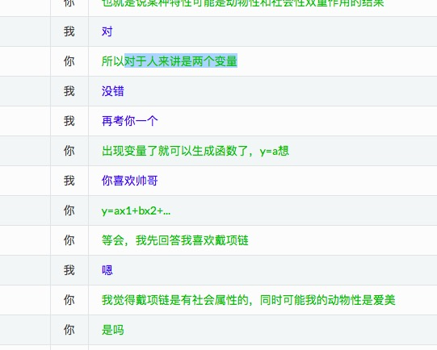
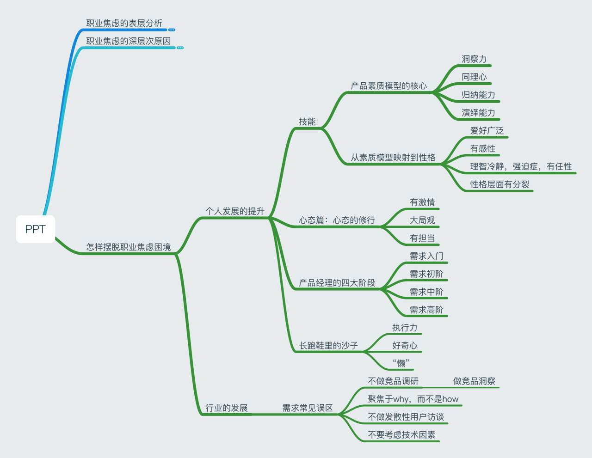
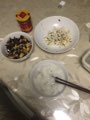
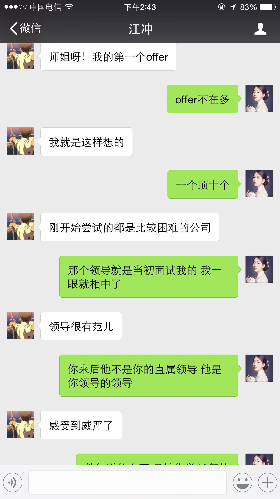
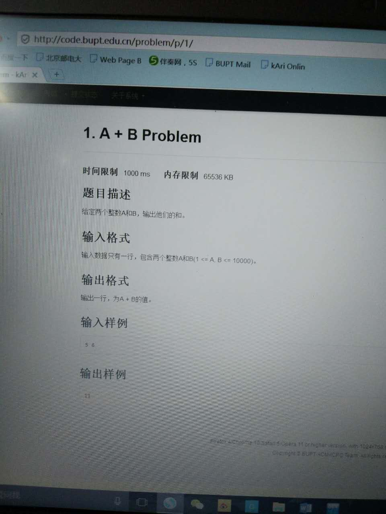
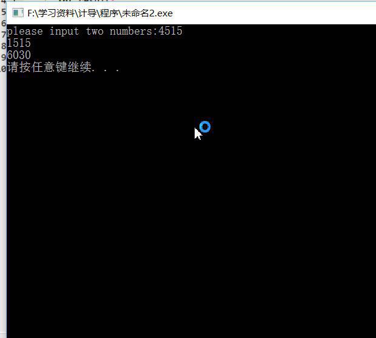
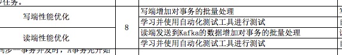
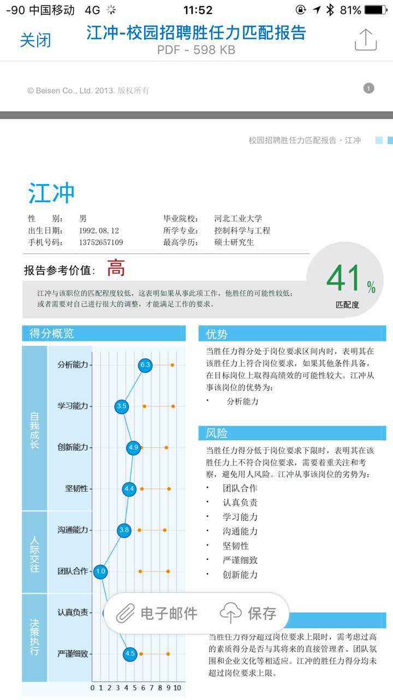
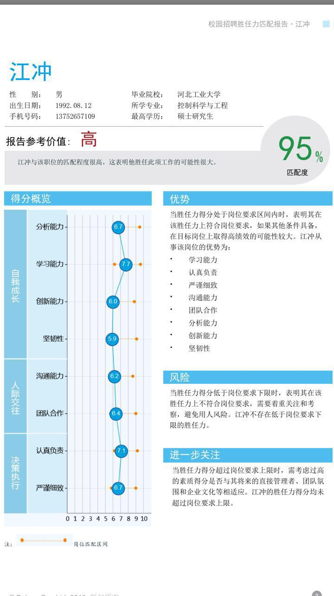

2016-10¶
2016-10-01¶
{kind=link}
{kind=link}
2016-10-03¶
{kind=link}
{kind=link}
{kind=link}
2016-10-05¶
| 2016-10-05 18:56:58 | 你 | 还有两个小时到宣化 |
| 2016-10-05 18:57:04 | 你 | 累死了 |
| 2016-10-05 18:57:26 | 我 | 这么晚 |
| 2016-10-05 18:57:39 | 我 | 坐一天车了吧 |
| 2016-10-05 18:58:22 | 你 | 是，早上五点就出发了 |
| 2016-10-05 18:59:05 | 我 | 这次回来你可得好好歇歇 |
| 2016-10-05 19:00:12 | 你 | 恩，明天睡一天 |
| 2016-10-05 19:00:35 | 我 | 李杰和你一起去张家口吗 |
| 2016-10-05 19:00:42 | 你 | 恩 |
| 2016-10-05 19:01:01 | 你 | 但是他明早五点半的火车回北京 |
| 2016-10-05 19:01:21 | 我 | 唉，比你还累 |
| 2016-10-05 19:01:32 | 你 | 是 |
| 2016-10-05 19:02:05 | 我 | 估计到家也得10点了 |
| 2016-10-05 19:02:14 | 我 | 睡不了几个小时 |
2016-10-08¶
| 2016-10-08 09:08:42 | 你 | 我前天睡觉做梦梦到严丹说我了 |
| 2016-10-08 09:08:56 | 我 | 说你啥了 |
| 2016-10-08 09:09:25 | 你 | 我忘了 |
| 2016-10-08 09:09:40 | 我 | 是工作的事情吗 |
| 2016-10-08 09:09:43 | 你 | 等会有空跟你说说我姐的进展 |
| 2016-10-08 09:09:48 | 我 | 好的 |
| 2016-10-08 09:09:49 | 你 | 不是工作的事 |
| 2016-10-08 09:12:05 | 你 | 听马姐这高跟鞋 |
| 2016-10-08 09:12:17 | 我 | 是 |
| 2016-10-08 09:12:25 | 你 | 让我想起一句话 |
| 2016-10-08 09:12:27 | 我 | 今天刘杰也是高跟鞋 |
| 2016-10-08 09:12:40 | 你 | 哈哈 |
| 2016-10-08 09:12:46 | 你 | 你想想我想的那句话 |
| 2016-10-08 09:12:57 | 我 | 我哪想得到呀 |
| 2016-10-08 09:13:10 | 你 | 丑人多做怪 |
| 2016-10-08 09:13:19 | 我 | 😄 |
| 2016-10-08 09:13:32 | 你 | 逗你开心下 |
| 2016-10-08 09:13:50 | 我 | 嗯 |
| 2016-10-08 09:23:34 | 你 | 服了马姐了 |
| 2016-10-08 09:23:39 | 你 | 拉着我说半天 |
| 2016-10-08 09:23:55 | 我 | 非要给你推销吧 |
| 2016-10-08 09:24:49 | 你 | 是啊 就他那眼光 他让我去 我也不能去 |
| 2016-10-08 10:05:04 | 我 | 你忙啥呢 |
| 2016-10-08 10:05:14 | 你 | 写周报 |
| 2016-10-08 10:05:32 | 我 | 哦，他们都给你了吗 |
| 2016-10-08 10:05:40 | 你 | 就差严丹的 |
| 2016-10-08 10:05:47 | 你 | 她节前跟我说了 |
| 2016-10-08 10:05:50 | 你 | 明天给我 |
| 2016-10-08 10:05:53 | 我 | 好的 |
| 2016-10-08 10:12:06 | 我 | 和华三的会改在北京了 |
| 2016-10-08 10:12:38 | 你 | 你收到邮件了吗 |
| 2016-10-08 10:12:45 | 我 | 是 |
| 2016-10-08 10:12:46 | 你 | 我看邮件里没有你 给你转了 |
| 2016-10-08 10:13:01 | 你 | 有 |
| 2016-10-08 10:13:04 | 你 | 看错了 |
| 2016-10-08 10:13:09 | 你 | 恩 |
| 2016-10-08 10:13:32 | 我 | 那我就不去了，你们去吧 |
| 2016-10-08 10:13:48 | 你 | 我觉得可以 |
| 2016-10-08 10:13:52 | 你 | 应该没啥问题 |
| 2016-10-08 10:14:02 | 我 | 嗯 |
| 2016-10-08 10:37:03 | 我 | 你为啥皱眉头 |
| 2016-10-08 10:37:26 | 你 | 听见旭明笑了 |
| 2016-10-08 10:37:32 | 你 | 笑得跟猪一样 |
| 2016-10-08 10:37:38 | 我 | 😄 |
| 2016-10-08 11:17:38 | 你 | 杨总回邮件了 那我不去了？ |
| 2016-10-08 11:17:57 | 我 | 没事，他只是指定一个负责人而已 |
| 2016-10-08 11:18:20 | 你 | 恩 都行 |
| 2016-10-08 11:18:27 | 你 | 我写完了 |
| 2016-10-08 11:18:31 | 你 | 刚才改改PPT |
| 2016-10-08 11:18:35 | 我 | 好的 |
| 2016-10-08 11:18:54 | 你 | 我在从西安回来的路上给我姐讲PPT来着 |
| 2016-10-08 11:19:04 | 你 | 讲的很差 而且就讲了一页 |
| 2016-10-08 11:19:28 | 你 | 昨天跟李杰说 今天晚上给她讲 |
| 2016-10-08 11:19:29 | 我 | 都那么累了还讲PPT |
| 2016-10-08 11:19:40 | 你 | 这件事比较重要啊 |
| 2016-10-08 11:19:52 | 你 | 所以今早她把PPT要去了 |
| 2016-10-08 11:20:02 | 我 | 重要才要一个好的状态呀 |
| 2016-10-08 11:20:05 | 你 | 我根据我讲的情况改了改 |
| 2016-10-08 11:20:26 | 你 | 就讲了一页 我想表达的东西太多了 讲的很乱 |
| 2016-10-08 11:21:18 | 你 | 是 |
| 2016-10-08 11:21:23 | 我 | 所以需要主次 |
| 2016-10-08 11:21:30 | 你 | 是 |
| 2016-10-08 11:21:34 | 你 | 我觉得也是 |
| 2016-10-08 11:21:37 | 我 | 你应该是先讲主要的 |
| 2016-10-08 11:21:40 | 你 | 我不能一股脑的讲 |
| 2016-10-08 11:21:46 | 我 | 这就需要提炼了 |
| 2016-10-08 11:21:52 | 你 | 而且必然会有一部分放弃的 |
| 2016-10-08 11:21:59 | 你 | 因为有那么一部分我还没理解 |
| 2016-10-08 11:22:02 | 你 | 讲不明白 |
| 2016-10-08 11:23:06 | 我 | 嗯，没事的 |
| 2016-10-08 11:23:36 | 你 | 没事 反正我讲的他们未必懂 |
| 2016-10-08 11:23:41 | 你 | 至少王洪越不懂 |
| 2016-10-08 11:23:46 | 我 | 😄 |
| 2016-10-08 11:23:54 | 你 | 他自己说的 |
| 2016-10-08 11:26:05 | 你 | 东西太多了 |
| 2016-10-08 13:20:18 | 你 | 我刚才喝水烫嘴了 |
| 2016-10-08 13:20:27 | 你 | 很疼 |
| 2016-10-08 13:20:36 | 我 | 啊 |
| 2016-10-08 13:20:52 | 我 | 厉害吗 |
| 2016-10-08 13:21:00 | 你 | 就是很疼 |
| 2016-10-08 13:21:06 | 你 | 还好没喝一大口 |
| 2016-10-08 13:21:34 | 你 | 我迷迷糊糊的 接完水就喝 喝完 激灵一下就醒了 |
| 2016-10-08 13:21:36 | 你 | 哼 |
| 2016-10-08 13:21:40 | 我 | 唉 |
| 2016-10-08 13:22:35 | 我 | 以后接水加点凉的 |
| 2016-10-08 13:31:25 | 我 | 你的PPT改完了吗 |
| 2016-10-08 13:32:39 | 你 | 恩 就改了一页 |
| 2016-10-08 13:32:44 | 你 | 你看嘛 |
| 2016-10-08 13:32:47 | 你 | 吗 |
| 2016-10-08 13:32:51 | 我 | 我看看吧 |
| 2016-10-08 13:34:23 | 你 | 放到同步文件夹了 |
| 2016-10-08 13:34:28 | 我 | 好 |
| 2016-10-08 13:36:24 | 我 | 第2页和第6页的标题不一样 |
| 2016-10-08 13:37:10 | 你 | 恩 忘改了 |
| 2016-10-08 13:37:25 | 你 | 把『完美』改成『理想』了 |
| 2016-10-08 13:37:36 | 我 | 嗯 |
| 2016-10-08 13:38:43 | 我 | 第三部分比以前好很多 |
| 2016-10-08 13:39:36 | 你 | 恩 |
| 2016-10-08 13:39:47 | 你 | 你看看 需要改哪 |
| 2016-10-08 13:39:55 | 你 | 我先说说我的思路啊 |
| 2016-10-08 13:40:07 | 我 | 第二部分master用了两页，是不是有点多 |
| 2016-10-08 13:40:10 | 你 | 我写PPT的本事 差好多 基本没写过 还得学习学习啊 |
| 2016-10-08 13:40:25 | 我 | 你写的不错 |
| 2016-10-08 13:40:44 | 我 | 其实你有空看看金字塔，里面有讲怎么写PPT |
| 2016-10-08 13:40:47 | 你 | master的 那个一张写不下 |
| 2016-10-08 13:40:50 | 你 | 我知道 |
| 2016-10-08 13:41:07 | 你 | 我先说说我的思路 |
| 2016-10-08 13:41:14 | 我 | 好的 |
| 2016-10-08 13:42:08 | 你 | 我之所以写理想的scrum 其实就是想发出思考 『为什么scrum是这种形式的』 通过描述 团队、个人引出scrum的形式 |
| 2016-10-08 13:42:30 | 你 | 这个主要是针对番薯那种 对scrum不理解 硬套scrum活动的人讲的 |
| 2016-10-08 13:42:41 | 你 | 我也没希望他会听 |
| 2016-10-08 13:42:54 | 我 | 嗯 |
| 2016-10-08 13:43:20 | 你 | 然后我贴了一张完整的scrum的活动图（从你那找出来的），到这 这部分就结束了 |
| 2016-10-08 13:43:47 | 你 | 其次想表达 敏捷对团队要求高 我们的敏捷和理想的还有差距 |
| 2016-10-08 13:43:56 | 你 | 这点只是想渗透的说 |
| 2016-10-08 13:44:05 | 你 | 我说 其实不合适 |
| 2016-10-08 13:44:12 | 我 | 嗯 |
| 2016-10-08 13:44:22 | 你 | 我没什么权利说我们的团队不好 |
| 2016-10-08 13:44:30 | 你 | 毕竟这个团队也不是我的 |
| 2016-10-08 13:45:51 | 你 | 其次就是说我理解的scrum 这部分我只把我真正理解的能讲出来讲下 比你上次讲得点少很多 我不理解的，我都没写 ，我理解了 讲不出来的 写了两三点 |
| 2016-10-08 13:46:13 | 你 | 不然就更少了 |
| 2016-10-08 13:46:45 | 你 | 最后就是我参与的 这部分只要还是想以问答的形式 讲 你看我写了很多问题 |
| 2016-10-08 13:47:11 | 你 | 找你那样全篇陈述式的 我根本讲不了 我的知识现在不成体系 |
| 2016-10-08 13:47:16 | 你 | 逻辑不闭环 |
| 2016-10-08 13:47:17 | 你 | 哈哈 |
| 2016-10-08 13:47:38 | 你 | 我想等跟李杰讲完 把我有疑惑的点再跟你问问 |
| 2016-10-08 13:47:56 | 我 | 好的 |
| 2016-10-08 13:48:03 | 你 | 没了 |
| 2016-10-08 14:19:08 | 我 | 其实你这个是一个三段论，三个部分是三个主题 |
| 2016-10-08 14:19:29 | 我 | 但是整个好像缺少一个中心 |
| 2016-10-08 14:19:37 | 你 | 恩 是 |
| 2016-10-08 14:19:40 | 你 | 没有中心 |
| 2016-10-08 14:20:03 | 我 | 你可以想想 |
| 2016-10-08 14:20:30 | 你 | 恩 好 |
| 2016-10-08 14:20:33 | 你 | 我想想 |
| 2016-10-08 15:09:21 | 你 | 侬干嘛呢 |
| 2016-10-08 15:09:30 | 我 | 没事，看新闻 |
| 2016-10-08 15:09:37 | 我 | 看你挺忙的 |
| 2016-10-08 15:09:43 | 你 | 我不忙 |
| 2016-10-08 15:10:05 | 你 | 刚才刘杰让我写个跟华三集成的用户故事 |
| 2016-10-08 15:10:10 | 你 | 我写完发出去了 |
| 2016-10-08 15:10:17 | 我 | 我看见了 |
| 2016-10-08 15:10:19 | 你 | 我跟你说说我跟我姐的交流情况 |
| 2016-10-08 15:10:32 | 你 | 我本来是要做8611 的那个功能梳理的 |
| 2016-10-08 15:10:37 | 我 | 好呀 |
| 2016-10-08 15:17:24 | 你 | 打完了 |
| 2016-10-08 15:17:29 | 我 | 好的 |
| 2016-10-08 15:18:16 | 你 | 我俩聊了很多 他开始还是很排斥 |
| 2016-10-08 15:18:58 | 你 | 主要解决的一个问题 就是她现在国美的定位问题 |
| 2016-10-08 15:19:01 | 你 | 你听不？ |
| 2016-10-08 15:19:06 | 我 | 听呢 |
| 2016-10-08 15:19:12 | 我 | 很认真的听 |
| 2016-10-08 15:19:37 | 你 | 嗯嗯 我想跟你说 一来你了解下我俩 二来 我想你确认下我说的对不对 |
| 2016-10-08 15:19:44 | 你 | 别等着说了一道 说错了 |
| 2016-10-08 15:19:45 | 我 | 好 |
| 2016-10-08 15:20:29 | 你 | 首先说邱的事 就是咱俩当初都劝他 找邱谈谈 她有一大堆的理由拒绝 |
| 2016-10-08 15:21:24 | 你 | 我有点乱 |
| 2016-10-08 15:21:31 | 你 | 你让我想一小会 |
| 2016-10-08 15:21:33 | 我 | 没事，你说吧 |
| 2016-10-08 15:22:45 | 你 | 后来就是说 邱可能没有想要她 就是用他 这也无所谓 但是要她做到 邱把她要了 就是主动出击 而不是被动等待 |
| 2016-10-08 15:23:01 | 你 | 就这一点我说了半宿她才明白过来 |
| 2016-10-08 15:23:32 | 我 | 唉 |
| 2016-10-08 15:23:35 | 你 | 她的观点就是 要得到邱的肯定 |
| 2016-10-08 15:23:59 | 你 | 她没有别的目标 就是每次邱表扬她 她就很开心 |
| 2016-10-08 15:24:17 | 你 | 我的观点还是 别埋头做事 先看好方向 |
| 2016-10-08 15:24:44 | 你 | 她肯定是看不上阎红彦的 正好看得上邱 就直接给自己站队 |
| 2016-10-08 15:24:54 | 我 | 嗯 |
| 2016-10-08 15:25:12 | 你 | 然后 主动『勾引』邱 慢慢的让邱把她当成自己人 |
| 2016-10-08 15:25:18 | 你 | 这才是战略目标啊 |
| 2016-10-08 15:25:21 | 你 | 对吧 |
| 2016-10-08 15:25:26 | 我 | 没错 |
| 2016-10-08 15:25:47 | 你 | 他是也不抬头 就知道干 干 干，每次表扬下 就满足的不行了 |
| 2016-10-08 15:25:54 | 你 | 典型的没大局观的表现 |
| 2016-10-08 15:25:59 | 我 | 嗯 |
| 2016-10-08 15:26:14 | 你 | 而且 邱对她的表扬 有可能是发自内心的 |
| 2016-10-08 15:26:28 | 你 | 有可能是就是为了让她给他卖命 |
| 2016-10-08 15:26:38 | 我 | 是 |
| 2016-10-08 15:26:44 | 你 | 如果是后者 岂不是很悲惨 完全是别人的棋子 |
| 2016-10-08 15:27:03 | 你 | 我说 他一点不听 就说自己讨厌政治 就要做项目 |
| 2016-10-08 15:27:12 | 你 | 这不就引出做项目的事了 |
| 2016-10-08 15:29:27 | 你 | 我说我听到谁跟我说『我就是想做项目 我只是为了项目。。。』那他就是傻瓜 |
| 2016-10-08 15:30:24 | 你 | 我们工作 更应该关注『自己想要什么』，而不是项目怎么样 |
| 2016-10-08 15:31:00 | 你 | 比如 项目做成 能够体现我的价值 那我做成，项目做不成 能锻炼我的能力 那就做不成 |
| 2016-10-08 15:31:11 | 我 | 嗯 |
| 2016-10-08 15:31:28 | 你 | 这种说法 听着好像是很别扭 但是我们思考的方向 应该是这个 |
| 2016-10-08 15:32:05 | 你 | 如果领导希望项目做成 我希望领导重用我 那我就得必须把项目做成 |
| 2016-10-08 15:32:34 | 你 | 项目做成与否 不是最主要的 最主要的是自己的收获 是否跟自己的目标方向一致 |
| 2016-10-08 15:32:51 | 你 | 当然大部分时候 都是希望项目做成的 |
| 2016-10-08 15:33:29 | 我 | 嗯 |
| 2016-10-08 15:33:34 | 你 | 然后说到这的时候 她好像是get点了 |
| 2016-10-08 15:33:42 | 你 | 然后就跟我一样顿悟了 |
| 2016-10-08 15:33:50 | 我 | 😄 |
| 2016-10-08 15:33:52 | 你 | 这个过程说起来这么两三句 |
| 2016-10-08 15:33:57 | 你 | 其实真的很长很长 |
| 2016-10-08 15:34:04 | 我 | 可以想象 |
| 2016-10-08 15:34:11 | 你 | 而且 他顿悟了 跟我一样 眼睛放光 |
| 2016-10-08 15:34:15 | 你 | 一直说一直说 |
| 2016-10-08 15:34:30 | 你 | 然后就豁然开朗了 就跟我讲她的体会 |
| 2016-10-08 15:34:34 | 我 | 有没有和你一样狂喜 |
| 2016-10-08 15:34:43 | 你 | 我听着她说的时候 跟我说的 其实还是有点差距的 |
| 2016-10-08 15:34:52 | 你 | 但是总算是攻克了一部分 |
| 2016-10-08 15:34:57 | 你 | 有啊 非常开心 |
| 2016-10-08 15:35:02 | 我 | 嗯 |
| 2016-10-08 15:35:03 | 你 | 一直说个没完 |
| 2016-10-08 15:35:05 | 你 | 就跟我一样 |
| 2016-10-08 15:35:07 | 你 | 哈哈 |
| 2016-10-08 15:35:16 | 你 | 我看着他 顿时觉得挺空虚的 |
| 2016-10-08 15:35:21 | 你 | 你看着我的时候会吗 |
| 2016-10-08 15:35:26 | 我 | 不会呀 |
| 2016-10-08 15:35:35 | 我 | 你为啥空虚呢 |
| 2016-10-08 15:35:38 | 你 | 不知道 |
| 2016-10-08 15:35:41 | 你 | 我也很奇怪 |
| 2016-10-08 15:35:47 | 你 | 你先别打断我 |
| 2016-10-08 15:35:49 | 你 | 我接着说 |
| 2016-10-08 15:35:56 | 你 | 应该还有一点点呢 |
| 2016-10-08 15:36:22 | 你 | 我俩的感性问题 |
| 2016-10-08 15:36:47 | 你 | 还有 你知道 他对产品的理解差很多 |
| 2016-10-08 15:37:14 | 你 | 她说阎红彦当时 拿着她写的周报 说她 说她写的根本不是产品干的活 是项目经理干的活 |
| 2016-10-08 15:37:26 | 你 | 你能想象 他写的是啥吧 |
| 2016-10-08 15:37:32 | 我 | 嗯 |
| 2016-10-08 15:37:46 | 你 | 大部分都是研发的做了什么 遇到哪些问题 或者研发的解决了什么问题 |
| 2016-10-08 15:38:08 | 你 | 然后我就跟她说了下 产品经理负责的事啥的 |
| 2016-10-08 15:38:20 | 你 | 这她才缓过神来 |
| 2016-10-08 15:38:26 | 我 | 😊 |
| 2016-10-08 15:38:38 | 你 | 别的都是很多细节的了 |
| 2016-10-08 15:38:44 | 你 | 大的没什么 |
| 2016-10-08 15:38:54 | 你 | 她说现在国美没有值得她留恋的 |
| 2016-10-08 15:39:07 | 你 | 上边的两个领导他都不喜欢 都看不上 |
| 2016-10-08 15:39:52 | 你 | 我说你应该找新的目标 现在还不是一直输出的阶段 还需要不断的给自己充电 |
| 2016-10-08 15:40:33 | 你 | 她说 她忙的根本没时间思考 他以后要从这些事里抽身出来 多给自己一点时间思考 然后很懈怠的生娃 生完娃准备跳槽 |
| 2016-10-08 15:41:07 | 你 | 很懈怠的工作 好有时间思考 顺便生娃 |
| 2016-10-08 15:41:15 | 我 | 😄 |
| 2016-10-08 15:41:21 | 你 | 刚才那个『很懈怠的生娃』写的不对 |
| 2016-10-08 15:41:27 | 你 | 而且拿着高薪 |
| 2016-10-08 15:41:35 | 你 | 以后就不那么拼了 |
| 2016-10-08 15:41:43 | 你 | 先生娃 |
| 2016-10-08 15:42:07 | 你 | 你知道他有一个很好的前同事 也有一个智囊 就像你对于我一样 |
| 2016-10-08 15:42:11 | 你 | 她很羡慕 |
| 2016-10-08 15:42:20 | 我 | 她说过 |
| 2016-10-08 15:42:25 | 你 | 我说你可以找老王啊 我跟他也是靠微信聊天的 |
| 2016-10-08 15:42:43 | 你 | 我当然希望她跟着我一块成长了 |
| 2016-10-08 15:42:49 | 我 | 是 |
| 2016-10-08 15:42:59 | 你 | 李杰跟我一样 素质比我还高 悟性也好 |
| 2016-10-08 15:43:20 | 你 | 主要她以前没入门 现在明显好了 就是这次聊天的结果 |
| 2016-10-08 15:43:37 | 你 | 真是太值了 虽然我被累的一直没缓过来 |
| 2016-10-08 15:43:39 | 你 | 哈哈 |
| 2016-10-08 15:44:00 | 我 | 不错 |
| 2016-10-08 15:44:11 | 我 | 你的功劳很大 |
| 2016-10-08 15:44:15 | 你 | 对啊 |
| 2016-10-08 15:44:44 | 你 | 就在那晚之前 你知道 我都要放弃她了 |
| 2016-10-08 15:44:54 | 你 | 她真的是点不化 |
| 2016-10-08 15:44:56 | 你 | 哈哈 |
| 2016-10-08 15:45:00 | 你 | 还好没放弃 |
| 2016-10-08 15:45:09 | 我 | 是 |
| 2016-10-08 15:45:37 | 我 | 回来有空我和她好好聊聊吧 |
| 2016-10-08 15:45:49 | 我 | 只是她的时间太少了 |
| 2016-10-08 15:49:23 | 你 | 慢慢的会好点 |
| 2016-10-08 15:49:37 | 你 | 还可以啦 入了门 修行就在自己了 |
| 2016-10-08 15:49:53 | 我 | 是 |
| 2016-10-08 15:49:54 | 你 | 短时间内 他是不会超越我了 |
| 2016-10-08 15:49:55 | 你 | 你信不 |
| 2016-10-08 15:50:00 | 我 | 我信 |
| 2016-10-08 15:50:17 | 你 | 我现在的土壤都比较健康 |
| 2016-10-08 15:50:24 | 你 | 她的环境差点 |
| 2016-10-08 15:50:32 | 我 | 是差很多 |
| 2016-10-08 15:50:41 | 你 | 对了 你知道她那个升职加薪的结是怎么解开的吗 |
| 2016-10-08 15:50:57 | 我 | 不知道 |
| 2016-10-08 15:51:01 | 你 | 她受了那么大的打击都没有反思 |
| 2016-10-08 15:51:06 | 你 | 出来 |
| 2016-10-08 15:51:19 | 你 | 我忘记是不是跟你说过了 |
| 2016-10-08 15:51:23 | 你 | 还是她跟你说过了 |
| 2016-10-08 15:51:45 | 你 | 邱总请她们吃饭 完 又给邱开的欢送会 |
| 2016-10-08 15:52:09 | 你 | 开会的时候 李杰挺蔫的 后来回到家 邱给李杰发微信了 |
| 2016-10-08 15:52:27 | 你 | 说的就是鼓励的话 |
| 2016-10-08 15:52:44 | 你 | 她很优秀啥的 |
| 2016-10-08 15:52:48 | 我 | 嗯 |
| 2016-10-08 15:52:49 | 你 | 之类的吧 |
| 2016-10-08 15:53:16 | 你 | 那家伙 她又泪奔了 说自己的付出啥的都值了 有邱这么一句话就行 |
| 2016-10-08 15:53:26 | 你 | 这才过去的 |
| 2016-10-08 15:53:32 | 我 | 唉 |
| 2016-10-08 15:53:37 | 你 | 当然这次邱说的话 肯定是真心的 |
| 2016-10-08 15:54:33 | 你 | 因为他已经不需要她了 还能说这种话 咱们姑且认为他真的是真心的吧 |
| 2016-10-08 15:55:04 | 你 | 其实换个角度想 如果她按照我说的那种方法做 就不会在意邱的这些甜言蜜语了 |
| 2016-10-08 15:56:04 | 你 | 这些甜言蜜语 只能是证明自己方向正确的锦上添花 |
| 2016-10-08 15:56:32 | 我 | 是 |
| 2016-10-08 15:58:33 | 你 | 她说她很讨厌 很看不上现在的领导 那就没有必要在他们身上花心思了 因为她根本不想辅佐她们 所以也没啥干的必要了 混日子 生娃 多好 |
| 2016-10-08 15:59:01 | 我 | 其实这种想法还是有点消极的 |
| 2016-10-08 15:59:11 | 你 | 那你说说 |
| 2016-10-08 15:59:39 | 你 | 我还有半句 |
| 2016-10-08 15:59:43 | 你 | 你等我说完 |
| 2016-10-08 16:01:35 | 我 | 人家之所以能在这个位置，肯定有某些过人之处。先要找出来这些，然后再决定我们是不是蔑视。像现在李杰这样就是有点消极了，觉得不值得花心思就放弃了。 |
| 2016-10-08 16:02:41 | 你 | 是 |
| 2016-10-08 16:02:46 | 你 | 你说的对 |
| 2016-10-08 16:03:02 | 你 | 没准是她根本不懂 才觉得没水平 |
| 2016-10-08 16:03:17 | 我 | 嗯 |
| 2016-10-08 16:05:02 | 你 | 就像我以前看王洪越一样 |
| 2016-10-08 16:05:17 | 我 | 是的 |
| 2016-10-08 16:05:32 | 我 | 你现在已经不象以前那样偏激了 |
| 2016-10-08 17:33:02 | 我 | 你们还没完事吗 |
| 2016-10-08 19:35:12 | 我 | 今天聊的很高兴 |
| 2016-10-08 19:35:28 | 你 | 恩 我也是 |
| 2016-10-08 19:38:04 | 你 | 今天太棒了 竟然有这么好的环境 允许咱俩这么聊天 |
| 2016-10-08 19:38:12 | 你 | 我真的很喜欢 很喜欢听你说话 |
| 2016-10-08 19:38:25 | 我 | 我也是 |
| 2016-10-08 19:38:32 | 你 | 真的吗 |
| 2016-10-08 19:38:36 | 你 | 我没看出来啊 |
| 2016-10-08 19:40:11 | 你 | 在表达表达 你有多想跟我聊天 |
| 2016-10-08 19:40:18 | 你 | 这样我才有勇气一直找你 |
| 2016-10-08 19:40:20 | 你 | 嘻嘻 |
| 2016-10-08 19:40:25 | 我 | 可以和你一直聊 |
| 2016-10-08 19:40:34 | 我 | 我是不想走的 |
| 2016-10-08 19:40:48 | 你 | 我要的不是这个 |
| 2016-10-08 19:40:59 | 你 | 你为什么每次都能给我这么多惊喜 |
| 2016-10-08 19:41:07 | 你 | 每次都是 |
| 2016-10-08 19:41:16 | 我 | 因为我知道你需要什么 |
| 2016-10-08 19:42:19 | 你 | 我也不知道你的这个答案 对不对 |
| 2016-10-08 19:42:29 | 你 | 但是 事实就是每次都有惊喜 |
| 2016-10-08 19:42:35 | 我 | 这么说吧 |
| 2016-10-08 19:42:58 | 我 | 我知道你需要什么这个 道 |
| 2016-10-08 19:43:11 | 你 | 恩 |
| 2016-10-08 19:43:20 | 我 | 每次都是给你定制的 |
| 2016-10-08 19:43:21 | 你 | 那这个道是什么呢 |
| 2016-10-08 19:43:26 | 你 | 恩 |
| 2016-10-08 19:43:36 | 你 | 你知道我为什么喜欢跟你聊天吗 |
| 2016-10-08 19:44:34 | 你 | 那种感觉就好像是 我们通过沟通 我就能达收获很多 而这个沟通的过程 给我的感觉 就是我问得问题都是那么恰到好处 |
| 2016-10-08 19:44:47 | 你 | 其实不是我问问题恰到好处 |
| 2016-10-08 19:44:58 | 你 | 是你回答的每次都恰到好处 |
| 2016-10-08 19:45:07 | 我 | 😄 |
| 2016-10-08 19:45:08 | 你 | 真的好喜欢 啊！！！！！！！！！！！！ |
| 2016-10-08 19:45:37 | 你 | 我都开心的要炸了 |
| 2016-10-08 19:45:51 | 我 | 哈哈 |
| 2016-10-08 19:46:12 | 你 | 其实我今天跟你讨论 你说我的时候 我是很沮丧的 |
| 2016-10-08 19:46:23 | 我 | 我看出来了 |
| 2016-10-08 19:46:30 | 你 | 我要走了 |
| 2016-10-08 19:46:32 | 你 | 明天说 |
| 2016-10-08 19:46:38 | 我 | 当时我还后悔说你太狠了 |
| 2016-10-08 19:46:39 | 你 | 别回了 |
| 2016-10-08 19:46:43 | 你 | 没有 |
| 2016-10-08 19:46:47 | 你 | 真的 没有 |
| 2016-10-08 19:46:51 | 你 | 你就该那么说我 |
| 2016-10-08 19:46:52 | 你 | 别回了 |
2016-10-09¶
{kind=link}
2016-10-10¶
| 2016-10-10 11:35:41 | 我 | 你们完事了吗 |
| 2016-10-10 11:42:51 | 你 | 完了，吃饭 |
| 2016-10-10 11:43:18 | 我 | 好的，有什么事情吗 |
| 2016-10-10 11:43:43 | 你 | 没事 |
| 2016-10-10 11:43:57 | 你 | 了解的东西也不多，而且我又说错话了 |
| 2016-10-10 11:44:07 | 我 | 下午你还来公司吗 |
| 2016-10-10 11:44:19 | 你 | 他俩说不去了 |
| 2016-10-10 11:44:28 | 你 | 赶回去得3点了 |
| 2016-10-10 11:44:32 | 我 | 那你也别来了 |
| 2016-10-10 11:44:34 | 你 | 最早 |
| 2016-10-10 11:45:00 | 我 | 李杰联系你了吗 |
| 2016-10-10 11:45:08 | 你 | 我不想找他了 |
| 2016-10-10 11:45:19 | 我 | 哦 |
| 2016-10-10 11:45:40 | 你 | 基本什么也没说 |
| 2016-10-10 11:45:49 | 你 | 沟通成本太高了 |
| 2016-10-10 11:46:09 | 我 | 正常 |
| 2016-10-10 12:42:50 | 你 | 吃完了 |
| 2016-10-10 12:43:03 | 我 | 好的 |
| 2016-10-10 12:43:22 | 你 | 你跟番薯说啥呢 |
| 2016-10-10 12:43:54 | 我 | 昨天下午的会，他给我的信息和领导给我的信息不一致 |
| 2016-10-10 12:47:12 | 你 | 恩 |
| 2016-10-10 13:11:38 | 你 | 等地铁呢 |
| 2016-10-10 13:11:56 | 你 | 我们买的2:40到南站的票 |
| 2016-10-10 13:12:08 | 你 | 这种沟通太浪费时间了 |
| 2016-10-10 13:13:39 | 你 | 现在华三就知道要做，他们那边也在做，但技术攻克不了（读端拿不到好的数据），所以才找咱们 |
| 2016-10-10 13:14:18 | 你 | 为啥找咱们他们也不知道， |
| 2016-10-10 13:15:04 | 你 | 最开始华三跟国调签合同时觉得同步不难，就直接答应了，结果自己做不了， |
| 2016-10-10 13:16:04 | 你 | 国调是不会再给华三钱了 |
| 2016-10-10 13:42:32 | 我 | 刚才睡觉了 |
| 2016-10-10 13:42:43 | 我 | 你们到南站了吗 |
| 2016-10-10 13:42:51 | 你 | 没呢 |
| 2016-10-10 13:42:53 | 你 | 睡吧 |
| 2016-10-10 13:43:16 | 我 | 醒了，你早上几点出门的 |
| 2016-10-10 15:10:39 | 我 | 下车了吗 |
| 2016-10-10 15:28:03 | 我 | 气死我啦[抓狂][抓狂][抓狂][抓狂][抓狂][抓狂] |
| 2016-10-10 15:31:16 | 你 | 咋了 |
| 2016-10-10 15:32:48 | 我 | 明天汇报用的PPT老田都没发给我，领导里面发现问题后来说我 |
| 2016-10-10 15:33:00 | 我 | 说我不管团队的整体 |
| 2016-10-10 15:33:38 | 我 | 又说钱的事情 |
| 2016-10-10 15:34:19 | 我 | 我连毛都没看见，就劈头盖脸说我一顿 |
| 2016-10-10 15:34:28 | 我 | 气死我了 |
| 2016-10-10 15:40:38 | 你 | 那你没说吗 |
| 2016-10-10 15:40:50 | 你 | 就说他没让你管啊 |
| 2016-10-10 15:40:56 | 我 | 说了 |
| 2016-10-10 15:41:01 | 你 | 刚才打车 |
| 2016-10-10 15:41:17 | 你 | 领导说啥了 |
| 2016-10-10 15:41:37 | 我 | 稍等一下 |
| 2016-10-10 15:46:34 | 我 | 回来再说吧，现在正在改PPT呢，领导又把活扔给我了[发怒] |
| 2016-10-10 15:46:45 | 你 | 恩，改吧 |
| 2016-10-10 15:46:50 | 你 | 先干活 |
| 2016-10-10 16:09:48 | 我 | 好了，工作安排出去了，你到家了吗 |
| 2016-10-10 16:16:31 | 你 | 刚进家门 |
| 2016-10-10 16:17:04 | 我 | 好的，歇会吧 |
| 2016-10-10 16:21:00 | 你 | 你跟领导说没看到ppt 领导咋说的 |
| 2016-10-10 16:23:33 | 我 | 领导说这事你得管呀 |
| 2016-10-10 16:23:57 | 我 | 然后就啪啦啪啦说一大堆 |
| 2016-10-10 16:24:35 | 你 | 当着大伙？ |
| 2016-10-10 16:24:40 | 我 | 说你们要站在团队整体的角度，要考虑团队整体的利益 |
| 2016-10-10 16:24:42 | 我 | 对呀 |
| 2016-10-10 16:24:59 | 你 | 你说没看到ppt老田啥反应 |
| 2016-10-10 16:25:15 | 我 | 老田当时打电话 |
| 2016-10-10 16:25:45 | 你 | 唉 |
| 2016-10-10 16:25:52 | 你 | 上次不也是这 |
| 2016-10-10 16:26:02 | 你 | 番薯给背的锅 |
| 2016-10-10 16:26:12 | 你 | 真麻烦 |
| 2016-10-10 16:26:19 | 我 | 是 |
| 2016-10-10 16:26:40 | 你 | 今天领导不忙吗 |
| 2016-10-10 16:26:44 | 我 | 忙 |
| 2016-10-10 16:27:06 | 你 | 你这个位置太难做了 |
| 2016-10-10 16:27:09 | 我 | 明天开会的PPT他肯定要看 |
| 2016-10-10 16:27:16 | 我 | 唉 |
| 2016-10-10 16:27:18 | 你 | 碰上老田那样的 |
| 2016-10-10 16:27:42 | 我 | 这次还真是老田一句都没和我说过 |
| 2016-10-10 16:27:52 | 我 | 我还奇怪呢 |
| 2016-10-10 16:28:02 | 我 | 问你个事情 |
| 2016-10-10 16:28:07 | 你 | 恩 |
| 2016-10-10 16:28:40 | 我 | 你放假回来是不是写周报和人力分解了 |
| 2016-10-10 16:29:02 | 你 | 是啊，都是放假回来提给他的 |
| 2016-10-10 16:29:28 | 我 | 田给领导的邮件是发了一封还是两封 |
| 2016-10-10 16:29:40 | 你 | 我就收到一封 |
| 2016-10-10 16:29:44 | 我 | 我只收到一封，以前是两封 |
| 2016-10-10 16:30:00 | 你 | 他就发了一个 |
| 2016-10-10 16:30:07 | 你 | 周报他没发 |
| 2016-10-10 16:30:26 | 你 | 他只发了人力分解的，不行以后我每次发给你得了 |
| 2016-10-10 16:30:37 | 你 | 这样你就不用等着他的 |
| 2016-10-10 16:30:40 | 你 | 你说呢 |
| 2016-10-10 16:30:52 | 我 | 不是 |
| 2016-10-10 16:31:00 | 我 | 我不看这个 |
| 2016-10-10 16:31:20 | 我 | 我是想知道他发了几个，是不是没给我发 |
| 2016-10-10 16:31:28 | 你 | 发了一个 |
| 2016-10-10 16:31:30 | 我 | 就像这次PPT |
| 2016-10-10 16:31:36 | 你 | 没有 |
| 2016-10-10 16:31:52 | 我 | 老杨上来就问我代码行数 |
| 2016-10-10 16:32:08 | 我 | 说多少页的数据我知道不 |
| 2016-10-10 16:32:17 | 我 | 当时就把我问傻了 |
| 2016-10-10 16:32:28 | 你 | 这件事他最起码也得先发给你，你俩觉得可以再发给领导啊 |
| 2016-10-10 16:32:40 | 你 | 真晕 |
| 2016-10-10 16:33:38 | 我 | 这个其实不好这么说，他就是发给我 我也不会像领导这么看 |
| 2016-10-10 16:34:01 | 你 | 哦 |
| 2016-10-10 16:34:34 | 我 | 最近事情太多，这类事情我一般不管 |
| 2016-10-10 16:34:55 | 我 | 当初工作职责划分老田对外 我对内 |
| 2016-10-10 16:35:18 | 我 | 所以这些PPT的事情本来不应该是我的事情 |
| 2016-10-10 16:35:29 | 你 | 现在领导不就是怪你不管么 |
| 2016-10-10 16:35:43 | 我 | 可是我要是这么一说领导又该说我不顾大局了 |
| 2016-10-10 16:35:57 | 我 | 现在就是这样呀 |
| 2016-10-10 16:35:58 | 你 | 他现在就是这个意思啊 |
| 2016-10-10 16:36:01 | 你 | 哈哈 |
| 2016-10-10 16:36:15 | 你 | 我就说你俩职责不分 |
| 2016-10-10 16:36:35 | 我 | 从领导那就没分清 |
| 2016-10-10 16:36:36 | 你 | 领导还说是执行力的事，说各扫门前雪 |
| 2016-10-10 16:36:55 | 我 | 他就是谁能干就让谁干 |
| 2016-10-10 16:37:03 | 你 | 上次同步工具得事他闹，他说的 |
| 2016-10-10 16:37:15 | 我 | 没想过职责划分 |
| 2016-10-10 16:37:20 | 你 | 他也不想分清你信不 |
| 2016-10-10 16:37:43 | 你 | 他不相信田的能力，想让你帮他，又不给你好处 |
| 2016-10-10 16:37:55 | 我 | 我信 |
| 2016-10-10 16:37:57 | 你 | 这事全在田 |
| 2016-10-10 16:38:05 | 你 | 他不会做事 |
| 2016-10-10 16:38:13 | 你 | 能力不行，态度不行 |
| 2016-10-10 16:38:45 | 我 | 没错 |
| 2016-10-10 16:39:11 | 你 | 你们俩现在特别明显，就是我说的那样 |
| 2016-10-10 16:39:48 | 你 | 你说，对外是老田开发中心一把手，对内什么活都得你俩干 |
| 2016-10-10 16:40:02 | 你 | 那不是用你捧他么 |
| 2016-10-10 16:40:11 | 我 | 我觉得领导其实心里很清楚 |
| 2016-10-10 16:40:19 | 你 | 他最清楚不过了 |
| 2016-10-10 16:40:32 | 我 | 他着急是因为明天要是这样去他丢脸 |
| 2016-10-10 16:40:41 | 我 | 所以才会对我发火 |
| 2016-10-10 16:40:42 | 你 | 老田啥脾气，啥能力他能不清楚 |
| 2016-10-10 16:40:46 | 你 | 对啊 |
| 2016-10-10 16:41:12 | 你 | 就是，到这时候，他肯定管不了那么多，先把事解决 |
| 2016-10-10 16:41:17 | 我 | 是 |
| 2016-10-10 16:41:36 | 你 | 我说老田不会做事，不会看人 |
| 2016-10-10 16:41:40 | 我 | 所以给我派了一堆活 |
| 2016-10-10 16:41:59 | 你 | 是因为，你本来也没心思跟他争，他总觉得你是对手 |
| 2016-10-10 16:42:01 | 我 | 我现在还得给老田擦屁股 |
| 2016-10-10 16:42:02 | 你 | 傻瓜 |
| 2016-10-10 16:42:10 | 我 | 没错 |
| 2016-10-10 16:42:17 | 你 | 你当然得给他擦屁股了， |
| 2016-10-10 16:42:45 | 你 | 领导就是要你指导他 |
| 2016-10-10 16:42:53 | 你 | 你看领导对你的态度， |
| 2016-10-10 16:43:25 | 我 | 我才不教他呢 |
| 2016-10-10 16:43:26 | 你 | 啥时候都是挺好的，至少我们下边人觉得，有啥事都跟你商量 |
| 2016-10-10 16:43:37 | 我 | 平时那么拽 |
| 2016-10-10 16:43:46 | 你 | 结果呢，开发中心弄好了，他升到产品线， |
| 2016-10-10 16:44:01 | 你 | 现在他想用同样的方式拉老田 |
| 2016-10-10 16:44:38 | 你 | 可是老田那性格缺陷那么多，要是有领导一半会来事，没准早升了 |
| 2016-10-10 16:45:15 | 我 | 是 |
| 2016-10-10 16:45:29 | 你 | 老田就这样了，他再升很难 |
| 2016-10-10 16:45:41 | 你 | 除非突破自己性格的天花板 |
| 2016-10-10 16:46:11 | 你 | 格局太小了 |
| 2016-10-10 16:46:24 | 我 | 就是，还没你大呢 |
| 2016-10-10 16:46:33 | 你 | 你看领导啥时候偏袒过研发，测试，需求， |
| 2016-10-10 16:46:56 | 你 | 他这测试出来了，把测试当他家后花园了 |
| 2016-10-10 16:47:12 | 你 | 就需求测试两个组，搞得成这样 |
| 2016-10-10 16:47:38 | 你 | 你还生气吗 |
| 2016-10-10 16:47:52 | 你 | 本来是你诉苦，现在换成我了 |
| 2016-10-10 16:48:08 | 我 | 😄，我没事了 |
| 2016-10-10 16:48:20 | 我 | 你赶紧歇会吧，起那么早 |
| 2016-10-10 16:49:21 | 你 | 我把我的围巾丢了 |
| 2016-10-10 16:49:28 | 你 | 我都不知道丢哪了 |
| 2016-10-10 16:49:38 | 我 | 啊 |
| 2016-10-10 16:49:42 | 你 | 唉，我觉得是滴滴车shang |
| 2016-10-10 16:49:48 | 你 | 我今天特别挫败 |
| 2016-10-10 16:49:54 | 我 | 唉，都怨我 |
| 2016-10-10 16:50:05 | 我 | 不该和你说这些 |
| 2016-10-10 16:50:26 | 你 | 你现在什么毛病 |
| 2016-10-10 16:50:31 | 你 | 跟你有什么关系 |
| 2016-10-10 16:50:39 | 你 | 是我自己，丢三落四的 |
| 2016-10-10 16:51:00 | 我 | 我要是不和你说，没准你就记着了 |
| 2016-10-10 16:51:31 | 你 | 跟你没关系 |
| 2016-10-10 16:52:13 | 我 | 说说你吧，为啥有挫败感 |
| 2016-10-10 16:52:33 | 我 | 你累吗，要是累就先休息一会 |
| 2016-10-10 16:54:33 | 你 | 我今天一共没说几句话 |
| 2016-10-10 16:54:42 | 你 | 说了两句话都说错了 |
| 2016-10-10 16:55:01 | 你 | 不过都是跟咱们公司的销售说的 好歹没丢人丢到对方去 |
| 2016-10-10 16:55:13 | 我 | 是不是都是番薯在说 |
| 2016-10-10 16:55:24 | 你 | 是 |
| 2016-10-10 16:55:39 | 你 | 其实番薯也没说多少 基本都是销售的在说 |
| 2016-10-10 16:55:51 | 我 | 情况比我预料的要糟 |
| 2016-10-10 16:55:58 | 你 | 咋了？ |
| 2016-10-10 16:56:17 | 我 | 华三其实还没有准备好 |
| 2016-10-10 16:56:26 | 你 | 你说的很对 |
| 2016-10-10 16:56:43 | 你 | 华三那边 简直就是八字没一撇呢 |
| 2016-10-10 16:56:48 | 我 | 这事要是做不成咱们可能要给华三背锅 |
| 2016-10-10 16:57:23 | 你 | 我给你简单说下 |
| 2016-10-10 16:57:35 | 你 | 可能比较长 你可以不回我 |
| 2016-10-10 16:57:47 | 我 | 好 |
| 2016-10-10 16:57:50 | 你 | 然后我还得写个出行报告 |
| 2016-10-10 16:58:05 | 我 | 出行报告不是番薯写吗 |
| 2016-10-10 16:58:12 | 你 | 他让我写 |
| 2016-10-10 16:58:27 | 我 | 偷懒 |
| 2016-10-10 16:58:30 | 你 | 不过他基本口头都跟我说了 |
| 2016-10-10 16:58:43 | 你 | 没事 我写就我写吧 还练练 |
| 2016-10-10 16:58:46 | 我 | 好的，你也正好锻炼一下 |
| 2016-10-10 16:58:51 | 你 | 是 |
| 2016-10-10 16:59:00 | 你 | 这个还没完呢 我们还得去 |
| 2016-10-10 16:59:28 | 我 | 是 |
| 2016-10-10 16:59:38 | 你 | 华三那边是先答应了国调的需求 说功能都有 这才签了合同 结果没发现这个这么难搞 |
| 2016-10-10 17:00:09 | 你 | 他们自己也在做 但是解析CDC的数据时 只解析了3种 局方要求12种 |
| 2016-10-10 17:01:29 | 你 | 华三的技术过来 问了几个特别细节的技术问题 其实是想自己做 咱们帮他们解决问题， |
| 2016-10-10 17:01:51 | 你 | 但是咱们这边肯定不答应啊 而且CDC解析也不可能告诉他们 |
| 2016-10-10 17:02:04 | 我 | 嗯 |
| 2016-10-10 17:03:11 | 你 | 所以就说 解析这块(就是读) 肯定得数据库厂商做 |
| 2016-10-10 17:03:39 | 你 | 但是传输和写谁做 得双方商务谈 |
| 2016-10-10 17:03:50 | 我 | 嗯 |
| 2016-10-10 17:04:46 | 你 | 等华三走了后讨论了一会，牟魏的意思是咱们只做读 因为技术含量主要在这边 写那边谁都能做 |
| 2016-10-10 17:05:01 | 你 | 唐骞的意思是 都做 这样咱们就站住脚了 |
| 2016-10-10 17:05:26 | 你 | 但是究竟做什么 得商务的谈 |
| 2016-10-10 17:05:54 | 你 | 他们谈完 如果咱们只做读 那么就再跟华三的确认接口 |
| 2016-10-10 17:06:43 | 你 | 这部分也问到了几句 就是现在他们不是已经实现了三种的解析么 他们是把数据解析成文件 落地 然后靠ETL写进去的 |
| 2016-10-10 17:08:02 | 你 | 也就是 如果商务定下来 咱们只做读 那就从CDC解析数据 然后吐给他们 双方再定一下协议和接口 |
| 2016-10-10 17:08:22 | 我 | 嗯 |
| 2016-10-10 17:08:28 | 你 | 但是 如果商务说全做 这个就没谈 |
| 2016-10-10 17:08:47 | 你 | 还有 华三跟国调那边说的有个deadline是11月底 |
| 2016-10-10 17:09:15 | 你 | 华三的技术 对国调的业务是一点不知道 |
| 2016-10-10 17:09:23 | 我 | 哦 |
| 2016-10-10 17:09:27 | 你 | 销售也不知道 |
| 2016-10-10 17:09:47 | 你 | 这个业务指的是 同步工具需要同步的业务 |
| 2016-10-10 17:10:02 | 你 | 他们就是知道要把A库的数据搬到B库去 |
| 2016-10-10 17:10:15 | 你 | 具体搬的是啥 他们也没考虑 |
| 2016-10-10 17:10:30 | 我 | 唉 |
| 2016-10-10 17:10:40 | 你 | 知道有12种数据类型要搬 |
| 2016-10-10 17:10:53 | 你 | 就开始从CDC解数据 |
| 2016-10-10 17:11:27 | 你 | 没了 今天交流的就这些 然后我们这边也跟他们说 尽早定 |
| 2016-10-10 17:12:00 | 你 | 我跟你说说我说错话的两个关键点 |
| 2016-10-10 17:12:14 | 我 | 嗯 |
| 2016-10-10 17:12:27 | 你 | 你别安慰我 虽然我很懊恼 但是我想让我自己记住这种感觉 下次长记性 |
| 2016-10-10 17:12:59 | 我 | 好 |
| 2016-10-10 17:13:05 | 你 | 一个是 华三人走后 牟魏认为只做读 唐骞说都做这点上我说了句话 |
| 2016-10-10 17:13:33 | 你 | 我说咱们研发这边是都能做 就看你们确定的结果 |
| 2016-10-10 17:13:45 | 你 | 这个工具本身定位就是个完整的工具 |
| 2016-10-10 17:14:01 | 你 | 可以做成全的 |
| 2016-10-10 17:14:10 | 你 | 番薯说我一顿 |
| 2016-10-10 17:14:18 | 你 | 说咱们不是做产品 是做项目 |
| 2016-10-10 17:14:24 | 你 | 工期紧 |
| 2016-10-10 17:14:35 | 你 | 咱们肯定是乐意只做读 |
| 2016-10-10 17:14:40 | 你 | 这是一点 |
| 2016-10-10 17:15:02 | 你 | 第二点是 临走的时候 牟魏问有多少人在开发这个工具 |
| 2016-10-10 17:15:07 | 你 | 番薯说有5个 |
| 2016-10-10 17:15:30 | 你 | 我说哪有那么多 开发的两个 测试1个 需求的兼职 还有一个质控的 |
| 2016-10-10 17:15:36 | 你 | 然后番薯说我一顿 |
| 2016-10-10 17:15:39 | 你 | 唉 |
| 2016-10-10 17:16:07 | 你 | 他说跟销售的得往多里说 这样他们才觉得重视 |
| 2016-10-10 17:16:32 | 我 | 嗯，第二个番薯说的对 |
| 2016-10-10 17:16:48 | 你 | 我知道我错了 |
| 2016-10-10 17:17:04 | 我 | 第一个你错哪了？ |
| 2016-10-10 17:17:26 | 你 | 而且番薯说了 以后他即使错了 也不能当着外人纠正他 显得内部都不统一 |
| 2016-10-10 17:17:56 | 你 | 第一个 番薯的意思是 只做读 简单 工期紧张的话 研发的压力没那么大 |
| 2016-10-10 17:19:13 | 我 | 这个不是理由 |
| 2016-10-10 17:19:51 | 你 | 还有唐骞说 如果只做读 到时候性能不能满足需求 会扯皮 |
| 2016-10-10 17:20:08 | 我 | 如果只做读是违反武总定义的这个架构和我们产品化的方向的 |
| 2016-10-10 17:20:11 | 你 | 对了 他们华三之所以做不了的一个重要重要原因就是速度不行 |
| 2016-10-10 17:20:25 | 我 | 嗯 |
| 2016-10-10 17:20:37 | 我 | 我们现在也没有测试速度 |
| 2016-10-10 17:20:41 | 你 | 对啊 |
| 2016-10-10 17:20:43 | 我 | 后面要加强 |
| 2016-10-10 17:20:53 | 你 | 北京到上海的速度咱们也没测 |
| 2016-10-10 17:21:34 | 你 | 要是只做读 就是读出来-解析-落地-吐给ETL这个性能能行吗 |
| 2016-10-10 17:21:54 | 我 | 这些细节回来再说 |
| 2016-10-10 17:22:16 | 我 | 后续让马大姐加强性能的测试 |
| 2016-10-10 17:22:17 | 你 | 恩 |
| 2016-10-10 17:22:21 | 你 | 恩 |
| 2016-10-10 17:22:42 | 你 | 昨天马姐说 做事务的同步时速度慢 等我待会问问她今天的测试结果 |
| 2016-10-10 17:23:05 | 你 | 关于同步工具的需求 几乎没提到 华三的也不知道 |
| 2016-10-10 17:23:21 | 你 | 说这个等确定谁做什么后 跟国调的一起谈 |
| 2016-10-10 17:25:28 | 你 | 还有一点点 就是速度的事 本来数据的同步是华三答应的 由于速度慢 功能也实现不了 导致华三的销售被骂的很惨 后来咱们的销售跟国调的领导说 这个是数据库层面的事 应该是数据库厂商负责 |
| 2016-10-10 17:25:38 | 你 | 让平台的做确实很难 |
| 2016-10-10 17:25:44 | 我 | 嗯 |
| 2016-10-10 17:25:54 | 你 | 这才国调的给华三施压 让华三找咱们 |
| 2016-10-10 17:26:21 | 你 | 而钱应该是 华三给 因为华三已经承若国调能做了 |
| 2016-10-10 17:26:43 | 你 | 但是承诺的只是功能 性能没怎么提 所以又开始扯皮了 |
| 2016-10-10 17:26:57 | 你 | 这算是项目背景吧 跟咱们没啥关系 |
| 2016-10-10 17:27:15 | 我 | 好的 |
| 2016-10-10 17:27:47 | 我 | 你参加一次你就知道了，你们平时做需求是多么幸福 |
| 2016-10-10 17:27:48 | 你 | 我就是想把我知道的都告诉你 |
| 2016-10-10 17:27:54 | 你 | 是 |
| 2016-10-10 17:28:03 | 你 | 这次我感触特别深 |
| 2016-10-10 17:28:05 | 你 | 真的 |
| 2016-10-10 17:28:29 | 我 | 说实话我已经考虑最坏情况了，结果比我想的还糟糕 |
| 2016-10-10 17:28:34 | 你 | 我觉得我对这些就是真白痴 |
| 2016-10-10 17:28:42 | 你 | 抓不住重点 |
| 2016-10-10 17:28:48 | 我 | 这些就是经验了 |
| 2016-10-10 17:28:56 | 你 | 但好在见生人不那么唯唯诺诺的了 |
| 2016-10-10 17:29:09 | 我 | 没有办法，这些我没法教给你 |
| 2016-10-10 17:29:14 | 你 | 对啊 |
| 2016-10-10 17:29:22 | 你 | 我得多经历 |
| 2016-10-10 17:29:34 | 我 | 要是之前我告诉你会是这样，你一定认为我杞人忧天 |
| 2016-10-10 17:29:52 | 你 | 是吧 |
| 2016-10-10 17:30:05 | 你 | 我觉得这次出去准备的还是非常不充分 |
| 2016-10-10 17:30:15 | 我 | 没法充分 |
| 2016-10-10 17:30:28 | 你 | 我跟你说啊 |
| 2016-10-10 17:30:32 | 我 | 好的 |
| 2016-10-10 17:30:52 | 你 | 我们三个都知道我们干啥去了 我们带着一堆的问题去了 但是我们没有思考对方干啥来 |
| 2016-10-10 17:31:08 | 你 | 我们想的 坐下来我们问 人家就答 其实根本不是 |
| 2016-10-10 17:31:23 | 你 | 中间有一段完全是人家问 我们蒙 |
| 2016-10-10 17:31:44 | 你 | 所以华三的两个傻X也是 带着一堆超级细节的问题 跟销售谈 |
| 2016-10-10 17:31:48 | 你 | 他们还不如我们 |
| 2016-10-10 17:32:08 | 我 | 哈哈 |
| 2016-10-10 17:32:22 | 你 | 结果大家的问题都没有解决 |
| 2016-10-10 17:32:27 | 你 | 提出了新的问题 |
| 2016-10-10 17:32:50 | 你 | 而且我本身是比较反感销售的和研发的一起说事的 |
| 2016-10-10 17:32:51 | 你 | 很乱 |
| 2016-10-10 17:33:03 | 你 | 这两个东西完全是可以分开的啊 |
| 2016-10-10 17:33:30 | 你 | 你知道华三的有个技术问 CDC中的sequence number怎么怎么样 |
| 2016-10-10 17:33:33 | 你 | 你说多二 |
| 2016-10-10 17:33:38 | 你 | 我真是无语了 |
| 2016-10-10 17:34:02 | 你 | 至少南大通用的不会在谈判桌上问样的问题 |
| 2016-10-10 17:48:22 | 我 | 领导找我说事 |
| 2016-10-10 17:48:27 | 我 | 还是PPT |
| 2016-10-10 17:48:37 | 你 | 恩 先处理吧 |
| 2016-10-10 17:48:40 | 你 | 我没事 |
| 2016-10-10 18:32:03 | 我 | 实在是没空了，等明天再聊吧 |
| 2016-10-10 18:32:15 | 你 | OK |
| 2016-10-10 19:10:36 | 我 | 你能接电话吗 |
| 2016-10-10 20:30:34 | 你 | 老王，邮件回复我行不行 |
2016-10-11¶
| 2016-10-11 08:24:50 | 我 | 完了，完了 |
| 2016-10-11 08:29:14 | 你 | 你们这真够紧急的 |
| 2016-10-11 08:31:01 | 我 | 是 |
| 2016-10-11 08:31:26 | 我 | 但是这个不是最重要的 |
| 2016-10-11 08:32:36 | 我 | 刚才领导说到你了 |
| 2016-10-11 08:32:45 | 你 | 说我？？？？ |
| 2016-10-11 08:32:47 | 你 | 说我啥啊 |
| 2016-10-11 08:33:00 | 我 | 你以后的工作安排 |
| 2016-10-11 08:33:08 | 你 | 说什么了 |
| 2016-10-11 08:35:03 | 我 | 以后这些PPT也让你做 |
| 2016-10-11 08:35:18 | 你 | 啊？？？？不是吧 |
| 2016-10-11 08:35:23 | 我 | 今天不是让严丹做吗，以后都是你的工作了 |
| 2016-10-11 08:35:27 | 你 | 这个是该老田做的对吗 |
| 2016-10-11 08:35:34 | 你 | 哦 |
| 2016-10-11 08:35:40 | 你 | 特意提到我的？ |
| 2016-10-11 08:35:44 | 我 | 没错 |
| 2016-10-11 08:35:52 | 你 | 怎么说的 |
| 2016-10-11 08:36:00 | 我 | 我刚才打电话说“比如”的时候就是说你 |
| 2016-10-11 08:36:29 | 你 | 比如？我没听到你说比如啊 |
| 2016-10-11 08:36:31 | 我 | 问我你是不是帮老田做一部分工作呢，我说做周报 |
| 2016-10-11 08:36:52 | 你 | 恩 |
| 2016-10-11 08:36:59 | 我 | 然后他说以后可以安排你多做一些工作，我就说比如 |
| 2016-10-11 08:37:16 | 我 | 我还是特意转过去冲着你说的 |
| 2016-10-11 08:37:26 | 你 | 我没听 |
| 2016-10-11 08:37:29 | 你 | 不好意思 |
| 2016-10-11 08:37:34 | 我 | 他就说类似PPT之类的工作 |
| 2016-10-11 08:37:41 | 你 | 好吧 安排吧 |
| 2016-10-11 08:37:43 | 你 | 真晕 |
| 2016-10-11 08:37:50 | 我 | 他说老田这次写的非常不好 |
| 2016-10-11 08:38:05 | 你 | 就知道会这样 |
| 2016-10-11 08:38:22 | 我 | 还说你们需求不忙 |
| 2016-10-11 08:38:25 | 你 | 好吧 我写就我写 多练成长的才快 |
| 2016-10-11 08:38:30 | 你 | 我晕 |
| 2016-10-11 08:38:32 | 你 | 好吧 |
| 2016-10-11 08:39:03 | 你 | 不是一个季度一次么 |
| 2016-10-11 08:39:10 | 你 | 这是好事吧 应该 |
| 2016-10-11 08:44:38 | 我 | 这取决于你的期望 |
| 2016-10-11 08:44:56 | 你 | 什么期望 |
| 2016-10-11 08:45:13 | 你 | 我没什么期望 我就想没干过的事都干干 |
| 2016-10-11 08:45:21 | 我 | 你是想干行政还是产品经理 |
| 2016-10-11 08:45:45 | 你 | 又回到原点了 |
| 2016-10-11 08:45:47 | 我 | 我觉得你该好好想想了 |
| 2016-10-11 08:46:09 | 我 | 因为你没有那么多机会去试验了 |
| 2016-10-11 08:46:10 | 你 | 怎么了 |
| 2016-10-11 08:46:20 | 你 | 我可以做好了 再交出去啊 |
| 2016-10-11 08:46:29 | 我 | 你现在选择的方向就决定了你的未来 |
| 2016-10-11 08:46:38 | 你 | 我肯定是选产品经理的 |
| 2016-10-11 08:46:43 | 你 | 这个毋庸置疑 |
| 2016-10-11 08:46:53 | 你 | 这次出差 更加深了我这个念头 |
| 2016-10-11 08:47:17 | 我 | 那么写PPT对你就不是好事 |
| 2016-10-11 08:48:39 | 你 | 啊 |
| 2016-10-11 08:48:48 | 我 | 我告诉你这个道理 |
| 2016-10-11 08:48:51 | 你 | 其实有件事我还没来得及跟你说 |
| 2016-10-11 08:48:57 | 我 | 什么事情 |
| 2016-10-11 08:49:29 | 你 | 昨天晚上领导主动给我发微信，问我第一次需求出差感觉怎么样 |
| 2016-10-11 08:49:40 | 你 | 你看他多关心我 |
| 2016-10-11 08:50:08 | 你 | 然后我就把我的想法跟他说了一遍， |
| 2016-10-11 08:50:21 | 你 | 等我把聊天记录发给你 |
| 2016-10-11 08:50:54 | 你 | 但是领导肯定是没有完全get到我说的，结果给我安排个这个活 |
| 2016-10-11 08:51:12 | 你 | 不过后续还有沟通的机会， |
| 2016-10-11 08:51:26 | 你 | 你怎么不说话了 |
| 2016-10-11 08:51:53 | 我 | 没事 |
| 2016-10-11 08:52:06 | 我 | 你和领导的事情回来再说吧 |
| 2016-10-11 08:52:13 | 我 | 这个更麻烦 |
| 2016-10-11 08:52:21 | 我 | 先说工作的事情 |
| 2016-10-11 08:52:50 | 你 | 恩 |
| 2016-10-11 08:52:51 | 我 | 如果你现在做PPT，你肯定会做的很好 |
| 2016-10-11 08:53:01 | 我 | 大家也都认可 |
| 2016-10-11 08:53:21 | 你 | 是 |
| 2016-10-11 08:53:31 | 你 | 我肯定做好 |
| 2016-10-11 08:53:32 | 我 | 那么当有需求的工作的时候，就会分给别人去做 |
| 2016-10-11 08:53:47 | 我 | 因为你的主要工作就是PPT |
| 2016-10-11 08:54:07 | 你 | 唉 |
| 2016-10-11 08:54:38 | 我 | 这个道理大家都懂，但是很多人都不想 |
| 2016-10-11 08:55:16 | 我 | 这个在经济学里面叫机会成本 |
| 2016-10-11 08:55:56 | 你 | 可是我不甘心啊 |
| 2016-10-11 08:55:59 | 我 | 意思就是当你在一件事情上做出投资，必然无法投资另一件事情 |
| 2016-10-11 08:56:28 | 我 | 我知道，我才说你需要做出选择了 |
| 2016-10-11 09:03:37 | 我 | 你回来把领导的聊天发给我吧 |
| 2016-10-11 09:04:28 | 你 | 恩 |
| 2016-10-11 09:07:50 | 你 | [链接] 李辉和杨伟伟的聊天记录 |
| 2016-10-11 09:23:02 | 我 | 你们两个的聊天太暧昧了 |
| 2016-10-11 09:23:52 | 我 | 要不是我知道的想法，恐怕我会和领导一样认为的 |
| 2016-10-11 09:27:29 | 你 | 恩 |
| 2016-10-11 09:28:16 | 你 | 你很忙吧 |
| 2016-10-11 09:28:18 | 你 | 是吧 |
| 2016-10-11 09:29:20 | 我 | 还行，刚到 |
| 2016-10-11 09:30:18 | 你 | 我这样是不是很不好 |
| 2016-10-11 09:30:27 | 你 | 我开始特别恐慌了 |
| 2016-10-11 09:30:39 | 我 | 是 |
| 2016-10-11 09:30:52 | 我 | 你发出了错误的信号 |
| 2016-10-11 09:31:16 | 你 | 你是指我俩太暧昧了，还是我错误引导领导了 |
| 2016-10-11 09:31:50 | 你 | 还是都有 |
| 2016-10-11 09:32:00 | 你 | 你是不是生气 |
| 2016-10-11 09:32:01 | 我 | 都有 |
| 2016-10-11 09:32:03 | 你 | 了 |
| 2016-10-11 09:32:12 | 我 | 我不生气，只是担心你 |
| 2016-10-11 09:32:38 | 你 | 首先你别生气 |
| 2016-10-11 09:33:18 | 你 | 咱们这测试还得加强啊 |
| 2016-10-11 09:33:31 | 你 | 你先忙吧 |
| 2016-10-11 09:34:11 | 我 | 首先我不生气 |
| 2016-10-11 09:34:29 | 我 | 其次测试是我一直担心的 |
| 2016-10-11 09:34:51 | 我 | 第三我再忙也想和你聊天 |
| 2016-10-11 09:36:43 | 你 | 恩 |
| 2016-10-11 09:38:51 | 你 | 我怕你生我的气 |
| 2016-10-11 09:39:22 | 我 | 我不会生你的气 |
| 2016-10-11 09:39:31 | 我 | 我只是担心你 |
| 2016-10-11 09:39:49 | 我 | 我能理解你的心情和做法 |
| 2016-10-11 09:39:59 | 我 | 所以我不会生气的 |
| 2016-10-11 09:58:10 | 我 | 你忙吗？我没事了 |
| 2016-10-11 10:15:16 | 你 | 我今天心情特别不好 |
| 2016-10-11 10:15:36 | 我 | 因为我说的吗 |
| 2016-10-11 10:15:59 | 你 | 有点吧 我不是怪你说我 真的 不是 |
| 2016-10-11 10:16:02 | 你 | 是怪我自己 |
| 2016-10-11 10:16:06 | 你 | 很多事都是我的错 |
| 2016-10-11 10:16:17 | 我 | 嗯，我知道 |
| 2016-10-11 10:16:18 | 你 | 现在的测试不行 我也有责任 |
| 2016-10-11 10:16:27 | 你 | 跟领导的沟通 我也有责任 |
| 2016-10-11 10:16:39 | 你 | 番薯的会议纪要 没有格式 我都有责任 |
| 2016-10-11 10:16:50 | 你 | 需求做不好 我也有责任 |
| 2016-10-11 10:16:58 | 我 | 但是自责不能解决问题 |
| 2016-10-11 10:17:07 | 你 | 恩 |
| 2016-10-11 10:17:10 | 我 | 你需要想想如何改进 |
| 2016-10-11 10:17:17 | 你 | 恩 |
| 2016-10-11 10:17:23 | 你 | 我好累啊 |
| 2016-10-11 10:18:09 | 我 | 心累吗 |
| 2016-10-11 10:18:17 | 你 | 恩 |
| 2016-10-11 10:18:26 | 你 | 你说我昨天写那么久的会议纪要 |
| 2016-10-11 10:18:29 | 我 | 我好心疼 |
| 2016-10-11 10:18:32 | 你 | 结果番薯改成那样 |
| 2016-10-11 10:18:45 | 你 | 他可以自己写 你说是吗 |
| 2016-10-11 10:19:01 | 你 | 我不喜欢他 还有老田改我写的东西 |
| 2016-10-11 10:19:06 | 我 | 是 |
| 2016-10-11 10:19:53 | 你 | 所以这是我的执念 |
| 2016-10-11 10:20:03 | 我 | 会议纪要这件事情其实没那么严重，你也不要太纠结 |
| 2016-10-11 10:20:10 | 你 | 恩 |
| 2016-10-11 10:26:05 | 我 | 测试今天出什么问题了 |
| 2016-10-11 10:35:15 | 你 | 测试这边没什么进展 还在熟悉8t的事务 |
| 2016-10-11 10:36:24 | 我 | 没事，我让番薯去搭建自动化测试平台了，等搭好了就省事了 |
| 2016-10-11 10:39:56 | 你 | 恩 |
| 2016-10-11 11:24:06 | 我 | 我对番薯简直无语了 |
| 2016-10-11 11:39:19 | 你 | 是 |
| 2016-10-11 11:39:23 | 你 | 我也很无语 |
| 2016-10-11 11:39:49 | 我 | 你是去测试了吗 |
| 2016-10-11 11:44:34 | 你 | 没有， |
| 2016-10-11 11:44:44 | 你 | 我梳理8611呢 |
| 2016-10-11 11:45:01 | 我 | 好吧 |
| 2016-10-11 11:45:05 | 你 | 跟洪越说很老田吵吵的事了 |
| 2016-10-11 11:45:13 | 你 | 跟他说说情况 |
| 2016-10-11 11:45:17 | 我 | 嗯 |
| 2016-10-11 11:45:33 | 我 | 现在洪越对老田的意见很大 |
| 2016-10-11 11:46:24 | 你 | 我知道，意见大他也干不了啥 |
| 2016-10-11 12:14:21 | 我 | 你吃完了吗 |
| 2016-10-11 12:14:29 | 你 | 恩，吃完了 |
| 2016-10-11 12:15:07 | 我 | 我们还没完呢 |
| 2016-10-11 12:15:11 | 我 | 拖了 |
| 2016-10-11 12:15:24 | 你 | 中午管饭吗？ |
| 2016-10-11 12:15:28 | 我 | 一上午光写ppt了 |
| 2016-10-11 12:15:33 | 我 | 管 |
| 2016-10-11 12:15:52 | 我 | 倒霉番薯一直拖着我 |
| 2016-10-11 12:16:09 | 你 | 恩，他总那样 |
| 2016-10-11 12:16:20 | 你 | 真无语，严丹也要疯了 |
| 2016-10-11 12:16:44 | 我 | 是呀，刚才严丹急的都给我打电话了 |
| 2016-10-11 12:17:09 | 你 | 是 |
| 2016-10-11 12:17:16 | 你 | 严丹抓狂了 |
| 2016-10-11 12:17:30 | 你 | 一直说他写的这是什么玩意 |
| 2016-10-11 12:28:46 | 我 | 终于吃饭了 |
| 2016-10-11 12:28:53 | 我 | 你心情好点吗 |
| 2016-10-11 14:13:25 | 你 | 测试的要上天了 |
| 2016-10-11 14:13:49 | 我 | 又咋了 |
| 2016-10-11 15:12:32 | 你 | 评Up的测试方案 |
| 2016-10-11 15:12:36 | 你 | 那家伙， |
| 2016-10-11 15:12:47 | 你 | 你们怎么样 |
| 2016-10-11 15:12:53 | 我 | 呵呵 |
| 2016-10-11 15:13:05 | 你 | 测试的要疯了 |
| 2016-10-11 15:13:25 | 我 | 是不是一直逼着你们需求 |
| 2016-10-11 15:13:50 | 你 | 就是一直要预期 |
| 2016-10-11 15:14:08 | 我 | 陈浩去了吗 |
| 2016-10-11 15:14:11 | 你 | 我就说需求没定， |
| 2016-10-11 15:14:12 | 你 | 没有 |
| 2016-10-11 15:14:17 | 你 | 陈浩没来 |
| 2016-10-11 15:14:28 | 你 | 评完了 |
| 2016-10-11 15:14:39 | 我 | 那你就让他们找陈浩要去 |
| 2016-10-11 15:14:59 | 我 | 以前不也有找研发要的情况吗 |
| 2016-10-11 15:15:00 | 你 | 也不是特别多， |
| 2016-10-11 15:15:12 | 你 | 是 |
| 2016-10-11 15:15:18 | 我 | 是不是张蓓蓓 |
| 2016-10-11 15:15:42 | 你 | 是 |
| 2016-10-11 15:15:52 | 你 | 没事，已经完了 |
| 2016-10-11 15:16:07 | 你 | 你们怎么样，开发中心的顺利吗 |
| 2016-10-11 15:16:20 | 我 | 正在讲 |
| 2016-10-11 15:16:31 | 我 | 你心情好点没有 |
| 2016-10-11 15:17:00 | 你 | 我忙的都忘了 |
| 2016-10-11 15:17:10 | 我 | 😄 |
| 2016-10-11 15:17:28 | 我 | 好在你天性乐观 |
| 2016-10-11 15:17:46 | 我 | 我就没有你那么乐观 |
| 2016-10-11 15:18:00 | 你 | 怎么了 |
| 2016-10-11 15:18:07 | 你 | 你还在担心我 |
| 2016-10-11 15:18:35 | 我 | 是，一直担心呢 |
| 2016-10-11 15:18:41 | 我 | 现在不担心了 |
| 2016-10-11 15:18:53 | 你 | 你担心我啥 |
| 2016-10-11 15:19:04 | 我 | 担心你心情不好呀 |
| 2016-10-11 15:19:38 | 你 | 早上的时候不好 |
| 2016-10-11 15:19:51 | 你 | 老田讲呢吗 |
| 2016-10-11 15:19:58 | 我 | 领导讲 |
| 2016-10-11 15:20:10 | 你 | 啊？ |
| 2016-10-11 15:20:26 | 我 | 今天一直改PPT，直到下午还改呢 |
| 2016-10-11 15:20:28 | 你 | 这个每次都是杨总讲吗 |
| 2016-10-11 15:20:31 | 我 | 我也写了一页 |
| 2016-10-11 15:20:37 | 你 | 恩 |
| 2016-10-11 15:20:41 | 我 | 不是，今天赵总在 |
| 2016-10-11 15:20:54 | 我 | 领导不敢让老田讲 |
| 2016-10-11 15:21:14 | 我 | 怕给赵总留下不好的印象 |
| 2016-10-11 15:21:21 | 你 | 呵呵 |
| 2016-10-11 15:23:50 | 你 | 你觉得我很领导的聊天很暧昧吗？ |
| 2016-10-11 15:24:01 | 我 | 是 |
| 2016-10-11 15:24:35 | 你 | 好吧 |
| 2016-10-11 15:24:53 | 我 | 这事回来我再和你细谈吧 |
| 2016-10-11 15:25:21 | 你 | 你先说说呗 |
| 2016-10-11 15:25:44 | 我 | 就是因为我还没有想好呢 |
| 2016-10-11 15:26:23 | 我 | 领导把用户故事和看板混在一起说了 |
| 2016-10-11 15:26:56 | 你 | 啊？ |
| 2016-10-11 15:27:21 | 我 | 😓 |
| 2016-10-11 15:27:46 | 我 | 幸亏说的不多 |
| 2016-10-11 15:28:02 | 你 | 哈哈，吓死你了吧 |
| 2016-10-11 15:28:24 | 我 | 是 |
| 2016-10-11 15:28:37 | 你 | 老板是任务对吗 |
| 2016-10-11 15:28:45 | 你 | Task |
| 2016-10-11 15:29:46 | 我 | 看板是排列任务的一个平台 |
| 2016-10-11 15:29:56 | 你 | 恩 |
| 2016-10-11 15:30:09 | 你 | 跟用户故事混了？ |
| 2016-10-11 15:30:59 | 我 | 对，领导说整理出用户故事和看板，然后大家根据看板进行快速开发 |
| 2016-10-11 15:31:57 | 你 | 是把用户故事拆成的task放到看板里 |
| 2016-10-11 15:32:11 | 我 | 应该是这样的 |
| 2016-10-11 15:32:33 | 你 | 然后开发的时候会挪动 |
| 2016-10-11 15:32:54 | 我 | 是，jira就是干这个的，里面有一个看板 |
| 2016-10-11 15:34:31 | 我 | 死了，领导把release 和sprint搞混了 |
| 2016-10-11 15:34:59 | 我 | 说未来要缩短到两周一个版本 |
| 2016-10-11 15:36:30 | 你 | haha |
| 2016-10-11 15:36:33 | 你 | 死掉了 |
| 2016-10-11 15:36:56 | 你 | 
|
| 2016-10-11 15:37:02 | 我 | 讲完了 |
| 2016-10-11 15:37:34 | 我 | 我觉得领导要的那些东西武总都不关心 |
| 2016-10-11 15:37:53 | 我 | 可惜了领导这么用心 |
| 2016-10-11 15:38:02 | 你 | 好吧 |
| 2016-10-11 15:38:20 | 你 | 那只能是做到最充分的准备了 |
| 2016-10-11 15:38:34 | 你 | 没准武总心情好 |
| 2016-10-11 15:38:48 | 我 | 嗯 |
| 2016-10-11 15:39:50 | 我 | 你知道领导讲PPT会口吃吗[偷笑] |
| 2016-10-11 15:39:59 | 你 | 真的吗？ |
| 2016-10-11 15:40:02 | 你 | 没有啊 |
| 2016-10-11 15:40:12 | 你 | 上次讲up没有 |
| 2016-10-11 15:40:17 | 你 | 可能紧张吧 |
| 2016-10-11 15:40:35 | 我 | 我觉得是习惯 |
| 2016-10-11 15:41:07 | 我 | 几乎每次都会出现，只是程度多少 |
| 2016-10-11 15:41:15 | 你 | 讲的不好吗 |
| 2016-10-11 15:41:31 | 你 | Dmd谁讲 |
| 2016-10-11 15:42:01 | 我 | 讲的没有问题。都是各个组长讲 |
| 2016-10-11 15:42:25 | 你 | 口吃是结巴吗 |
| 2016-10-11 15:42:29 | 你 | 哈哈，好奇 |
| 2016-10-11 15:43:29 | 你 | 昨天领导问我感受，我还挺开心的 |
| 2016-10-11 15:43:39 | 我 | 嗯 |
| 2016-10-11 15:44:20 | 我 | 你今天去哪打球 |
| 2016-10-11 15:44:52 | 你 | 工大，领导和她媳妇都去 |
| 2016-10-11 15:45:07 | 你 | 这边就我和东江 |
| 2016-10-11 15:45:08 | 我 | 你和他联系过了 |
| 2016-10-11 15:45:33 | 我 | 去吧，我不去了，直接回家 |
| 2016-10-11 15:45:39 | 你 | 他问的我 |
| 2016-10-11 15:45:50 | 我 | 好的 |
| 2016-10-11 15:55:23 | 我 | 你明天有事吗 |
| 2016-10-11 15:56:19 | 你 | 昨天没提同步工具的时间 |
| 2016-10-11 15:56:40 | 你 | 你看番薯回得邮件 |
| 2016-10-11 15:56:49 | 我 | 我看了 |
| 2016-10-11 15:57:16 | 我 | 我现在考虑直接管二组了 |
| 2016-10-11 15:57:45 | 我 | 让番薯这样搞非出事不可 |
| 2016-10-11 15:57:57 | 你 | 唉 |
| 2016-10-11 15:59:53 | 你 | 这次老田犯了大错，咱们要低调 |
| 2016-10-11 16:00:07 | 你 | 你们进行的顺利吗 |
| 2016-10-11 16:00:14 | 我 | 怎么讲 |
| 2016-10-11 16:00:29 | 我 | 还算顺利，待会看颁奖 |
| 2016-10-11 16:00:43 | 你 | 恩 |
| 2016-10-11 16:01:02 | 你 | 我怕我太幸灾乐祸啦 |
| 2016-10-11 16:01:16 | 我 | 哈哈 |
| 2016-10-11 16:01:19 | 你 | 你不会有点吗？ |
| 2016-10-11 16:01:21 | 你 | 嘻嘻 |
| 2016-10-11 16:01:25 | 我 | 那是得低调点 |
| 2016-10-11 16:01:34 | 你 | 更要低调 |
| 2016-10-11 16:01:55 | 我 | 我心思不在这 |
| 2016-10-11 16:01:57 | 你 | 我现在觉得不说话都自带光圈 |
| 2016-10-11 16:02:06 | 我 | 😄 |
| 2016-10-11 16:02:08 | 你 | 生怕惹火上身 |
| 2016-10-11 16:02:52 | 你 | 你看领导的邮件，明显是在给一线压力 |
| 2016-10-11 16:03:23 | 我 | 是 |
| 2016-10-11 16:06:23 | 你 | 我看着番薯这个会议纪要就生气 |
| 2016-10-11 16:06:34 | 我 | 别看了 |
| 2016-10-11 16:06:46 | 我 | 我现在纠结的也是番薯 |
| 2016-10-11 16:08:01 | 我 | 你说我费了几年的力气，现在总算不用再亲自做这些杂事了，要是直接管二组，这些杂事还得是我做，没法指望番薯 |
| 2016-10-11 16:09:02 | 你 | 那你就接着让番薯做吧 |
| 2016-10-11 16:09:07 | 你 | 我觉得贺津不行 |
| 2016-10-11 16:09:14 | 你 | 他还是适合做开发 |
| 2016-10-11 16:09:35 | 我 | 唉 |
| 2016-10-11 16:10:46 | 你 | 你说杨总问这个时间要干嘛 |
| 2016-10-11 16:11:15 | 我 | 这个涉及到项目的成败 |
| 2016-10-11 16:11:34 | 我 | 这个项目是尹总关注的 |
| 2016-10-11 16:13:06 | 我 | 领导又在改ppt呢，这回事poc的😓 |
| 2016-10-11 16:13:39 | 你 | 唉 真是要累死了 |
| 2016-10-11 16:13:46 | 你 | POC的也他讲吗 |
| 2016-10-11 16:14:00 | 我 | 不知道 |
| 2016-10-11 16:14:15 | 你 | 我把领导的邮件转给洪越了 |
| 2016-10-11 16:14:29 | 你 | 中午的时候一直问 谁派我出差的 |
| 2016-10-11 16:14:33 | 你 | 转吗 |
| 2016-10-11 16:14:38 | 你 | 我还没转呢 |
| 2016-10-11 16:14:39 | 我 | 转吧 |
| 2016-10-11 16:14:42 | 我 | 没事 |
| 2016-10-11 16:15:15 | 我 | 他要是再问就说是我说的 |
| 2016-10-11 16:15:42 | 你 | 他跟你说过我PBC的事吗 |
| 2016-10-11 16:15:56 | 你 | 他要是问你 你就给我C吧 我没事的 |
| 2016-10-11 16:16:00 | 我 | 没有 |
| 2016-10-11 16:16:01 | 你 | 他也挺为难的 |
| 2016-10-11 16:16:38 | 我 | 我也只是说你同步工具的，其他的我也不管 |
| 2016-10-11 16:16:44 | 你 | 他不是找事 本身同步工具他也不了解 我干什么活 他也不知道 干的怎么样他也不知道 打C他找不到理由 |
| 2016-10-11 16:17:02 | 你 | 打B他也说服不了王志新 |
| 2016-10-11 16:17:17 | 你 | 但是洪越现在好像只让我管二组的需求 |
| 2016-10-11 16:17:25 | 你 | 一组的很少让我弄 |
| 2016-10-11 16:17:26 | 我 | 嗯 |
| 2016-10-11 16:17:36 | 你 | 他心里也没啥谱 |
| 2016-10-11 16:17:49 | 你 | 他也不是很惹得起我 |
| 2016-10-11 16:18:02 | 我 | 是 |
| 2016-10-11 16:18:29 | 你 | 而且PO的事 我是刚干 其实凭良心说 干的也不好 |
| 2016-10-11 16:18:35 | 你 | 你就实话实说吧 |
| 2016-10-11 16:18:37 | 你 | 没事的 |
| 2016-10-11 16:19:00 | 我 | 我知道，我肯定实话实说 |
| 2016-10-11 16:19:06 | 你 | 恩 |
| 2016-10-11 16:19:11 | 你 | no pro |
| 2016-10-11 16:19:18 | 我 | 团队没有咱们 |
| 2016-10-11 16:19:29 | 你 | 啊 |
| 2016-10-11 16:19:43 | 你 | 个人呢 |
| 2016-10-11 16:19:55 | 我 | 还没结束 |
| 2016-10-11 16:19:56 | 你 | 个人就是贺津和李工了 |
| 2016-10-11 16:24:44 | 我 | 李工个人奖 |
| 2016-10-11 16:25:25 | 你 | 恩 |
| 2016-10-11 16:25:27 | 你 | 好 |
| 2016-10-11 16:25:31 | 你 | 还好有一个 |
| 2016-10-11 16:25:37 | 你 | 一共提了3个是吧 |
| 2016-10-11 16:25:44 | 我 | 是 |
| 2016-10-11 16:25:59 | 我 | 算了，就这样吧 |
| 2016-10-11 16:36:19 | 你 | 你们完了吗 |
| 2016-10-11 16:36:35 | 我 | 还没有，闲聊呢 |
| 2016-10-11 16:36:46 | 我 | 时间有点早 |
| 2016-10-11 16:36:48 | 你 | 你别回来了 |
| 2016-10-11 16:36:57 | 你 | 反正回来我也是打球去 |
| 2016-10-11 16:46:03 | 我 | 完事了，有点早 |
| 2016-10-11 16:46:42 | 你 | 恩 |
| 2016-10-11 16:46:48 | 你 | 你回来吗 |
| 2016-10-11 16:49:24 | 我 | 回吧 |
| 2016-10-11 16:49:30 | 我 | 还能看看你 |
| 2016-10-11 16:51:57 | 我 | 今天早上我也是特意去公司看你的 |
2016-10-12¶
| 2016-10-12 08:37:16 | 你 | 还没来？ |
| 2016-10-12 08:38:05 | 我 | 嗯，起晚了 |
| 2016-10-12 08:38:28 | 你 | 昨天睡得晚吗 |
| 2016-10-12 08:39:13 | 我 | 是，早上没听见闹钟 |
| 2016-10-12 08:39:30 | 你 | 哦 |
| 2016-10-12 08:40:25 | 我 | 你昨天打到几点 |
| 2016-10-12 08:40:32 | 你 | 8点 |
| 2016-10-12 08:40:45 | 我 | 哦，人多吗 |
| 2016-10-12 08:40:54 | 你 | 你不会是想我的事了吧 |
| 2016-10-12 08:41:07 | 我 | 嘿嘿 |
| 2016-10-12 08:41:12 | 你 | 就我 东江 还有领导他们两口子 |
| 2016-10-12 08:42:15 | 我 | 我正想和你说呢，今天下午找时间面谈吧 |
| 2016-10-12 08:43:09 | 你 | 有空面谈吗？ |
| 2016-10-12 08:43:37 | 我 | 今天胖子他们培训，应该有空 |
| 2016-10-12 08:43:54 | 我 | 也正好和你说说PPT |
| 2016-10-12 08:44:06 | 你 | 面谈是去外边吗 |
| 2016-10-12 08:44:15 | 我 | 是 |
| 2016-10-12 08:44:24 | 你 | 哦 |
| 2016-10-12 08:44:26 | 你 | 好吧 |
| 2016-10-12 08:45:16 | 你 | 我怕王洪越盯着我 |
| 2016-10-12 08:45:36 | 我 | 没事 |
| 2016-10-12 08:45:47 | 你 | 恩 好 |
| 2016-10-12 08:45:53 | 我 | 就说去听他们的培训 |
| 2016-10-12 08:46:00 | 你 | 我想着晚上的时候 找你说说PPT的事呢 |
| 2016-10-12 08:46:10 | 我 | 今天下午番薯还有培训呢 |
| 2016-10-12 08:46:28 | 我 | 是，明天就该讲了 |
| 2016-10-12 08:46:33 | 你 | 番薯他们一个组的吗 |
| 2016-10-12 08:46:36 | 我 | 还是上午 |
| 2016-10-12 08:46:39 | 你 | 对啊 急死了 |
| 2016-10-12 08:46:40 | 我 | 对 |
| 2016-10-12 08:49:47 | 我 | 你吃早点了吗 |
| 2016-10-12 08:50:20 | 你 | 吃了 |
| 2016-10-12 08:50:45 | 你 | PPT也不是特别急 大概齐差不多 |
| 2016-10-12 08:50:53 | 你 | 但是还有问题没跟你对呢 |
| 2016-10-12 08:51:01 | 你 | 所以会有错的地 |
| 2016-10-12 08:51:31 | 我 | 没事 |
| 2016-10-12 08:54:28 | 你 | en |
| 2016-10-12 08:54:30 | 你 | 你出来了吗 |
| 2016-10-12 08:55:03 | 我 | 快到了 |
| 2016-10-12 09:19:48 | 你 | 你给我的书吗？ |
| 2016-10-12 09:21:14 | 我 | 没有呀，什么书 |
| 2016-10-12 09:21:30 | 你 | 那估计是洪越的 |
| 2016-10-12 09:21:38 | 我 | 什么名字 |
| 2016-10-12 09:21:53 | 你 | 我桌子上有本书 不知道是谁的 |
| 2016-10-12 09:22:07 | 你 | 四书章句集注 |
| 2016-10-12 09:22:11 | 你 | 孟子啥的的 |
| 2016-10-12 09:22:16 | 你 | 应该是洪越的 |
| 2016-10-12 09:22:19 | 你 | 吓我一跳 |
| 2016-10-12 09:22:53 | 我 | 那就是他的 |
| 2016-10-12 09:23:21 | 你 | 恩 |
| 2016-10-12 09:23:43 | 我 | 现在他在研究玄学 |
| 2016-10-12 09:24:04 | 我 | 也是属于被我忽悠的 |
| 2016-10-12 09:24:37 | 你 | 哈哈 |
| 2016-10-12 09:33:29 | 我 | 我昨晚和李杰聊天了 |
| 2016-10-12 09:35:36 | 你 | 恩，聊呗 |
| 2016-10-12 09:35:44 | 你 | 你们聊你们的 |
| 2016-10-12 09:35:52 | 你 | 你可别累着啊 |
| 2016-10-12 09:36:04 | 我 | 聊软件工程 |
| 2016-10-12 09:36:26 | 我 | 没有想咱俩聊的那么晚 |
| 2016-10-12 09:36:38 | 我 | 好像到10点 |
| 2016-10-12 09:36:45 | 你 | 恩 |
| 2016-10-12 09:36:49 | 你 | 没事 |
| 2016-10-12 09:37:06 | 我 | 待会我给你看记录 |
| 2016-10-12 09:37:25 | 你 | 不用了吧 |
| 2016-10-12 09:38:18 | 我 | 你看看吧，我觉得对你可能有用 |
| 2016-10-12 09:41:58 | 我 | 你咋啦，不高兴？ |
| 2016-10-12 09:42:10 | 你 | 没有 |
| 2016-10-12 09:42:58 | 我 | 那咋啦，都不笑了 |
| 2016-10-12 09:43:49 | 你 | 没事啊 |
| 2016-10-12 09:43:52 | 你 | 没事 |
| 2016-10-12 10:05:25 | 我 | 放同步文件夹了 |
| 2016-10-12 10:05:52 | 你 | OK |
| 2016-10-12 10:13:04 | 你 | 你今天会很忙吗 |
| 2016-10-12 10:13:20 | 我 | 会 |
| 2016-10-12 10:13:25 | 我 | 你呢 |
| 2016-10-12 10:13:57 | 我 | 我好想找你聊天 |
| 2016-10-12 10:14:24 | 你 | 我看你跟严丹说很忙 |
| 2016-10-12 10:15:12 | 我 | 是，上午要排计划、下午2点同步工具的会，然后是番薯的培训，然后和你去面谈 |
| 2016-10-12 10:15:26 | 我 | 这一天我都排满了 |
| 2016-10-12 10:38:18 | 我 | 你干啥呢 |
| 2016-10-12 10:38:31 | 你 | 梳理8611功能特性 |
| 2016-10-12 10:40:43 | 我 | 哦，好吧，你先忙吧 |
| 2016-10-12 11:03:56 | 你 | 我要买个订书器 |
| 2016-10-12 11:04:16 | 我 | 你可以去领一个呀 |
| 2016-10-12 11:04:23 | 你 | 可以吗 |
| 2016-10-12 11:04:28 | 你 | 去行政？ |
| 2016-10-12 11:04:39 | 你 | 那我领一个去 |
| 2016-10-12 11:04:41 | 我 | 是 |
| 2016-10-12 11:04:45 | 你 | 我家有个大的 |
| 2016-10-12 11:04:52 | 你 | 好的 |
| 2016-10-12 11:05:26 | 你 | 你今天必须给我说PPT |
| 2016-10-12 11:05:35 | 你 | 这样我还有机会改 |
| 2016-10-12 11:05:43 | 我 | 一定给你说 |
| 2016-10-12 11:05:46 | 你 | 不行就别改了 照着我写的点说也行 |
| 2016-10-12 11:06:47 | 我 | 你最新的放同步里面了吗 |
| 2016-10-12 11:06:57 | 你 | 我没改过 |
| 2016-10-12 11:07:01 | 你 | 还是那个 |
| 2016-10-12 11:07:04 | 我 | 好的 |
| 2016-10-12 11:43:53 | 我 | 我们刚才说招人呢 |
| 2016-10-12 11:44:11 | 我 | 你的师弟师妹们有吗 |
| 2016-10-12 12:09:46 | 你 | 没有 |
| 2016-10-12 12:09:57 | 你 | 你说来咱们单位啊 |
| 2016-10-12 12:10:19 | 你 | 可以啊，去年有个师弟问我 |
| 2016-10-12 12:10:29 | 我 | 好 |
| 2016-10-12 12:10:31 | 你 | 你们招实习的吗 |
| 2016-10-12 12:10:36 | 我 | 招 |
| 2016-10-12 12:10:46 | 我 | 明年得多找几个 |
| 2016-10-12 12:10:51 | 你 | 还是应届校招 |
| 2016-10-12 12:11:07 | 我 | 都可以 |
| 2016-10-12 12:11:10 | 你 | 好，我给你物色物色 |
| 2016-10-12 12:11:42 | 你 | 不过我的亲师弟师妹都没了，隔辈的不是特别了解 |
| 2016-10-12 12:12:04 | 我 | 没事，这个就看缘分了 |
| 2016-10-12 12:12:39 | 你 | 我昨天打球特别累，今天屁股疼 |
| 2016-10-12 12:12:45 | 你 | 打的太多了 |
| 2016-10-12 12:12:57 | 我 | 是 |
| 2016-10-12 12:13:04 | 你 | 不过领导他两口子挺high的 |
| 2016-10-12 12:14:12 | 你 | 我睡会 |
| 2016-10-12 14:03:27 | 你 | 你刚才扒拉我了！！！！！！！！ |
| 2016-10-12 14:03:33 | 你 | 哼 你让你的 |
| 2016-10-12 14:03:55 | 我 | 没有呀，手机碰到的 |
| 2016-10-12 14:04:03 | 我 | 你离我太近了 |
| 2016-10-12 14:04:14 | 我 | 我都闻到你的香味了 |
| 2016-10-12 14:04:16 | 你 | 不是 结束的时候 |
| 2016-10-12 14:04:31 | 你 | 我没有香味了 你闻得是李伟的 |
| 2016-10-12 14:04:42 | 你 | 我没有香味啊 |
| 2016-10-12 14:04:46 | 你 | 不是『了』 |
| 2016-10-12 14:04:57 | 我 | 瞎说，李伟离我远着呢 |
| 2016-10-12 14:07:49 | 我 | 你不喜欢我碰你吗 |
| 2016-10-12 14:08:12 | 我 | 那我下次就离你远一点吧[偷笑] |
| 2016-10-12 14:08:26 | 你 | 你没事干了吧 |
| 2016-10-12 14:08:52 | 我 | 开会呢，待会去参加番薯的会 |
| 2016-10-12 14:08:53 | 你 | 那是你自己推理的 |
| 2016-10-12 14:08:56 | 你 | 不代表我 |
| 2016-10-12 14:09:02 | 我 | 好吧 |
| 2016-10-12 14:09:06 | 你 | 开啥会啊 |
| 2016-10-12 14:09:19 | 我 | 同步工具的碰头会 |
| 2016-10-12 14:09:45 | 我 | 武总不在，领导和老田没来 |
| 2016-10-12 14:09:46 | 你 | 哦 开吧 |
| 2016-10-12 14:09:56 | 你 | 恩 |
| 2016-10-12 14:10:00 | 我 | 就四个人，没啥事 |
| 2016-10-12 14:10:02 | 你 | 那你就跟他们开呗 |
| 2016-10-12 14:11:05 | 我 | 让番薯说吧 |
| 2016-10-12 14:11:12 | 我 | 我和你说 |
| 2016-10-12 14:11:19 | 我 | 这样多好 |
| 2016-10-12 14:11:25 | 你 | 说啥啊 |
| 2016-10-12 14:11:32 | 我 | 聊天呀 |
| 2016-10-12 14:11:34 | 你 | 都是谁参加啊 |
| 2016-10-12 14:11:38 | 你 | 我说番薯说 |
| 2016-10-12 14:11:50 | 我 | 就是你们最近干的 |
| 2016-10-12 14:12:01 | 我 | 包括你们出差的事情 |
| 2016-10-12 14:12:33 | 你 | 恩 |
| 2016-10-12 14:12:39 | 我 | 说的乱七八糟的 |
| 2016-10-12 14:12:59 | 你 | 粉一个李工 |
| 2016-10-12 14:13:15 | 你 | 自从上次跟李工说过一次话 他每次见我都打招呼 |
| 2016-10-12 14:13:35 | 我 | 挺好 |
| 2016-10-12 14:14:06 | 你 | 他啊 说话每次都是照着自己的说 |
| 2016-10-12 14:14:14 | 你 | 从来不会吸收别人给他的东西 |
| 2016-10-12 14:14:19 | 你 | 我真服他了 |
| 2016-10-12 14:14:20 | 我 | 番薯正在给陈婕解释LSN |
| 2016-10-12 14:14:30 | 你 | 还觉得自己特别特别有条理 |
| 2016-10-12 14:14:32 | 你 | 哈哈 |
| 2016-10-12 14:14:35 | 我 | 我懒得理他了 |
| 2016-10-12 14:14:42 | 你 | 别理他了 |
| 2016-10-12 14:14:48 | 你 | 理他干嘛 |
| 2016-10-12 14:14:51 | 我 | 是，不理他 |
| 2016-10-12 14:15:12 | 我 | 你看了我和李杰的聊天了吗 |
| 2016-10-12 14:15:16 | 你 | 你看咱们公司颁奖 那么多人 都没有人说话 |
| 2016-10-12 14:15:20 | 你 | 很安静 |
| 2016-10-12 14:15:25 | 我 | 是 |
| 2016-10-12 14:15:43 | 你 | 不错 |
| 2016-10-12 14:15:54 | 你 | 没看呢 我现在看看去 |
| 2016-10-12 14:16:04 | 我 | 好 |
| 2016-10-12 14:31:54 | 你 | 笑死我了 |
| 2016-10-12 14:32:22 | 我 | 哪里呀 |
| 2016-10-12 14:33:19 | 你 | 动物性那块 |
| 2016-10-12 14:33:21 | 你 | 太搞笑了 |
| 2016-10-12 14:33:38 | 我 | [微笑] |
| 2016-10-12 14:34:32 | 我 | 她的理解不如你明白 |
| 2016-10-12 14:34:36 | 你 | 都12点了 |
| 2016-10-12 14:34:40 | 你 | 这已经不错了 |
| 2016-10-12 14:34:51 | 你 | 我最开始还不如他呢 |
| 2016-10-12 14:35:08 | 我 | 不一样 |
| 2016-10-12 14:35:18 | 我 | 其实是你的起点高 |
| 2016-10-12 14:35:33 | 我 | 我上来给你说的就比较难 |
| 2016-10-12 14:35:49 | 你 |  |
| 2016-10-12 14:35:53 | 我 | 这次她的很多错误我都没有纠正 |
| 2016-10-12 14:35:58 | 你 | 这个变量这 快笑死我了 |
| 2016-10-12 14:36:03 | 我 | 没错 |
| 2016-10-12 14:36:11 | 我 | 我都不知道说什么 |
| 2016-10-12 14:36:12 | 你 | 她想的跟你说的 都没关系 |
| 2016-10-12 14:36:15 | 你 | 哈哈 |
| 2016-10-12 14:36:18 | 你 | 笑死我了 |
| 2016-10-12 14:36:25 | 你 | 也难为你了 |
| 2016-10-12 14:36:29 | 你 | 太搞笑 |
| 2016-10-12 14:36:46 | 你 | 不过李杰挺可怜的 你多帮帮她 |
| 2016-10-12 14:36:53 | 我 | 没问题 |
| 2016-10-12 14:36:59 | 你 | 他真的挺想学习的 |
| 2016-10-12 14:37:07 | 我 | 是，能看出来 |
| 2016-10-12 14:37:18 | 你 | 因为我俩聊天的时候 他明显感觉不如我 |
| 2016-10-12 14:37:35 | 你 | 所以才反思 自己该学习了 |
| 2016-10-12 14:37:50 | 我 | 你的功劳也不小呀 |
| 2016-10-12 14:39:58 | 我 | 关于产品经理那一段你明白吗 |
| 2016-10-12 14:42:05 | 你 | 恩 基本都明白 |
| 2016-10-12 14:42:18 | 你 | 我也理解你说的 你对李杰的感受 |
| 2016-10-12 14:42:19 | 你 | 哈哈 |
| 2016-10-12 14:42:26 | 你 | 笑死我咧 |
| 2016-10-12 14:42:57 | 我 | 而且她和你一样，喜欢自己发散思维 |
| 2016-10-12 14:43:35 | 你 | 哈哈 是 |
| 2016-10-12 14:43:44 | 你 | 而且 我相信 你说的他都没明白 |
| 2016-10-12 14:43:58 | 我 | 有可能 |
| 2016-10-12 14:44:01 | 你 | 说到这个地步 是不会明白的 |
| 2016-10-12 14:44:07 | 你 | 不是有可能 是一定的 |
| 2016-10-12 14:44:12 | 你 | 我了解她 |
| 2016-10-12 14:44:21 | 我 | 哈哈，你应该是权威 |
| 2016-10-12 14:44:51 | 你 | 你说的那个输入输出的 |
| 2016-10-12 14:45:02 | 你 | 是把产品经理看成黑盒吗 |
| 2016-10-12 14:45:07 | 我 | 对 |
| 2016-10-12 14:45:12 | 你 | 那就是产品经理的输入和输出啊 |
| 2016-10-12 14:45:14 | 你 | 对吗 |
| 2016-10-12 14:45:21 | 我 | 不是 |
| 2016-10-12 14:45:32 | 你 | 那输出就没什么了 |
| 2016-10-12 14:45:42 | 我 | 不是产品经理是黑盒 |
| 2016-10-12 14:46:03 | 我 | 是需求分析和提炼的过程是黑盒 |
| 2016-10-12 14:46:19 | 我 | 我是顺着李杰的说法说的 |
| 2016-10-12 14:46:23 | 你 | 产品经理是一个黑箱 |
| 2016-10-12 14:46:28 | 你 | 哦 |
| 2016-10-12 14:46:41 | 你 | 这样也行 那输出就没什么了 |
| 2016-10-12 14:46:57 | 你 | 是用用户故事输出 还是用用例输出 就是个形式呗 |
| 2016-10-12 14:47:01 | 我 | 我说一下准确的模型吧 |
| 2016-10-12 14:47:11 | 你 | 就是把产品模型准确的表达出来 |
| 2016-10-12 14:47:13 | 你 | 对吗 |
| 2016-10-12 14:47:22 | 我 | 对 |
| 2016-10-12 14:47:34 | 你 | 黑箱是经过提炼需求 出来的产品模型 |
| 2016-10-12 14:47:43 | 你 | 那我的理解就是对的 |
| 2016-10-12 14:47:52 | 我 | 你说的很对 |
| 2016-10-12 14:48:22 | 你 | 有句话让我有点迷惑 就是你说的 产品经理职责是『保证输出满足输入』 |
| 2016-10-12 14:48:27 | 我 | 我和她的聊天很多是按照她的理解说的 |
| 2016-10-12 14:48:31 | 你 | 嗯嗯 |
| 2016-10-12 14:48:36 | 你 | 我想也可能是 |
| 2016-10-12 14:48:50 | 我 | 这句是质控的原则 |
| 2016-10-12 14:48:53 | 你 | 但是你即使这么说 他也不会理解 |
| 2016-10-12 14:49:03 | 你 | 所以我迷惑 |
| 2016-10-12 14:49:06 | 我 | 她不明白质控，我只能这么说了 |
| 2016-10-12 14:49:13 | 你 | 恩 那就是了 |
| 2016-10-12 14:49:17 | 你 | 跟我想的一样 |
| 2016-10-12 14:49:30 | 你 | 你是为了让他理解 这么说的 |
| 2016-10-12 14:49:32 | 你 | OK |
| 2016-10-12 14:49:36 | 我 | 对 |
| 2016-10-12 14:49:39 | 你 | 我跟你确认 是怕我想错了 |
| 2016-10-12 14:49:50 | 你 | 因为我觉得这句话不是很对 |
| 2016-10-12 14:49:57 | 你 | 那就不用解释 |
| 2016-10-12 14:50:13 | 你 | 我明白 |
| 2016-10-12 14:50:28 | 我 | 其实之前和你聊天的也有这种情况 |
| 2016-10-12 14:50:33 | 你 | 我知道 |
| 2016-10-12 14:50:50 | 我 | 她现在和你差的确实太多了 |
| 2016-10-12 14:51:00 | 我 | 关键还是层次的差距 |
| 2016-10-12 14:51:47 | 你 | 是啊 |
| 2016-10-12 14:52:33 | 你 | 你有空吗 跟你说件事 |
| 2016-10-12 14:52:37 | 我 | 有 |
| 2016-10-12 14:52:39 | 你 | 不是说件事 就是闲聊 |
| 2016-10-12 14:52:41 | 你 | 没事 |
| 2016-10-12 14:52:46 | 我 | 我没事 |
| 2016-10-12 14:53:03 | 你 | 你知道 昨天我对象不知道咋了 一直跟我说他对工作的认识 |
| 2016-10-12 14:53:23 | 你 | 其实吧 他认识的远没有我深刻 |
| 2016-10-12 14:53:25 | 我 | 好事呀 |
| 2016-10-12 14:53:31 | 你 | 是好事 |
| 2016-10-12 14:53:50 | 你 | 我不敢老跟他得瑟 他是我男人嘛 |
| 2016-10-12 14:54:17 | 我 | 是，没错 |
| 2016-10-12 14:54:22 | 你 | 然后我就听他说 |
| 2016-10-12 14:54:38 | 你 | 后来聊的挺好 我就跟他说了点 对项目的认识 |
| 2016-10-12 14:54:51 | 我 | [微笑] |
| 2016-10-12 14:55:11 | 你 | 他就说我 工作态度不端正 |
| 2016-10-12 14:55:18 | 我 | 啊 |
| 2016-10-12 14:55:23 | 我 | 为啥 |
| 2016-10-12 14:55:37 | 我 | 这句话让我大跌眼镜 |
| 2016-10-12 14:55:40 | 你 | 说我跟领导、同事的相处方式不对啥的 |
| 2016-10-12 14:55:56 | 我 | [疑问] |
| 2016-10-12 14:55:59 | 你 | 后来我就没在展开 引导别的事上了 |
| 2016-10-12 14:56:14 | 你 | 我跟领导聊天从来没跟他说过 我就怕他瞎想 |
| 2016-10-12 14:56:21 | 你 | 你被暴露了 没办法 |
| 2016-10-12 14:56:27 | 我 | 嗯 |
| 2016-10-12 14:56:40 | 你 | 他说 要对项目有责任心 |
| 2016-10-12 14:56:45 | 你 | 要好好做 |
| 2016-10-12 14:56:49 | 你 | 扒拉扒拉的 |
| 2016-10-12 14:56:58 | 你 | 我就混过去 没再往下说 |
| 2016-10-12 14:57:05 | 你 | 你说多好玩 |
| 2016-10-12 14:57:10 | 我 | 是 |
| 2016-10-12 14:58:24 | 你 | 然后他还说我干工作耍滑 耍心眼（这个是顺着我工作态度不端正引出来的，非人身攻击 ），说有经验的 老油条 一眼就能看出来 |
| 2016-10-12 14:58:41 | 你 | 我当时那叫一个无语啊 |
| 2016-10-12 14:58:53 | 我 | 同感 |
| 2016-10-12 14:59:01 | 你 | 唉 我想 等他自己去看透吧 我是不敢接着说了 |
| 2016-10-12 14:59:16 | 我 | 是，还是先别说了 |
| 2016-10-12 14:59:54 | 你 | 当时我还是想跟他说明白这件事 但是我真的是找不到话表达 我就果断放弃了 |
| 2016-10-12 15:00:27 | 你 | 你想 我跟他 还有你这么个隔阂 少一说错 他就会想歪 |
| 2016-10-12 15:00:35 | 我 | 做得对 |
| 2016-10-12 15:00:55 | 你 | 李杰跟我 没有任何隔阂 还说了好几个半宿呢 |
| 2016-10-12 15:01:05 | 我 | 这就像我和李杰聊天，即使知道她错了也不能说 |
| 2016-10-12 15:01:32 | 你 | 等我想明白这件事 觉得好简单 但是自己想不明白的 你想通过你说 让他明白 真的真的超级难 |
| 2016-10-12 15:02:06 | 我 | 是 |
| 2016-10-12 15:02:15 | 我 | 必须自己想明白 |
| 2016-10-12 15:02:31 | 你 | 主要是层次不同 你说的 他完全不知所云 或者似懂非懂 他说的 你完全都懂 |
| 2016-10-12 15:02:53 | 我 | 这种感觉是不是很奇妙 |
| 2016-10-12 15:03:07 | 你 | 想通过说 让他明白 得怎么掰开了说啊 太难了 尤其又没有信任的话 简直了 |
| 2016-10-12 15:03:11 | 你 | 是啊 很奇妙 |
| 2016-10-12 15:03:22 | 你 | 你看我说的这句话 跟你跟我说的多像 |
| 2016-10-12 15:03:31 | 我 | 说的太对了，必须得有信任 |
| 2016-10-12 15:04:04 | 你 | 因为你说的 跟他认为的都是反的 他会本能性的反对 |
| 2016-10-12 15:04:11 | 你 | 唉！！ |
| 2016-10-12 15:04:26 | 我 | 有没有一种上帝的感觉 |
| 2016-10-12 15:04:32 | 你 | 嗯嗯 |
| 2016-10-12 15:05:31 | 我 | 还记得我以前和你说过吧 |
| 2016-10-12 15:05:37 | 我 | 上帝视角 |
| 2016-10-12 15:05:40 | 你 | 是 |
| 2016-10-12 15:05:59 | 我 | 这就是层次差 |
| 2016-10-12 15:06:05 | 我 | 完全是碾压的 |
| 2016-10-12 15:06:16 | 我 | 没有任何余地 |
| 2016-10-12 15:06:52 | 你 | 是的 是的 |
| 2016-10-12 15:07:07 | 你 | 他说的啥 你都能否定 |
| 2016-10-12 15:07:26 | 我 | 等我一会 |
| 2016-10-12 15:07:50 | 你 | 你忙 |
| 2016-10-12 15:47:45 | 你 | 有个有意思的事哦 |
| 2016-10-12 16:11:46 | 我 | 等我谈完咱俩就出去 |
| 2016-10-12 16:17:34 | 你 | 看下我发的邮件是乱码吗 |
| 2016-10-12 16:18:02 | 我 | 不是 |
| 2016-10-12 16:18:11 | 你 | 刘杰的那是 |
| 2016-10-12 16:18:27 | 你 | 严丹那我的签名也是 |
| 2016-10-12 16:42:03 | 我 | 我可以和你聊天 |
| 2016-10-12 16:44:58 | 你 | 聊天 |
| 2016-10-12 16:45:08 | 你 | 今天测试的又干了件很蠢的事 |
| 2016-10-12 16:45:13 | 我 | ？ |
| 2016-10-12 16:45:42 | 你 | 就是UP那个测试方案评审 有个需要和陈浩确认的临时表是否要有的问题 |
| 2016-10-12 16:45:49 | 你 | 会议纪要忘写了 |
| 2016-10-12 16:45:58 | 我 | 哦 |
| 2016-10-12 16:46:04 | 你 | 结果测试的跟陈浩问了 不要了（需求要变更） |
| 2016-10-12 16:46:21 | 你 | 然后陈浩单独给张明静发的邮件说的 张明静跟我说的 |
| 2016-10-12 16:46:28 | 你 | 这不是需求的活嘛 |
| 2016-10-12 16:46:39 | 我 | 是 |
| 2016-10-12 16:46:42 | 你 | 结果现在陈浩还得补邮件说这事 |
| 2016-10-12 16:47:05 | 你 | 洪越说 以后都让测试的干需求吧 咱们想想别的出路 |
| 2016-10-12 16:47:06 | 你 | 哈哈 |
| 2016-10-12 16:47:10 | 你 | 笑死了 |
| 2016-10-12 16:47:12 | 我 | 哈哈 |
| 2016-10-12 16:47:24 | 你 | 洪越说 老田是想要需求的给测试的服务 |
| 2016-10-12 16:47:50 | 我 | 是 |
| 2016-10-12 16:48:00 | 你 | 『可能吗 我们是给用户服务的』 当时那个表情 特别逗 |
| 2016-10-12 16:48:10 | 我 | 😄 |
| 2016-10-12 16:48:50 | 你 | 哈哈 |
| 2016-10-12 16:48:54 | 我 | 你刚才说的有意思的事情就是这个吗 |
| 2016-10-12 17:09:10 | 我 | 你忙吗 |
| 2016-10-12 17:09:27 | 你 | 改UP的需求文档呢 |
| 2016-10-12 17:10:15 | 我 | 好的，你忙吧 |
| 2016-10-12 17:14:33 | 你 | 我改完了 |
| 2016-10-12 17:15:03 | 我 | 好的 |
| 2016-10-12 17:15:21 | 你 | 我问你几个我PPT中的问题吧 |
| 2016-10-12 17:15:31 | 我 | 好的 |
| 2016-10-12 17:15:37 | 你 | 为什么PO拥有决策权？ |
| 2016-10-12 17:15:51 | 你 | 我先说我的答案 |
| 2016-10-12 17:16:01 | 你 | 我不知道我回答的这个角度好不好 |
| 2016-10-12 17:20:09 | 你 | 我想说的是PO是团队里最了解用户需求的 计划会的时候 即使大家已经对用户故事讨论充分，但开发人员对需求的把握也没有PO准确 |
| 2016-10-12 17:20:38 | 我 | 嗯 |
| 2016-10-12 17:20:46 | 你 | 这么说可以吗 |
| 2016-10-12 17:22:07 | 你 | 其实我想表达的是 需求这个东西 是有感受成分的 在验收的时候 不是非常能够量化的东西 而这个是PO需要把握的 开发团队 肯定是觉得自己开发的就是完美的 |
| 2016-10-12 17:23:09 | 我 | 这个说法是事实，但是不能作为理由 |
| 2016-10-12 17:23:24 | 你 | 恩 |
| 2016-10-12 17:23:27 | 你 | 好吧 |
| 2016-10-12 17:23:32 | 我 | po的职责是什么 |
| 2016-10-12 17:24:17 | 你 | 好多呢 |
| 2016-10-12 17:24:21 | 你 | 确定需求 |
| 2016-10-12 17:24:25 | 你 | 排优先级 |
| 2016-10-12 17:24:30 | 你 | 验收结果 |
| 2016-10-12 17:24:54 | 我 | 不对 |
| 2016-10-12 17:24:58 | 你 | 也就是 是PO告诉团队做什么 那就应该PO说做的是不是满足他的要求的 |
| 2016-10-12 17:25:26 | 我 | po代表用户 |
| 2016-10-12 17:25:43 | 你 | 我知道 |
| 2016-10-12 17:26:06 | 你 | PO代表用户 不是一句话 要说实在的 |
| 2016-10-12 17:26:13 | 你 | 他为什么能代表用户 |
| 2016-10-12 17:26:21 | 我 | po的决策权就代表用户的决策权 |
| 2016-10-12 17:33:34 | 我 | po代表用户是scrum的角色决定的 |
| 2016-10-12 17:37:02 | 你 | 恩 |
| 2016-10-12 18:21:03 | 你 | 你们还没完啊 |
| 2016-10-12 18:38:31 | 你 | 我对象叫我回家呢 |
| 2016-10-12 18:38:33 | 你 | 我回家了 |
| 2016-10-12 18:38:37 | 你 | 明天再说吧 |
| 2016-10-12 18:38:52 | 我 | 啊 |
| 2016-10-12 18:38:56 | 我 | 好吧 |
| 2016-10-12 18:39:10 | 你 | 你爽我约！！！！！！！！！！！！！！你这个大骗子 我不干 |
| 2016-10-12 18:39:31 | 我 | 是我不好，对不起 |
| 2016-10-12 18:39:40 | 我 | 明天我一定陪你 |
| 2016-10-12 18:40:18 | 你 | 明天我就得讲了 |
| 2016-10-12 18:40:28 | 你 | 算了 我今天晚上给我对象讲讲吧 |
| 2016-10-12 18:40:30 | 你 | 就这样了 |
| 2016-10-12 18:40:49 | 我 | 😄，我相信你没问题 |
| 2016-10-12 18:41:34 | 你 | 骗子 |
| 2016-10-12 18:41:36 | 你 | 骗人 |
| 2016-10-12 18:41:46 | 我 | 不骗你 |
| 2016-10-12 18:41:48 | 你 | 我走了 |
| 2016-10-12 18:41:51 | 你 | 不跟你说了 |
| 2016-10-12 18:42:00 | 你 | 我给你问问我师弟师妹们 |
| 2016-10-12 18:42:04 | 你 | 有没有想来的 |
| 2016-10-12 18:42:08 | 我 | 好的 |
| 2016-10-12 18:42:11 | 你 | 走了 |
| 2016-10-12 18:42:13 | 你 | 别回了 |
{kind=link}
2016-10-13¶
| 2016-10-13 06:43:07 | 你 | 大叔，我起床了，想早点去公司，大概7:30到吧，你能早点去吗？我想问问你我ppt里的问题 |
| 2016-10-13 06:43:59 | 你 | 我昨天讲的时候，讲不到一半就半个小时了，我给国华发通知，把我的放到下午去 |
| 2016-10-13 06:47:58 | 我 | 嗯 |
| 2016-10-13 08:16:56 | 你 | 大叔 对不起 我早上给你发脾气了 |
| 2016-10-13 08:16:59 | 你 | 你别怪我啊 |
| 2016-10-13 08:17:04 | 你 | 我有点着急 |
| 2016-10-13 08:33:56 | 我 | 没有呀，我没觉得你发脾气呀 |
| 2016-10-13 08:34:17 | 我 | 我只是看你着急，我比你还着急 |
| 2016-10-13 08:34:30 | 你 | 
|
| 2016-10-13 08:35:02 | 我 | 刚才和严丹聊天，信息量太大了，太多内幕了 |
| 2016-10-13 08:35:15 | 你 | 啊？啥内幕啊 |
| 2016-10-13 08:35:33 | 我 | 回来和你说吧，一两句话说不清楚 |
| 2016-10-13 08:35:40 | 你 | 老杨和老田捣鼓的？ |
| 2016-10-13 08:35:50 | 我 | 不是，更高一层的 |
| 2016-10-13 08:35:59 | 我 | 权力的游戏 |
| 2016-10-13 08:36:04 | 你 | 唉 |
| 2016-10-13 08:36:09 | 你 | 好吧 |
| 2016-10-13 08:41:13 | 你 | 这有严丹啥事啊 |
| 2016-10-13 08:41:17 | 你 | 你看她 |
| 2016-10-13 08:41:40 | 我 | 她是大总管呀 |
| 2016-10-13 08:41:47 | 你 | 这么点小事 看闹得 |
| 2016-10-13 08:41:50 | 你 | 真费劲 |
| 2016-10-13 08:43:35 | 我 | 别管他们了，你先准备ppt吧 |
| 2016-10-13 08:43:56 | 我 | 今天晚上你能晚点走吗，我想和你聊聊 |
| 2016-10-13 08:45:01 | 你 | 可以 |
| 2016-10-13 08:45:08 | 我 | 好的 |
| 2016-10-13 08:51:08 | 你 | 今天早上我发完邮件 杨总就给我回微信了 说：够早！ |
| 2016-10-13 08:56:50 | 我 | 哦 |
| 2016-10-13 08:57:25 | 我 | 洪越问我你的工作了 |
| 2016-10-13 08:58:32 | 我 | 我说你表现不错 |
| 2016-10-13 09:01:13 | 你 | 哦 |
| 2016-10-13 09:01:19 | 你 | 他说啥了 |
| 2016-10-13 09:02:10 | 我 | 问我你在scrum里做的怎么样 |
| 2016-10-13 09:02:19 | 我 | 要打PBC |
| 2016-10-13 09:02:34 | 你 | 恩 |
| 2016-10-13 09:03:09 | 我 | 我说你做的不错，不仅写用户故事，还做了master的工作 |
| 2016-10-13 09:03:20 | 我 | 一直在推进 |
| 2016-10-13 09:03:22 | 你 | 哈哈 |
| 2016-10-13 09:03:34 | 你 | 诶呀 这家伙 |
| 2016-10-13 09:18:53 | 你 | 不去拉倒吧 |
| 2016-10-13 09:19:18 | 我 | 😄 |
| 2016-10-13 09:19:37 | 你 | 你是在笑话我么 |
| 2016-10-13 09:19:50 | 我 | 当然不是啦 |
| 2016-10-13 09:19:58 | 我 | 是觉得你好可爱 |
| 2016-10-13 09:20:18 | 我 | 真的真的好可爱 |
| 2016-10-13 09:20:24 | 你 | 不许讨厌我 |
| 2016-10-13 09:20:37 | 我 | 许我喜欢你不 |
| 2016-10-13 09:20:55 | 你 | 准了 |
| 2016-10-13 09:21:08 | 我 | ✌️，好高兴呀 |
| 2016-10-13 09:21:23 | 我 | [动画表情] |
| 2016-10-13 09:21:46 | 你 | 我感觉我一早上就丢了一路人 |
| 2016-10-13 09:22:29 | 我 | 没有啦 |
| 2016-10-13 09:22:47 | 我 | 是你太执念了 |
| 2016-10-13 09:23:26 | 你 | 是 |
| 2016-10-13 09:23:37 | 你 | 我就是这样 我要改 |
| 2016-10-13 09:23:59 | 我 | 层次提高了自然就好了 |
| 2016-10-13 09:31:13 | 我 | 笑什么呢 |
| 2016-10-13 09:31:52 | 你 | [链接] Scrum的聊天记录 |
| 2016-10-13 09:32:25 | 我 | 哈哈 |
| 2016-10-13 10:03:00 | 你 | 还没完吗 |
| 2016-10-13 10:06:59 | 你 | 你干嘛坐那啊 |
| 2016-10-13 10:07:14 | 我 | 看你呀 |
| 2016-10-13 10:07:28 | 我 | 在这和你聊天不显眼 |
| 2016-10-13 10:10:25 | 你 | 好冷 |
| 2016-10-13 10:10:52 | 我 | 啊，你还有衣服吗 |
| 2016-10-13 10:11:05 | 你 | 我说老田说话 |
| 2016-10-13 10:11:17 | 我 | 呵呵 |
| 2016-10-13 10:11:56 | 我 | 我就没听，正在看你的PPT呢 |
| 2016-10-13 10:12:14 | 我 | 脑子里想象你会怎么讲 |
| 2016-10-13 10:16:51 | 你 | 恩 |
| 2016-10-13 10:16:57 | 你 | 下午人就少了 |
| 2016-10-13 10:17:31 | 我 | 本来也不多，你看看稀稀拉拉的 |
| 2016-10-13 10:17:53 | 你 | 是 |
| 2016-10-13 10:17:55 | 你 | 没事 |
| 2016-10-13 10:29:30 | 你 | 为什么要两周发一次 |
| 2016-10-13 10:30:42 | 我 | 累死我们呗 |
| 2016-10-13 10:30:55 | 我 | 😄，抱怨一下 |
| 2016-10-13 10:31:06 | 你 | 哈哈 |
| 2016-10-13 10:32:05 | 我 | 现场要的太急，上个月都快一周两版了 |
| 2016-10-13 10:32:25 | 我 | 现在两周一版是妥协 |
| 2016-10-13 10:32:47 | 你 | 恩 |
| 2016-10-13 10:32:54 | 你 | 为什么人这么少呢 |
| 2016-10-13 10:33:05 | 你 | 这月会越来越不行了 |
| 2016-10-13 10:33:31 | 我 | 没有权威性 |
| 2016-10-13 10:33:38 | 我 | 没有吸引力 |
| 2016-10-13 10:33:43 | 你 | 你看杨慧拍的照片，太偏了 |
| 2016-10-13 10:33:54 | 你 | 没有感染力 |
| 2016-10-13 10:33:59 | 我 | 是 |
| 2016-10-13 10:34:40 | 你 | 咱们聊天吧 |
| 2016-10-13 10:34:48 | 你 | 这些不听了 |
| 2016-10-13 10:35:03 | 我 | 好，聊什么 |
| 2016-10-13 10:35:36 | 你 | 你记得考Faq时，你跟我说过一句话吗 |
| 2016-10-13 10:35:45 | 我 | 说什么 |
| 2016-10-13 10:35:55 | 你 | 就说脑子一片空白 |
| 2016-10-13 10:36:12 | 你 | 把看的都忘了 |
| 2016-10-13 10:36:18 | 我 | 嗯 |
| 2016-10-13 10:36:24 | 你 | 然后答题的时候很平静 |
| 2016-10-13 10:36:29 | 你 | 记得吗 |
| 2016-10-13 10:36:33 | 我 | 记得 |
| 2016-10-13 10:36:44 | 我 | 类似于入定的状态 |
| 2016-10-13 10:36:47 | 你 | 我以前不知道那种感觉，我这次竟然有了 |
| 2016-10-13 10:36:57 | 我 | 真棒👍 |
| 2016-10-13 10:36:59 | 你 | 我不知道那是什么状态 |
| 2016-10-13 10:37:24 | 你 | 以前我都是背诵，理解的很少 |
| 2016-10-13 10:37:35 | 你 | 所以我记得快，忘的也快 |
| 2016-10-13 10:38:02 | 你 | 但是scrum我就是你带着一边理解一边经历的， |
| 2016-10-13 10:38:12 | 你 | 我发现我有点那种感觉了 |
| 2016-10-13 10:38:20 | 你 | 只是一点点 |
| 2016-10-13 10:38:46 | 你 | 我也知道，你为啥说小强，记得特别清楚，问什么都知道，实际用的时候都不会 |
| 2016-10-13 10:38:57 | 我 | 你又快突破了 |
| 2016-10-13 10:39:32 | 你 | 就是没有融会贯通，融会贯通后，就记不住了，但是，不管从哪个点提出来，都能通过这个点拉出一张网 |
| 2016-10-13 10:39:38 | 你 | 我说的对吗 |
| 2016-10-13 10:39:48 | 你 | 你的感觉是这样的吗 |
| 2016-10-13 10:40:08 | 我 | 没错，就是这个感觉 |
| 2016-10-13 10:40:44 | 你 | 是吧，我也不是特别连贯，就是有那么点感觉 |
| 2016-10-13 10:40:51 | 我 | 这种感觉会非常非常好 |
| 2016-10-13 10:41:27 | 你 | 还有，张三丰当初交给张无忌那个剑法的时候，就是赵敏挑战武当派时 |
| 2016-10-13 10:41:48 | 你 | 张三丰问张无忌，忘记了吗 |
| 2016-10-13 10:42:24 | 你 | 张无忌说还剩多少，张三丰又问，忘记多少，最后到张无忌都忘了， |
| 2016-10-13 10:42:25 | 我 | 我记得这段，印象很深 |
| 2016-10-13 10:42:47 | 你 | 可能就是张无忌把那套剑法融会贯通了 |
| 2016-10-13 10:42:54 | 你 | 你说是不是 |
| 2016-10-13 10:42:59 | 我 | 没错 |
| 2016-10-13 10:43:05 | 你 | 太神奇了 |
| 2016-10-13 10:43:08 | 我 | 只记住了本质 |
| 2016-10-13 10:43:15 | 我 | 忘记了招式 |
| 2016-10-13 10:43:25 | 你 | 我以前都不知道，我以为忘了怎么能打呢 |
| 2016-10-13 10:43:30 | 我 | 本质是道，招式是术 |
| 2016-10-13 10:43:36 | 你 | 对 |
| 2016-10-13 10:43:56 | 我 | 有了道才可随机应变 |
| 2016-10-13 10:44:02 | 我 | 见招拆招 |
| 2016-10-13 10:44:18 | 你 | 掌握了道，就不怕任何招式，所有招式都能通过道很快的展示出来 |
| 2016-10-13 10:44:59 | 我 | 没错 |
| 2016-10-13 10:45:32 | 你 | 如果没有掌握本质，即使表面上看起来很有条理，很整齐，其实也都是形似 |
| 2016-10-13 10:46:17 | 你 | 就像范树磊，每次看起来都很有条理，1.2.3的，其实他只掌握了要有条理的表达，他不知道为什么要有条理的表达 |
| 2016-10-13 10:46:29 | 你 | 本末倒置 |
| 2016-10-13 10:46:37 | 我 | 没错 |
| 2016-10-13 10:46:57 | 你 | 所以就觉得他说的很空洞， |
| 2016-10-13 10:47:01 | 你 | 没有内容 |
| 2016-10-13 10:47:23 | 我 | 对，只有形式 |
| 2016-10-13 10:47:29 | 我 | 形式主义 |
| 2016-10-13 10:48:31 | 你 | 一切打着敏捷的旗号，干着瀑布流程的行为，都是形式主义 |
| 2016-10-13 10:48:50 | 你 | 这是我下午会讲的一句话，就是讲给他番薯的 |
| 2016-10-13 10:49:11 | 我 | 👍 |
| 2016-10-13 10:49:23 | 你 | 他不定会知道 |
| 2016-10-13 10:52:07 | 我 | 无所谓，你知道就够了 |
| 2016-10-13 11:13:24 | 我 |  |
| 2016-10-13 11:14:39 | 我 | 能看明白吗 |
| 2016-10-13 11:20:08 | 你 | 这个是李杰发的那个文章的 |
| 2016-10-13 11:21:30 | 我 | 对 |
| 2016-10-13 11:22:14 | 我 | 文章有点乱，我光整理了后半部分 |
| 2016-10-13 11:24:47 | 你 | 这是你自己做的啊 |
| 2016-10-13 11:24:58 | 你 | 我以为你从网上找的呢 |
| 2016-10-13 11:25:00 | 我 | 对呀 |
| 2016-10-13 11:25:21 | 我 | 还没做完呢 |
| 2016-10-13 11:25:23 | 你 | [强] |
| 2016-10-13 11:32:55 | 我 | 你把我挡的死死的，所以我心情愉快的欣赏你的后脑勺 |
| 2016-10-13 11:35:16 | 我 | 现在是头顶 |
| 2016-10-13 11:54:09 | 我 | 严丹说你了 |
| 2016-10-13 12:24:51 | 你 | 说我啥 |
| 2016-10-13 12:24:59 | 你 | 说呗，不想搭理她 |
| 2016-10-13 12:25:31 | 我 | 说你和刘杰嚷嚷要坐一车 |
| 2016-10-13 12:25:42 | 你 | 跟她有啥关系 |
| 2016-10-13 12:25:52 | 你 | 就是玩嘛 |
| 2016-10-13 12:25:57 | 你 | 开玩笑 |
| 2016-10-13 12:26:02 | 我 | 说你们本来就是蹭车 |
| 2016-10-13 12:26:05 | 你 | 她就是没事找事 |
| 2016-10-13 12:26:09 | 我 | 还挑三拣四的 |
| 2016-10-13 12:26:12 | 你 | 我知道，说呗 |
| 2016-10-13 12:26:37 | 你 | 反正没蹭她的，她的让我座我也不座 |
| 2016-10-13 12:27:16 | 我 | 严丹说让你们下次自己开车 |
| 2016-10-13 12:27:22 | 你 | 主要就是刘杰说的，我就是附和，她说刘杰了吗 |
| 2016-10-13 12:27:35 | 你 | 她管的着吗？ |
| 2016-10-13 12:27:47 | 我 | 她就是对你有意见 |
| 2016-10-13 12:28:22 | 我 | 要是知道你这次拿A就更大了 |
| 2016-10-13 12:29:02 | 你 | 对啊 |
| 2016-10-13 12:29:08 | 你 | 气死 |
| 2016-10-13 12:29:11 | 你 | 非 |
| 2016-10-13 12:29:27 | 你 | 这就是我还没来得及跟你说的呢 |
| 2016-10-13 12:29:41 | 我 | 而且她肯定会知道，结果都汇总到她那 |
| 2016-10-13 12:30:09 | 你 | 对啊 |
| 2016-10-13 13:04:02 | 你 | 她恨死我了，就想盼着我出错呢 |
| 2016-10-13 13:05:09 | 我 | 嗯 |
| 2016-10-13 14:01:03 | 你 | 你去哪了？ |
| 2016-10-13 14:04:44 | 你 | 你去哪了 |
| 2016-10-13 14:07:41 | 我 | 我有事，你的几点开始 |
| 2016-10-13 14:08:02 | 你 | 不知道，你忙你的吧 |
| 2016-10-13 14:13:29 | 你 | 你干啥去了，王洪越问王凤臣问题呢 |
| 2016-10-13 14:13:48 | 我 | 李迎找我，任职资格的事情 |
| 2016-10-13 14:14:38 | 你 | 好吧 |
| 2016-10-13 14:14:42 | 你 | 忙吧 |
| 2016-10-13 14:44:02 | 你 | 你还能不能完了 |
| 2016-10-13 14:44:11 | 你 | 王凤臣讲完了 |
| 2016-10-13 14:44:40 | 我 | 不知道 |
| 2016-10-13 14:45:03 | 你 | 
|
| 2016-10-13 14:45:39 | 我 | 乖，没事的。我这完了立刻下去 |
| 2016-10-13 14:46:54 | 你 | 
|
| 2016-10-13 15:59:33 | 我 | 讲的不错，有点紧张 |
| 2016-10-13 15:59:46 | 我 | 特别是王旭捣乱的时候 |
| 2016-10-13 16:04:05 | 你 | 我觉得我讲的挺好的 |
| 2016-10-13 16:04:09 | 你 | 是不是我自high了 |
| 2016-10-13 16:04:13 | 你 | 但是丢了一个点 |
| 2016-10-13 16:09:38 | 我 | 没事的 |
| 2016-10-13 16:09:49 | 我 | 累吗 |
| 2016-10-13 16:10:14 | 你 | 还好 就是想喝水 |
| 2016-10-13 16:10:17 | 你 | 说的太多了 |
| 2016-10-13 16:10:40 | 你 | 你也不夸夸我 |
| 2016-10-13 16:10:45 | 你 | 我讲这么好 |
| 2016-10-13 16:10:46 | 你 | 哈哈 |
| 2016-10-13 16:11:31 | 你 | 你们开什么会啊 |
| 2016-10-13 16:13:37 | 你 | 感觉好累 啥也不想干 休息一会 |
| 2016-10-13 16:14:12 | 我 | leader的pbc会 |
| 2016-10-13 16:14:25 | 我 | 讲ppt很累的 |
| 2016-10-13 16:14:42 | 我 | 你赶紧歇会，多喝点水 |
| 2016-10-13 16:14:53 | 你 | 恩 |
| 2016-10-13 16:14:56 | 你 | 知道了 |
| 2016-10-13 16:14:57 | 我 | 今天咱们还要面谈呢 |
| 2016-10-13 16:15:04 | 你 | 我知道 |
| 2016-10-13 16:15:07 | 你 | 谈吧 |
| 2016-10-13 16:15:08 | 我 | 我可舍不得累着你 |
| 2016-10-13 16:15:21 | 你 | 我没累着，先歇会 |
| 2016-10-13 16:15:23 | 你 | 嘻嘻 |
| 2016-10-13 16:16:30 | 你 | 严丹不参加吗 |
| 2016-10-13 16:16:32 | 我 | 可惜没有录像，要不可以发给李杰看看 |
| 2016-10-13 16:16:42 | 我 | 我给李杰发照片了 |
| 2016-10-13 16:16:49 | 你 | 啊！ |
| 2016-10-13 16:17:00 | 你 | 你把照片发给我我看看 |
| 2016-10-13 16:17:06 | 你 | 我讲的还可以吧 |
| 2016-10-13 16:17:09 | 我 | 就是群里的 |
| 2016-10-13 16:17:15 | 我 | 讲的很棒 |
| 2016-10-13 16:17:27 | 你 | 研发那部分，确实讲不出来 |
| 2016-10-13 16:17:30 | 你 | 真的吗 |
| 2016-10-13 16:17:47 | 你 | 我这要是任职资格，是不是等级会好一点 |
| 2016-10-13 16:18:10 | 你 | 我下次做个用户故事和用例的 |
| 2016-10-13 16:18:12 | 我 | 肯定会有帮助的 |
| 2016-10-13 16:18:22 | 你 | 讲上瘾了 |
| 2016-10-13 16:18:26 | 我 | 好呀 |
| 2016-10-13 16:18:35 | 我 | 以后经常讲 |
| 2016-10-13 16:18:41 | 你 | 王旭说的那是嘛啊 |
| 2016-10-13 16:18:56 | 你 | 这次洪越肯定也好好听了， |
| 2016-10-13 16:19:21 | 你 | 这是他第一次听我讲，上次vertica那个他没去 |
| 2016-10-13 16:20:27 | 我 | 嗯 |
| 2016-10-13 16:42:42 | 你 | 严丹不参加这个会吗 |
| 2016-10-13 16:43:44 | 我 | 不参加，老杨已经给她打完分了 |
| 2016-10-13 16:43:55 | 你 | 恩 |
| 2016-10-13 16:44:11 | 我 | 你好点吗 |
| 2016-10-13 16:44:26 | 你 | 我没事了 |
| 2016-10-13 16:44:36 | 你 | 我吃了一盒葡萄 |
| 2016-10-13 16:45:11 | 我 | 好的 |
| 2016-10-13 16:45:44 | 我 | 今天是不是很兴奋呀 |
| 2016-10-13 16:45:55 | 你 | 挺开心的 |
| 2016-10-13 16:45:59 | 你 | 今晚肯定睡得很好 |
| 2016-10-13 16:46:07 | 你 | 你知道东东出差了吗 |
| 2016-10-13 16:46:14 | 我 | 不知道 |
| 2016-10-13 16:46:20 | 你 | 明天外甥女会来 |
| 2016-10-13 16:46:30 | 你 | 所以只有今天有空面谈 |
| 2016-10-13 16:46:36 | 你 | 还可以多谈会 |
| 2016-10-13 16:46:51 | 我 | 好的，能谈到几点 |
| 2016-10-13 16:47:07 | 你 | 最晚8：30吧 |
| 2016-10-13 16:47:17 | 你 | 回去就太晚了 |
| 2016-10-13 16:47:18 | 我 | 好的 |
| 2016-10-13 16:47:37 | 我 | 不要太晚，你今天太兴奋，需要多休息 |
| 2016-10-13 16:48:06 | 你 | 恩 |
| 2016-10-13 16:48:11 | 你 | 今天主要谈什么 |
| 2016-10-13 16:48:19 | 你 | 确定我是A了吗 |
| 2016-10-13 16:48:31 | 你 | 今早我就想严丹肯定要气死了 |
| 2016-10-13 16:49:02 | 我 | 我还不知道，需求组不是我管 |
| 2016-10-13 16:49:18 | 你 | 没事 不是A更好 |
| 2016-10-13 16:49:23 | 你 | 真的 我不想出头 |
| 2016-10-13 16:49:31 | 我 | 嗯 |
| 2016-10-13 16:49:43 | 你 | 昨天老田下班的时候问我 上次PBC得了啥 |
| 2016-10-13 16:49:46 | 你 | 我说C |
| 2016-10-13 16:49:53 | 你 | 他说上上次 我说B |
| 2016-10-13 16:50:07 | 你 | 他说上上上次呢 |
| 2016-10-13 16:50:21 | 你 | 我说那时候在老王那边 每次都是C |
| 2016-10-13 16:50:24 | 你 | 他说知道了 |
| 2016-10-13 16:52:01 | 我 | 嗯 |
| 2016-10-13 16:52:15 | 我 | 今天晚上我和你说这些事情吧 |
| 2016-10-13 16:52:37 | 你 | 恩 |
| 2016-10-13 16:52:39 | 你 | 好的 |
| 2016-10-13 16:52:49 | 你 | 你今晚有几个主题 |
| 2016-10-13 16:52:59 | 你 | 有关于我跟领导的吧 |
| 2016-10-13 16:53:10 | 我 | 我前天已经整理了，本来想昨天和你谈，结果让我给耽误了 |
| 2016-10-13 16:53:13 | 我 | 是 |
| 2016-10-13 16:53:21 | 你 | 恩 好 |
| 2016-10-13 16:53:29 | 你 | 那咱们早点下班吧 |
| 2016-10-13 16:53:37 | 我 | 昨天就怨王旭和杨丽莹 |
| 2016-10-13 16:53:41 | 我 | 好呀 |
| 2016-10-13 16:53:49 | 你 | 你是知道 我是想跟你一直聊的 可是我还得跟我老公撒谎 |
| 2016-10-13 16:53:56 | 我 | 嗯 |
| 2016-10-13 16:54:03 | 你 | 我怕回去特别晚 我害怕 |
| 2016-10-13 16:54:14 | 我 | 是。安全第一 |
| 2016-10-13 16:54:17 | 你 | 本来一个人就会有点 加上撒了谎 更心慌 |
| 2016-10-13 16:54:22 | 你 | OK吧 |
| 2016-10-13 16:54:30 | 你 | 这样可以多聊会 |
| 2016-10-13 16:54:40 | 我 | 嗯 |
| 2016-10-13 16:54:46 | 你 | 我的车在门口啊 不在外边 |
| 2016-10-13 16:54:54 | 你 | 我在哪等你呢 |
| 2016-10-13 16:55:05 | 你 | 对面吗 |
| 2016-10-13 16:55:23 | 我 | 可以 |
| 2016-10-13 16:58:30 | 你 | OK |
| 2016-10-13 17:02:53 | 我 | 老田又说他和你吵架的事情 |
| 2016-10-13 17:03:18 | 我 | 说吵架是正常的，不吵架反倒不好了 |
| 2016-10-13 17:03:31 | 你 | 好吧 |
| 2016-10-13 17:03:41 | 你 | 怎么我的曝光率这么高 |
| 2016-10-13 17:03:47 | 我 | 嘿嘿 |
| 2016-10-13 17:25:04 | 我 | 我要安排好，不能耽误咱们 |
| 2016-10-13 17:53:08 | 我 | 笑啥呢 |
| 2016-10-13 17:53:24 | 你 | 我听你讲的scrum呢 |
| 2016-10-13 17:53:39 | 你 | 你说的特别好笑 |
| 2016-10-13 17:53:48 | 我 | 哦，有那么好笑吗 |
| 2016-10-13 17:53:58 | 你 | 有一句很好玩 |
| 2016-10-13 17:54:09 | 你 | 正好 笑了 被你看到了 |
| 2016-10-13 17:55:21 | 我 | 哦 |
| 2016-10-13 18:08:05 | 你 | 几点走 |
| 2016-10-13 18:08:22 | 我 | 半点吧 |
| 2016-10-13 18:08:28 | 你 | 好 |
| 2016-10-13 18:10:59 | 我 | 需要注意王洪越什么时候走 |
| 2016-10-13 18:11:26 | 你 | 我知道 等他走咱们再走 |
| 2016-10-13 18:17:22 | 我 | 要不咱们去宿舍那边，省得东东定位你 |
| 2016-10-13 18:17:43 | 你 | 也行 |
| 2016-10-13 18:17:52 | 你 | 你说开车是吧， |
| 2016-10-13 18:17:55 | 你 | 可以 |
| 2016-10-13 18:18:10 | 你 | 我开车去那边的等你，你走过去 |
| 2016-10-13 18:18:17 | 你 | 这样不去地铁 |
| 2016-10-13 18:19:08 | 我 | 对 |
| 2016-10-13 18:19:21 | 你 | Ok |
| 2016-10-13 18:19:26 | 你 | 地铁人太多 |
| 2016-10-13 18:19:29 | 你 | 好主意 |
| 2016-10-13 18:19:32 | 我 | 嗯 |
| 2016-10-13 18:19:40 | 你 | 一会我就走啊，不想在这呆着了 |
| 2016-10-13 18:20:28 | 我 | 嗯，你先走吧 |
| 2016-10-13 18:37:14 | 我 | 下楼了 |
| 2016-10-13 18:39:12 | 我 | 我去宿舍那边 |
| 2016-10-13 18:39:55 | 你 | |
| 2016-10-13 18:40:14 | 我 | 嗯 |
| 2016-10-13 18:42:00 | 你 | 我在路边，开了双闪 |
| 2016-10-13 18:42:12 | 我 | 看见了 |
| 2016-10-13 18:42:18 | 你 | 就宿舍门口对面， |
| 2016-10-13 21:54:26 | 你 | 到家了，勿念 |
| 2016-10-13 21:54:55 | 我 | 好的 |
| 2016-10-13 22:56:45 | 我 | 你吃完了吗 |
| 2016-10-13 23:02:42 | 你 | 吃了 |
| 2016-10-13 23:02:53 | 我 | 好的，累吗 |
| 2016-10-13 23:03:13 | 你 | |
| 2016-10-13 23:03:26 | 你 | 全是咸菜 |
| 2016-10-13 23:03:41 | 你 | 一碗粥都没喝完，我做了一锅 |
| 2016-10-13 23:03:48 | 我 | 太素了 |
| 2016-10-13 23:04:00 | 我 | 幸亏中午肉多 |
| 2016-10-13 23:04:33 | 你 | 哈哈 |
| 2016-10-13 23:04:53 | 你 | 你洗漱了吗 |
| 2016-10-13 23:05:01 | 我 | 还没 |
| 2016-10-13 23:05:20 | 你 | 我洗漱，一会聊 |
| 2016-10-13 23:05:27 | 我 | 好的 |
| 2016-10-13 23:31:54 | 你 | 洗完了 |
| 2016-10-13 23:32:02 | 你 | 你不睡觉吗？ |
| 2016-10-13 23:32:06 | 我 | 好的 |
| 2016-10-13 23:32:11 | 我 | 你困吗 |
| 2016-10-13 23:32:30 | 你 | 还好，估计一会就困了， |
| 2016-10-13 23:32:33 | 你 | 你困吗？ |
| 2016-10-13 23:32:58 | 我 | 我没事，刚回来时间不长 |
| 2016-10-13 23:33:13 | 你 | 啊？ |
| 2016-10-13 23:33:21 | 你 | 好吧，我耽误你了 |
| 2016-10-13 23:33:30 | 我 | 没有 |
| 2016-10-13 23:33:41 | 我 | 我和他们聊了一会 |
| 2016-10-13 23:33:54 | 我 | 不和你聊也是这个点回家 |
| 2016-10-13 23:34:30 | 你 | 好晚啊 |
| 2016-10-13 23:34:44 | 我 | 还行吧 |
| 2016-10-13 23:34:56 | 你 | 李杰还没到家呢估计 |
| 2016-10-13 23:35:11 | 我 | 一路上送几个人就这个点了 |
| 2016-10-13 23:35:26 | 你 | 啊？ |
| 2016-10-13 23:35:30 | 我 | 李杰现在确实挺累的 |
| 2016-10-13 23:35:34 | 你 | 是啊 |
| 2016-10-13 23:35:53 | 你 | 双十一之前，让一直996 |
| 2016-10-13 23:36:31 | 我 | 唉，形式主义 |
| 2016-10-13 23:36:38 | 你 | 就是 |
| 2016-10-13 23:36:43 | 你 | 没啥效率 |
| 2016-10-13 23:36:57 | 我 | 说说你今天讲PPT的感受吧 |
| 2016-10-13 23:37:04 | 我 | 今天都还没空说呢 |
| 2016-10-13 23:37:10 | 你 | 正想问你呢 |
| 2016-10-13 23:38:06 | 你 | 我今天没特别紧张，不像以前，语速控制的还是稍微有点高，应该更注意下听众的感觉 |
| 2016-10-13 23:38:19 | 我 | 嗯 |
| 2016-10-13 23:38:57 | 你 | Ppt内容还好，讲的时候，就觉的东西都在脑子里， |
| 2016-10-13 23:39:03 | 我 | 你知道你讲high了的标志性动作就是把手一伸 |
| 2016-10-13 23:39:09 | 你 | 挺hold住的 |
| 2016-10-13 23:39:15 | 你 | 我知道 |
| 2016-10-13 23:39:35 | 你 | 我就说我一讲high 就手舞足蹈的 |
| 2016-10-13 23:39:37 | 你 | 哈哈 |
| 2016-10-13 23:39:41 | 我 | 今天看你伸了好几次手 |
| 2016-10-13 23:39:54 | 你 | 我看了你好几次 |
| 2016-10-13 23:39:59 | 你 | 你注意到了吗 |
| 2016-10-13 23:40:06 | 我 | 我知道 |
| 2016-10-13 23:41:14 | 我 | 你的PPT唯一缺的就是一个主线 |
| 2016-10-13 23:41:28 | 你 | 恩 |
| 2016-10-13 23:41:32 | 我 | 你今天讲的东西很多，你自己把握的也很好 |
| 2016-10-13 23:41:57 | 你 | 所以三部分既有重叠，有好似有区别 |
| 2016-10-13 23:42:04 | 你 | 这一点我也意识到了 |
| 2016-10-13 23:42:14 | 我 | 是，我觉得他们都听不出来 |
| 2016-10-13 23:42:29 | 你 | 就像金字塔，这三点，不是支撑同一个论点的 |
| 2016-10-13 23:42:37 | 你 | 也没有演绎关系 |
| 2016-10-13 23:42:41 | 我 | 是 |
| 2016-10-13 23:42:49 | 你 | 下次注意 |
| 2016-10-13 23:43:32 | 我 | 慢慢总结经验 |
| 2016-10-13 23:43:36 | 你 | 讲的太多，都没讲透 |
| 2016-10-13 23:43:38 | 你 | 是 |
| 2016-10-13 23:44:03 | 我 | 贪多嚼不烂 |
| 2016-10-13 23:44:04 | 你 | 我这次都找到大脑一片空白的感觉了 |
| 2016-10-13 23:44:10 | 你 | 是 |
| 2016-10-13 23:44:31 | 我 | 😄，是不是可以脱稿讲了 |
| 2016-10-13 23:44:32 | 你 | 所以讲完我发现还有好多点没讲到 |
| 2016-10-13 23:44:39 | 你 | 不行 |
| 2016-10-13 23:44:56 | 你 | 我没脱稿讲过，不知道那是什么感觉 |
| 2016-10-13 23:45:17 | 你 | 说点煽动性的话的话，张嘴就来 |
| 2016-10-13 23:45:44 | 我 | 就是你说的大脑一片空白 |
| 2016-10-13 23:46:01 | 我 | 想到哪说到哪 |
| 2016-10-13 23:46:08 | 你 | 讲ppt会上瘾，是有种布道的感觉吗 |
| 2016-10-13 23:46:20 | 我 | 其实是一种成就感 |
| 2016-10-13 23:46:58 | 你 | 表达出来的成就感？ |
| 2016-10-13 23:47:09 | 我 | 对 |
| 2016-10-13 23:47:23 | 你 | 思想，逻辑被表达出来的成就感 |
| 2016-10-13 23:47:29 | 我 | 你在讲的过程中不是简单的念 |
| 2016-10-13 23:47:42 | 我 | 是一个再创作的过程 |
| 2016-10-13 23:47:58 | 我 | 这个过程又是即时的 |
| 2016-10-13 23:48:09 | 你 | 对 |
| 2016-10-13 23:48:28 | 我 | 你看他们念的就没有这种感觉 |
| 2016-10-13 23:49:02 | 你 | 念ppt的简直了 |
| 2016-10-13 23:51:15 | 我 | 困了吗 |
| 2016-10-13 23:51:50 | 你 | 恩，有点 |
| 2016-10-13 23:52:05 | 你 | 明天你也睡个懒觉吧 |
| 2016-10-13 23:52:52 | 你 | 现在让我想讲啥了，我也一点想不起来了 |
| 2016-10-13 23:53:11 | 我 | 赶紧睡觉吧 |
| 2016-10-13 23:53:20 | 我 | 明天接着聊 |
{kind=link}
{kind=link}
2016-10-14¶
| 2016-10-14 09:22:24 | 你 | 你几点来的啊 |
| 2016-10-14 09:22:31 | 你 | 日报不知道写什么 |
| 2016-10-14 09:22:33 | 你 | 怎么办 |
| 2016-10-14 09:22:41 | 我 | 写月会培训 |
| 2016-10-14 09:22:50 | 你 | 就这一个不行啊 |
| 2016-10-14 09:22:54 | 你 | 还得写一个 |
| 2016-10-14 09:22:57 | 你 | 不知道写什么 |
| 2016-10-14 09:23:07 | 我 | scrum |
| 2016-10-14 09:25:32 | 你 | 我都不知道怎么面对领导了 |
| 2016-10-14 09:25:39 | 你 | 觉得很别扭 |
| 2016-10-14 09:25:53 | 我 | 放平常心 |
| 2016-10-14 09:26:48 | 我 | 在公司他不会怎么样，现在也就是微信会比较暧昧 |
| 2016-10-14 09:28:46 | 你 | 恩 |
| 2016-10-14 09:28:48 | 你 | 知道了 |
| 2016-10-14 09:29:15 | 你 | 刚才在楼道碰到他了 那笑的 都乐开花了 |
| 2016-10-14 09:29:53 | 我 | 哈哈 |
| 2016-10-14 10:18:48 | 你 | 我们面谈了，王洪越给了我C，哈哈 |
| 2016-10-14 10:18:51 | 你 | 笑死我了 |
| 2016-10-14 10:19:20 | 你 | 一边谈 我一边想笑 |
| 2016-10-14 10:19:23 | 你 | 差点没憋住 |
| 2016-10-14 10:19:43 | 我 | 老田没说吗 |
| 2016-10-14 10:19:57 | 你 | 那我不知道 |
| 2016-10-14 10:20:11 | 你 | 得C更好 |
| 2016-10-14 10:20:21 | 你 | 我更希望得C |
| 2016-10-14 10:20:23 | 你 | 真的 |
| 2016-10-14 10:20:40 | 我 | 我知道 |
| 2016-10-14 10:20:45 | 你 | 得A太招摇 |
| 2016-10-14 10:20:52 | 你 | 得C最好 |
| 2016-10-14 10:21:22 | 我 | 嗯 |
| 2016-10-14 11:39:26 | 你 | 我这衬衣难看吗？ |
| 2016-10-14 11:40:06 | 我 | 不难看呀 |
| 2016-10-14 11:40:11 | 我 | 怎么了 |
| 2016-10-14 11:42:10 | 你 | 跟显胖吗？ |
| 2016-10-14 11:42:16 | 你 | 我要听实话 |
| 2016-10-14 11:42:23 | 我 | 没有 |
| 2016-10-14 11:42:24 | 你 | 难看的话，我下次不穿了 |
| 2016-10-14 11:43:18 | 我 | 这个风格你以前没穿过 |
| 2016-10-14 11:43:34 | 我 | 是不是又是阿娇说你了 |
| 2016-10-14 12:15:44 | 你 | 没有，我从前天，发现我的脸长了一层特别小特别小的小疙瘩 |
| 2016-10-14 12:16:00 | 你 | 尤其是下巴和脸颊，不知道为啥 |
| 2016-10-14 12:16:31 | 我 | 是不是有点上火 |
| 2016-10-14 12:16:55 | 你 | 不知道呢，可能是过敏 |
| 2016-10-14 12:17:09 | 你 | 我前天换了个粉，东东姐给我的 |
| 2016-10-14 12:17:17 | 你 | 我看换回来试试 |
| 2016-10-14 12:17:27 | 我 | 是 |
| 2016-10-14 12:17:43 | 你 | 脸部皮肤太敏感了 |
| 2016-10-14 12:18:18 | 我 | 说明你的皮肤很嫩 |
| 2016-10-14 12:20:10 | 你 | 哈哈，真会说话 |
| 2016-10-14 12:20:56 | 我 | 我说的是事实 |
| 2016-10-14 13:36:25 | 我 | 今天发钱了 |
| 2016-10-14 13:36:46 | 你 | 恩 |
| 2016-10-14 13:50:46 | 我 | 阿娇刚给我4份简历，3个女的 |
| 2016-10-14 13:50:59 | 你 | 恩 |
| 2016-10-14 13:51:09 | 你 | 刚才洪越给我说了 说老田说的 给我A |
| 2016-10-14 13:51:46 | 你 | 理论上我应该感谢下老田 |
| 2016-10-14 13:51:59 | 我 | 呵呵，他们俩这事做的 |
| 2016-10-14 13:52:10 | 你 | 呵呵 |
| 2016-10-14 13:52:19 | 你 | 跟小丑似的 |
| 2016-10-14 13:52:45 | 我 | 你说你要是感谢了老田，老田说是领导让给的，你该咋办 |
| 2016-10-14 13:53:30 | 你 | 我觉的他不会 |
| 2016-10-14 13:53:50 | 你 | 他说的话 我就敷衍过去呗 |
| 2016-10-14 13:54:00 | 你 | 但是我必须得跟老田表示下感谢 |
| 2016-10-14 13:54:14 | 我 | 好的 |
| 2016-10-14 13:54:15 | 你 | 我就说多谢领导赏识 以后更加努力 |
| 2016-10-14 14:28:42 | 你 | 大叔 要是按照以前 我得A了 我肯定会跟老杨说下 现在我要冷处理他 这次就不搭理他 对不 |
| 2016-10-14 14:29:08 | 我 | 对 |
| 2016-10-14 14:29:13 | 你 | OK |
| 2016-10-14 15:24:52 | 我 | 你好忙呀 |
| 2016-10-14 18:35:26 | 你 | 亲 分点心吧 别吵了 嗓子都哑了 |
| 2016-10-14 19:07:20 | 我 | 累死我了 |
| 2016-10-14 19:07:30 | 你 | 累死你得了 |
| 2016-10-14 19:07:33 | 我 | 你几点走 |
| 2016-10-14 19:07:35 | 你 | 我生你气了 |
| 2016-10-14 19:07:47 | 我 | [流泪]你好狠心呀 |
| 2016-10-14 19:16:23 | 我 | 我走了 |
| 2016-10-14 19:17:05 | 我 | 你真的不理我了 |
| 2016-10-14 19:17:12 | 我 | [流泪][流泪][流泪][流泪][流泪][流泪] |
| 2016-10-14 19:25:57 | 我 | 你为啥生我气呀 |
| 2016-10-14 19:26:13 | 我 | 又是因为杨丽莹吗 |
| 2016-10-14 19:26:32 | 你 | 不是 |
| 2016-10-14 19:26:34 | 你 | 我没事了 |
| 2016-10-14 19:26:48 | 我 | 她今天也和我生气呢 |
| 2016-10-14 19:27:00 | 我 | 你是为啥生气呀 |
| 2016-10-14 19:27:08 | 我 | 是我没有理你吗 |
| 2016-10-14 19:27:32 | 我 | 你发消息的时候我手机充电呢 |
| 2016-10-14 19:27:42 | 我 | 没带着 |
| 2016-10-14 19:27:43 | 你 | 他今天跟你生气跟我有关系吗 |
| 2016-10-14 19:27:50 | 你 | 知道了 |
| 2016-10-14 19:27:57 | 我 | 没有，就是因为我们争论 |
| 2016-10-14 19:28:33 | 我 | 我不认可她的想法她就生气 |
| 2016-10-14 19:29:10 | 你 | 我知道跟我没关系 所以我不关心 |
| 2016-10-14 19:29:43 | 我 | 哦，怎么感觉你还是生气呢 |
| 2016-10-14 19:30:14 | 我 | 好了，对不起，我错了 |
| 2016-10-14 19:32:32 | 我 | 别生气了 |
| 2016-10-14 19:33:08 | 你 | 你先忙你的吧 我想一个人待会 |
| 2016-10-14 19:33:11 | 你 | 一会就没事了 |
| 2016-10-14 19:33:14 | 你 | 真的 |
| 2016-10-14 19:33:22 | 我 | 不好 |
| 2016-10-14 19:33:32 | 我 | 是因为我吗 |
| 2016-10-14 19:33:44 | 我 | 真的对不起 |
| 2016-10-14 19:36:21 | 我 | 亲，别生气啦 |
| 2016-10-14 19:43:39 | 我 | 好点吗[可怜] |
| 2016-10-14 19:46:26 | 我 | 要不我给你打电话吧 |
| 2016-10-14 19:47:11 | 你 | 不用 |
| 2016-10-14 19:47:22 | 你 | 你到家了吗 |
| 2016-10-14 19:47:26 | 我 | 没有 |
| 2016-10-14 19:47:36 | 我 | 你让我好担心 |
| 2016-10-14 19:47:51 | 我 | 我真的快控制不住了 |
| 2016-10-14 19:47:54 | 你 | 谢谢你给我道歉 我没事了 我就是怪你不理我 |
| 2016-10-14 19:48:01 | 你 | 你控制不住啥啊 |
| 2016-10-14 19:48:12 | 我 | 抓狂呀 |
| 2016-10-14 19:48:20 | 你 | 我没事了 |
| 2016-10-14 19:48:41 | 我 | 我都开始想回去看看你了 |
| 2016-10-14 19:49:00 | 你 | 看我干什么 |
| 2016-10-14 19:49:18 | 你 | 你不是说没带手机嘛 我不怪你了 |
| 2016-10-14 19:49:33 | 你 | 你昨天晚上确实有事 跟我说话还一直发微信 |
| 2016-10-14 19:49:50 | 我 | 是 |
| 2016-10-14 19:50:48 | 我 | 你下班了吗 |
| 2016-10-14 19:51:02 | 你 | 没呢 |
| 2016-10-14 19:51:04 | 你 | 不想回家 |
| 2016-10-14 19:51:11 | 我 | 啊 |
| 2016-10-14 19:52:12 | 我 | 心情还不好吗 |
| 2016-10-14 19:52:22 | 我 | 是不是就你一个人了 |
| 2016-10-14 19:52:37 | 你 | 杨丽颖也在呢 |
| 2016-10-14 19:55:27 | 我 | 我给你打电话吧，我实在是不放心 |
| 2016-10-14 19:55:35 | 你 | 不用 |
| 2016-10-14 19:55:38 | 你 | 我没事 |
| 2016-10-14 19:55:40 | 你 | 真的 |
| 2016-10-14 19:55:43 | 你 | 别打了 |
| 2016-10-14 21:25:34 | 我 | 到了吗 |
| 2016-10-14 21:33:07 | 你 |  |
| 2016-10-14 21:33:20 | 我 | 好的，等你 |
| 2016-10-14 21:33:29 | 你 | 恩 |
| 2016-10-14 21:56:35 | 你 | 跟李杰视频 |
| 2016-10-14 21:56:52 | 我 | 好的，聊什么了 |
| 2016-10-14 21:58:05 | 你 | 电脑？ |
| 2016-10-14 21:58:12 | 你 | 不开了，别折腾 |
| 2016-10-14 21:58:43 | 我 | 我用的是电脑 |
| 2016-10-14 21:58:57 | 你 | 恩，打字吧 |
| 2016-10-14 21:59:01 | 你 | 你干嘛呢 |
| 2016-10-14 21:59:06 | 我 | 等你呢 |
| 2016-10-14 21:59:33 | 我 | 顺便继续做那个脑图 |
| 2016-10-14 21:59:36 | 你 | 恩，我来了，一会李杰会跟我叫视频 |
| 2016-10-14 21:59:40 | 你 | 哈哈 |
| 2016-10-14 21:59:59 | 你 | A是多少钱啊 |
| 2016-10-14 22:00:07 | 我 | 好的，你们视频的时候能和我聊吗 |
| 2016-10-14 22:00:19 | 你 | 不能吧 |
| 2016-10-14 22:00:22 | 我 | 3X |
| 2016-10-14 22:00:27 | 你 | 我得跟他聊 |
| 2016-10-14 22:01:00 | 我 | 好吧，打字都不行吗[快哭了] |
| 2016-10-14 22:01:13 | 你 | 我是单核的 |
| 2016-10-14 22:01:23 | 你 | 咱们聊吧，聊什么 |
| 2016-10-14 22:01:24 | 我 | 😄 |
| 2016-10-14 22:01:41 | 我 | 继续说需求吧 |
| 2016-10-14 22:01:51 | 你 | 好 |
| 2016-10-14 22:01:54 | 我 | 我是想告诉你，你其实不必沮丧 |
| 2016-10-14 22:02:05 | 你 | 我没事了 |
| 2016-10-14 22:02:16 | 你 | 你吃饭了吗 |
| 2016-10-14 22:02:20 | 我 | 你今天遇到的是做需求常见的 |
| 2016-10-14 22:02:23 | 我 | 吃完了 |
| 2016-10-14 22:02:37 | 你 | 恩 |
| 2016-10-14 22:02:48 | 我 | 你需要想想以后怎么避免 |
| 2016-10-14 22:03:02 | 你 | 恩 |
| 2016-10-14 22:03:13 | 你 | 我一直在想 |
| 2016-10-14 22:03:16 | 我 | 特别是这中间的很多无谓的付出 |
| 2016-10-14 22:03:27 | 我 | 想一点都没有是不可能的 |
| 2016-10-14 22:03:45 | 你 | 是吧 |
| 2016-10-14 22:03:55 | 我 | 其实你这次犯错和以前有类似的地方 |
| 2016-10-14 22:04:10 | 我 | 就是还是对最终结果比较关注 |
| 2016-10-14 22:04:22 | 我 | 只是你这次比以前层次要高了 |
| 2016-10-14 22:04:36 | 你 | 是？我都没感觉 |
| 2016-10-14 22:04:47 | 你 | 不过我相信你说的 |
| 2016-10-14 22:04:57 | 我 | 以前你关注具体的东西 |
| 2016-10-14 22:05:09 | 我 | 这次你关注的是最后做出来的东西 |
| 2016-10-14 22:05:37 | 你 | 我应该关注过程和方向是吗 |
| 2016-10-14 22:06:04 | 我 | 你才会对范工的一些说法没有理解透 |
| 2016-10-14 22:06:27 | 我 | 本质上这样，但是太难了 |
| 2016-10-14 22:06:37 | 你 | 说实话，我不是很懂 |
| 2016-10-14 22:06:49 | 我 | 我和你简单一点说，待会李杰会找你，就没法聊了 |
| 2016-10-14 22:07:07 | 你 | 恩，我们有两天的时间聊 |
| 2016-10-14 22:07:14 | 我 | 不过我估计今天她会和你说她和我聊天的事情 |
| 2016-10-14 22:07:34 | 你 | 这个估计你得给我说很透，我才能理解 |
| 2016-10-14 22:07:51 | 你 | 你们后来聊过吗 |
| 2016-10-14 22:08:01 | 我 | 聊过 |
| 2016-10-14 22:08:11 | 你 | 聊什么了都 |
| 2016-10-14 22:08:15 | 我 | 给她解释过社会性和动物性 |
| 2016-10-14 22:08:20 | 你 | en |
| 2016-10-14 22:08:30 | 你 | 我觉得她应该不是很懂 |
| 2016-10-14 22:08:31 | 我 | 很多时候是她在抱怨 |
| 2016-10-14 22:08:37 | 我 | 她是不懂 |
| 2016-10-14 22:08:58 | 你 | 不说她了 |
| 2016-10-14 22:09:09 | 我 | 还有一件事情，她今天和我说他们的于总和她透露要搞掉阎 |
| 2016-10-14 22:09:23 | 你 | 她随便吧，你要是想搭理她，就搭理她 |
| 2016-10-14 22:09:29 | 我 | 要是她和你说，你要让她离于远一点 |
| 2016-10-14 22:09:31 | 你 | 是啊 |
| 2016-10-14 22:09:39 | 你 | 哈哈 |
| 2016-10-14 22:09:42 | 你 | 为啥 |
| 2016-10-14 22:10:05 | 我 | 于和她说这事就是让她站队呢 |
| 2016-10-14 22:10:26 | 你 | 对啊 |
| 2016-10-14 22:10:27 | 我 | 可是于又没有那么大本事，不就把她给坑了吗 |
| 2016-10-14 22:10:38 | 你 | 恩，你说的对 |
| 2016-10-14 22:10:44 | 你 | 我怎么想不到呢 |
| 2016-10-14 22:10:47 | 我 | 我这话不好明说，而且今天就随便聊了两句 |
| 2016-10-14 22:11:08 | 你 | 好吧 |
| 2016-10-14 22:11:10 | 我 | 你可要提醒她 |
| 2016-10-14 22:11:18 | 你 | 一定 |
| 2016-10-14 22:11:26 | 我 | 接着说咱们的事情 |
| 2016-10-14 22:11:30 | 你 | 恩 |
| 2016-10-14 22:11:55 | 我 | 范工其实在和你沟通的时候，已经不自觉的表述了各个需求点的优先级 |
| 2016-10-14 22:12:05 | 你 | 是 |
| 2016-10-14 22:12:18 | 我 | 但是他不会站在你的角度，就是不会去考虑你可能不知道 |
| 2016-10-14 22:12:29 | 我 | 所以他也就是轻描淡写 |
| 2016-10-14 22:12:37 | 你 | 是 |
| 2016-10-14 22:13:11 | 我 | 我是比较敏感的，会去注意他们说话中一些特点 |
| 2016-10-14 22:13:33 | 我 | 你应该有体会，我经常会突然提问 |
| 2016-10-14 22:13:52 | 我 | 问两句后就又不问了 |
| 2016-10-14 22:14:03 | 我 | 就是这个原因 |
| 2016-10-14 22:14:51 | 我 | 那么对你来说，你这次是把所有的需求当成几乎相同的优先级，没有想到优先级相差的会是这么大 |
| 2016-10-14 22:16:10 | 我 | 如果在和范工沟通的“过程”中你注意到了这些，就可以去区分优先级了 |
| 2016-10-14 22:17:09 | 我 | 可是这实在是太难了，替代的方法就是你总结出各个需求点，然后让范工去圈定优先级，而且是反复多次 |
| 2016-10-14 22:17:44 | 我 | 最后得到一个相对正确的结果 |
| 2016-10-14 22:19:09 | 我 | 你要是能仔细抽象我最后这两句，那么你就可以发现，这其实就是scrum中PO要做的工作 |
| 2016-10-14 22:20:36 | 我 | 好了，我该说的都说完了，你俩聊吧[呲牙] |
{kind=link}
2016-10-15¶
{kind=link}
{kind=link}
2016-10-16¶
| 2016-10-16 08:35:52 | 你 | 醒了 |
| 2016-10-16 08:36:04 | 你 | 没睡好 |
| 2016-10-16 08:36:11 | 我 | 啊 |
| 2016-10-16 08:36:25 | 我 | 是做梦了吗 |
| 2016-10-16 08:36:38 | 你 | 一直翻身 |
| 2016-10-16 08:36:45 | 你 | 一直做梦 |
| 2016-10-16 08:37:15 | 我 | 不会是因为东东没抱你吧[偷笑] |
| 2016-10-16 08:37:20 | 你 | 不是 |
| 2016-10-16 08:38:13 | 我 | 今天中午睡会吧 |
| 2016-10-16 08:38:53 | 你 | 大叔，有件事我没告诉你，昨天晚上杨总联系我，我把我得A的事跟他说了，没憋住 |
| 2016-10-16 08:39:11 | 你 | 你别生气啊 |
| 2016-10-16 08:39:22 | 你 | 然后，我就一直没睡着 |
| 2016-10-16 08:39:39 | 你 | 我把记录发给你 |
| 2016-10-16 08:39:44 | 我 | 没事的，我不生气 |
| 2016-10-16 08:39:54 | 我 | 你不会是怕我生气才没睡好吧 |
| 2016-10-16 08:41:45 | 你 | [链接] 李辉和杨伟伟的聊天记录 |
| 2016-10-16 08:41:54 | 你 | 是啊 |
| 2016-10-16 08:42:01 | 你 | 我就是怕你生气， |
| 2016-10-16 08:42:36 | 你 | 我想你都告诉我怎么办了，我也不听话，你最不喜欢这样的 |
| 2016-10-16 08:43:22 | 我 | 以后不准这样了，你要相信我，无论你做什么我都不会生气，哪怕是你不听我的话，哪怕是你和我对着干 |
| 2016-10-16 08:43:37 | 你 | 可是…领导很明显是没话找话联系我的，而且在这个得A的空档，我实在是没办法 |
| 2016-10-16 08:43:46 | 我 | 我知道 |
| 2016-10-16 08:43:58 | 我 | 所以我不会生你的气 |
| 2016-10-16 08:44:02 | 我 | 真的 |
| 2016-10-16 08:44:16 | 你 | 真的不生气吗 |
| 2016-10-16 08:44:24 | 我 | 真的，我发誓 |
| 2016-10-16 08:44:53 | 你 | 我昨天睡了，一直想我应该告诉你，然后又怕你知道生气，就这么翻来覆去的 |
| 2016-10-16 08:45:04 | 你 | 一直没怎么睡着 |
| 2016-10-16 08:45:38 | 我 | 你知道，我最在意的是忠诚，最痛恨的是背叛，你和我这么信任，我绝不会生你的气的，只会想办法护着你 |
| 2016-10-16 08:45:50 | 我 | 以后可真的别这样了 |
| 2016-10-16 08:46:56 | 你 | 不听话不也是背叛吗 |
| 2016-10-16 08:47:01 | 我 | 其实你告不告诉我我都不生气，你告诉我我就会想办法把对你的伤害降到最小，你不告诉我我相信你自己能处理好 |
| 2016-10-16 08:47:28 | 我 | 不听话不是，欺骗才是，而且还是故意的欺骗 |
| 2016-10-16 08:47:39 | 你 | 我也不知道怎么算处理好， |
| 2016-10-16 08:48:16 | 我 | 没事的，你就记住，无论你做什么我都不生气 |
| 2016-10-16 08:48:43 | 你 | 我想要是没事，我就不跟领导聊天了，可是这次不一样，毕竟领导认为给我争取了，我若是没有回应，显得特别不懂事 |
| 2016-10-16 08:49:01 | 我 | 我怎么感觉自己给自己下了一个套[疑问] |
| 2016-10-16 08:49:15 | 你 | 下什么套了？ |
| 2016-10-16 08:49:19 | 你 | 快说说 |
| 2016-10-16 08:49:24 | 你 | 别让我着急 |
| 2016-10-16 08:49:33 | 我 | 你看看我刚才说的那句话 |
| 2016-10-16 08:49:34 | 你 | |
| 2016-10-16 08:49:38 | 你 | 我知道了 |
| 2016-10-16 08:49:55 | 你 | 男子汉大丈夫说话要算话 |
| 2016-10-16 08:50:01 | 你 | |
| 2016-10-16 08:50:11 | 我 | 😄 |
| 2016-10-16 08:50:42 | 我 | 你知道我刚才脑补什么吗 |
| 2016-10-16 08:51:15 | 你 | |
| 2016-10-16 08:51:52 | 你 | |
| 2016-10-16 08:52:03 | 你 | 嗨 |
| 2016-10-16 08:52:13 | 你 | 不搭理我了 |
| 2016-10-16 08:52:36 | 我 | 我在脑补你骑在我头上的样子 |
| 2016-10-16 08:53:12 | 你 | 我以为你脑补亲我的样子呢 |
| 2016-10-16 08:53:27 | 我 | 我在脑补你无法无天呢 |
| 2016-10-16 08:53:54 | 你 | 接着说领导，本来我想我不主动和领导说得A的事，就这么过去的了，你看他主动提起了 |
| 2016-10-16 08:54:09 | 你 | 我心里明白，他为什么说团建， |
| 2016-10-16 08:54:30 | 你 | 他要是想知道，随便翻下邮件就行 |
| 2016-10-16 08:54:40 | 我 | 是 |
| 2016-10-16 08:54:59 | 你 | 你别怪我 |
| 2016-10-16 08:55:10 | 你 | 
|
| 2016-10-16 08:55:18 | 我 | 怪你什么 |
| 2016-10-16 08:55:25 | 你 | 怪我联系他 |
| 2016-10-16 08:55:37 | 我 | 不是他联系的你吗 |
| 2016-10-16 08:55:43 | 你 | 怪我回他 |
| 2016-10-16 08:55:49 | 你 | 是他联系我的， |
| 2016-10-16 08:55:50 | 我 | 不会的 |
| 2016-10-16 08:56:03 | 我 | 你回复的挺得体的 |
| 2016-10-16 08:56:06 | 你 | 而且说团建这样屁大点的事 |
| 2016-10-16 08:56:15 | 你 | 一看就是没话找话 |
| 2016-10-16 08:56:19 | 我 | 是 |
| 2016-10-16 08:56:31 | 你 | 领导真是憋不住啊 |
| 2016-10-16 08:56:50 | 我 | 主要是最近你们进展太好了 |
| 2016-10-16 08:57:29 | 你 | |
| 2016-10-16 08:58:12 | 我 | 你也知道，领导是那种喜欢主动出击的人 |
| 2016-10-16 08:58:19 | 你 | 是 |
| 2016-10-16 08:58:42 | 我 | 你看他又提要带你出去讲产品 |
| 2016-10-16 08:58:58 | 你 | 是啊 |
| 2016-10-16 08:59:08 | 你 | 上次都说带我出去 |
| 2016-10-16 08:59:13 | 我 | 看样子他是铁了心了 |
| 2016-10-16 08:59:16 | 你 | 我真怕他会带我出去 |
| 2016-10-16 08:59:22 | 你 | 太不方便了 |
| 2016-10-16 08:59:37 | 我 | 最近应该不会，你现在还没有那个水平 |
| 2016-10-16 08:59:50 | 你 | 是 |
| 2016-10-16 09:00:02 | 你 | 而且也没有机会 |
| 2016-10-16 09:00:18 | 我 | 过一阵吧，你可以委婉的告诉他你不喜欢讲ppt了 |
| 2016-10-16 09:00:20 | 你 | 沟通需求有洪越 |
| 2016-10-16 09:00:28 | 你 | 恩，好 |
| 2016-10-16 09:00:35 | 你 | 等过一阵 |
| 2016-10-16 09:00:41 | 我 | 你看这次他就是拿ppt当引子 |
| 2016-10-16 09:00:57 | 你 | 恩 |
| 2016-10-16 09:01:17 | 我 | 这样他就可以顺理成章的带着你出去了 |
| 2016-10-16 09:01:27 | 我 | 因为你ppt讲的好呀 |
| 2016-10-16 09:01:32 | 你 | 大叔，你说领导对我就没有一点点因为我工作做的话而赏识我吗？ |
| 2016-10-16 09:01:43 | 我 | 你说呢 |
| 2016-10-16 09:02:02 | 你 | 我现在觉得他特别龌龊 |
| 2016-10-16 09:02:05 | 我 | 你是关心则乱呀 |
| 2016-10-16 09:02:17 | 你 | 我以前很崇拜他 |
| 2016-10-16 09:02:46 | 你 | 以为他是个很周全的人 |
| 2016-10-16 09:02:47 | 我 | 首先你必须足够出色才能入他的法眼，一般人他是看不上的 |
| 2016-10-16 09:03:16 | 我 | 你的美貌是第一个，然后是你处理事情的能力，然后是你的工作 |
| 2016-10-16 09:03:38 | 我 | 这应该是他考虑的优先级 |
| 2016-10-16 09:03:57 | 你 | 那我要是丑点呢 |
| 2016-10-16 09:04:09 | 我 | 所以肯定有你工作做的好的原因 |
| 2016-10-16 09:04:20 | 你 | 变丑点 |
| 2016-10-16 09:04:28 | 我 | 那要看多丑了 |
| 2016-10-16 09:04:50 | 我 | 像王志新那样的，就算工作出色也入不了他的法眼 |
| 2016-10-16 09:05:07 | 我 | 刘杰那样的可能还行 |
| 2016-10-16 09:05:24 | 你 | 嗯，说明我比王志心好看 |
| 2016-10-16 09:05:28 | 我 | 不过刘杰不是领导喜欢的那种，领导还是喜欢小一点的 |
| 2016-10-16 09:05:42 | 我 | 好看的多好不好，你比刘杰都好看 |
| 2016-10-16 09:06:16 | 你 | 看来严丹还是很有一手 |
| 2016-10-16 09:06:20 | 我 | 而且你知道我还又一个猜想，纯粹是瞎猜 |
| 2016-10-16 09:06:45 | 你 | 啥 |
| 2016-10-16 09:07:01 | 我 | 领导的控制欲很强，所以喜欢小一点的女生，就是能有那种控制的感觉 |
| 2016-10-16 09:07:59 | 你 | 嗯 |
| 2016-10-16 09:08:05 | 你 | 然后呢 |
| 2016-10-16 09:08:06 | 我 | 😄，我是不是太阴险了[偷笑] |
| 2016-10-16 09:08:27 | 你 | 没有啊，咱俩不一直在说他嘛 |
| 2016-10-16 09:08:41 | 你 | 因为小女生好控制啊 |
| 2016-10-16 09:08:47 | 我 | 是 |
| 2016-10-16 09:08:53 | 你 | 我就是那傻货 |
| 2016-10-16 09:09:02 | 我 | 不是的，不是的 |
| 2016-10-16 09:09:14 | 你 | 不管他了，反正我能得到我想要的就行 |
| 2016-10-16 09:09:15 | 我 | 我们宝可不是 |
| 2016-10-16 09:09:47 | 我 | 他想不到的就是有我帮你 |
| 2016-10-16 09:10:08 | 我 | 你吃饭了吗 |
| 2016-10-16 09:10:37 | 你 | 没呢 |
| 2016-10-16 09:11:09 | 我 | 你先去吃饭吧，我要去换一个插座，回来咱俩接着聊 |
| 2016-10-16 09:11:24 | 你 | 嗯 |
| 2016-10-16 09:45:00 | 我 | 回来了 |
| 2016-10-16 10:13:12 | 你 | 吃完了 |
| 2016-10-16 10:13:21 | 我 | 好的 |
| 2016-10-16 10:14:40 | 我 | 你今天打算干什么 |
| 2016-10-16 10:16:35 | 你 | 不知道 |
| 2016-10-16 10:16:47 | 你 | 看陆小凤传奇呢 |
| 2016-10-16 10:16:58 | 我 | 好的 |
| 2016-10-16 10:17:00 | 你 | 酒美，人更美 |
| 2016-10-16 10:17:06 | 我 | 是 |
| 2016-10-16 10:17:20 | 我 | 你看吧，我今天也没事，你可以随时找我 |
| 2016-10-16 10:18:23 | 你 | 好 |
| 2016-10-16 10:58:18 | 我 | 我刚才仔细看了你和领导的聊天，他说他早知道是因为有所有的的考核结果，其实考核结果应该是最早也是昨天才发给他，这已经很明显是他授意的 |
| 2016-10-16 11:00:06 | 我 | 不过领导应该不知道老田和我说过这事，他也想不到我会和你说这事 |
| 2016-10-16 12:08:44 | 你 | 我没有说漏什么吧 |
| 2016-10-16 12:09:02 | 我 | 没有，你应对的挺好的 |
| 2016-10-16 12:09:45 | 我 | 而且我也看见你给领导暗示要做需求 |
| 2016-10-16 12:10:31 | 你 | 是 |
| 2016-10-16 12:10:48 | 你 | 我不敢说我领会到是他让给的意思 |
| 2016-10-16 12:10:58 | 你 | 我怕我说漏了 |
| 2016-10-16 12:11:16 | 我 | 嗯 |
| 2016-10-16 12:11:33 | 你 | 但是我告诉他老田没说是他给的 |
| 2016-10-16 12:12:02 | 你 | 老田不会告诉我杨总给的，他还想卖个人情给我呢 |
| 2016-10-16 12:12:06 | 我 | 你说的都恰到好处 |
| 2016-10-16 12:12:31 | 我 | 你要是一下冷了反而显得不自然了 |
| 2016-10-16 12:13:09 | 我 | 后面的最主要的问题就是你的主要工作了 |
| 2016-10-16 12:13:38 | 你 | 是啊，领导一提团建，我就想肯定是要让我说出我得A的事 |
| 2016-10-16 12:13:50 | 我 | 你想干的是需求，他们想给你安排的是行政和对外沟通 |
| 2016-10-16 12:13:51 | 你 | 我要是不说，领导肯定很奇怪 |
| 2016-10-16 12:14:02 | 我 | 没错 |
| 2016-10-16 12:14:18 | 你 | 嗯 |
| 2016-10-16 12:15:04 | 你 | 要是我成长的再快些，行政类的活，领导可能就不让我干了 |
| 2016-10-16 12:15:15 | 你 | 可以干更重要的事 |
| 2016-10-16 12:15:38 | 你 | 我觉得周报那事肯定是领导交代给老田的让我干的 |
| 2016-10-16 12:15:47 | 我 | 你有点一厢情愿了 |
| 2016-10-16 12:15:53 | 我 | 对，没错 |
| 2016-10-16 12:16:17 | 你 | 因为我知道我要写周报的时候跟领导说话，领导的语气跟这次一模一样 |
| 2016-10-16 12:16:37 | 你 | 我自己做需求那个就完全不一样 |
| 2016-10-16 12:17:02 | 我 | 就像那天我和你说的，你成长的再快在领导的眼里你的水平都不够 |
| 2016-10-16 12:17:04 | 你 | 写周报也没浪费很多时间 |
| 2016-10-16 12:17:17 | 你 | 那是必然的 |
| 2016-10-16 12:17:29 | 你 | 而且他不相信女人的工作能力 |
| 2016-10-16 12:17:33 | 我 | 对 |
| 2016-10-16 12:17:46 | 你 | 你看他周围重要的事都是男的 |
| 2016-10-16 12:17:49 | 我 | 他总是自以为是的照顾女人 |
| 2016-10-16 12:18:04 | 你 | 对 |
| 2016-10-16 12:18:32 | 我 | 想想好像这也叫大男子主义 |
| 2016-10-16 12:18:44 | 你 | 对 |
| 2016-10-16 12:18:48 | 你 | 对对对 |
| 2016-10-16 12:19:03 | 我 | 所以这些情况就都说通了 |
| 2016-10-16 12:19:50 | 你 | 他老婆就是典型的小女人 |
| 2016-10-16 12:19:53 | 我 | 没错 |
| 2016-10-16 12:20:08 | 你 | 说话细声细语，很温柔 |
| 2016-10-16 12:20:14 | 我 | 其实我觉得他老婆是很有主意的那种人 |
| 2016-10-16 12:21:18 | 我 | 我教你一个战术级的方法吧 |
| 2016-10-16 12:21:27 | 我 | 你有空听吗 |
| 2016-10-16 12:21:36 | 你 | 说吧 |
| 2016-10-16 12:21:41 | 你 | 我有空 |
| 2016-10-16 12:22:28 | 我 | 好，你看刚才我总结了领导有大男子主义，然后说这条逻辑链就全通了 |
| 2016-10-16 12:23:00 | 我 | 那么现在还需要一个“证伪”的过程 |
| 2016-10-16 12:23:30 | 我 | 这个“证伪”的过程就是要从另一个角度来证明我们的理论，这个你明白吗 |
| 2016-10-16 12:26:28 | 你 | 嗯 |
| 2016-10-16 12:26:33 | 你 | 明白 |
| 2016-10-16 12:26:37 | 你 | 你接着说 |
| 2016-10-16 12:27:05 | 我 | 你现在试试看看能不能找到一个证据来证伪 |
| 2016-10-16 12:27:15 | 我 | 你想你的，我想我的 |
| 2016-10-16 12:27:25 | 我 | 然后咱俩再对一下 |
| 2016-10-16 12:27:31 | 你 | 啥意思 |
| 2016-10-16 12:27:32 | 我 | 分析一下 |
| 2016-10-16 12:27:59 | 你 | 就是证明领导不是大男子主义的反证据 |
| 2016-10-16 12:28:12 | 我 | 不一定是反证据 |
| 2016-10-16 12:28:50 | 我 | 比如咱们说他老婆是一个小女人，所以他有大男子主义 |
| 2016-10-16 12:29:11 | 我 | 那么如果他老婆不是小女人，那么我们就错了 |
| 2016-10-16 12:29:39 | 我 | 可是如果他有不喜欢所谓大女人的证据，那么恰好说明我们对了 |
| 2016-10-16 12:29:45 | 我 | 这个证据就是证伪 |
| 2016-10-16 12:29:48 | 你 | 他老婆绝对是小女人型的 |
| 2016-10-16 12:30:01 | 我 | 或者叫间接的证伪 |
| 2016-10-16 12:30:46 | 我 | 这个是逻辑学上的概念，有点难，不过可以试试 |
| 2016-10-16 12:31:00 | 我 | 你先想想吧 |
| 2016-10-16 12:31:14 | 我 | 我想看看你的能力到底如何 |
| 2016-10-16 12:31:22 | 你 | 大女人就剩尹总和耿燕了 |
| 2016-10-16 12:31:30 | 你 | 啊？ |
| 2016-10-16 12:32:16 | 你 | 我还没明白你说的是啥呢 |
| 2016-10-16 12:33:01 | 我 | 这么说吧，大男子主义的表现 |
| 2016-10-16 12:33:11 | 我 | 喜欢小女人算一个吧 |
| 2016-10-16 12:33:19 | 我 | 他有 |
| 2016-10-16 12:33:33 | 你 | 哦，这样啊 |
| 2016-10-16 12:33:39 | 你 | 算 |
| 2016-10-16 12:33:43 | 你 | 我说一个 |
| 2016-10-16 12:33:52 | 我 | 好的 |
| 2016-10-16 12:34:21 | 你 | 他的媳妇就是那种温柔的小女人型的，说明那种类型的更吸引他 |
| 2016-10-16 12:34:30 | 我 | 嗯 |
| 2016-10-16 12:35:23 | 你 | 喜欢照顾女生，从而得到内心的满足 |
| 2016-10-16 12:36:28 | 我 | 这些都算是“喜欢小女人”这个范畴里面的，我们不是要这个 |
| 2016-10-16 12:36:41 | 你 | 好吧 |
| 2016-10-16 12:37:03 | 我 | 我先给你描述一下吧，这个是有点烧脑 |
| 2016-10-16 12:37:05 | 你 | 那重要的职位都是男人担当算一个吧 |
| 2016-10-16 12:37:26 | 我 | 这个不能算 |
| 2016-10-16 12:38:00 | 我 | 假设“女人”是一个全集，“小女人”是它的一个子集 |
| 2016-10-16 12:38:40 | 我 | 同时假设全集里面就两个子集，那么“非小女人”就是另一半了 |
| 2016-10-16 12:38:48 | 我 | 这个理解吗 |
| 2016-10-16 12:40:48 | 我 | 那么我们假设大男子主义的表现是喜欢小女人，那么我们就可以假设另一个逻辑是不喜欢“非小女人” |
| 2016-10-16 12:41:18 | 我 | 刚才你说的证据很多都是前者，我说我们要找的证据是后者 |
| 2016-10-16 12:43:10 | 我 | 如果我们发现没有后者的证据，就是也喜欢“非小女人”，最终的结论就是喜欢“女人”，那么我们就不能说有大男子主义 |
| 2016-10-16 12:50:38 | 你 | 东东电话刚才 |
| 2016-10-16 12:51:00 | 我 | 嗯，你先忙，我不着急 |
| 2016-10-16 12:51:02 | 你 | 就是找不喜欢大女人的证据嘛 |
| 2016-10-16 12:51:07 | 你 | 打完了 |
| 2016-10-16 12:51:27 | 我 | 好的，我说的这个逻辑关系你明白吗 |
| 2016-10-16 12:51:34 | 你 | 明白 |
| 2016-10-16 12:51:56 | 我 | 果然 |
| 2016-10-16 12:52:10 | 你 | 咋了？ |
| 2016-10-16 12:52:15 | 你 | 果然什么 |
| 2016-10-16 12:52:33 | 我 | 果然你的逻辑能力强了很多了 |
| 2016-10-16 12:53:04 | 你 | 是？ |
| 2016-10-16 12:53:15 | 我 | 是 |
| 2016-10-16 12:53:18 | 你 | 接着玩 |
| 2016-10-16 12:53:29 | 我 | 嗯，你想你的证据，我想我的证据 |
| 2016-10-16 12:53:41 | 你 | 我说一个 |
| 2016-10-16 12:53:43 | 我 | 然后咱俩再互相分析一下 |
| 2016-10-16 12:53:47 | 我 | 好 |
| 2016-10-16 12:54:05 | 你 | 他不喜欢耿燕，不招惹，不关心 |
| 2016-10-16 12:54:17 | 你 | 因为耿燕大 |
| 2016-10-16 12:54:40 | 我 | 嗯，那么你现在就要证明耿燕大 |
| 2016-10-16 12:54:52 | 你 | 耿燕岁数大 |
| 2016-10-16 12:55:03 | 我 | 是一个 |
| 2016-10-16 12:55:05 | 你 | 长得老 |
| 2016-10-16 12:55:11 | 我 | 嗯 |
| 2016-10-16 12:55:19 | 你 | 能力强 |
| 2016-10-16 12:55:43 | 你 | 老奸巨猾 |
| 2016-10-16 12:55:52 | 我 | 😄 |
| 2016-10-16 12:56:07 | 你 | 算吗 |
| 2016-10-16 12:56:13 | 我 | 算，当然算啦 |
| 2016-10-16 12:56:17 | 我 | 还有吗 |
| 2016-10-16 12:56:24 | 你 | 大女人的大分很多种， |
| 2016-10-16 12:56:31 | 我 | 对 |
| 2016-10-16 12:56:40 | 你 | 岁数大，强势， |
| 2016-10-16 12:56:48 | 你 | 长相，能力 |
| 2016-10-16 12:56:54 | 你 | 都包括对吧 |
| 2016-10-16 12:57:15 | 我 | 对 |
| 2016-10-16 12:57:51 | 你 | 你说一个 |
| 2016-10-16 12:58:00 | 你 | 开阔下我的思维 |
| 2016-10-16 12:58:07 | 我 | 你把容易的都挑走了 |
| 2016-10-16 12:58:14 | 我 | 我想的严丹 |
| 2016-10-16 12:58:27 | 我 | 严丹不像耿燕这么明显 |
| 2016-10-16 12:58:48 | 我 | 但是她平时确实也是比较强势 |
| 2016-10-16 12:58:53 | 你 | 领导挺喜欢严丹的 |
| 2016-10-16 12:59:05 | 我 | 对，没错，你找到要点了 |
| 2016-10-16 12:59:23 | 你 | 然后呢 |
| 2016-10-16 12:59:26 | 我 | 从这点上看好像不是我们要的证据 |
| 2016-10-16 12:59:48 | 我 | 不过我对严丹的行为做了细分以后就不一样了 |
| 2016-10-16 12:59:59 | 你 | 嗯，说说 |
| 2016-10-16 13:00:08 | 我 | 你还记得有几次严丹和耿燕吵架吗 |
| 2016-10-16 13:00:16 | 你 | 嗯嗯 |
| 2016-10-16 13:00:35 | 我 | 把严丹给气坏了，等领导回来的时候严丹告状 |
| 2016-10-16 13:01:03 | 我 | 当时严丹一哭，领导立刻就开始找耿燕，而且是训耿燕 |
| 2016-10-16 13:01:12 | 你 | 哦，告状就是小女人行径 |
| 2016-10-16 13:01:21 | 我 | 对，还有哭 |
| 2016-10-16 13:01:29 | 你 | 哈哈 |
| 2016-10-16 13:01:47 | 你 | 闹，哭 |
| 2016-10-16 13:01:56 | 你 | 示弱 |
| 2016-10-16 13:02:01 | 我 | 对 |
| 2016-10-16 13:02:03 | 你 | 领导都很受用 |
| 2016-10-16 13:02:10 | 我 | 没错 |
| 2016-10-16 13:02:19 | 我 | 还有一个反证 |
| 2016-10-16 13:02:32 | 你 | 撒娇 |
| 2016-10-16 13:02:49 | 我 | 就是咱俩也聊过，领导确实喜欢严丹，但是和喜欢你的那种不太一样 |
| 2016-10-16 13:02:54 | 你 | 崇拜 |
| 2016-10-16 13:03:06 | 我 | 嗯，你说的都对 |
| 2016-10-16 13:03:21 | 你 | 你接着说 |
| 2016-10-16 13:03:38 | 我 | 我猜可能就是因为严丹本身大大咧咧的，其实不是领导的菜 |
| 2016-10-16 13:04:11 | 我 | 严丹和领导说话的时候都是特别温柔的，有点小女人的感觉 |
| 2016-10-16 13:04:20 | 你 | 对对对 |
| 2016-10-16 13:04:22 | 你 | 特别有 |
| 2016-10-16 13:04:28 | 你 | 判若两人 |
| 2016-10-16 13:04:29 | 我 | 因此严丹本身是一个矛盾体 |
| 2016-10-16 13:04:47 | 我 | 领导喜欢的是小女人的严丹，不是大女人的严丹 |
| 2016-10-16 13:04:59 | 我 | 只是从表面上看不出来 |
| 2016-10-16 13:05:19 | 你 | 所以严丹早把小女人的一面展示给他 |
| 2016-10-16 13:05:23 | 你 | 要 |
| 2016-10-16 13:05:29 | 我 | 没错 |
| 2016-10-16 13:05:35 | 你 | 你接着说 |
| 2016-10-16 13:05:47 | 我 | 严丹没有咱们这种逻辑能力，只是凭着直觉去做的 |
| 2016-10-16 13:05:53 | 你 | 是 |
| 2016-10-16 13:05:56 | 我 | 有时候做的好，有时候做不好 |
| 2016-10-16 13:06:06 | 你 | 是 |
| 2016-10-16 13:06:22 | 我 | 所以给咱们的感觉就是有时候领导特别喜欢她，有时候又不是 |
| 2016-10-16 13:06:38 | 你 | 
|
| 2016-10-16 13:06:55 | 你 | 你接着说吧 |
| 2016-10-16 13:06:58 | 我 | 你看团建玩的时候，领导从来都不和严丹玩 |
| 2016-10-16 13:07:09 | 你 | 是 |
| 2016-10-16 13:07:27 | 你 | 他爱和我玩，总是瞄着我 |
| 2016-10-16 13:07:31 | 我 | 我要说的说完了 |
| 2016-10-16 13:07:48 | 你 | 嗯 |
| 2016-10-16 13:07:52 | 你 | 明白了 |
| 2016-10-16 13:07:55 | 我 | 咱们这个游戏也玩完了 |
| 2016-10-16 13:08:00 | 你 | 哈哈 |
| 2016-10-16 13:08:07 | 我 | 这就是一种思维训练 |
| 2016-10-16 13:08:12 | 你 | 这么快，我还想玩呢 |
| 2016-10-16 13:08:17 | 你 | 再玩一个 |
| 2016-10-16 13:08:25 | 我 | 😄 |
| 2016-10-16 13:08:42 | 我 | 哪有那么容易就想一个 |
| 2016-10-16 13:08:57 | 你 | 
|
| 2016-10-16 13:09:07 | 你 | 再想一个 |
| 2016-10-16 13:09:24 | 我 | 你不累吗 |
| 2016-10-16 13:09:34 | 我 | 我想的脑子都累了 |
| 2016-10-16 13:09:38 | 你 | 不累啊，我啥事都没有 |
| 2016-10-16 13:09:48 | 你 | 主要是你想了，我没想 |
| 2016-10-16 13:09:57 | 你 | 你想睡觉吗？ |
| 2016-10-16 13:10:11 | 我 | 我不睡，你睡吗 |
| 2016-10-16 13:10:31 | 你 | 我不睡啊 |
| 2016-10-16 13:10:37 | 你 | 我想接着玩 |
| 2016-10-16 13:10:58 | 我 | 这样吧，你再把这个过程滤一遍，抽象一下 |
| 2016-10-16 13:11:11 | 你 | Ok |
| 2016-10-16 13:11:16 | 你 | 我来说 |
| 2016-10-16 13:11:17 | 我 | 如果你能抽象出来，你以后就可以运用这种方法了 |
| 2016-10-16 13:11:20 | 我 | 好的 |
| 2016-10-16 13:12:10 | 你 | 从已经推测出结论A开始 |
| 2016-10-16 13:12:53 | 你 | 要拿出证明A的例子，可以是正面，我可以证明否命题错误 |
| 2016-10-16 13:13:20 | 你 | 找的例子可以是直接的， |
| 2016-10-16 13:13:35 | 你 | 显而易见的 |
| 2016-10-16 13:13:58 | 你 | 这个都知道，难的是对正常场景的细分 |
| 2016-10-16 13:15:21 | 你 | 没了 |
| 2016-10-16 13:15:28 | 你 | 你怎么不搭理我了 |
| 2016-10-16 13:15:50 | 你 | 我想到了一个 |
| 2016-10-16 13:16:06 | 你 | 胖子有色心没色胆这件事 |
| 2016-10-16 13:16:13 | 我 | 我正在想你这个逻辑呢 |
| 2016-10-16 13:16:18 | 我 | 你说 |
| 2016-10-16 13:16:35 | 你 | 他对特别坏的人不敢 |
| 2016-10-16 13:16:44 | 你 | 正面证据 |
| 2016-10-16 13:17:23 | 你 | 他对小姑娘，好说话的人敢，比如我 |
| 2016-10-16 13:17:32 | 我 | 嗯 |
| 2016-10-16 13:17:42 | 你 | 但是当我也生气的时候，他又不敢了 |
| 2016-10-16 13:17:46 | 你 | 哈哈 |
| 2016-10-16 13:18:18 | 我 | 😄 |
| 2016-10-16 13:18:34 | 我 | 我觉得你应该是掌握这个方法了 |
| 2016-10-16 13:18:37 | 你 | 这个理论关键点在哪 |
| 2016-10-16 13:18:42 | 我 | 但是你刚才总结的不好 |
| 2016-10-16 13:18:48 | 你 | 嗯 |
| 2016-10-16 13:18:53 | 我 | 我没有看出来你掌握了 |
| 2016-10-16 13:19:05 | 你 | 我昨天给你说的 |
| 2016-10-16 13:19:16 | 你 | 王旭的事 |
| 2016-10-16 13:19:22 | 你 | 吵吵的那个 |
| 2016-10-16 13:19:25 | 我 | 嗯 |
| 2016-10-16 13:19:46 | 你 | 我说的是推理的过程，证据忽略了 |
| 2016-10-16 13:19:57 | 我 | 对，没错 |
| 2016-10-16 13:20:19 | 我 | 不过证据我都自动给你补上了[偷笑] |
| 2016-10-16 13:20:23 | 你 | 比如我说你们吵吵的时候，他们根本不听你说话，他们只想说出自己的逻辑 |
| 2016-10-16 13:20:41 | 你 | 我说我在王旭身上找到很多证据 |
| 2016-10-16 13:20:57 | 你 | 比如，他会说，咱们先不讨论模型 |
| 2016-10-16 13:21:09 | 我 | 对，我也想说这个证据呢 |
| 2016-10-16 13:21:22 | 你 | 这就是最典型的，你跟他说鸭，他要跟你说鸡 |
| 2016-10-16 13:21:28 | 我 | 没错 |
| 2016-10-16 13:21:42 | 你 | 但是你们说的鸡和鸭之间是有联系的 |
| 2016-10-16 13:22:09 | 你 | 他忽略的恰好是这个联系，而且，他也没有建立起这个联系 |
| 2016-10-16 13:22:14 | 我 | 你知道吗，我就是因为昨天你和说吵吵这事，我觉得你的推理能力比以前强了，我今天才和你玩这个游戏 |
| 2016-10-16 13:22:25 | 你 | 哦 |
| 2016-10-16 13:22:33 | 你 | 好吧 |
| 2016-10-16 13:22:46 | 你 | 我还想玩 |
| 2016-10-16 13:22:50 | 你 | … |
| 2016-10-16 13:23:01 | 我 | 我知道 |
| 2016-10-16 13:23:07 | 你 | |
| 2016-10-16 13:23:20 | 我 | 咱们先把这个模型搞清楚，好不好 |
| 2016-10-16 13:23:31 | 你 | 好啊 |
| 2016-10-16 13:23:35 | 你 | 搞吧 |
| 2016-10-16 13:23:47 | 我 | 你看，你刚才其实是没有说出来这个模型 |
| 2016-10-16 13:23:58 | 我 | 你问我这个关键点在哪 |
| 2016-10-16 13:24:09 | 你 | 模型是推理论证吗？ |
| 2016-10-16 13:24:21 | 你 | 还是细分 |
| 2016-10-16 13:24:29 | 我 | 我现在告诉你关键点，你再试试看能不能提炼出这个模型 |
| 2016-10-16 13:24:39 | 我 | 这个理论的关键点在集合上 |
| 2016-10-16 13:24:45 | 你 | 哦 |
| 2016-10-16 13:24:54 | 你 | 好么 |
| 2016-10-16 13:25:15 | 我 | 还记得我说的一个全集两个子集吗 |
| 2016-10-16 13:25:29 | 你 | 记得 |
| 2016-10-16 13:25:51 | 我 | 好，那么你试着提炼一下吧 |
| 2016-10-16 13:26:43 | 你 | 是判非吗 |
| 2016-10-16 13:27:29 | 你 | 电话 |
| 2016-10-16 13:28:37 | 你 | 完事了 |
| 2016-10-16 13:28:48 | 我 | 好的 |
| 2016-10-16 13:28:57 | 我 | 你的思路还是不对 |
| 2016-10-16 13:29:25 | 我 | 你看看我是怎么划分集合的 |
| 2016-10-16 19:02:58 | 你 | 嗨 |
| 2016-10-16 19:03:09 | 我 | 在呢 |
| 2016-10-16 19:03:21 | 你 | 你说我怎么这么笨呢 |
| 2016-10-16 19:03:30 | 你 | 我做的饭超级难吃 |
| 2016-10-16 19:03:38 | 你 | 被我倒了 |
| 2016-10-16 19:03:56 | 你 | 
|
| 2016-10-16 19:04:04 | 我 | 这不叫笨，有的人就是不会做饭，有的就是做的好 |
| 2016-10-16 19:04:22 | 你 | 真的很差 |
| 2016-10-16 19:04:31 | 我 | 简单说就是没有掌握到道 |
| 2016-10-16 19:05:33 | 你 | 哎，我以前觉得很简单 |
| 2016-10-16 19:05:38 | 我 | 其实做饭是很难的一件事情，火候，盐，调料 |
| 2016-10-16 19:05:43 | 你 | 没想到，好难好难啊 |
| 2016-10-16 19:06:06 | 我 | 你想想，这是多少变量呀，有任何一个不对了味道就不好了 |
| 2016-10-16 19:06:33 | 你 | 但是很多人都能做好啊 |
| 2016-10-16 19:06:58 | 我 | 那是他们失败了会多次以后才让你看见的 |
| 2016-10-16 19:07:31 | 我 | 你知道吗，我从初中开始做饭，等我父母下班他们就可以吃上饭 |
| 2016-10-16 19:07:41 | 你 | 我连粥都做不好 |
| 2016-10-16 19:07:46 | 我 | 那几年可是苦了他们 |
| 2016-10-16 19:08:00 | 你 | 可是我小时候也做过啊 |
| 2016-10-16 19:08:08 | 我 | 咱俩一样，我是因为自己不喝粥，所以也不会做 |
| 2016-10-16 19:08:09 | 你 | 那时候做的也很好 |
| 2016-10-16 19:08:25 | 你 | 我喜欢喝，可是也做不好 |
| 2016-10-16 19:08:32 | 我 | 曲不离口 |
| 2016-10-16 19:08:59 | 我 | 要我说你就买一个可以做粥的电饭煲 |
| 2016-10-16 19:09:05 | 你 | 我现在已经到养活不了自己的地步了 |
| 2016-10-16 19:09:26 | 我 | 是因为你太幸福了，东东把你给宠的 |
| 2016-10-16 19:09:41 | 你 | 平时我老公在家还没事，他一走我都没饭吃了 |
| 2016-10-16 19:09:47 | 你 | 这个也在天赋 |
| 2016-10-16 19:09:51 | 你 | 我姐也不行 |
| 2016-10-16 19:09:57 | 我 | 是 |
| 2016-10-16 19:10:21 | 我 | 我儿子就喜欢吃我煮的方便面，我媳妇做的他就不爱吃 |
| 2016-10-16 19:10:27 | 你 | 我受了好多次打击了 |
| 2016-10-16 19:10:41 | 你 | 方便面都煮不好 |
| 2016-10-16 19:10:47 | 我 | 我觉得你应该放平常心 |
| 2016-10-16 19:11:00 | 你 | 我发现我老公在的时候，我还能做的好点 |
| 2016-10-16 19:11:11 | 我 | 你看我的英语，也是屡受打击，现在我已经非常平常心了 |
| 2016-10-16 19:11:43 | 你 | 我没觉得你英语不好啊 |
| 2016-10-16 19:12:09 | 我 | 我的英语非常烂 |
| 2016-10-16 19:12:24 | 我 | 你没看我平时说设计模式都是说中文 |
| 2016-10-16 19:12:33 | 我 | 因为我不知道英文怎么说 |
| 2016-10-16 19:12:45 | 我 | [链接] 王雪松和Dan的聊天记录 |
| 2016-10-16 19:12:55 | 我 | 你看看这个 |
| 2016-10-16 19:13:23 | 我 | 很明显，严丹还没有把pbc的结果给领导呢 |
| 2016-10-16 19:13:33 | 你 | 是 |
| 2016-10-16 19:14:03 | 你 | 那领导没挑明，我就装糊涂呗 |
| 2016-10-16 19:14:11 | 我 | 对呀 |
| 2016-10-16 19:14:19 | 我 | 这才好玩呢 |
| 2016-10-16 19:14:26 | 你 | 他不会说的 |
| 2016-10-16 19:14:32 | 我 | 是的 |
| 2016-10-16 19:14:59 | 你 | 跟当初写周报一样 |
| 2016-10-16 19:15:10 | 我 | 嗯 |
| 2016-10-16 19:15:57 | 你 | 我得A严丹估计很意外 |
| 2016-10-16 19:16:34 | 你 | 对了，我刚才想Up那事 |
| 2016-10-16 19:16:44 | 你 | 这事挺棘手的 |
| 2016-10-16 19:16:49 | 我 | 怎么了 |
| 2016-10-16 19:17:13 | 你 | 这个范工那边需求变来变去 |
| 2016-10-16 19:17:43 | 我 | 唉，是很难办 |
| 2016-10-16 19:17:46 | 你 | 问的时候就说可以坎需求，我都不知道才用哪个方案好了 |
| 2016-10-16 19:18:03 | 你 | 主要这个功能上耦合太大 |
| 2016-10-16 19:18:20 | 你 | 动了这就得动那 |
| 2016-10-16 19:18:22 | 我 | 你可以想一想能不能采用类似scrum的方式 |
| 2016-10-16 19:18:30 | 你 | 我就想啊 |
| 2016-10-16 19:19:08 | 你 | 我分析他想快点出一版，功能可以不算，但是blob 得有 |
| 2016-10-16 19:19:32 | 你 | 不行就先照顾他这个时间的需求，不做那么漂亮的东西了 |
| 2016-10-16 19:20:02 | 你 | 所以我想给你说的是，po不但要管需求，还要管时间 |
| 2016-10-16 19:20:16 | 你 | 就是什么时候出什么功能， |
| 2016-10-16 19:20:29 | 你 | 时间其实也是用户需求 |
| 2016-10-16 19:20:33 | 我 | 对呀 |
| 2016-10-16 19:20:53 | 你 | 这个以前考虑的不多啊 |
| 2016-10-16 19:20:55 | 我 | 不过PO的时间管理是和用户一起来做的 |
| 2016-10-16 19:21:17 | 我 | 就是让用户来决定什么可以延后 |
| 2016-10-16 19:21:32 | 你 | 时间和优先级肯定是都得用户定 |
| 2016-10-16 19:21:33 | 我 | 而一般的项目管理是项目经理来确定的 |
| 2016-10-16 19:21:49 | 你 | 这个项目没人管 |
| 2016-10-16 19:21:59 | 你 | 洪越也不管 |
| 2016-10-16 19:22:11 | 我 | 我觉得范工可能觉得咱们是scrum，所以也没有太重视需求 |
| 2016-10-16 19:22:26 | 我 | 想着等开发开始都来得及 |
| 2016-10-16 19:22:30 | 你 | 以前跟他说过 |
| 2016-10-16 19:22:33 | 你 | 是 |
| 2016-10-16 19:23:12 | 你 | 因为还没有用户说要用，所以他说先开发一版，对外宣称也是up有这个东西 |
| 2016-10-16 19:23:45 | 你 | 很多纬度都是矛盾的，所以只能是平衡 |
| 2016-10-16 19:24:20 | 我 | 所以这个就应该用scrum，本身需求也不是太成熟 |
| 2016-10-16 19:25:37 | 你 | 对啊 |
| 2016-10-16 19:25:47 | 你 | 我都愁死了，又得改需求 |
| 2016-10-16 19:26:06 | 你 | 我这文档是没头了，一直变 |
| 2016-10-16 19:26:44 | 我 | 这事你得和洪越说，至少要在周会上提 |
| 2016-10-16 19:26:58 | 你 | 我已经跟他说了， |
| 2016-10-16 19:27:12 | 你 | 他也不咋管，就说变就提呗 |
| 2016-10-16 19:27:37 | 你 | 这次变的根源是up的server不支持翻页 |
| 2016-10-16 19:27:58 | 你 | 所以让老范在周会上提 |
| 2016-10-16 19:28:15 | 你 | 对了，要是都敏捷了，测试的咋整 |
| 2016-10-16 19:28:16 | 我 | 你和他说，考虑用scrum |
| 2016-10-16 19:28:26 | 你 | 和洪越说吗 |
| 2016-10-16 19:28:29 | 我 | 测试不是问题 |
| 2016-10-16 19:28:31 | 我 | 是 |
| 2016-10-16 19:28:43 | 我 | 因为主因是需求变 |
| 2016-10-16 19:29:10 | 我 | 这个洪越提我可以附和 |
| 2016-10-16 19:29:31 | 我 | 但是研发提理由不是很充分 |
| 2016-10-16 19:29:56 | 你 | 嗯 |
| 2016-10-16 19:30:14 | 你 | 我明天就跟洪越说 |
| 2016-10-16 19:30:30 | 你 | 这个项目还没有项目经理 |
| 2016-10-16 19:30:41 | 我 | 这都没事 |
| 2016-10-16 19:30:44 | 你 | 需求变来变去 |
| 2016-10-16 19:31:03 | 我 | 如果洪越不提我回来想办法吧，就是会比较麻烦 |
| 2016-10-16 19:31:11 | 你 | 主要我的文档一变，测试方案也的变 |
| 2016-10-16 19:31:15 | 你 | 重来一遍 |
| 2016-10-16 19:31:32 | 我 | 没错 |
| 2016-10-16 19:31:38 | 你 | 要不我直接找老田 |
| 2016-10-16 19:31:45 | 我 | 不要 |
| 2016-10-16 19:31:49 | 你 | 洪越够呛管这事 |
| 2016-10-16 19:31:58 | 我 | 他不管我管 |
| 2016-10-16 19:32:03 | 你 | 他不想管，说我肯定会说 |
| 2016-10-16 19:32:20 | 我 | 也不能让老田插手 |
| 2016-10-16 19:32:46 | 你 | 我跟他提议，他肯定说，变就变，改就改，变流程的事对他没好处，他不会让的 |
| 2016-10-16 19:32:53 | 我 | 没事 |
| 2016-10-16 19:33:05 | 你 | 他不想躺浑水 |
| 2016-10-16 19:33:21 | 我 | 如果洪越不提，我就去找范工 |
| 2016-10-16 19:33:25 | 你 | 王洪越现在一点点的进取心都没有 |
| 2016-10-16 19:33:34 | 我 | 然后从那边推动 |
| 2016-10-16 19:33:45 | 你 | 你想想吧 |
| 2016-10-16 19:34:00 | 你 | 不过，我会跟洪越说的 |
| 2016-10-16 19:34:12 | 我 | 其实我就需要他提一句 |
| 2016-10-16 19:34:20 | 我 | 能开头就行 |
| 2016-10-16 19:34:30 | 我 | 后面就不需要他了 |
| 2016-10-16 19:34:46 | 你 | 嗯，需求变更他是要让番薯提 |
| 2016-10-16 19:34:59 | 你 | 我怎么跟他说呢 |
| 2016-10-16 19:35:01 | 我 | 这不对呀 |
| 2016-10-16 19:35:13 | 我 | 怎么可能研发提需求变更呢 |
| 2016-10-16 19:35:14 | 你 | 就是让他提议一下试试？ |
| 2016-10-16 19:35:22 | 我 | 是 |
| 2016-10-16 19:35:33 | 你 | 这次变是因为server不支持翻页引起的 |
| 2016-10-16 19:35:40 | 你 | 需求其实没变 |
| 2016-10-16 19:36:08 | 你 | 但是跟范工聊的时候，他说这个可以先不做，那个可以做成啥样 |
| 2016-10-16 19:36:16 | 我 | 嗯 |
| 2016-10-16 19:36:32 | 你 | 现在server的blob支部支持update还不知道 |
| 2016-10-16 19:36:49 | 我 | 没事 |
| 2016-10-16 19:37:00 | 我 | 这些都不是事 |
| 2016-10-16 19:37:04 | 你 | Server的也不知道 |
| 2016-10-16 19:37:44 | 你 | 你说要是推敏捷，老田要是阻止，他会以什么理由阻止 |
| 2016-10-16 19:37:56 | 你 | 或者更深一层，他为什么会阻止 |
| 2016-10-16 19:39:00 | 我 | 其实我不会直接说敏捷 |
| 2016-10-16 19:39:34 | 我 | 那样显得太直接了 |
| 2016-10-16 19:39:55 | 我 | 我会说先确认需求的范围 |
| 2016-10-16 19:40:18 | 你 | 这个你别跟我说，我要等你说的时候再知道 |
| 2016-10-16 19:40:21 | 你 | 
|
| 2016-10-16 19:40:27 | 我 | 好吧 |
| 2016-10-16 19:40:57 | 你 | 你还没回答我的问题 |
| 2016-10-16 19:41:14 | 你 | 你为什么怕老田插手敏捷，是想推我是吗？ |
| 2016-10-16 19:41:34 | 我 | 是 |
| 2016-10-16 19:41:48 | 你 | 嗯 |
| 2016-10-16 19:42:10 | 我 | 我是想让老田完全在敏捷之外 |
| 2016-10-16 19:42:26 | 我 | 这样除了我，就只有你可以干 |
| 2016-10-16 19:42:33 | 你 | 是 |
| 2016-10-16 19:42:44 | 我 | 那么以后只要是敏捷，就是你的 |
| 2016-10-16 19:42:57 | 你 | 而且我培训的scrum也没人听 |
| 2016-10-16 19:43:03 | 我 | 逐步的就可以实现你的梦想了 |
| 2016-10-16 19:43:08 | 你 | 他们都不知道才好呢 |
| 2016-10-16 19:43:38 | 你 | 是 |
| 2016-10-16 19:44:08 | 我 | 我就是打造你的不可替代性 |
| 2016-10-16 19:44:25 | 你 | 嗯嗯 |
| 2016-10-16 19:44:28 | 你 | 哈哈 |
| 2016-10-16 19:45:05 | 你 | 每次我一想到这个，就想对你以心相许 |
| 2016-10-16 19:45:16 | 你 | 老王你真是我的造梦者 |
| 2016-10-16 19:45:42 | 我 | 只要你快乐就好 |
| 2016-10-16 19:46:17 | 你 | 嗯嗯 |
| 2016-10-16 19:46:22 | 你 | 知道 |
| 2016-10-16 20:02:47 | 我 | 干啥呢 |
| 2016-10-16 20:06:40 | 你 | 无聊 |
| 2016-10-16 20:06:45 | 你 | 有点恶心 |
| 2016-10-16 20:06:52 | 你 | 吃饭吃的 |
| 2016-10-16 20:06:55 | 我 | 啊，是没吃好吗 |
| 2016-10-16 20:07:03 | 我 | 喝点热水 |
| 2016-10-16 20:07:08 | 你 | 刚才把头发吹干了 |
| 2016-10-16 20:07:11 | 你 | 刚喝完 |
| 2016-10-16 20:07:21 | 你 | 刷牙的时候都要吐 |
| 2016-10-16 20:07:26 | 你 | 真晕 |
| 2016-10-16 20:07:34 | 你 | 我这饭后劲十足啊 |
| 2016-10-16 20:08:00 | 我 | 快赶上喝酒了 |
| 2016-10-16 20:12:43 | 你 | shi |
| 2016-10-16 20:12:47 | 你 | 你干嘛呢 |
| 2016-10-16 20:13:01 | 我 | 整理DDD呢 |
| 2016-10-16 20:13:08 | 我 | 想做一个脑图出来 |
| 2016-10-16 20:13:21 | 你 | 那你做吧 |
| 2016-10-16 20:13:25 | 我 | 但是量太大了，有点不想干了 |
| 2016-10-16 20:13:34 | 我 | 想和你聊天 |
| 2016-10-16 20:13:37 | 你 | 那就慢慢做 |
| 2016-10-16 20:13:42 | 你 | 聊什么啊 |
| 2016-10-16 20:13:47 | 你 | 没得聊 |
| 2016-10-16 20:13:52 | 我 | 啊，不会吧 |
| 2016-10-16 20:14:17 | 我 | 咱俩都到没得聊的地步了[流泪] |
| 2016-10-16 20:23:11 | 你 | 刚才电话 |
| 2016-10-16 20:23:21 | 你 | 我想东东了，老王 |
| 2016-10-16 20:23:32 | 我 | 那就给东东打电话 |
| 2016-10-16 20:23:37 | 你 | 我想让他陪着我 |
| 2016-10-16 20:23:41 | 你 | 刚打了 |
| 2016-10-16 20:23:58 | 我 | 那你们两个可以视频呀 |
| 2016-10-16 20:24:14 | 我 | 是不是想让他抱着你了 |
| 2016-10-16 20:24:18 | 你 | 我想让他抱着我 |
| 2016-10-16 20:24:21 | 你 | 嗯嗯 |
| 2016-10-16 20:24:23 | 你 | |
| 2016-10-16 20:24:57 | 我 | 那我就没办法了[偷笑] |
| 2016-10-16 20:25:07 | 你 | 你媳妇怎么做到的 |
| 2016-10-16 20:25:12 | 你 | 你都不陪着她 |
| 2016-10-16 20:25:29 | 我 | 谁说的，我当然有办法了 |
| 2016-10-16 20:25:41 | 我 | 可是不能告诉你[呲牙] |
| 2016-10-16 20:25:57 | 你 | 你有办法管什么用 |
| 2016-10-16 20:26:05 | 你 | 我说的是你媳妇 |
| 2016-10-16 20:26:14 | 我 | 说的就是 |
| 2016-10-16 20:26:37 | 你 | 什么办法 |
| 2016-10-16 20:26:49 | 我 | 反正我能让我媳妇满意，不然我早就被骂惨了 |
| 2016-10-16 20:27:09 | 我 | 你真想听呀 |
| 2016-10-16 20:27:16 | 你 | 啊？不是吧 |
| 2016-10-16 20:27:20 | 你 | 你别吓我啊 |
| 2016-10-16 20:27:22 | 你 | 算了 |
| 2016-10-16 20:27:31 | 你 | 你们两口子的事，我不过问了 |
| 2016-10-16 20:27:44 | 我 | 就是 |
| 2016-10-16 20:27:56 | 我 | 这才像你 |
| 2016-10-16 20:28:09 | 你 | ？ |
| 2016-10-16 20:28:34 | 我 | 你这个反应才像你 |
| 2016-10-16 20:29:18 | 你 | 我的肚子一直咕噜咕噜的 |
| 2016-10-16 20:29:32 | 我 | 啊，不会吃坏肚子了吧 |
| 2016-10-16 20:29:47 | 我 | 肚子凉吗 |
| 2016-10-16 20:29:57 | 你 | 不凉 |
| 2016-10-16 20:30:04 | 你 | 吃坏肚子应该 |
| 2016-10-16 20:30:39 | 我 | 唉，瞧瞧你，东东不在家，把你自己折腾的 |
| 2016-10-16 20:30:54 | 我 | 以后不行就叫外卖吧 |
| 2016-10-16 20:31:00 | 你 | 是 |
| 2016-10-16 20:31:05 | 你 | 我也这么想的 |
| 2016-10-16 20:31:14 | 你 | 从外边买点吃得了 |
| 2016-10-16 20:31:28 | 我 | 你要是不舒服就先去躺会吧 |
| 2016-10-16 20:31:59 | 你 | 我一直躺着呢 |
| 2016-10-16 20:32:19 | 我 | 好的 |
| 2016-10-16 20:32:44 | 我 | 突然就莫名的心疼你了 |
| 2016-10-16 20:33:17 | 你 | 是吧， |
| 2016-10-16 20:33:20 | 我 | 可惜咱俩离得太远，不然我就可以去看看你了 |
| 2016-10-16 20:33:24 | 你 | 我也是好心疼我自己 |
| 2016-10-16 20:33:26 | 你 | 哈哈 |
| 2016-10-16 20:33:40 | 你 | 太远了 |
| 2016-10-16 20:33:49 | 你 | 不然可以喝点酒啥的 |
| 2016-10-16 20:33:51 | 你 | 哈哈 |
| 2016-10-16 20:34:55 | 我 | 是，我特别想看看你喝酒是什么样子的 |
| 2016-10-16 20:35:00 | 我 | 一定非常可爱 |
| 2016-10-16 20:35:27 | 你 | 不可爱 |
| 2016-10-16 20:35:31 | 你 | 耍酒疯 |
| 2016-10-16 20:35:37 | 我 | 等十一后我们组聚会，也请你吧。我要买一瓶茅台 |
| 2016-10-16 20:35:38 | 你 | 一点不可爱 |
| 2016-10-16 20:35:59 | 我 | 😄，不一定呀 |
| 2016-10-16 20:36:01 | 你 | 不是吧，买那干啥那么贵 |
| 2016-10-16 20:36:16 | 我 | 美女耍酒疯也是很可爱的 |
| 2016-10-16 20:36:31 | 我 | 让大家都尝尝 |
| 2016-10-16 20:36:52 | 你 | 别请我了，我不受欢迎 |
| 2016-10-16 20:36:56 | 你 | 都不喜欢我 |
| 2016-10-16 20:36:58 | 我 | 钱不是问题，我年会上还有2K |
| 2016-10-16 20:37:14 | 我 | 不管别人，我肯定喜欢 |
| 2016-10-16 20:37:35 | 你 | 那不是你自己的钱吗？ |
| 2016-10-16 20:37:42 | 你 | 你决定了啊 |
| 2016-10-16 20:37:58 | 你 | 一瓶茅台多少钱啊， |
| 2016-10-16 20:38:01 | 我 | 对呀 |
| 2016-10-16 20:38:14 | 你 | 何苦呢 |
| 2016-10-16 20:38:26 | 我 | 600吧，我忘了，等双十一应该能便宜 |
| 2016-10-16 20:38:27 | 你 | 喝啥不是喝 |
| 2016-10-16 20:38:40 | 你 | 600！！！！！！！！ |
| 2016-10-16 20:38:43 | 我 | 让大家都尝尝 |
| 2016-10-16 20:38:54 | 你 | 酒真他妈贵 |
| 2016-10-16 20:38:56 | 我 | 反正也不多，就一瓶 |
| 2016-10-16 20:39:15 | 你 | 一瓶这么贵 |
| 2016-10-16 20:39:20 | 你 | 我是不爱 |
| 2016-10-16 20:39:36 | 我 | 这个只算中档的 |
| 2016-10-16 20:39:51 | 你 | 你们组啥时候吃饭啊，你为了叫我，到时候都得把需求组的搭上 |
| 2016-10-16 20:39:54 | 你 | 别叫了 |
| 2016-10-16 20:40:26 | 我 | 你放心吧，就是我不叫，领导也得让叫上 |
| 2016-10-16 20:41:10 | 我 | 反正都是公款 |
| 2016-10-16 20:41:39 | 你 | 跟去年似的呗 |
| 2016-10-16 20:42:14 | 我 | 是 |
| 2016-10-16 20:43:08 | 你 | 吃饭也没意思 |
| 2016-10-16 20:43:21 | 我 | 是 |
| 2016-10-16 20:43:49 | 你 | 跟他们说说，可不能跟上次一样了 |
| 2016-10-16 20:44:16 | 你 | 这次领导还不要求让我跟你们座一桌去 |
| 2016-10-16 20:44:47 | 我 | 看情况吧，毕竟是我们组的 |
| 2016-10-16 20:45:01 | 我 | 我也希望你和我一桌呀 |
| 2016-10-16 20:45:36 | 你 | 我不希望坐你们桌 |
| 2016-10-16 20:45:37 | 我 | 这几次月会你都没和我一桌 |
| 2016-10-16 20:45:48 | 我 | 好吧 |
| 2016-10-16 20:45:52 | 你 | 我不喜欢严丹 |
| 2016-10-16 20:46:01 | 你 | 不想跟她坐一起 |
| 2016-10-16 20:46:19 | 我 | 嗯 |
| 2016-10-16 20:46:20 | 你 | 没她玩的更high |
| 2016-10-16 20:48:12 | 我 | 要不等什么时候，我请你和李杰 |
| 2016-10-16 20:48:25 | 我 | 咱们找个时间可以在一起聊聊 |
| 2016-10-16 20:49:13 | 你 | 等有机会去北京呗，让李杰请咱俩 |
| 2016-10-16 20:49:21 | 我 | 可以呀 |
| 2016-10-16 20:49:33 | 你 | 哈哈，ok |
| 2016-10-16 20:49:34 | 我 | 还是我请你们吧 |
| 2016-10-16 20:49:46 | 我 | 让女孩子请实在是不好意思 |
| 2016-10-16 20:49:56 | 你 | 那有啥 |
| 2016-10-16 20:50:04 | 你 | 你是领导 |
| 2016-10-16 20:50:16 | 我 | 领导才该请客呢 |
| 2016-10-16 20:50:24 | 你 | 这事不纠结，我姐在肯定不会让我花钱 |
| 2016-10-16 20:50:40 | 我 | 嗯 |
| 2016-10-16 20:51:11 | 我 | 到时候让李杰安排就行了，吃好玩好 |
| 2016-10-16 20:51:20 | 我 | 费用我包了 |
| 2016-10-16 20:51:29 | 你 | 不是吧， |
| 2016-10-16 20:51:37 | 你 | 得了 |
| 2016-10-16 20:52:01 | 你 | 咱们见面不是为了玩的， |
| 2016-10-16 20:52:10 | 你 | 坐下来聊聊天就行 |
| 2016-10-16 20:52:19 | 我 | 也不能老聊天呀 |
| 2016-10-16 20:52:32 | 我 | 我觉得李杰的玩心比你大 |
| 2016-10-16 20:52:37 | 你 | 玩的话，带着你这么个大叔，多拖后腿 |
| 2016-10-16 20:52:44 | 我 | 那倒是 |
| 2016-10-16 20:53:02 | 我 | 唉，被人嫌弃了[委屈] |
| 2016-10-16 20:53:25 | 你 | 去的话就一天呗 |
| 2016-10-16 20:53:32 | 我 | 是 |
| 2016-10-16 20:53:41 | 你 | 等哪个周末，我去北京，叫上你 |
| 2016-10-16 20:53:48 | 我 | 好的 |
| 2016-10-16 20:54:07 | 我 | 不过得等双十一以后了 |
| 2016-10-16 20:54:18 | 你 | 见了面估计就得吃午饭，吃完就找个咖啡店坐下来聊天 |
| 2016-10-16 20:54:36 | 你 | 没问题，我短期内不会去了 |
| 2016-10-16 20:54:50 | 我 | 嗯，到时候再说 |
| 2016-10-16 20:54:55 | 你 | 然后你就回家吧 |
| 2016-10-16 20:55:03 | 你 | 我就跟李杰回家 |
| 2016-10-16 20:55:10 | 我 | 嗯 |
| 2016-10-16 20:55:51 | 你 | 就是你比较折腾 |
| 2016-10-16 20:56:02 | 我 | 我没事呀 |
| 2016-10-16 20:56:08 | 我 | 这不算折腾了 |
| 2016-10-16 20:56:25 | 我 | 我去石家庄去看我儿子才叫折腾呢 |
| 2016-10-16 20:57:03 | 我 | 从廊坊到北京南站，从北京西站到石家庄，然后在回来 |
| 2016-10-16 20:59:23 | 你 | 啊？ |
| 2016-10-16 20:59:42 | 你 | 我对石家庄的印象很差 |
| 2016-10-16 20:59:52 | 我 | 是 |
| 2016-10-16 20:59:59 | 你 | 那个城市，真是村到家了 |
| 2016-10-16 21:00:12 | 我 | 没错 |
| 2016-10-16 21:00:25 | 你 | 家长真是太伟大了 |
| 2016-10-16 21:01:58 | 我 | 毕竟现在就一个孩子 |
| 2016-10-16 21:04:00 | 你 | 是 |
| 2016-10-16 21:04:05 | 你 | 太少了 |
| 2016-10-16 21:04:32 | 我 | 像你和你姐这样的得多幸运呀 |
| 2016-10-16 21:06:53 | 你 | 你为什么突然提议要去北京 |
| 2016-10-16 21:08:00 | 你 | 是因为你觉得李杰爱玩吗？ |
| 2016-10-16 21:08:05 | 我 | 不是 |
| 2016-10-16 21:08:25 | 你 | 你为我做的已经够多了 |
| 2016-10-16 21:08:29 | 我 | 是因为咱俩可以面谈，我和李杰就不可能了 |
| 2016-10-16 21:08:53 | 我 | 看怎么说了 |
| 2016-10-16 21:09:12 | 我 | 如果只是从平常人来说，是不少了 |
| 2016-10-16 21:09:32 | 我 | 如果是从我给你的承诺来说，这只是刚刚开始 |
| 2016-10-16 21:09:51 | 我 | 再说我也不是白做的呀 |
| 2016-10-16 21:10:06 | 我 | 看看你昨天帮我分析的 |
| 2016-10-16 21:10:17 | 我 | 对我帮助也很大呀 |
| 2016-10-16 21:10:39 | 你 | 不行 |
| 2016-10-16 21:10:44 | 你 | 我怕你折腾 |
| 2016-10-16 21:10:54 | 你 | 你别跟她面谈了 |
| 2016-10-16 21:10:58 | 我 | 啊，什么意思？ |
| 2016-10-16 21:11:26 | 你 | 再说，你的承诺也让你忒赔本了 |
| 2016-10-16 21:11:27 | 我 | 好吧，要是让你不快乐了，那我就不去了 |
| 2016-10-16 21:11:43 | 你 | 再议再议 |
| 2016-10-16 21:11:44 | 我 | 我赔本？ |
| 2016-10-16 21:12:13 | 我 | 我怎么觉得我是赚大发了 |
| 2016-10-16 21:12:18 | 你 | 真的吗？ |
| 2016-10-16 21:12:31 | 我 | 对呀，能天天和美女聊天 |
| 2016-10-16 21:12:37 | 我 | 而且还这么信任 |
| 2016-10-16 21:12:38 | 你 | 你看你为我，费多少心思啊 |
| 2016-10-16 21:13:07 | 我 | 我负责费心思，你负责快乐 |
| 2016-10-16 21:13:16 | 我 | 你看咱俩分工多合理 |
| 2016-10-16 21:14:04 | 你 | 不合理啊 |
| 2016-10-16 21:14:17 | 你 | 很明显你吃亏 |
| 2016-10-16 21:14:46 | 我 | 那是以凡人的眼光看的 |
| 2016-10-16 21:14:59 | 我 | 我明显不是凡人呀😄 |
| 2016-10-16 21:15:09 | 你 | |
| 2016-10-16 21:17:17 | 我 | 你还纠结吗 |
| 2016-10-16 21:21:39 | 你 | 不纠结 |
| 2016-10-16 21:21:50 | 我 | 就是，没必要 |
| 2016-10-16 21:21:56 | 你 | 我在想，为什么女孩子总是没衣服穿 |
| 2016-10-16 21:22:07 | 你 | 总是买，总是没有呢 |
| 2016-10-16 21:22:12 | 我 | 太正常了 |
| 2016-10-16 21:22:21 | 你 | 怎么才能破这个功 |
| 2016-10-16 21:22:30 | 我 | 没办法 |
| 2016-10-16 21:22:51 | 我 | 这就是女人的动物性 |
| 2016-10-16 21:22:59 | 我 | 天生的 |
| 2016-10-16 21:23:17 | 你 | 好吧 |
| 2016-10-16 21:23:21 | 我 | 你不会是在试衣服吧 |
| 2016-10-16 21:23:36 | 你 | 我在床上躺着呢， |
| 2016-10-16 21:23:44 | 你 | 我才没空试呢 |
| 2016-10-16 21:23:50 | 我 | 😄 |
| 2016-10-16 21:23:53 | 你 | 穿哪个看心情 |
| 2016-10-16 21:24:01 | 我 | 是 |
| 2016-10-16 21:24:34 | 你 | 你能想象我的状态吗 |
| 2016-10-16 21:24:56 | 你 | 两天了，门没出，楼没下 |
| 2016-10-16 21:25:10 | 我 | 说实话不能 |
| 2016-10-16 21:25:14 | 你 | 整点饭吃，差点食物中毒，也是够了 |
| 2016-10-16 21:25:20 | 你 | 几乎就没说话 |
| 2016-10-16 21:25:27 | 你 | 除了打几个电话 |
| 2016-10-16 21:25:36 | 我 | 嗯 |
| 2016-10-16 21:25:48 | 我 | 我倒是经常这样 |
| 2016-10-16 21:25:50 | 你 | 我约了小宁 |
| 2016-10-16 21:25:55 | 你 | 明天过来 |
| 2016-10-16 21:26:00 | 我 | 好的 |
| 2016-10-16 21:26:21 | 我 | 晚上正好有个伴 |
| 2016-10-16 21:26:41 | 你 | 东东在的时候，我也不下楼，但是会说话啊，会吃饭 |
| 2016-10-16 21:27:02 | 你 | |
| 2016-10-16 21:27:49 | 我 | 哦，东东就是这作用呀 |
| 2016-10-16 21:28:13 | 你 | 不然呢 |
| 2016-10-16 21:28:47 | 我 | 当然是宠着你，疼着你 |
| 2016-10-16 21:36:05 | 你 | 宠着，疼着太抽象了 |
| 2016-10-16 21:36:20 | 我 | 抱着 |
| 2016-10-16 21:36:27 | 我 | 这回具体了吧 |
| 2016-10-16 21:37:22 | 你 | 除了睡觉的时候会抱一会，其他的都是他干他的 |
| 2016-10-16 21:37:52 | 我 | 哦，我在家不是这样的 |
| 2016-10-16 21:38:14 | 我 | 我媳妇会一直依偎在我身上 |
| 2016-10-16 21:39:09 | 我 | 睡午觉还得我抱着，等我把她哄着了我才能去刷微博 |
| 2016-10-16 21:40:15 | 你 | 哈哈 |
| 2016-10-16 21:40:26 | 你 | 你们有午睡的好习惯吗 |
| 2016-10-16 21:40:34 | 我 | 有 |
| 2016-10-16 21:40:42 | 你 | 那你给我发微信，媳妇不查吗？ |
| 2016-10-16 21:41:15 | 你 | “”哪个小蹄子跟你聊个没完啊 |
| 2016-10-16 21:41:31 | 我 | 不查 |
| 2016-10-16 21:41:32 | 你 | 这个输入法太不人性化 |
| 2016-10-16 21:41:40 | 你 | 好吧 |
| 2016-10-16 21:41:58 | 我 | 我不是和你说过吗，她都不在乎我在外面有人 |
| 2016-10-16 21:41:59 | 你 | 我老公我肯定会查 |
| 2016-10-16 21:42:08 | 我 | 😄，不一样的 |
| 2016-10-16 21:42:39 | 你 | 领导媳妇也不查 |
| 2016-10-16 21:42:48 | 你 | 你们的媳妇好奇怪 |
| 2016-10-16 21:43:02 | 我 | 不奇怪 |
| 2016-10-16 21:43:24 | 我 | 等有空我给你讲吧 |
| 2016-10-16 21:43:52 | 我 | 这个是动物性的一部分，和性策略有关 |
| 2016-10-16 21:44:28 | 你 | 哦 |
| 2016-10-16 21:44:39 | 你 | 好吧 |
| 2016-10-16 21:48:17 | 我 | 困了吗 |
| 2016-10-16 21:49:22 | 你 | 嗯 |
| 2016-10-16 21:49:44 | 我 | 睡觉吧，明天接着陪你聊天 |
{kind=link}
{kind=link}
{kind=link}
{kind=link}
{kind=link}
{kind=link}
{kind=link}
{kind=link}
{kind=link}
2016-10-17¶
| 2016-10-17 09:10:30 | 我 | 你今天开车过来还好吧 |
| 2016-10-17 09:10:48 | 你 | 没事 |
| 2016-10-17 09:10:55 | 你 | 我就是脑袋晕晕的 |
| 2016-10-17 09:10:57 | 你 | 哈哈 |
| 2016-10-17 09:10:59 | 你 | 没事拉 |
| 2016-10-17 09:11:06 | 我 | 没睡好吗 |
| 2016-10-17 09:12:03 | 你 | 一直一直担心家里来人 |
| 2016-10-17 09:12:06 | 你 | 一直做梦 |
| 2016-10-17 09:41:39 | 我 | 你的胃不好 |
| 2016-10-17 09:41:51 | 你 | 啊？？？ |
| 2016-10-17 09:47:18 | 我 | 你说话嘴里有味道 |
| 2016-10-17 09:47:32 | 我 | 昨天你恶心 |
| 2016-10-17 09:47:51 | 你 | 好吧 |
| 2016-10-17 09:47:55 | 你 | 我吃点糖 |
| 2016-10-17 09:48:05 | 你 | 我今天饿得头晕 |
| 2016-10-17 09:48:14 | 我 | 嗯，找时间去看看吧 |
| 2016-10-17 09:48:23 | 你 | 恩 |
| 2016-10-17 09:53:31 | 我 | 你干啥呢 |
| 2016-10-17 09:55:28 | 你 | 我想看看Oracle中blob上传下载功能 |
| 2016-10-17 09:55:39 | 你 | 结果105.63上不去 |
| 2016-10-17 09:55:56 | 我 | 哦 |
| 2016-10-17 09:56:17 | 我 | 我帮不了你 |
| 2016-10-17 09:56:23 | 你 | 是 |
| 2016-10-17 10:35:52 | 我 | 你改邮箱密码了？ |
| 2016-10-17 10:36:17 | 你 | 没有 那破邮箱气死我了 |
| 2016-10-17 10:36:32 | 你 | 我今天早上真是诸事不顺 |
| 2016-10-17 10:36:38 | 你 | 不干活了 呆着 |
| 2016-10-17 10:36:48 | 我 | 不干了 |
| 2016-10-17 10:37:50 | 你 | 你说那个破Oracle 时不时就不能用 还是老田管着 |
| 2016-10-17 10:38:00 | 你 | 每次让他看看 都跟大爷似的 |
| 2016-10-17 10:38:03 | 我 | 是 |
| 2016-10-17 10:38:11 | 你 | 要不你就让别人维护 |
| 2016-10-17 10:38:26 | 我 | 你还没看他今天早上和我说话的样子呢 |
| 2016-10-17 10:38:34 | 你 | 刚才找他又是那样 |
| 2016-10-17 10:38:51 | 我 | 现在也是，和洪越说话也是高高在上的 |
| 2016-10-17 10:39:12 | 你 | 气死我了 |
| 2016-10-17 10:39:15 | 你 | 不干了 |
| 2016-10-17 10:39:42 | 我 | 我陪你吧 |
| 2016-10-17 10:39:47 | 你 | 这个Oracle 没事挺好的 就他们老是什么重启什么的 高的我都没法用 |
| 2016-10-17 10:40:00 | 你 | 主要是找他的时候 他那个态度 |
| 2016-10-17 10:40:07 | 我 | 对 |
| 2016-10-17 10:40:09 | 你 | 真想骂他 |
| 2016-10-17 10:43:16 | 我 | 哈哈 |
| 2016-10-17 11:55:43 | 我 | 任职资格还有一堆破烂事 |
| 2016-10-17 12:08:15 | 你 | 就知道是被任职资格弄走了 |
| 2016-10-17 12:08:52 | 我 | 谁和你说的 |
| 2016-10-17 12:12:06 | 你 | 我猜的啊 |
| 2016-10-17 12:12:18 | 你 | 我特受不了 嘴里吃着饭 还说话的人 |
| 2016-10-17 12:12:26 | 你 | 我发现好几个女生都这样 |
| 2016-10-17 12:12:36 | 我 | 哦 |
| 2016-10-17 12:12:59 | 我 | 就是，多没有淑女范 |
| 2016-10-17 12:13:46 | 你 | 是呢 不理解 |
| 2016-10-17 12:13:49 | 你 | 家教不好 |
| 2016-10-17 12:14:40 | 我 | 就是没有人教 |
| 2016-10-17 12:14:53 | 你 | 是 |
| 2016-10-17 12:15:52 | 你 | 你们招聘的很急吗 |
| 2016-10-17 12:16:26 | 我 | 不是很着急 |
| 2016-10-17 12:32:41 | 你 | 我给你找了个人 |
| 2016-10-17 12:32:47 | 你 | 我的正牌师弟 |
| 2016-10-17 12:32:58 | 你 | 刚才联系我的 在天津 |
| 2016-10-17 12:33:05 | 你 | 我一会把简历发给你 你看看 |
| 2016-10-17 12:33:14 | 我 | 可以，我亲自去面 |
| 2016-10-17 12:33:41 | 你 | 嗯嗯 这小孩 思维挺不同的 |
| 2016-10-17 12:33:45 | 你 | 你可以注意下 |
| 2016-10-17 12:33:58 | 我 | 好的 |
| 2016-10-17 12:34:12 | 你 | 很踏实 是你们的风格 |
| 2016-10-17 12:34:47 | 我 | 好 |
| 2016-10-17 13:26:44 | 你 | 你没睡觉吗 |
| 2016-10-17 13:26:59 | 我 | 没有，还有一堆事情要办 |
| 2016-10-17 13:27:15 | 你 | 怎么这么多事啊 |
| 2016-10-17 13:27:35 | 你 | 他们想累死你啊 |
| 2016-10-17 13:27:40 | 我 | 是呗 |
| 2016-10-17 13:27:45 | 我 | 烦死了 |
| 2016-10-17 13:31:23 | 我 | 两点你还有会？ |
| 2016-10-17 13:32:37 | 你 | 对 评审会 |
| 2016-10-17 13:35:07 | 我 | 我一定要去 |
| 2016-10-17 13:35:23 | 你 | 为啥 |
| 2016-10-17 13:35:30 | 你 | 企业管理器的用需评审 |
| 2016-10-17 13:35:33 | 我 | 你写的呀 |
| 2016-10-17 13:35:35 | 你 | 你不去也行 |
| 2016-10-17 13:35:38 | 你 | 哈哈 不用 |
| 2016-10-17 13:35:39 | 你 | 没事的 |
| 2016-10-17 13:35:45 | 你 | 不想去 就别去了 |
| 2016-10-17 13:35:54 | 我 | 我想看你，这个理由够吗 |
| 2016-10-17 13:36:10 | 你 | 哈哈 这个够 |
| 2016-10-17 13:36:16 | 你 | 我这不是怕你忙吗 |
| 2016-10-17 13:36:34 | 我 | 至少看你的时候心情好 |
| 2016-10-17 13:36:51 | 你 | 好吧 |
| 2016-10-17 13:53:32 | 我 | 你看他们都请我去 |
| 2016-10-17 13:54:20 | 你 | 哈哈 |
| 2016-10-17 14:28:01 | 我 | 今天评的太快了，都没时间好好看你 |
| 2016-10-17 14:28:15 | 我 | 而且今天离你那么近 |
| 2016-10-17 14:39:12 | 你 | No smoking |
| 2016-10-17 14:39:20 | 你 | 我觉得你特别好玩 |
| 2016-10-17 14:39:26 | 你 | 老是想逗你 |
| 2016-10-17 14:42:42 | 我 | 😄 |
| 2016-10-17 14:42:55 | 我 | 你怎么知道我想去抽烟 |
| 2016-10-17 14:43:25 | 你 | 不想让你去 |
| 2016-10-17 14:43:37 | 我 | 好，不去了 |
| 2016-10-17 14:43:48 | 你 | 恩 别去了 |
| 2016-10-17 14:44:09 | 我 | 不对 |
| 2016-10-17 14:44:38 | 我 | 你应该说：乖，听话 |
| 2016-10-17 14:46:07 | 你 | 乖 ，听话 |
| 2016-10-17 14:46:20 | 我 | 😄 |
| 2016-10-17 15:40:33 | 你 | 你那有我的简历吗 |
| 2016-10-17 15:40:52 | 我 | 早没有了 |
| 2016-10-17 15:41:02 | 你 | 他们现在的小孩怎么简历写这么差 |
| 2016-10-17 15:41:07 | 你 | 也是醉了 |
| 2016-10-17 15:41:27 | 你 | 我想看看我当时写的也这么差吗 |
| 2016-10-17 15:41:33 | 我 | 我可以把阿娇发给我的给你 |
| 2016-10-17 15:41:46 | 你 | 随便给我一份我看看 |
| 2016-10-17 15:45:29 | 你 | 你让番薯发的邮件吗 |
| 2016-10-17 15:45:46 | 我 | 是 |
| 2016-10-17 15:46:24 | 你 | 不用通知测试的吗 |
| 2016-10-17 15:46:43 | 我 | 先不用 |
| 2016-10-17 15:48:30 | 你 | 为什么是这两个点 |
| 2016-10-17 15:48:47 | 你 | 算了 就这样吧 |
| 2016-10-17 16:01:28 | 你 | 你干嘛呢 |
| 2016-10-17 16:02:01 | 我 | 给他们合并分支 |
| 2016-10-17 16:02:38 | 你 | 也不搭理我 |
| 2016-10-17 16:03:04 | 我 | [链接] 王雪松和Dan的聊天记录 |
| 2016-10-17 16:03:27 | 我 | 你看看 |
| 2016-10-17 16:04:19 | 你 | 看完了 |
| 2016-10-17 16:04:26 | 你 | 什么意思 |
| 2016-10-17 16:04:33 | 你 | 胡组会有关系！！！！！ |
| 2016-10-17 16:04:42 | 我 | 有可能 |
| 2016-10-17 16:04:57 | 你 | 哦 |
| 2016-10-17 16:04:59 | 你 | 可能 |
| 2016-10-17 16:05:34 | 我 | 领导都没有和严丹说 |
| 2016-10-17 16:05:37 | 你 | 要不总那么强势呢 |
| 2016-10-17 16:05:42 | 你 | 领导知道吗 |
| 2016-10-17 16:05:57 | 你 | 不跟她说是什么意思 |
| 2016-10-17 16:06:01 | 我 | 我觉得严丹问我是想知道她在领导那的地位 |
| 2016-10-17 16:06:23 | 你 | 我觉得也是 |
| 2016-10-17 16:06:31 | 你 | 就是领导不是什么都告诉他 |
| 2016-10-17 16:06:33 | 你 | 是吗是吗 |
| 2016-10-17 16:06:59 | 我 | 不是，我们都不知道，那就说明这个信息是不适合我们这个层次的人知道 |
| 2016-10-17 16:07:06 | 我 | 严丹就不担心了 |
| 2016-10-17 16:07:28 | 我 | 要是我们都知道，她不知道，那她在领导那的地位就不好了 |
| 2016-10-17 16:07:55 | 你 | 哦 原来是这样啊 |
| 2016-10-17 16:07:58 | 你 | 好吧 |
| 2016-10-17 16:07:59 | 我 | 你果然是政治小白 |
| 2016-10-17 16:08:07 | 我 | 你姐也一样 |
| 2016-10-17 16:08:10 | 你 | 是 |
| 2016-10-17 16:08:16 | 你 | 我俩都没经历过 |
| 2016-10-17 16:09:24 | 你 | 政治这东西 太精彩了 |
| 2016-10-17 16:13:31 | 你 | 我的Windows 虚机坏了 |
| 2016-10-17 16:13:34 | 你 | 怎么办 |
| 2016-10-17 16:15:38 | 我 | 重启 |
| 2016-10-17 16:15:47 | 我 | 不停的重启 |
| 2016-10-17 16:24:25 | 你 | 我没啥事了 |
| 2016-10-17 16:24:30 | 你 | 找马姐去 |
| 2016-10-17 16:24:34 | 我 | 好的 |
| 2016-10-17 17:15:14 | 我 | 你看看范工回的 |
| 2016-10-17 17:15:15 | 你 | 我把简历发给你 你看看 |
| 2016-10-17 17:15:18 | 我 | 好的 |
| 2016-10-17 17:15:24 | 你 | 我看了 |
| 2016-10-17 17:17:05 | 你 | 番薯发的也没有抄送陈浩 |
| 2016-10-17 17:17:24 | 我 | 是我让他给范工发的，让范工确认 |
| 2016-10-17 17:17:34 | 你 | 我不知道你跟他怎么说的 他找得这两个点 很奇怪 尤其是第二个 |
| 2016-10-17 17:17:43 | 我 | 否则最后只是凭口头的太没谱了 |
| 2016-10-17 17:18:08 | 我 | 番薯的水平你就别要求太高了 |
| 2016-10-17 17:18:11 | 你 | 第二个根本不是 确认啊 而且 那天讨论的 也不是这个点 |
| 2016-10-17 17:18:26 | 你 | 那范公这个确认结果怎么样 |
| 2016-10-17 17:18:38 | 你 | 根本什么都没说 |
| 2016-10-17 17:18:43 | 我 | 我想让他确认的是当有大结果集的时候企业管理器是没法处理的 |
| 2016-10-17 17:19:11 | 我 | 这个现在也改不了，就是让范工说：我知道，就行了 |
| 2016-10-17 17:19:22 | 你 | 那我就不知道了 这个你没跟我说 |
| 2016-10-17 17:19:23 | 我 | 对呀 |
| 2016-10-17 17:19:37 | 我 | 老范也是很狡猾的 |
| 2016-10-17 17:19:47 | 你 | 番薯这邮件编辑的 根本看的人就找不到他的点啊 |
| 2016-10-17 17:20:11 | 你 | 还不如你说的这句话贴这呢 |
| 2016-10-17 17:20:18 | 你 | 大结果集的时候企业管理器是没法处理的 |
| 2016-10-17 17:20:29 | 你 | 我不管了 |
| 2016-10-17 17:20:50 | 你 | 反正我把我自己该管的事管好 他爱怎么着怎么着吧 |
| 2016-10-17 17:20:54 | 我 | 你千万别管 |
| 2016-10-17 17:21:22 | 我 | 我现在担心番薯他们回来把这个锅甩给需求 |
| 2016-10-17 17:21:38 | 你 | 这个需求是我负责的 |
| 2016-10-17 17:21:41 | 我 | 我让他发这个邮件，他就说改需求就可以了 |
| 2016-10-17 17:21:43 | 我 | 我知道 |
| 2016-10-17 17:21:45 | 你 | 我想甩也甩不开 |
| 2016-10-17 17:22:00 | 我 | 我就说，你管理器处理不了大结果集也是需求要求的 |
| 2016-10-17 17:22:20 | 我 | 这个必须是研发去提，这他才发的邮件 |
| 2016-10-17 17:23:12 | 你 | 现在范工根本不关心企业管理器会不会崩 |
| 2016-10-17 17:23:21 | 你 | 他就想要一版出来 |
| 2016-10-17 17:23:32 | 你 | 性能也不要 |
| 2016-10-17 17:23:51 | 你 | 这个需求变更 一定是研发提的 |
| 2016-10-17 17:23:57 | 我 | 对，所以要告诉他这个 |
| 2016-10-17 17:24:06 | 你 | 我晕了 |
| 2016-10-17 17:24:53 | 我 | 范工不关心崩溃，客户肯定关心 |
| 2016-10-17 17:25:13 | 我 | 等到了现场崩溃了，就该找咱们了 |
| 2016-10-17 17:25:20 | 你 | 你先崩溃这问题根本解决不了 |
| 2016-10-17 17:25:43 | 我 | 现在让范工确认就是让他知道风险 |
| 2016-10-17 17:25:53 | 我 | 这个风险要大家一起承担 |
| 2016-10-17 18:00:24 | 你 | 气死我了 |
| 2016-10-17 18:00:34 | 我 | 怎么了 |
| 2016-10-17 18:00:53 | 你 | 老田要番薯发的这个邮件 |
| 2016-10-17 18:01:51 | 我 | 你和老田说的邮件的事情吗 |
| 2016-10-17 18:02:25 | 你 | 他找我问得 |
| 2016-10-17 18:02:40 | 我 | 他怎么知道邮件的 |
| 2016-10-17 18:02:43 | 你 | 这件事是我不好 吵吵的太凶了 |
| 2016-10-17 18:02:45 | 你 | 我说的 |
| 2016-10-17 18:03:07 | 你 | 我说番薯发的需求确认邮件没有得到确认结果 |
| 2016-10-17 18:03:15 | 你 | 你咋了 |
| 2016-10-17 18:11:01 | 你 | 你去哪了 |
| 2016-10-17 18:14:23 | 我 | 找老范去了 |
| 2016-10-17 18:14:31 | 我 | 问题解决了 |
| 2016-10-17 18:14:41 | 你 | 你自己去的吗 |
| 2016-10-17 18:14:52 | 我 | 是 |
| 2016-10-17 18:32:24 | 我 | 你几点回去 |
| 2016-10-17 18:33:11 | 你 | 不知道 |
| 2016-10-17 18:33:16 | 你 | 现在走 |
| 2016-10-17 18:33:20 | 你 | 小宁不去我家了 |
| 2016-10-17 18:33:31 | 我 | 啊 |
| 2016-10-17 18:39:36 | 我 | 晚上你自己买点吃吧 |
| 2016-10-17 20:18:42 | 你 | 到了 |
| 2016-10-17 20:19:44 | 我 | 好的 |
| 2016-10-17 20:20:05 | 我 | 正和李杰聊呢，她已经下班了 |
| 2016-10-17 20:20:33 | 你 | 聊吧，我先吃饭 |
| 2016-10-17 20:21:36 | 我 | 好，她也下公交了，也要吃饭 |
| 2016-10-17 20:21:56 | 我 | 我还没到家，到家我也先吃饭[偷笑] |
| 2016-10-17 20:22:07 | 你 | 哈哈 |
| 2016-10-17 21:42:17 | 我 | 吃完了吗 |
| 2016-10-17 22:01:21 | 你 | 吃完了 |
| 2016-10-17 22:01:26 | 你 | 看电视呢 |
| 2016-10-17 22:01:29 | 我 | 好的 |
| 2016-10-17 22:01:44 | 你 | 亲，我好像老是欺负你 |
| 2016-10-17 22:02:05 | 我 | 没有呀 |
| 2016-10-17 22:02:36 | 你 | 有 |
| 2016-10-17 22:02:52 | 你 | 你别老是惯着我了 |
| 2016-10-17 22:03:29 | 我 | 你今天也没有欺负我 |
| 2016-10-17 22:03:34 | 我 | 是他们欺负你 |
| 2016-10-17 22:03:44 | 我 | 我都没有替你复仇 |
| 2016-10-17 22:03:58 | 我 | 怎么说我是惯着你呢 |
| 2016-10-17 22:04:22 | 你 | 我今天就是欺负你了 |
| 2016-10-17 22:04:32 | 我 | 你说说怎么欺负我了 |
| 2016-10-17 22:04:38 | 你 | 我不用你复仇，我也没记仇 |
| 2016-10-17 22:04:56 | 你 | 我把气都撒你身上了 |
| 2016-10-17 22:05:40 | 我 | 没有呀 |
| 2016-10-17 22:06:37 | 你 | 有 |
| 2016-10-17 22:06:52 | 我 | 你生气，只是和我说说，说出来不就好了吗 |
| 2016-10-17 22:09:30 | 你 | 是 |
| 2016-10-17 22:09:46 | 你 | 可是我是撒气的口吻跟你说的 |
| 2016-10-17 22:10:56 | 你 | 我脾气太大了 |
| 2016-10-17 22:10:59 | 我 | 我没有当成撒气的口吻，所以对我就不是撒气 |
| 2016-10-17 22:11:16 | 我 | 你是被番薯气晕头了 |
| 2016-10-17 22:11:51 | 你 | 嗯，是挺生气的，而且，可能是饿的，头晕 |
| 2016-10-17 22:12:14 | 我 | 就像我那次被耿燕气晕一样 |
| 2016-10-17 22:12:21 | 你 | 是 |
| 2016-10-17 22:13:08 | 我 | 你看，我亲身经历过，所以我知道你的痛苦，才会担心你 |
| 2016-10-17 22:13:18 | 我 | 你说出来不就没事了 |
| 2016-10-17 22:13:52 | 你 | 嗯 |
| 2016-10-17 22:14:25 | 你 | 没事了 |
| 2016-10-17 22:14:32 | 我 | 好 |
| 2016-10-17 22:15:06 | 你 | 东东明天2点到天津，我要六点就飞奔到家里 |
| 2016-10-17 22:15:08 | 你 | 哈哈 |
| 2016-10-17 22:15:32 | 我 | 你可以早点走 |
| 2016-10-17 22:15:42 | 你 | 不用，也不是啥大事 |
| 2016-10-17 22:16:14 | 我 | 当然是大事啦 |
| 2016-10-17 22:16:32 | 我 | 小别胜新婚[偷笑] |
| 2016-10-17 22:16:39 | 你 | 哈哈，想什么呢 |
| 2016-10-17 22:16:50 | 你 | 我是思念 |
| 2016-10-17 22:17:05 | 我 | 😄 |
| 2016-10-17 22:17:30 | 你 | 我这几天都没吃好饭 |
| 2016-10-17 22:17:41 | 你 | 老公回来就可以吃好饭了 |
| 2016-10-17 22:17:44 | 我 | 你今天晚上吃的什么 |
| 2016-10-17 22:17:50 | 你 | 而且我要买个电饭锅 |
| 2016-10-17 22:18:04 | 我 | 是应该买 |
| 2016-10-17 22:18:10 | 你 | 买了一份凉皮，一定灌饼 |
| 2016-10-17 22:18:17 | 我 | 马上双十一了 |
| 2016-10-17 22:18:29 | 我 | 唉，太简单了 |
| 2016-10-17 22:18:30 | 你 | 不是电饭锅，是做粥的锅 |
| 2016-10-17 22:18:37 | 我 | 我知道 |
| 2016-10-17 22:18:38 | 你 | 还要买个火锅 |
| 2016-10-17 22:18:45 | 我 | 不用吧 |
| 2016-10-17 22:18:52 | 我 | 你想做什么 |
| 2016-10-17 22:18:54 | 你 | 我要买好用的锅 |
| 2016-10-17 22:19:02 | 你 | 吃火锅，吃粥 |
| 2016-10-17 22:19:09 | 我 | 😄 |
| 2016-10-17 22:19:16 | 你 | 我想喝粥 |
| 2016-10-17 22:19:21 | 我 | 火锅用电磁炉就可以啦 |
| 2016-10-17 22:19:30 | 你 | |
| 2016-10-17 22:19:51 | 你 | 电磁炉？不好用 |
| 2016-10-17 22:19:54 | 我 | 买专门煮粥的电饭锅 |
| 2016-10-17 22:20:01 | 我 | 哦 |
| 2016-10-17 22:20:03 | 你 | 对 |
| 2016-10-17 22:20:11 | 你 | 买煮粥的锅 |
| 2016-10-17 22:20:26 | 你 | 要是东东不给我买怎么办 |
| 2016-10-17 22:20:37 | 你 | 他应该不会不同意吧 |
| 2016-10-17 22:21:00 | 你 | 我洗漱去了 |
| 2016-10-17 22:21:01 | 我 | 你就说这就是你的生日礼物之一 |
| 2016-10-17 22:21:06 | 我 | 好的 |
| 2016-10-17 22:21:09 | 你 | 不行 |
| 2016-10-17 22:21:21 | 我 | 哦 |
| 2016-10-17 22:21:26 | 你 | 一个破锅就想打发我 |
| 2016-10-17 22:21:48 | 你 | 他不让我买，我偷偷买 |
| 2016-10-17 22:21:56 | 我 | 你好好看看，是之一 之一 之一 |
| 2016-10-17 22:22:09 | 你 | 我要喝粥，谁也阻挡不了我 |
| 2016-10-17 22:22:10 | 我 | 重要的事情说三遍 |
| 2016-10-17 22:22:20 | 你 | 之一也不行，太low了 |
| 2016-10-17 22:22:35 | 你 | 生日就的送高档次的 |
| 2016-10-17 22:22:41 | 我 | 😄，脑补你拿着粥勺的样子 |
| 2016-10-17 22:22:55 | 你 | 我准备让他送我一瓶香水， |
| 2016-10-17 22:23:06 | 我 | 嗯 |
| 2016-10-17 22:23:16 | 我 | 可惜你不让我送你礼物 |
| 2016-10-17 22:23:21 | 你 | 上次他给我买的小瓶的，还不错 |
| 2016-10-17 22:23:24 | 你 | 不许你送 |
| 2016-10-17 22:23:46 | 你 | 你可以送你老婆，送啥都行，但不能送我 |
| 2016-10-17 22:23:52 | 我 | [委屈][委屈][委屈][委屈][委屈] |
| 2016-10-17 22:23:56 | 你 | 先去洗漱 |
| 2016-10-17 22:29:46 | 我 | 我的小侄女每年都找我要礼物，你说我能给她为啥不能给你 |
| 2016-10-17 22:45:32 | 你 | 因为我不是你侄女啊 |
| 2016-10-17 22:45:49 | 我 | 你天天喊我大叔 |
| 2016-10-17 22:46:20 | 你 | 没有天天喊 |
| 2016-10-17 22:46:37 | 我 | 好吧 |
| 2016-10-17 22:46:47 | 我 | 我被你彻底打败了 |
| 2016-10-17 22:46:55 | 你 | |
| 2016-10-17 22:47:10 | 我 | 你篡改话题的本事太大了 |
| 2016-10-17 22:47:19 | 你 | 我最会胡搅蛮缠了 |
| 2016-10-17 22:47:28 | 你 | 我老公从来都说不过了 |
| 2016-10-17 22:47:36 | 我 | 嗯 |
| 2016-10-17 22:48:15 | 你 | 大叔，你觉得时间过的快吗？ |
| 2016-10-17 22:48:46 | 你 | 我刚到公司的时候，觉得时间过的很慢，现在觉得时间过的好快 |
| 2016-10-17 22:48:51 | 我 | 和你在一起的时候就很快 |
| 2016-10-17 22:49:07 | 我 | 那是因为你太忙了 |
| 2016-10-17 22:49:25 | 你 | 那我会是生命中一个非常非常特别的存在吗？ |
| 2016-10-17 22:49:42 | 你 | 你生命中 |
| 2016-10-17 22:50:00 | 我 | 对呀 |
| 2016-10-17 22:50:07 | 你 | 你走过的人生中，这样特别的人多吗 |
| 2016-10-17 22:50:23 | 我 | 好像就你一个 |
| 2016-10-17 22:50:32 | 你 | 真的假的 |
| 2016-10-17 22:50:39 | 我 | 真的呀 |
| 2016-10-17 22:51:05 | 你 | 以前没遇到过吗？ |
| 2016-10-17 22:51:33 | 我 | 没有 |
| 2016-10-17 22:52:08 | 你 | 你知道，你现在应该在你的人生中比较辉煌的时候，我说的对吗？ |
| 2016-10-17 22:52:41 | 我 | 对 |
| 2016-10-17 22:53:08 | 你 | 而我却在这个时候出现，没有陪你走过你艰难的日子，其实是挺内疚的 |
| 2016-10-17 22:53:19 | 你 | 领导也一样 |
| 2016-10-17 22:53:47 | 你 | 不过，我现在也是在比较好的年华里 |
| 2016-10-17 22:53:54 | 你 | 还不算太老 |
| 2016-10-17 22:54:23 | 你 | 所以你们的媳妇都很伟大 |
| 2016-10-17 22:54:28 | 你 | 我也很伟大， |
| 2016-10-17 22:54:46 | 你 | 因为我在陪着东东啊，我有我的东东是不是 |
| 2016-10-17 22:55:09 | 我 | 是 |
| 2016-10-17 22:55:18 | 你 | 他没有你们那么有本事，那么有能力，但是我爱他，我愿意陪着他 |
| 2016-10-17 22:55:32 | 我 | 是 |
| 2016-10-17 22:55:57 | 你 | 差别只是，你我是知己，你和你媳妇，我和东东是夫妻 |
| 2016-10-17 22:56:33 | 我 | 没错 |
| 2016-10-17 22:57:18 | 你 | 我不喜欢不劳而获，所以我不喜欢你或者领导帮我 |
| 2016-10-17 22:57:28 | 我 | 我很享受和你在一起的时光 |
| 2016-10-17 22:57:47 | 我 | 我不是帮你 |
| 2016-10-17 22:57:52 | 我 | 是保护你 |
| 2016-10-17 22:57:54 | 你 | 我不想你们或者别人说我利用你们 |
| 2016-10-17 22:58:12 | 你 | 我想靠自己 |
| 2016-10-17 22:58:19 | 我 | 人家怎么说你是管不了的 |
| 2016-10-17 22:58:32 | 你 | 嗯，那倒是 |
| 2016-10-17 22:59:03 | 我 | 所以你不能为别人会说什么活着 |
| 2016-10-17 22:59:22 | 你 | 你不会怪我在你艰难的时候没有陪着你吧 |
| 2016-10-17 22:59:37 | 我 | 你要为你自己、为你的家庭、为关心你爱护你的人活着 |
| 2016-10-17 22:59:56 | 我 | 我怎么会怪你 |
| 2016-10-17 23:00:26 | 你 | 可是我真的真的觉得有时候对不起你 |
| 2016-10-17 23:00:37 | 你 | 我老是不考虑你的感受， |
| 2016-10-17 23:00:55 | 我 | 没有啦 |
| 2016-10-17 23:01:19 | 我 | 女人嘛，就该耍小性子 |
| 2016-10-17 23:01:31 | 我 | 不然怎么会有人喜欢 |
| 2016-10-17 23:01:32 | 你 | 什么事都自我为中心，我想玩的时候我就玩，根本不知道你在哪，我想找你聊天的时候，就要求你陪着我 |
| 2016-10-17 23:02:10 | 我 | 哈哈，这才是真实的你呀 |
| 2016-10-17 23:02:24 | 你 | 可是你从来都不怪我 |
| 2016-10-17 23:02:39 | 我 | 我为啥要怪你 |
| 2016-10-17 23:02:46 | 我 | 给我个理由先 |
| 2016-10-17 23:03:04 | 你 | 你好像永远都在那陪着我 |
| 2016-10-17 23:03:30 | 我 | 对呀，这是我的梦想 |
| 2016-10-17 23:03:39 | 你 | 连我爸妈偶尔都会怪我，你都不会 |
| 2016-10-17 23:03:46 | 你 | 你是圣人吗？ |
| 2016-10-17 23:03:48 | 我 | 我在一点一点实现自己的梦想 |
| 2016-10-17 23:03:57 | 我 | 我才不是呢 |
| 2016-10-17 23:04:02 | 我 | 圣人多无聊 |
| 2016-10-17 23:04:09 | 你 | 哈哈 |
| 2016-10-17 23:04:12 | 我 | 哪有我这么快乐 |
| 2016-10-17 23:04:43 | 你 | 以前我是一直问你为什么喜欢我 |
| 2016-10-17 23:04:58 | 你 | 现在换成，为什么你对我这么好 |
| 2016-10-17 23:05:02 | 我 | 你是不是觉得我对待你太感性了 |
| 2016-10-17 23:05:42 | 你 | 太感性？我不知道是什么样子，可是我就知道你对我太好了 |
| 2016-10-17 23:06:08 | 我 | 嗯，好的没有道理[偷笑] |
| 2016-10-17 23:06:15 | 你 | 领导就像是冬天里的大火，不但温暖我，也会烧伤我 |
| 2016-10-17 23:06:31 | 你 | 你才是雪中的碳 |
| 2016-10-17 23:06:45 | 你 | 不会烧伤我，只会温暖我 |
| 2016-10-17 23:06:54 | 我 | 嗯 |
| 2016-10-17 23:07:44 | 你 | 你也适合做需求 |
| 2016-10-17 23:07:57 | 你 | 因为你会分析用户需求 |
| 2016-10-17 23:08:02 | 我 | 你知道吗，你那天眼里的那种恐惧刺激到了我，让我对你作出那个承诺 |
| 2016-10-17 23:08:21 | 我 | 从那天起我就想让你快乐 |
| 2016-10-17 23:08:59 | 我 | 所以对你好只是让你快乐的副作用 |
| 2016-10-17 23:09:01 | 你 | 真的会有这么大能量吗 |
| 2016-10-17 23:09:09 | 我 | 是的 |
| 2016-10-17 23:09:19 | 我 | 那种恐惧我体验过 |
| 2016-10-17 23:09:33 | 你 | 嗯 |
| 2016-10-17 23:09:48 | 你 | 我那天是啥眼神啊 |
| 2016-10-17 23:09:53 | 你 | 我都不记得了 |
| 2016-10-17 23:09:54 | 我 | 当我有机会有能力去消除这种恐惧，我就应该去做 |
| 2016-10-17 23:10:04 | 我 | 我说不出来 |
| 2016-10-17 23:10:22 | 我 | 只是我感同身受 |
| 2016-10-17 23:10:40 | 你 | 嗯，是你小时候有的吗？ |
| 2016-10-17 23:10:46 | 我 | 是的 |
| 2016-10-17 23:11:05 | 我 | 小时候我爸对我也很严厉 |
| 2016-10-17 23:11:28 | 我 | 哪怕上了班了我有时候还是会怕我爸 |
| 2016-10-17 23:11:47 | 我 | 虽然我现在已经没有那种感觉了 |
| 2016-10-17 23:12:17 | 我 | 但是当我从你的眼中看见同样的眼神时，我就特别心痛 |
| 2016-10-17 23:12:28 | 你 | 那你是在我这第一次那么被刺激到了吗 |
| 2016-10-17 23:13:01 | 我 | 当时真的想把你搂在怀里，告诉你不要怕，一切都有我 |
| 2016-10-17 23:13:08 | 我 | 是的 |
| 2016-10-17 23:14:06 | 你 | 哈哈，估计你那样做的话，我就被吓昏过去了 |
| 2016-10-17 23:14:13 | 我 | 是呗 |
| 2016-10-17 23:14:42 | 你 | 哈哈，其实我当时并没有感受到你的感受 |
| 2016-10-17 23:15:12 | 你 | 我也没想到你的承诺会有这么长的保质期 |
| 2016-10-17 23:15:24 | 我 | 你是感受不到的，即使是现在你也只是可以理解，去不能感受 |
| 2016-10-17 23:15:28 | 你 | 我以为你只是随便说说 |
| 2016-10-17 23:15:47 | 你 | 我也不是很理解 |
| 2016-10-17 23:16:24 | 你 | 我困了 |
| 2016-10-17 23:16:31 | 你 | 我要睡觉 |
| 2016-10-17 23:16:35 | 我 | 睡吧 |
| 2016-10-17 23:16:42 | 我 | 明天接着陪你 |
| 2016-10-17 23:16:51 | 你 | 嗯 |
{kind=link}
{kind=link}
2016-10-18¶
{kind=link}
{kind=link}
2016-10-19¶
| 2016-10-19 08:42:07 | 我 | 你几点到的 |
| 2016-10-19 08:44:07 | 你 | 八点一刻 |
| 2016-10-19 08:44:22 | 你 | 今天晚了点，你今天怎么也晚了 |
| 2016-10-19 08:44:35 | 我 | 没起来 |
| 2016-10-19 08:44:50 | 我 | 昨天李杰12点多回家的 |
| 2016-10-19 08:45:11 | 我 | 我都打算睡觉了，她给我发个消息刚下班 |
| 2016-10-19 08:45:12 | 你 | 嗯 |
| 2016-10-19 08:45:23 | 你 | 嗯，正常 |
| 2016-10-19 08:46:08 | 我 | 北京的压力果然不是一般的大 |
| 2016-10-19 08:46:25 | 你 | 刚才说旭明的手像胡萝卜一样 他一下子把我的手抓在他手里 我现在觉得我的手不会动了 恶心死了 |
| 2016-10-19 08:46:45 | 我 | 赶紧去洗手吧 |
| 2016-10-19 08:46:54 | 你 | 是那种特实在的抓的 |
| 2016-10-19 08:47:00 | 你 | 我真得洗手去 |
| 2016-10-19 09:05:41 | 我 | 你要是我们组的我就带你去了 |
| 2016-10-19 09:05:56 | 你 | 没事， |
| 2016-10-19 09:06:02 | 你 | 你们面吧 |
| 2016-10-19 09:06:16 | 你 | 有美女吗？ |
| 2016-10-19 09:06:29 | 我 | 不知道 |
| 2016-10-19 09:06:44 | 你 | 有的话怎么办 |
| 2016-10-19 09:07:00 | 我 | 招进来[呲牙] |
| 2016-10-19 09:07:19 | 你 | |
| 2016-10-19 09:21:00 | 你 | 性能怎么写用户故事啊 怎么测啊 |
| 2016-10-19 09:23:47 | 我 | 你今天累吗 |
| 2016-10-19 09:24:27 | 你 | 不累啊 |
| 2016-10-19 09:24:32 | 你 | 没睡好 |
| 2016-10-19 09:24:42 | 你 | 我老公昨晚上写报告写到4点 |
| 2016-10-19 09:24:46 | 我 | 啊 |
| 2016-10-19 09:24:59 | 我 | 他居然不陪你睡觉 |
| 2016-10-19 09:26:32 | 你 | 哈哈 |
| 2016-10-19 09:26:37 | 你 | 是 |
| 2016-10-19 09:26:55 | 我 | 今天来就感觉你没睡好 |
| 2016-10-19 09:27:21 | 我 | 你今天有什么事情吗 |
| 2016-10-19 09:52:00 | 你 | 我是不是有黑眼圈？ |
| 2016-10-19 09:53:41 | 我 | 没注意到 |
| 2016-10-19 09:55:53 | 你 | 那你为啥问我累不累啊 |
| 2016-10-19 09:56:16 | 我 | 猜的呀 |
| 2016-10-19 09:56:26 | 你 | 晕 |
| 2016-10-19 09:56:58 | 我 | 😄 |
| 2016-10-19 10:18:43 | 你 | 聊high了 |
| 2016-10-19 10:19:38 | 我 | 聊完了 |
| 2016-10-19 10:19:42 | 我 | 一般 |
| 2016-10-19 10:21:16 | 我 | 完了一个 |
| 2016-10-19 10:23:05 | 我 | 完了，这就是旭明嘴里的美女 |
| 2016-10-19 10:24:12 | 你 | 够美吗 |
| 2016-10-19 10:24:24 | 你 | 不光美啊 还得有实力啊 |
| 2016-10-19 10:24:32 | 你 | 这么快就聊完了啊 |
| 2016-10-19 10:24:51 | 我 | 完了的是男的 |
| 2016-10-19 10:25:04 | 你 | 晕 |
| 2016-10-19 10:25:07 | 我 | 女的刚来，我已经判死刑了 |
| 2016-10-19 10:25:12 | 你 | 美女咋样 |
| 2016-10-19 10:25:21 | 你 | 咋了？ |
| 2016-10-19 10:25:31 | 我 | |
| 2016-10-19 10:25:35 | 你 | 不够美 |
| 2016-10-19 10:26:05 | 我 | 你觉得的呢 |
| 2016-10-19 10:26:24 | 我 | 反正我没法欣赏 |
| 2016-10-19 10:26:27 | 你 | 侬这样好吗 |
| 2016-10-19 10:27:03 | 你 | 他看你呢 |
| 2016-10-19 10:27:12 | 我 | 她能力也一般，长的再不好 |
| 2016-10-19 10:27:32 | 你 | 男的呢 |
| 2016-10-19 10:27:45 | 我 | 男的能力还可以 |
| 2016-10-19 10:27:49 | 你 | 你说一般指什么一般 |
| 2016-10-19 10:28:05 | 我 | 说不清自己干了什么 |
| 2016-10-19 10:29:33 | 你 | 很多都这样 |
| 2016-10-19 10:30:03 | 我 | 对呀，所以想招到合适的很难 |
| 2016-10-19 10:30:18 | 你 | 这次几个名额 |
| 2016-10-19 10:30:21 | 你 | 测试2个 |
| 2016-10-19 10:30:36 | 我 | 我不知道 |
| 2016-10-19 10:30:57 | 我 | 先看看能招几个吧 |
| 2016-10-19 10:31:09 | 你 | 恩 |
| 2016-10-19 10:31:48 | 我 | 你今天忙吗 |
| 2016-10-19 10:31:54 | 你 | 不忙 |
| 2016-10-19 10:32:20 | 我 | 给你看个文章吧 |
| 2016-10-19 10:32:25 | 你 | 男的面了多久 |
| 2016-10-19 10:32:26 | 你 | 好啊 |
| 2016-10-19 10:32:44 | 你 | 昨天看锤子手机发布会了 那个产品经理 我真是一点没看上 |
| 2016-10-19 10:32:53 | 我 | 我告诉你的时候刚面完 |
| 2016-10-19 10:33:08 | 你 | 感觉时间不是很长 |
| 2016-10-19 10:33:29 | 你 | 你把文章发给我吧 |
| 2016-10-19 10:33:31 | 我 | [链接] 男女关系之二：男性性策略 |
| 2016-10-19 10:44:07 | 你 | 看完了 |
| 2016-10-19 10:44:56 | 我 | 有意思吧 |
| 2016-10-19 10:46:47 | 你 | 恩 |
| 2016-10-19 10:46:49 | 你 | 有意思 |
| 2016-10-19 10:47:19 | 你 | 但是每个个体的行为模式 是无意识的表现出来的 |
| 2016-10-19 10:47:53 | 我 | 是本能，基因决定的 |
| 2016-10-19 10:48:08 | 你 | 哦 |
| 2016-10-19 10:48:09 | 我 | 人类要复杂的多 |
| 2016-10-19 10:48:13 | 你 | 是 |
| 2016-10-19 10:48:21 | 你 | 文章里也说了 |
| 2016-10-19 10:48:33 | 我 | 但是也是有规律的 |
| 2016-10-19 10:49:18 | 你 | 仔细观察 或者放在大数据里 是可以发现的 |
| 2016-10-19 10:50:59 | 我 | 对呀 |
| 2016-10-19 10:51:20 | 我 | 其实你观察一下周围的人就够了 |
| 2016-10-19 10:51:35 | 你 | 恩 |
| 2016-10-19 10:51:41 | 我 | 你看看老杨就是攻击性比较强的 |
| 2016-10-19 10:51:42 | 你 | 问你个问题 |
| 2016-10-19 10:51:46 | 你 | 是 |
| 2016-10-19 10:51:47 | 我 | 说 |
| 2016-10-19 10:52:07 | 你 | 洪越、你都是顾家型的 |
| 2016-10-19 10:52:30 | 你 | 但是这个只说了男人的策略 没有女人的 |
| 2016-10-19 10:52:48 | 我 | 有，你看吗 |
| 2016-10-19 10:52:55 | 你 | 看啊 |
| 2016-10-19 10:52:56 | 你 | 发给哦我 |
| 2016-10-19 10:53:24 | 我 | [链接] 男女关系之三：女性的性策略 |
| 2016-10-19 10:53:35 | 你 | 现在社会都不愿意要孩子了 这也是有背自然规则的 |
| 2016-10-19 10:53:59 | 我 | 是，但是和社会规律相关 |
| 2016-10-19 10:54:52 | 你 | 是人类社会对人类影响太大造成的吗 |
| 2016-10-19 10:55:36 | 你 | 可是造成不要孩子这种社会现象的根本原因也是人性吧 |
| 2016-10-19 10:56:15 | 我 | 这个等我和你面谈的时候再说吧，太复杂，有点烧脑 |
| 2016-10-19 10:56:31 | 你 | 哈哈 好 |
| 2016-10-19 11:02:27 | 你 | 那么挑选情人时就最好偏重其他方面，所以理想的组合是，一个资源条件丰厚的好丈夫，外加若干其他方面遗传禀赋优秀的情人。 |
| 2016-10-19 11:02:30 | 你 | 太神奇了 |
| 2016-10-19 11:02:55 | 我 | 是吗？ |
| 2016-10-19 11:03:28 | 我 | 可是你仔细想想就发现很有道理 |
| 2016-10-19 11:06:05 | 我 | 面完了 |
| 2016-10-19 11:26:36 | 你 | 今天不怎么忙啊 |
| 2016-10-19 11:27:14 | 我 | 是，发版顺利，没什么事情，今天可以一直陪你 |
| 2016-10-19 11:27:39 | 你 | 我也没事干 要调研8611的扩容缩容 |
| 2016-10-19 11:28:14 | 我 | 就随便看看吧，也不是很重要的事情 |
| 2016-10-19 13:19:02 | 你 | 困死了困死了 |
| 2016-10-19 13:20:09 | 我 | 你没有睡觉吗 |
| 2016-10-19 13:20:51 | 你 | 没睡醒 |
| 2016-10-19 13:21:29 | 我 | 再闭眼歇会 |
| 2016-10-19 13:21:53 | 你 | 你睡了吗 |
| 2016-10-19 13:22:05 | 我 | 是，刚醒 |
| 2016-10-19 13:22:22 | 你 | 是不是被我吵醒了 |
| 2016-10-19 13:22:42 | 我 | 我要说是，你会不会很内疚呀 |
| 2016-10-19 13:24:35 | 你 | 哈哈 那就是了呗 |
| 2016-10-19 13:24:42 | 你 | 不好意思啊 |
| 2016-10-19 13:25:01 | 我 | 还好吧，其实我是想醒的，就是醒不过来 |
| 2016-10-19 13:25:18 | 我 | 今天睡了一个小时 |
| 2016-10-19 13:25:32 | 你 | 不可能 |
| 2016-10-19 13:25:36 | 你 | 我都没睡一个小时 |
| 2016-10-19 13:25:44 | 我 | 我比你睡的早 |
| 2016-10-19 13:25:48 | 你 | 我睡得时候你们都没睡 |
| 2016-10-19 13:26:10 | 我 | 我睡的时候，他们还在吵吵 |
| 2016-10-19 13:26:50 | 你 | 困死了 |
| 2016-10-19 13:26:57 | 你 | 天天就是吵吵 |
| 2016-10-19 13:27:05 | 我 | 昨晚几点睡的 |
| 2016-10-19 13:27:24 | 你 | 我不玩手机的时候是12点 |
| 2016-10-19 13:27:39 | 你 | 然后又开始翻啊 翻啊的 |
| 2016-10-19 13:27:45 | 你 | 一直做噩梦 |
| 2016-10-19 13:28:07 | 你 | 后来东东四点上床睡觉后 我就睡的特别踏实 |
| 2016-10-19 13:28:12 | 你 | 你说我是不是有病啊 |
| 2016-10-19 13:28:38 | 我 | 不是呀 |
| 2016-10-19 13:28:53 | 我 | 就是怨东东没抱着你 |
| 2016-10-19 13:29:58 | 你 | 就是 |
| 2016-10-19 13:30:16 | 你 | 本来他说先抱着我睡 我睡着后 再干活的 我哪舍得啊 |
| 2016-10-19 13:30:22 | 你 | 我说你去忙吧 |
| 2016-10-19 13:30:30 | 我 | 我以前都是先把我媳妇哄着了再去干活的 |
| 2016-10-19 13:30:31 | 你 | 结果谁知道一下子写到4点 |
| 2016-10-19 13:30:46 | 你 | 唉 我肯定睡不着 |
| 2016-10-19 13:31:22 | 我 | 下次你就让他抱着你，先哄你睡觉 |
| 2016-10-19 13:31:40 | 你 | 你下午是不是接着面试啊 |
| 2016-10-19 13:31:57 | 我 | 是，四个人 |
| 2016-10-19 13:32:33 | 我 | 你推荐的好像是明天 |
| 2016-10-19 13:33:45 | 你 | 恩 没事 |
| 2016-10-19 13:34:14 | 我 | 咱俩可以一直聊天 |
| 2016-10-19 13:34:33 | 你 | 不耽误你吗 |
| 2016-10-19 13:34:35 | 我 | 你还没有说你上午看完的想法呢 |
| 2016-10-19 13:34:38 | 我 | 不耽误 |
| 2016-10-19 13:34:39 | 你 | 嗯嗯 |
| 2016-10-19 13:34:45 | 我 | 我是多核的 |
| 2016-10-19 13:35:06 | 你 | 我知道 但是我面试的时候 你也没有玩手机 |
| 2016-10-19 13:35:27 | 我 | 那是因为你是大美女呀 |
| 2016-10-19 13:35:33 | 我 | 当然得专心啦 |
| 2016-10-19 13:36:04 | 你 | 又哄我 |
| 2016-10-19 13:36:17 | 你 | 东东去4s店了 |
| 2016-10-19 13:36:25 | 我 | 好的 |
| 2016-10-19 13:36:33 | 我 | 明天你是不是就没车了 |
| 2016-10-19 13:36:52 | 你 | 东东把后备箱的盖换了 |
| 2016-10-19 13:36:58 | 你 | 那得多少钱啊 |
| 2016-10-19 13:37:10 | 我 | 啊 |
| 2016-10-19 13:37:18 | 我 | 不知道 |
| 2016-10-19 13:37:26 | 我 | 你没问吗 |
| 2016-10-19 13:37:31 | 你 | 换就换吧 咳的挺厉害的 |
| 2016-10-19 13:37:37 | 你 | 他没说 |
| 2016-10-19 13:38:02 | 你 | 你说修好了 也有个大补丁 难看死了 |
| 2016-10-19 13:38:13 | 你 | 不难看也会觉得膈应 |
| 2016-10-19 13:38:18 | 我 | 那倒是 |
| 2016-10-19 13:38:29 | 你 | 换的话应该还快点 |
| 2016-10-19 13:38:37 | 你 | 东东说保险出钱 |
| 2016-10-19 13:39:03 | 我 | 是 |
| 2016-10-19 13:39:22 | 你 | 你说旭明是不是情商低 |
| 2016-10-19 13:39:54 | 我 | 怎么啦 |
| 2016-10-19 13:40:30 | 你 | 就是他有什么事 不管对方喜不喜欢提 他都在大家面前说 |
| 2016-10-19 13:40:41 | 你 | 所以啥事也不能让他知道 |
| 2016-10-19 13:41:09 | 我 | 他就是这种人，其实是很自我的那种 |
| 2016-10-19 13:41:21 | 我 | 他不太考虑别人的感受 |
| 2016-10-19 13:41:22 | 你 | 我的车碰了 我不心疼嘛 我不想修嘛 你说东东也不回来 我心里已经很着急了 |
| 2016-10-19 13:41:32 | 你 | 他又在大伙面前嘚啵 |
| 2016-10-19 13:41:37 | 你 | 真烦他 |
| 2016-10-19 13:42:01 | 我 | 是 |
| 2016-10-19 13:42:22 | 我 | 他是有心理疾病 |
| 2016-10-19 13:42:30 | 你 | 哈哈 |
| 2016-10-19 13:42:31 | 你 | 哈哈 |
| 2016-10-19 13:42:40 | 我 | 他其实是通过这种方式来证明他强 |
| 2016-10-19 13:42:41 | 你 | 我就是跟你牢骚一下下 |
| 2016-10-19 13:42:43 | 你 | 就是 |
| 2016-10-19 13:43:02 | 我 | 以前他不是归我管的 |
| 2016-10-19 13:43:14 | 我 | 当初他也和王旭一样想挑战我 |
| 2016-10-19 13:43:40 | 我 | 采用的也是这样的方式 |
| 2016-10-19 13:43:56 | 你 | 我都能想象 你把他打多惨 |
| 2016-10-19 13:43:58 | 我 | 结果让我好好的训了几次后就老实了 |
| 2016-10-19 13:44:06 | 你 | 王洪越不也是挑战你嘛 |
| 2016-10-19 13:44:23 | 我 | 是 |
| 2016-10-19 13:56:30 | 我 | 说说你看的心得吧 |
| 2016-10-19 13:56:48 | 你 | OK |
| 2016-10-19 13:57:03 | 你 | 我对女生的那个觉得蛮新奇的 |
| 2016-10-19 13:57:32 | 我 | 嗯 |
| 2016-10-19 13:58:22 | 你 | 那里边写的女人跟多个男人保持暧昧关系 对吗 |
| 2016-10-19 13:58:34 | 你 | 我一直以为这是社会性 |
| 2016-10-19 13:58:52 | 我 | 😄，不是的 |
| 2016-10-19 13:59:17 | 你 | 那也是本能 ？ |
| 2016-10-19 13:59:52 | 我 | 对 |
| 2016-10-19 14:00:18 | 我 | 是人类传承的基本本能 |
| 2016-10-19 14:00:46 | 你 | 别传承了 说繁殖吧 |
| 2016-10-19 14:01:01 | 你 | 传承太具有社会性了 我容易混 |
| 2016-10-19 14:02:07 | 你 | 女人跟多个男人保持暧昧关系 这种本能你认可吗 |
| 2016-10-19 14:02:09 | 我 | 😄 |
| 2016-10-19 14:02:12 | 你 | 你给我举例子 |
| 2016-10-19 14:02:19 | 我 | 以前我真的不认可 |
| 2016-10-19 14:02:24 | 我 | 现在我是认可的 |
| 2016-10-19 14:02:37 | 你 | 那男人是不是也喜欢暧昧呢 是因为女人暧昧男人喜欢 还是男人喜欢 女人才暧昧 |
| 2016-10-19 14:02:52 | 我 | 其实这两篇文章你要联系起来 |
| 2016-10-19 14:03:04 | 我 | 你就可以看见一张大图 |
| 2016-10-19 14:03:14 | 你 | 对了 你为什么说同步工具会有钱 |
| 2016-10-19 14:03:26 | 你 | 有邮件是吗 |
| 2016-10-19 14:03:31 | 我 | 有人发邮件了，说要60万 |
| 2016-10-19 14:03:42 | 你 | 哦 |
| 2016-10-19 14:03:44 | 我 | 还没有最终结果 |
| 2016-10-19 14:03:55 | 你 | 你接着说吧 |
| 2016-10-19 14:04:25 | 我 | 人类为了繁殖，选择了一种中间路线 |
| 2016-10-19 14:04:37 | 你 | 恩 |
| 2016-10-19 14:04:40 | 你 | 说说 |
| 2016-10-19 14:05:20 | 我 | 在保证有孩子的最大可能性的前提下最大化繁殖的数量 |
| 2016-10-19 14:05:36 | 我 | 这是一种风险最小的策略 |
| 2016-10-19 14:06:10 | 我 | 恐怕也是人类最终在同类中胜出的一个原因 |
| 2016-10-19 14:07:36 | 我 | 在早期的人类社会里面，社会性没有那么强 |
| 2016-10-19 14:07:52 | 你 | 是因为数量大 所以风险小吗 |
| 2016-10-19 14:08:07 | 我 | 不完全对 |
| 2016-10-19 14:08:21 | 我 | 这个策略即保证了数量大 |
| 2016-10-19 14:08:44 | 我 | 还保证了后代的生存率高 |
| 2016-10-19 14:09:33 | 你 | 生存率高是因为有能力的 孩子多保证的吗 |
| 2016-10-19 14:10:13 | 我 | 不是，是父母有能力抚养 |
| 2016-10-19 14:11:00 | 我 | 你知道人类为什么生完孩子一年内不容易怀孕吗 |
| 2016-10-19 14:11:17 | 我 | 就是为了保证小孩的生存 |
| 2016-10-19 14:11:51 | 我 | 过早怀孕会导致婴儿的死亡率上升 |
| 2016-10-19 14:12:17 | 我 | 因为母亲没有足够的营养给婴儿 |
| 2016-10-19 14:12:46 | 我 | 我们现在的很多习惯都是长期的自然选择的结果 |
| 2016-10-19 14:13:20 | 我 | 早期的人类社会是狩猎社会 |
| 2016-10-19 14:14:10 | 我 | 男人主要负责打猎，因此形成了男性比较壮的现象，同时促进了男性之间的配合 |
| 2016-10-19 14:14:54 | 我 | 但是打猎也导致男性的死亡率高 |
| 2016-10-19 14:16:57 | 我 | 这就造成了男性和女性的性策略不同 |
| 2016-10-19 14:17:34 | 你 | 你竟然写了这么多 |
| 2016-10-19 14:17:38 | 你 | 我刚看见 |
| 2016-10-19 14:17:43 | 你 | 我先看看 |
| 2016-10-19 14:34:22 | 你 | 你的笔找不到了吗 |
| 2016-10-19 14:34:36 | 我 | 是 |
| 2016-10-19 14:35:15 | 你 | 啊？？？丢了吗 |
| 2016-10-19 14:35:34 | 我 | 不知道，也可能是放别的地方了 |
| 2016-10-19 14:35:49 | 你 | 那回来找找吧 |
| 2016-10-19 14:35:56 | 你 | 等完事了 |
| 2016-10-19 14:36:07 | 我 | 是，不急 |
| 2016-10-19 14:39:11 | 我 | 你看完了吗 |
| 2016-10-19 14:40:03 | 你 | 看完了 |
| 2016-10-19 14:40:08 | 你 | 没怎么看明白 |
| 2016-10-19 14:40:36 | 我 | 正常，有一些基础知识你可能不知道 |
| 2016-10-19 14:40:58 | 我 | 你知道母系社会吗 |
| 2016-10-19 14:41:07 | 你 | 知道 |
| 2016-10-19 14:41:37 | 你 | 这里边的涉及的东西很多 我都混了 |
| 2016-10-19 14:42:04 | 我 | 是 |
| 2016-10-19 14:42:10 | 你 | 比如：人类最终在同类中胜出的一个原因 |
| 2016-10-19 14:42:14 | 我 | 还是你提问吧 |
| 2016-10-19 14:42:30 | 你 | 这是人类与其他类的竞争关系 |
| 2016-10-19 14:42:40 | 你 | 男人与男人之间的竞争关系 |
| 2016-10-19 14:42:55 | 我 | 不是 |
| 2016-10-19 14:43:16 | 你 | 或者说人与人的竞争关系 |
| 2016-10-19 14:43:18 | 我 | 现代人的祖先叫智人 |
| 2016-10-19 14:43:22 | 你 | 人类的繁殖 |
| 2016-10-19 14:43:33 | 我 | 还有其他的种类 |
| 2016-10-19 14:43:37 | 你 | 哦 你是说人与其他人？？？ |
| 2016-10-19 14:43:53 | 你 | 智人与其他人类？？？ |
| 2016-10-19 14:43:55 | 你 | 哇塞 |
| 2016-10-19 14:44:21 | 我 | 比如尼安德特人 |
| 2016-10-19 14:44:34 | 我 | 已经灭绝了 |
| 2016-10-19 14:45:13 | 我 | 周口店的北京猿人你知道吗 |
| 2016-10-19 14:45:32 | 我 | 现在也认为灭绝了 |
| 2016-10-19 14:46:04 | 我 | 现在公认的我们的祖先是从非洲来的 |
| 2016-10-19 14:46:49 | 你 | 啊 |
| 2016-10-19 14:46:53 | 你 | 这样啊 |
| 2016-10-19 14:47:19 | 你 | 那这些人类和咱们不一样吗 |
| 2016-10-19 14:48:26 | 我 | 不一样 |
| 2016-10-19 14:50:35 | 你 | 那咱们再回来谈男女策略 |
| 2016-10-19 14:51:40 | 我 | 好的 |
| 2016-10-19 14:51:41 | 你 | 男人的攻击、顾家、浪子，女人的藏 都是战术级别的事 |
| 2016-10-19 14:51:42 | 你 | 他们之所以会有这些手段 是为了保证后代的数量和存活率 |
| 2016-10-19 14:51:43 | 你 | 从而实现繁殖 |
| 2016-10-19 14:51:44 | 你 | 对吗 |
| 2016-10-19 14:52:41 | 我 | 对 |
| 2016-10-19 14:53:16 | 你 | 这个是完全基因决定的那条线上的 |
| 2016-10-19 14:53:37 | 你 | 千万别影响你啊 你要是忙 可以不搭理我 |
| 2016-10-19 14:53:44 | 我 | 嗯 |
| 2016-10-19 14:53:45 | 你 | 等不忙的饿时候咱们再说 |
| 2016-10-19 14:54:06 | 你 | 还有社会性那根线上的呢对吧 |
| 2016-10-19 14:54:20 | 我 | 你说吧 |
| 2016-10-19 14:54:51 | 你 | 那为什么人具有社会属性啊 为什么要有社会呢 为什么群居？ |
| 2016-10-19 14:55:14 | 你 | 群居跟其他类相比更强 |
| 2016-10-19 14:55:20 | 你 | 1+1>2 |
| 2016-10-19 14:55:26 | 你 | 所以才群居 |
| 2016-10-19 14:55:27 | 你 | 对吗 |
| 2016-10-19 14:55:41 | 你 | 就跟狼一样 |
| 2016-10-19 14:55:46 | 我 | 是的 |
| 2016-10-19 14:56:06 | 你 | 为了捕获更大更多的事物 |
| 2016-10-19 14:56:09 | 你 | 食物 |
| 2016-10-19 14:56:12 | 我 | 对 |
| 2016-10-19 14:56:21 | 你 | 群居以后 就有了社会的属性 |
| 2016-10-19 14:56:47 | 你 | 这么说的话 社会性的目的也是为了生存 |
| 2016-10-19 14:57:25 | 你 | 是为了保证群体的优势 |
| 2016-10-19 14:57:27 | 我 | 对呀 |
| 2016-10-19 14:57:49 | 我 | 人类的终极目标就是生存 |
| 2016-10-19 14:57:56 | 你 | 但站在每个个体的角度看就不一样了 |
| 2016-10-19 14:58:17 | 我 | |
| 2016-10-19 14:58:35 | 我 | 这个比上午的强点 |
| 2016-10-19 14:58:44 | 你 | 哪方面？ |
| 2016-10-19 14:58:51 | 我 | 长的呀 |
| 2016-10-19 14:58:53 | 你 | 带这么多戒指 |
| 2016-10-19 14:59:03 | 我 | 刚开始面 |
| 2016-10-19 14:59:14 | 我 | 😄，我都没注意 |
| 2016-10-19 14:59:51 | 你 | 比我呢 |
| 2016-10-19 14:59:59 | 你 | 比我好看吗？ |
| 2016-10-19 15:00:33 | 你 | 我接着说 |
| 2016-10-19 15:00:36 | 你 | 个体 |
| 2016-10-19 15:00:43 | 我 | 哪有你漂亮 |
| 2016-10-19 15:00:47 | 你 | 人的群居是为了生存 |
| 2016-10-19 15:02:00 | 你 | 那么在群居是大前提下，个体就要学会群居，因为群居不是刻画到基因里的 |
| 2016-10-19 15:02:15 | 你 | 个体要掌握群居的规则 |
| 2016-10-19 15:02:25 | 我 | 没错 |
| 2016-10-19 15:02:29 | 你 | 才能知道在群体里该干什么 不该干什么 |
| 2016-10-19 15:02:58 | 你 | 人类历史 也是不断的探索社会规则的过程 |
| 2016-10-19 15:03:24 | 你 | 比如最开始奴隶社会 和现在的社会主义社会 社会规则会有明显不同 |
| 2016-10-19 15:03:41 | 我 | 是 |
| 2016-10-19 15:04:22 | 你 | 后来呢 我不知道我要怎么往下展开了 |
| 2016-10-19 15:04:41 | 你 | 我想起来了 我想说 为什么现在社会有不想要孩子的现象 |
| 2016-10-19 15:04:55 | 你 | 我要推到出产生这个现象的原因 |
| 2016-10-19 15:05:10 | 我 | 你先停一下 |
| 2016-10-19 15:05:19 | 我 | 这个差的太远了 |
| 2016-10-19 15:05:39 | 你 | 哦 |
| 2016-10-19 15:05:40 | 你 | 好吧 |
| 2016-10-19 15:06:02 | 你 | 但是会有少部分人制定社会规则 |
| 2016-10-19 15:06:08 | 你 | 大部分人遵守规则 |
| 2016-10-19 15:06:20 | 我 | 这是关键 |
| 2016-10-19 15:06:57 | 你 | 指定规则的人我们称之为统治者 遵守的称为平民 |
| 2016-10-19 15:07:23 | 你 | 统治者肯定是希望所有平民都老老实实的遵守规则 |
| 2016-10-19 15:07:32 | 你 | 生生不息下去 |
| 2016-10-19 15:07:59 | 你 | 所以社会有了阶级！！！！ |
| 2016-10-19 15:08:13 | 你 | 统治阶级和被统治阶级 |
| 2016-10-19 15:08:34 | 我 | 对 |
| 2016-10-19 15:08:58 | 你 | 被统治阶级细分还会有农民阶级 工人阶级 以及商人啥的 |
| 2016-10-19 15:09:04 | 你 | 这个社会分工有关 |
| 2016-10-19 15:09:15 | 你 | 士、农、工、商 |
| 2016-10-19 15:09:30 | 我 | 没错 |
| 2016-10-19 15:12:17 | 你 | 稍等 |
| 2016-10-19 15:17:24 | 你 | 回来了 |
| 2016-10-19 15:17:35 | 我 | 好的 |
| 2016-10-19 15:18:11 | 你 | 社会规则满足不了大部分人的要求，就要换规则了 |
| 2016-10-19 15:18:34 | 你 | 小的是朝代更替 大的是社会制度变更 |
| 2016-10-19 15:18:48 | 你 | 不同阶级掌权 |
| 2016-10-19 15:18:59 | 我 | 👍 |
| 2016-10-19 15:19:50 | 你 | 我想知道社会规则好的时候 人的行为 |
| 2016-10-19 15:19:56 | 你 | 比如现在 |
| 2016-10-19 15:24:37 | 我 | 你接着说 |
| 2016-10-19 15:28:07 | 你 | 我不知道说啥了 |
| 2016-10-19 15:28:18 | 你 | 我们后盖没换来 说没货 |
| 2016-10-19 15:28:20 | 你 | 等通知 |
| 2016-10-19 15:28:34 | 我 | 哦 |
| 2016-10-19 15:32:31 | 我 | 你说的社会规则好是什么意思 |
| 2016-10-19 15:32:48 | 你 | 就是没冲突的时候 比如现在 |
| 2016-10-19 15:33:03 | 你 | 没有社会规则级别的矛盾发生 |
| 2016-10-19 15:35:00 | 我 | 你说的是社会表现比较好，不代表社会规则好 |
| 2016-10-19 15:35:15 | 你 | 哦 |
| 2016-10-19 15:35:19 | 你 | 你到第几个了 |
| 2016-10-19 15:35:29 | 我 | 社会规则是生产关系的一部分 |
| 2016-10-19 15:35:46 | 我 | 生产关系要和生产力匹配 |
| 2016-10-19 15:35:54 | 我 | 还有最后两个 |
| 2016-10-19 15:35:55 | 你 | 哦 |
| 2016-10-19 15:36:50 | 你 | 生产关系和生产力不匹配就会造成社会变革了 生产力不能变 就只能变生产关系 |
| 2016-10-19 15:36:52 | 你 | 是不是 |
| 2016-10-19 15:38:32 | 我 | 后半句不对 |
| 2016-10-19 15:38:51 | 我 | 生产力是一直在前进的 |
| 2016-10-19 15:39:07 | 你 | 我说的不对 |
| 2016-10-19 15:39:11 | 我 | 生产关系的变化则相对较慢 |
| 2016-10-19 15:39:33 | 你 | 生产关系是在生产力的驱动下变化的 |
| 2016-10-19 15:39:55 | 我 | 比如封建社会刚开始是适应当时的生产力 |
| 2016-10-19 15:40:04 | 我 | 后来就不适应了 |
| 2016-10-19 15:40:05 | 你 | 生产力是连续向上变化的 生产关系是跳跃的 |
| 2016-10-19 15:40:10 | 你 | 是 |
| 2016-10-19 15:40:11 | 我 | 对 |
| 2016-10-19 15:54:58 | 你 | 然后呢 |
| 2016-10-19 15:55:12 | 你 | 开始新的了么 |
| 2016-10-19 15:55:23 | 你 | 二面谁去啊 |
| 2016-10-19 15:55:42 | 我 | 是，没有二面了 |
| 2016-10-19 15:55:50 | 你 | 啊 |
| 2016-10-19 15:55:52 | 我 | 一起面 |
| 2016-10-19 15:55:53 | 你 | 好吧 |
| 2016-10-19 15:56:16 | 你 | 不过你都去了，也无所畏惧二不二面了 |
| 2016-10-19 15:56:32 | 我 | 是 |
| 2016-10-19 15:58:05 | 我 | 我没什么可说的了，你还有什么问题吗 |
| 2016-10-19 15:58:53 | 你 | 没有 |
| 2016-10-19 15:59:03 | 你 | 没事干，无聊 |
| 2016-10-19 15:59:12 | 我 | 接着聊吧 |
| 2016-10-19 16:01:28 | 我 | 咱们说说高一点的话题吧 |
| 2016-10-19 16:02:46 | 我 | 我从你感兴趣的点和你的问题，反映出你的认知还有些底 |
| 2016-10-19 16:03:49 | 我 | 今天给你的这两个文章应该是从一个整体来看 |
| 2016-10-19 16:04:51 | 我 | 你好像想从这个直接去解决你的问题，就是不生小孩的问题吧 |
| 2016-10-19 16:05:49 | 你 | 哈哈 |
| 2016-10-19 16:06:20 | 我 | 我说的对吗 |
| 2016-10-19 16:09:44 | 你 | 我是想要啊，只是时机不对 |
| 2016-10-19 16:09:54 | 你 | 而且，我也有点大了 |
| 2016-10-19 16:10:26 | 你 | 说实话，我都怀孕这事，挺恐惧的，就是身体会发生的变化，变胖啊，吐啊之类的 |
| 2016-10-19 16:11:30 | 我 | 嗯，可以理解 |
| 2016-10-19 16:11:52 | 我 | 但是这些和咱们今天聊的无关呀[抓狂] |
| 2016-10-19 16:17:58 | 你 | 我们想开下回顾会，不带你，你同意吗 |
| 2016-10-19 16:18:17 | 你 | 今天下午开发的有空，明天就开始干活了 |
| 2016-10-19 16:18:26 | 我 | 同意，你多提意见吧 |
| 2016-10-19 16:18:33 | 你 | 好 |
| 2016-10-19 16:18:50 | 你 | 你还有多长时间，等你回也行 |
| 2016-10-19 16:18:51 | 我 | 可以让马姐多吐槽 |
| 2016-10-19 16:19:00 | 我 | 不用，你开吧 |
| 2016-10-19 16:19:11 | 你 | 嗯，我先听他们说 |
| 2016-10-19 16:19:14 | 我 | 以后尽量让你独立 |
| 2016-10-19 16:19:35 | 我 | 重大的事情我出面就行了 |
| 2016-10-19 16:20:26 | 你 | 嗯，还有那两个问题，我不算让开发的修了 |
| 2016-10-19 16:20:35 | 你 | 你知道哪两个问题吗？ |
| 2016-10-19 16:20:43 | 我 | 你定吧 |
| 2016-10-19 16:21:31 | 你 | 一个是事务并发的，一个是重启后必须源库有更改才触发同步的 |
| 2016-10-19 16:21:51 | 我 | 我知道 |
| 2016-10-19 16:22:07 | 你 | 这么好，经过我严密的分析，成本的核算，发现，不修也可以 |
| 2016-10-19 16:22:29 | 我 | 嗯，你定就行 |
| 2016-10-19 16:22:41 | 我 | 没事的，我支持你 |
| 2016-10-19 16:22:50 | 你 | 开心啊 |
| 2016-10-19 16:22:56 | 你 | |
| 2016-10-19 16:23:06 | 我 | 这么开心呀 |
| 2016-10-19 16:23:19 | 你 | 对啊 |
| 2016-10-19 16:23:27 | 我 | 好 |
| 2016-10-19 16:35:37 | 你 | 马姐没来 |
| 2016-10-19 16:35:45 | 你 | 找不到她 |
| 2016-10-19 16:36:22 | 你 | 哎呀，李迎成这样了 |
| 2016-10-19 16:36:24 | 我 | 哦 |
| 2016-10-19 16:36:25 | 你 | 太恐怖了 |
| 2016-10-19 16:37:53 | 你 | 来了 |
| 2016-10-19 16:38:09 | 我 | 好的 |
| 2016-10-19 17:12:24 | 我 | 我完事了 |
| 2016-10-19 17:51:50 | 你 | 我又失败了 |
| 2016-10-19 17:53:18 | 我 | 没事，失败是成功之母 |
| 2016-10-19 17:55:42 | 你 | 我想干的事 又被番薯搅和黄了 |
| 2016-10-19 17:56:02 | 你 | 这个人 真是成事不足 败事有余 |
| 2016-10-19 17:56:23 | 我 | 下次不让他去了 |
| 2016-10-19 17:56:32 | 你 | 我听见你跟他说了 |
| 2016-10-19 17:56:43 | 我 | 你就当成这是一次锻炼 |
| 2016-10-19 17:56:50 | 我 | 不要太在意结果 |
| 2016-10-19 17:57:03 | 你 | 我知道 我没事 我一点事没有 |
| 2016-10-19 17:57:16 | 你 | 就是跟你说说情况 |
| 2016-10-19 17:57:28 | 我 | 好的 |
| 2016-10-19 17:58:05 | 你 | 研发的 测试的 反思的时候 都在说某个特别特别细的点 拉上点来 又回去 倒是气氛很好 没有吵吵 |
| 2016-10-19 17:58:24 | 你 | 没有互相说对方不好 |
| 2016-10-19 17:59:42 | 我 | 正常，你现在就是要积累这些经验 |
| 2016-10-19 17:59:53 | 你 | 你们怎么样啊 |
| 2016-10-19 17:59:54 | 我 | 看看他们的表现 |
| 2016-10-19 18:00:03 | 你 | 有比较中意的吗 |
| 2016-10-19 18:00:05 | 我 | 都不行，先不要了 |
| 2016-10-19 18:00:12 | 你 | 都不要啊？？？ |
| 2016-10-19 18:00:19 | 你 | 看看明天的吧 |
| 2016-10-19 18:00:29 | 我 | 你先别和阿娇说呀 |
| 2016-10-19 18:00:35 | 你 | 我傻啊 |
| 2016-10-19 18:00:39 | 你 | 我肯定不会说的 |
| 2016-10-19 18:00:53 | 我 | 明天看看你推荐的怎么样 |
| 2016-10-19 18:01:02 | 你 | 恩 |
| 2016-10-19 18:01:17 | 你 | 觉得不好 就别要啊 别照顾我 |
| 2016-10-19 18:01:23 | 我 | 我知道 |
| 2016-10-19 18:02:46 | 你 | 你忙吗 |
| 2016-10-19 18:02:52 | 我 | 不忙 |
| 2016-10-19 18:02:54 | 你 | 我还想跟你说说开会的事呢 |
| 2016-10-19 18:02:59 | 你 | 想听吗 |
| 2016-10-19 18:03:01 | 我 | 好呀 |
| 2016-10-19 18:03:04 | 你 | 我看你挺忙的 |
| 2016-10-19 18:03:09 | 我 | 当然想听了 |
| 2016-10-19 18:03:20 | 我 | 你说吧 |
| 2016-10-19 18:03:26 | 你 | 恩 |
| 2016-10-19 18:04:50 | 你 | 你知道 敏捷里我 还有很多不懂的地方 我还是会遇到很多矛盾 一旦遇到矛盾的时候 我就开始反思自己 哪个环节出问题了 如果反思不出来 说明是我没理解的地方 就这样 慢慢的补漏 |
| 2016-10-19 18:05:07 | 你 | 而且在跟刘杰交流过程中 我也学到了一些东西 |
| 2016-10-19 18:05:15 | 我 | 嗯 |
| 2016-10-19 18:05:24 | 你 | 今天主要是想说task的事 想委婉的提出来 |
| 2016-10-19 18:05:40 | 你 | 但是被番薯搅黄了 虽然我一直在说这个事 |
| 2016-10-19 18:05:46 | 你 | 我是比较先说的 |
| 2016-10-19 18:06:24 | 你 | 我想听听研发的怎么说 至少我希望他们能把我说的这个问题当个问题提出来 我知道这不是一下子就能解决的 |
| 2016-10-19 18:06:42 | 我 | 嗯 |
| 2016-10-19 18:06:48 | 你 | 但是他俩没有一个人提 都说的是很细节的事 所以我才说 我失败了 |
| 2016-10-19 18:07:58 | 你 | 我跟番薯纠缠的是 我说是task拆分的问题 他说是用户故事写的不对 |
| 2016-10-19 18:08:19 | 我 | 嗯 |
| 2016-10-19 18:08:20 | 你 | 讨论过程也不激烈 没啥事 就是讨论 |
| 2016-10-19 18:08:50 | 你 | 他说的那些理由 没有一个能说服我的 我都给他说回去了 |
| 2016-10-19 18:09:19 | 你 | 他的理由不对 但是我在想 他提出这个问题 还是值得我思考的 |
| 2016-10-19 18:09:26 | 你 | 所以想问问你 |
| 2016-10-19 18:09:34 | 我 | 嗯 |
| 2016-10-19 18:10:23 | 你 | 然后我就说 我不知道怎么跟你说 怎么才算对 我说的就只有这些 |
| 2016-10-19 18:10:40 | 你 | 他说 你这个说法 我真是理解不了 |
| 2016-10-19 18:10:46 | 你 | 我当时那深深的无力感啊 |
| 2016-10-19 18:10:57 | 我 | 唉 |
| 2016-10-19 18:11:36 | 你 | 后来我就说了句 『我就跟你说吧 写用户故事我绝对比你专业』 |
| 2016-10-19 18:11:46 | 你 | 我后来想想 这句话说的有点过了 |
| 2016-10-19 18:11:50 | 你 | 我这个脾气啊 |
| 2016-10-19 18:12:03 | 我 | 😄 |
| 2016-10-19 18:16:33 | 我 | 没了吗 |
| 2016-10-19 18:16:39 | 你 | 没了 |
| 2016-10-19 18:16:48 | 你 | 你有说的吗 |
{kind=link}
{kind=link}
{kind=link}
{kind=link}
2016-10-20¶
{kind=link}
2016-10-21¶
| 2016-10-21 08:30:51 | 你 | 我是你微博好友吗 |
| 2016-10-21 08:31:12 | 我 | 你关注我了吗 |
| 2016-10-21 08:31:25 | 你 | 我不知道啊 |
| 2016-10-21 08:31:34 | 我 | 我看一下 |
| 2016-10-21 08:32:14 | 我 | 你的微博ID是什么 |
| 2016-10-21 08:32:29 | 你 | 兰落527 |
| 2016-10-21 08:33:57 | 我 | 好像没有，我先关注你吧 |
| 2016-10-21 08:34:24 | 你 | 恩 你关注我了 还需要我关注你吗 |
| 2016-10-21 08:34:45 | 我 | 需要呀，你可以从粉丝里面看见我，特别好认 |
| 2016-10-21 08:37:00 | 我 | 我的软件工程史的视频你发给过李杰吗 |
| 2016-10-21 08:39:41 | 你 | 哪个啊 |
| 2016-10-21 08:39:53 | 你 | 我给他发过一个你讲设计的 |
| 2016-10-21 08:39:57 | 我 | 月会的视频 |
| 2016-10-21 08:40:00 | 你 | 将scrum的没发成功 |
| 2016-10-21 08:40:10 | 你 | 发的设计的 |
| 2016-10-21 08:40:19 | 我 | 知道了 |
| 2016-10-21 08:43:47 | 我 | 你今天累吗 |
| 2016-10-21 08:45:07 | 你 | 不累 |
| 2016-10-21 08:45:13 | 你 | 怎么了 |
| 2016-10-21 08:46:17 | 我 | 没事，你今天的粉好像比平时多，显得你的脸有点苍白 |
| 2016-10-21 08:46:33 | 你 | 哦 我没事 |
| 2016-10-21 08:47:04 | 你 | 没擦匀吗 |
| 2016-10-21 08:47:18 | 我 | 不是，是比较白 |
| 2016-10-21 08:48:27 | 我 | 因为你平时都是淡妆，今天这个感觉你脸色太白了 |
| 2016-10-21 08:48:41 | 我 | 不过口红依然是那么好看 |
| 2016-10-21 08:48:52 | 你 | 没有啊 还是跟以前程序一样 |
| 2016-10-21 08:48:57 | 你 | 可能是睡好了 |
| 2016-10-21 08:49:00 | 你 | 我也不知道 |
| 2016-10-21 08:49:03 | 你 | 就这样吧 |
| 2016-10-21 08:59:52 | 我 | 江冲是怎么找到你的 |
| 2016-10-21 09:01:59 | 你 | 我找的他啊 |
| 2016-10-21 09:02:41 | 我 | 我觉得也是，这个孩子太老实了 |
| 2016-10-21 09:03:07 | 你 | 恩 特别老实 |
| 2016-10-21 09:03:21 | 我 | 要是他再找你，你可以告诉他结果。我不知道人事会多久通知他们 |
| 2016-10-21 09:03:22 | 你 | 他是我们下下届 |
| 2016-10-21 09:03:32 | 你 | 恩 好 |
| 2016-10-21 09:04:09 | 你 | 他昨天面试完就给我打电话了 说一直分布式的东西 跟你一口一个领导的叫 当时觉得挺搞笑的 |
| 2016-10-21 09:04:23 | 你 | 说你和一个小姑娘面的他 |
| 2016-10-21 09:04:24 | 我 | 哈哈 |
| 2016-10-21 09:04:50 | 你 | 这个小孩很实在 干活也实在 |
| 2016-10-21 09:04:56 | 我 | 他还问我呢，为啥只问分布式的问题，不问C++的问题 |
| 2016-10-21 09:05:07 | 你 | 下下届5个师弟师妹 我觉得他是最踏实的 |
| 2016-10-21 09:05:16 | 我 | 估计是他准备了C++，没想到我不问 |
| 2016-10-21 09:05:32 | 你 | 这个就不知道了 |
| 2016-10-21 09:05:54 | 我 | 是很踏实，你回来告诉他，可以在8K左右 |
| 2016-10-21 09:06:04 | 你 | 你说要的话 人事的应该不会拒吧 |
| 2016-10-21 09:06:09 | 我 | 我不知道他是不是已经和人事谈过薪资了 |
| 2016-10-21 09:06:26 | 你 | 没谈呢 我跟他说了 别在意这个 先好好学习 |
| 2016-10-21 09:06:32 | 我 | 应该不会，只要不是高的太离谱 |
| 2016-10-21 09:06:35 | 你 | 去年应届都给的8K |
| 2016-10-21 09:06:48 | 你 | 不会的 那个小孩没那么大贪念 |
| 2016-10-21 09:06:49 | 我 | 对呀 |
| 2016-10-21 09:07:04 | 你 | 我想今年也差不多这个价吧 |
| 2016-10-21 09:07:07 | 我 | 我是怕他要低了吃亏 |
| 2016-10-21 09:07:08 | 你 | 反正比我多就行呗 |
| 2016-10-21 09:07:18 | 你 | 我跟他说了 要的话就要8K |
| 2016-10-21 09:07:26 | 我 | 好的 |
| 2016-10-21 09:07:36 | 你 | 如果人事非得给7K 那他也会来的 |
| 2016-10-21 09:07:45 | 我 | 嗯 |
| 2016-10-21 09:07:46 | 你 | 我说要8K吧 不多也不少 |
| 2016-10-21 09:08:08 | 你 | 我这看人的眼光 你放心吧 |
| 2016-10-21 09:08:15 | 我 | 当然啦 |
| 2016-10-21 09:42:07 | 我 | 你看什么呢 |
| 2016-10-21 09:42:22 | 你 | jira |
| 2016-10-21 09:46:36 | 你 | 老田 旭明都没来吗 |
| 2016-10-21 09:47:17 | 我 | 田去医院了胖子去招聘 |
| 2016-10-21 09:51:08 | 我 | 今天我没啥事 |
| 2016-10-21 09:51:20 | 你 | 恩 |
| 2016-10-21 10:19:47 | 你 | jira我更好了 |
| 2016-10-21 10:19:56 | 我 | 好的，我看一下 |
| 2016-10-21 11:40:04 | 你 | 老毛知道你跟我发火 |
| 2016-10-21 11:40:29 | 你 | 我刚才跟阿娇说了，他们都在说我 |
| 2016-10-21 11:40:42 | 我 | 唉，是我不好 |
| 2016-10-21 11:40:43 | 你 | 老毛旁听到了 |
| 2016-10-21 11:40:49 | 你 | 都说我不好 |
| 2016-10-21 11:41:03 | 我 | 别听他们的 |
| 2016-10-21 11:41:04 | 你 | 他们都说是我不好 |
| 2016-10-21 11:41:21 | 我 | 他们是嫉妒你 |
| 2016-10-21 11:44:26 | 你 | 谁的错都不重要，他们对你还是挺忠诚的 |
| 2016-10-21 11:44:52 | 你 | 我觉得我还有点生你的气，你今天主动点，对我好点，哼 |
| 2016-10-21 11:45:07 | 你 | 
|
| 2016-10-21 11:45:42 | 我 | 是，我今天一定对你特别好 |
| 2016-10-21 11:52:20 | 你 | 我要是不搭理你了，你能理解吗 |
| 2016-10-21 11:52:57 | 我 | 能，但是会很痛苦😖 |
| 2016-10-21 11:53:41 | 你 | 嗯，慢慢就没事了 |
| 2016-10-21 11:54:11 | 我 | 不会的，你要是不理我，我会一直痛苦的 |
| 2016-10-21 11:55:07 | 你 | 讨论这件事太没意义，反正我也没不理你 |
| 2016-10-21 11:55:45 | 你 | 等过些日子，咱们再讨论你生气这件事吧 |
| 2016-10-21 11:55:57 | 我 | 是 |
| 2016-10-21 11:55:59 | 你 | 现在一点点也不想说 |
| 2016-10-21 11:56:26 | 我 | 不说，咱们不说 |
| 2016-10-21 13:32:45 | 你 | 老王 |
| 2016-10-21 13:32:56 | 我 | 咋了 |
| 2016-10-21 13:33:27 | 你 | 你早上说的那个企业管理器的 我想跟你讨论讨论 |
| 2016-10-21 13:33:32 | 你 | 你说的我都记住了 |
| 2016-10-21 13:33:40 | 你 | 咱俩私下里说说这事啊 |
| 2016-10-21 13:33:57 | 我 | 好呀 |
| 2016-10-21 13:34:20 | 你 | 现在问题是 我由于对企业管理器的不熟悉 导致我写的需求天马行空 他们实现不了 |
| 2016-10-21 13:34:55 | 你 | 所以我怎么写就得问研发（除非我写的我知道企业管理器能实现） |
| 2016-10-21 13:35:29 | 我 | 嗯 |
| 2016-10-21 13:35:54 | 你 | 那你想 如果研发的在评审前不认真看我写的 等到需求评审的时候再说 我岂不是很冤 |
| 2016-10-21 13:36:26 | 你 | 那我就是在提研发的干活而已啊 |
| 2016-10-21 13:36:28 | 你 | 很别扭 |
| 2016-10-21 13:36:45 | 你 | 我没有说我不想干这活啊 |
| 2016-10-21 13:36:55 | 你 | 我是很喜欢做界面设计的 |
| 2016-10-21 13:37:03 | 我 | 亲，我知道你想说什么 |
| 2016-10-21 13:37:14 | 我 | 我告诉你，确实是你委屈了 |
| 2016-10-21 13:37:54 | 你 | 你想 要是软需评审的问题数是我们考核的目标 他们要是想坑我 一坑一个准 |
| 2016-10-21 13:38:28 | 我 | 你说的没错 |
| 2016-10-21 13:39:00 | 你 | 以前我就遇到过 |
| 2016-10-21 13:39:19 | 你 | 所以现在总是跟在他们屁股后边 一劲问他们 |
| 2016-10-21 13:39:34 | 你 | 但是界面设计我本身是很愿意做的 |
| 2016-10-21 13:40:05 | 我 | 亲，你先别着急 |
| 2016-10-21 13:40:13 | 你 | 我不着急 |
| 2016-10-21 13:40:29 | 你 | 我就是问问你 我没当回事 我以后也会问他们怎么做 |
| 2016-10-21 13:40:35 | 我 | 我和你说一下现状 |
| 2016-10-21 13:40:40 | 你 | 然后按照他们说的写 |
| 2016-10-21 13:40:45 | 你 | 我都行 |
| 2016-10-21 13:40:53 | 你 | 还省的我自己想了 |
| 2016-10-21 13:41:14 | 我 | 原来需求设计都是番薯他们做，他们做的东西质量不高，经常被骂 |
| 2016-10-21 13:41:32 | 你 | 哈哈 |
| 2016-10-21 13:42:04 | 我 | 后来老杨让洪越把番薯他们的需求管起来，番薯他们就完全脱手，什么都不管了，就是不负责任了 |
| 2016-10-21 13:42:50 | 我 | 之前他们被骂，你也知道番薯的性格，在组里瞎宣传，导致他们心里很不服气 |
| 2016-10-21 13:42:59 | 你 | 哈哈 |
| 2016-10-21 13:43:20 | 我 | 所以这次让你们写的时候他们就是抱着找茬的态度来的 |
| 2016-10-21 13:43:56 | 我 | 前几次的需求我都参加，并且定了基调，他们没有怎么挑刺 |
| 2016-10-21 13:44:11 | 你 | 也不至于吧 |
| 2016-10-21 13:44:14 | 你 | 不知道 |
| 2016-10-21 13:44:22 | 你 | 没事磨合磨合吧 |
| 2016-10-21 13:44:34 | 你 | 我挺喜欢做企业管理器的需求 比Server的强 |
| 2016-10-21 13:44:52 | 我 | 这次而且是乔倩 |
| 2016-10-21 13:45:05 | 你 | 我买了盆新花 |
| 2016-10-21 13:45:07 | 你 | 是 |
| 2016-10-21 13:45:13 | 你 | 乔倩很聪明 |
| 2016-10-21 13:45:23 | 我 | 你不知道上次她写的设计不合格，她不过来找我，让番薯来 |
| 2016-10-21 13:45:33 | 你 | 其实有的不是他们实现不了 是工作量大 所以不愿意做 |
| 2016-10-21 13:45:43 | 我 | 番薯回去又说不清，结果还是他俩来的 |
| 2016-10-21 13:45:52 | 你 | 恩 |
| 2016-10-21 13:45:57 | 你 | 她们都怕你 |
| 2016-10-21 13:46:26 | 我 | 你想他们怕我都还敢和我耍心眼 |
| 2016-10-21 13:46:36 | 我 | 更别说你了 |
| 2016-10-21 13:46:50 | 你 | 我都知道 |
| 2016-10-21 13:47:02 | 你 | 我说的 他们都不考虑 就是按照自己说的做 |
| 2016-10-21 13:47:12 | 你 | 我懒得跟他们矫情 |
| 2016-10-21 13:47:41 | 你 | 理论上 我说啥样就是啥样 他们做可行性评估 做不出来给正当理由才是 对吧 |
| 2016-10-21 13:47:50 | 我 | 对 |
| 2016-10-21 13:48:09 | 你 | 现在也不说啥理由 没理由 就是没想过那样能不能实现 |
| 2016-10-21 13:48:20 | 你 | 直接说不行 按照自己说的做 |
| 2016-10-21 13:50:25 | 我 | 我知道 |
| 2016-10-21 13:50:35 | 你 | 你看胖子不在 今天多安静 |
| 2016-10-21 13:50:49 | 我 | 我今天上午和你说的就是针对他们的现状做的安排 |
| 2016-10-21 13:50:58 | 你 | 我知道 |
| 2016-10-21 13:51:00 | 你 | 我知道 |
| 2016-10-21 13:51:02 | 你 | 你说的对 |
| 2016-10-21 13:51:24 | 你 | 其实按照你说的做 我的工作反而是简单了 |
| 2016-10-21 13:51:57 | 我 | 你的近期目标就按照我上午和你说的去做 |
| 2016-10-21 13:52:07 | 你 | 恩 我知道 |
| 2016-10-21 13:52:31 | 我 | 中期目标就是要掌握企业管理器 |
| 2016-10-21 13:52:39 | 你 | 恩 |
| 2016-10-21 13:52:50 | 我 | 这样你写出来的东西他们就没有办法拒绝你 |
| 2016-10-21 13:53:10 | 我 | 今天我和耿燕聊天你听了吗 |
| 2016-10-21 13:53:15 | 你 | 没有 |
| 2016-10-21 13:55:18 | 你 | 说啥了 |
| 2016-10-21 13:55:58 | 我 | 我和她说企业管理器涉及到UI，这肯定是用户需求部分，但是UI又和实现相关，两边牵扯，比较麻烦 |
| 2016-10-21 13:56:12 | 你 | 恩 |
| 2016-10-21 13:56:17 | 我 | 我是用这个理由说服她不走流程 |
| 2016-10-21 13:56:25 | 你 | 恩 |
| 2016-10-21 13:57:16 | 你 | 她什么意见啊 |
| 2016-10-21 13:57:23 | 我 | 你未来的目标是既能控制需求，也能明白实现，可以评估可行性 |
| 2016-10-21 13:57:36 | 我 | 她被我说服了 |
| 2016-10-21 13:57:38 | 你 | 是 |
| 2016-10-21 13:57:41 | 你 | 恩 |
| 2016-10-21 13:57:58 | 你 | 我肯定是要知道设计的模型的 不然研发的很容易骗我 |
| 2016-10-21 13:58:26 | 我 | 是，这个挑战会很大 |
| 2016-10-21 13:58:43 | 我 | 所以最近你先受点委屈 |
| 2016-10-21 13:59:06 | 我 | 李杰现在也有同样的困扰 |
| 2016-10-21 13:59:32 | 我 | 只不过她好像挺厉害，能打得过研发 |
| 2016-10-21 14:00:50 | 你 | 是 他能打的过 |
| 2016-10-21 14:00:53 | 你 | 我也不怕研发的 |
| 2016-10-21 14:01:02 | 你 | 我就是懒得跟他们废话 |
| 2016-10-21 14:01:05 | 我 | 是 |
| 2016-10-21 14:01:26 | 你 | 番薯我也打得过 我只是打不过你而已[调皮] |
| 2016-10-21 14:01:50 | 我 | 不是，你没明白 |
| 2016-10-21 14:02:13 | 你 | 我明白 |
| 2016-10-21 14:02:17 | 我 | 他们现在不和你面对面争论，采用的冷战的方式 |
| 2016-10-21 14:02:20 | 你 | 打铁还得自身硬 |
| 2016-10-21 14:02:33 | 我 | 是打你暗枪 |
| 2016-10-21 14:02:39 | 我 | 防不胜防 |
| 2016-10-21 14:02:40 | 你 | 哦 |
| 2016-10-21 14:02:51 | 你 | 恩 |
| 2016-10-21 14:03:03 | 你 | 我现在在他们眼里也是刺头 |
| 2016-10-21 14:03:19 | 我 | 这些办公室政治你还是太嫩了 |
| 2016-10-21 14:03:29 | 你 | 哦 |
| 2016-10-21 14:03:31 | 你 | 好吧 |
| 2016-10-21 14:03:43 | 我 | 像乔倩那样的你老是被她坑 |
| 2016-10-21 14:03:58 | 你 | 是 |
| 2016-10-21 14:04:10 | 你 | 还好 |
| 2016-10-21 14:04:38 | 我 | 这些东西有时候用嘴是说不清的，需要用心体会 |
| 2016-10-21 14:04:56 | 你 | 是 |
| 2016-10-21 14:05:14 | 你 | 测试的都是明着来 |
| 2016-10-21 14:05:23 | 你 | 二组的都是暗着来 |
| 2016-10-21 14:05:28 | 我 | 是 |
| 2016-10-21 14:05:38 | 你 | 我看贺津小卜现在工作状态比以前好太多了 |
| 2016-10-21 14:06:03 | 我 | 是 |
| 2016-10-21 14:06:14 | 我 | 所以我之前就说过，不能着急 |
| 2016-10-21 14:06:20 | 我 | 需要慢慢磨他们 |
| 2016-10-21 14:06:21 | 你 | 每天过去都是在讨论问题啥的 |
| 2016-10-21 14:06:23 | 你 | 进步挺大的 |
| 2016-10-21 14:06:30 | 你 | 比自己闷头干强 |
| 2016-10-21 14:06:43 | 你 | 你看最开始胡组会他们还老是嘲笑咱们 |
| 2016-10-21 14:07:22 | 我 | 是 |
| 2016-10-21 14:08:47 | 我 | 你有时候就是有点着急 |
| 2016-10-21 14:09:21 | 我 | 着急以后做事就不讲究策略方法了 |
| 2016-10-21 14:09:34 | 你 | 你想说什么啊 |
| 2016-10-21 14:10:55 | 我 | 我说的是你最近遇到的这些挫折是因为他们在抵触你 |
| 2016-10-21 14:11:10 | 我 | 而你的做法有点简单粗暴 |
| 2016-10-21 14:11:21 | 我 | 所以总是不能解决问题 |
| 2016-10-21 14:11:40 | 我 | 有时候反而会把问题激化 |
| 2016-10-21 14:12:33 | 我 | 你的想法和愿望是好的，但是方法不合适 |
| 2016-10-21 14:12:48 | 你 | 恩 |
| 2016-10-21 14:13:55 | 你 | 其实这些事情 都跟我没啥关系 |
| 2016-10-21 14:14:11 | 你 | 我要是不管 等着 也完全有人出头解决 |
| 2016-10-21 14:14:23 | 你 | 我就是没事找事 |
| 2016-10-21 14:14:28 | 我 | 那就不是你啦 |
| 2016-10-21 14:15:02 | 你 | 所以啊 我应该学着乖点 |
| 2016-10-21 14:15:05 | 你 | 别没事找事 |
| 2016-10-21 14:15:12 | 你 | 这样大家都相安无事 |
| 2016-10-21 14:17:01 | 我 | 嗯，虽然我不是特别同意你的说法，但是人生就是这样，总是在波折中成长 |
| 2016-10-21 14:17:41 | 你 | 问题是 你说的我不是那样的人 |
| 2016-10-21 14:18:07 | 你 | 那些问题 偏偏我就能看到 我就得解决 我要是感觉不到 我也不会非得想解决了 |
| 2016-10-21 14:18:37 | 我 | 嗯 |
| 2016-10-21 14:20:04 | 我 | 你觉得我是一个完美主义者吗 |
| 2016-10-21 14:20:14 | 你 | 有时候是 有时候不是 |
| 2016-10-21 14:20:17 | 你 | 搞不明白 |
| 2016-10-21 14:20:30 | 我 | 如果让你选一个呢 |
| 2016-10-21 14:20:51 | 你 | 我觉得不是 |
| 2016-10-21 14:21:01 | 我 | 证据 |
| 2016-10-21 14:21:27 | 你 | 这个很矛盾 |
| 2016-10-21 14:21:56 | 你 | 你对一些本该做好 却没做好的事 总是take very well |
| 2016-10-21 14:22:29 | 你 | 这点可能是因为我看不到你看到的 没经验导致的 |
| 2016-10-21 14:22:39 | 你 | 但是有的时候 又是很完美主义 |
| 2016-10-21 14:22:46 | 你 | 我先说不完美主义 |
| 2016-10-21 14:22:56 | 你 | 就是你对我的要求 永远不是完美主义 |
| 2016-10-21 14:23:23 | 我 | 😄 |
| 2016-10-21 14:23:26 | 你 | 可能我看的完美主义和你想的不是一个东西 |
| 2016-10-21 14:23:58 | 我 | 你接着说 |
| 2016-10-21 14:23:59 | 你 | 你做的设计 |
| 2016-10-21 14:24:10 | 你 | 你对自己要求 都是很完美主义的 |
| 2016-10-21 14:24:36 | 你 | 但是你对你们的组的要求 你对任何其他人的要求都不是完美主义 |
| 2016-10-21 14:24:47 | 你 | 我是不是把完美主义和苛刻混了 |
| 2016-10-21 14:24:53 | 我 | 没有 |
| 2016-10-21 14:24:59 | 我 | 你说的很对 |
| 2016-10-21 14:26:05 | 我 | 那么你认为你自己是不是完美主义者 |
| 2016-10-21 14:26:33 | 你 | 我肯定不是 |
| 2016-10-21 14:29:15 | 你 | 你收到我刚才给你转发的邮件了吗 |
| 2016-10-21 14:29:47 | 我 | 看见了，应该是给刘辉的 |
| 2016-10-21 14:30:08 | 你 | 我说这是啥啊 |
| 2016-10-21 14:30:45 | 我 | 我说你也是完美主义者 |
| 2016-10-21 14:44:12 | 你 |  |
| 2016-10-21 14:44:52 | 我 | 😄，你忽悠人家呢 |
| 2016-10-21 14:45:08 | 你 | 没有啊，我是实话实说 |
| 2016-10-21 14:46:02 | 我 | 你确实太可爱了 |
| 2016-10-21 14:46:08 | 你 | 我跟你说，我可是他们眼里最优秀的大师姐 |
| 2016-10-21 14:46:34 | 你 | 虽然我会的东西也不多，但他们都特别服我 |
| 2016-10-21 14:52:13 | 我 | 是，你是很优秀 |
| 2016-10-21 15:08:02 | 我 | 你忙吗 |
| 2016-10-21 15:08:30 | 你 | 不忙 |
| 2016-10-21 15:08:33 | 你 | 我看你挺忙的 |
| 2016-10-21 15:08:46 | 我 | 嗯，现在没事了 |
| 2016-10-21 15:08:58 | 我 | 咱俩继续聊吧 |
| 2016-10-21 15:09:35 | 你 | 好 |
| 2016-10-21 15:09:54 | 我 | 说到哪了 |
| 2016-10-21 15:11:20 | 你 | 说我是完美主义 |
| 2016-10-21 15:12:15 | 我 | 没错 |
| 2016-10-21 15:12:21 | 我 | 还是先说我吧 |
| 2016-10-21 15:12:33 | 我 | 让你做一个逻辑题 |
| 2016-10-21 15:12:41 | 你 | 恩 |
| 2016-10-21 15:13:15 | 我 | 完美我们称之为A特性，不完美称之为B特性 |
| 2016-10-21 15:13:43 | 我 | 那么我的特性描述就是A|B，也就是AB都有 |
| 2016-10-21 15:13:48 | 我 | 这个理解吗 |
| 2016-10-21 15:13:58 | 你 | 恩、、 |
| 2016-10-21 15:14:00 | 你 | 理解 |
| 2016-10-21 15:14:23 | 我 | 那么是如果形成这个特性的呢，我有三个答案 |
| 2016-10-21 15:14:50 | 你 | 说说 |
| 2016-10-21 15:15:27 | 我 | 1. 以A为基础，在A上叠加B 2.以B为基础，在B上叠加A。 3. A和B都不是对方的基础，二者是平等的 |
| 2016-10-21 15:17:43 | 你 | 然后呢 |
| 2016-10-21 15:18:11 | 我 | 你选一个呀 |
| 2016-10-21 15:18:33 | 你 | 不明白你说的『以A为基础，在A上叠加B』 |
| 2016-10-21 15:18:55 | 你 | 这个的意思是本来是完美主义者 然后能够接受部分不完美吗 |
| 2016-10-21 15:25:00 | 我 | 对，以A为基础就是说本质是A |
| 2016-10-21 15:25:54 | 你 | 哦 |
| 2016-10-21 15:26:03 | 你 | 你说我是哪个对吗？ |
| 2016-10-21 15:26:18 | 你 | 我觉得我是3 有的追求完美 有的不追求 |
| 2016-10-21 15:26:40 | 我 | 说的是我 |
| 2016-10-21 15:27:15 | 你 | 啊 你是1吧 |
| 2016-10-21 15:29:38 | 我 | 那么我的不完美就是后天的了，对不对 |
| 2016-10-21 15:29:45 | 你 | 对啊 |
| 2016-10-21 15:30:20 | 我 | 所以你说的我的不完美肯定是有原因的，否则我应该是尽量做的完美 |
| 2016-10-21 15:32:21 | 你 | 我知道 |
| 2016-10-21 15:43:51 | 我 | 你咋了 |
| 2016-10-21 15:44:06 | 你 | 你看我们现在说问题 都不用叫你了 |
| 2016-10-21 15:44:07 | 你 | 哈哈 |
| 2016-10-21 15:44:22 | 我 | 对呀，这样才对 |
| 2016-10-21 15:45:22 | 你 | 你知道他们说的那个卡夫卡的异步通信吗 |
| 2016-10-21 15:45:42 | 我 | 不知道 |
| 2016-10-21 15:45:48 | 你 | 好 |
| 2016-10-21 15:46:22 | 你 | 接着说吧 |
| 2016-10-21 15:46:29 | 我 | 好的 |
| 2016-10-21 15:46:59 | 我 | 你现在也应该猜出来了，我的不完美是有意的 |
| 2016-10-21 15:47:35 | 你 | 我知道 |
| 2016-10-21 15:47:50 | 你 | 是你自己控制的结果啊 |
| 2016-10-21 15:47:54 | 我 | 对 |
| 2016-10-21 15:48:03 | 你 | 就像是 明知道是错的 但是就是那么干 |
| 2016-10-21 15:48:43 | 我 | 有点类似 |
| 2016-10-21 15:48:49 | 我 | 更多的时候是无奈 |
| 2016-10-21 15:49:24 | 我 | 知道事情比较经过这个阶段 |
| 2016-10-21 16:04:17 | 我 | 你其实也是1 |
| 2016-10-21 16:04:30 | 我 | 只是你还没有悟道 |
| 2016-10-21 16:04:50 | 你 | 我知道那种感觉 |
| 2016-10-21 16:05:05 | 你 | 就像我不逼着李杰思考一样啊 |
| 2016-10-21 16:05:12 | 我 | 你和我很像 |
| 2016-10-21 16:05:19 | 你 | 你别抬举我了 |
| 2016-10-21 16:05:21 | 我 | 李杰和你不一样 |
| 2016-10-21 16:05:52 | 我 | 我没有抬举你 |
| 2016-10-21 16:06:03 | 我 | 以后再和你细说吧 |
| 2016-10-21 16:07:18 | 你 | 哦 |
| 2016-10-21 16:12:54 | 我 | 我不知道你有没有感觉，其实李杰和你的价值观是有差异的 |
| 2016-10-21 16:13:19 | 我 | 她的关注点和你也不太一样 |
| 2016-10-21 16:13:46 | 你 | 我觉得有区别 |
| 2016-10-21 16:13:55 | 你 | 以前我真的没怎么发现 |
| 2016-10-21 16:14:00 | 你 | 现在觉得区别很大 |
| 2016-10-21 16:18:48 | 我 | 你是大概多大的时候和她分班的 |
| 2016-10-21 16:19:29 | 你 | 我俩就在五年级和高一不在一班 |
| 2016-10-21 16:19:32 | 你 | 其他时候都在 |
| 2016-10-21 16:20:31 | 我 | 你们两个成绩能相差多少名 |
| 2016-10-21 16:20:41 | 你 | 差不少呢 |
| 2016-10-21 16:20:55 | 我 | 从什么时候开始差的 |
| 2016-10-21 16:20:56 | 你 | 他一直学习都特别好 |
| 2016-10-21 16:21:08 | 你 | 4年级 |
| 2016-10-21 16:21:15 | 你 | 我3年级以前比他好 |
| 2016-10-21 16:21:21 | 你 | 后来我就不好好学习了 |
| 2016-10-21 16:21:56 | 我 | 你父母对你们的态度有没有因为学习成绩有差异 |
| 2016-10-21 16:22:03 | 你 | 没有 |
| 2016-10-21 16:22:06 | 你 | 也不是差很多 |
| 2016-10-21 16:22:40 | 我 | 那应该还是因为家庭以外的环境导致的 |
| 2016-10-21 16:22:41 | 你 | 我学习也不错 但是总是爱玩 而且老是想着家里的事 |
| 2016-10-21 16:23:01 | 你 | 我感觉我比李杰感情更细腻 |
| 2016-10-21 16:23:29 | 你 | 高一那一年我几乎什么都没学 |
| 2016-10-21 16:23:54 | 你 | 我们班都不学习 班主任一年换了3个 是30个班里最差的 |
| 2016-10-21 16:24:05 | 我 | 你玩是自己玩还是和大家一起玩 |
| 2016-10-21 16:24:11 | 你 | 大家一起玩 |
| 2016-10-21 16:24:15 | 你 | 都不学习 |
| 2016-10-21 16:24:28 | 你 | 李杰一向都比我踏实 |
| 2016-10-21 16:24:48 | 你 | 但是她处理感情 跟我差别很大 |
| 2016-10-21 16:25:06 | 你 | 我是那种比较主动型的 东东就是我追的 |
| 2016-10-21 16:25:24 | 你 | 但是李杰 他就从来不会做我做的这样的事 |
| 2016-10-21 16:25:45 | 我 | 因为她没有你的这些社会经验 |
| 2016-10-21 16:25:57 | 你 | 而且我在家一直地位很高 就像李杰说的 他只负责学习 所有其他的都是我负责 |
| 2016-10-21 16:26:00 | 你 | 可以这么说 |
| 2016-10-21 16:26:18 | 你 | 也不是很极端 |
| 2016-10-21 16:26:20 | 我 | 我觉得李杰的社交能力不如你 |
| 2016-10-21 16:26:24 | 你 | 你大致判断好了 |
| 2016-10-21 16:26:33 | 你 | 恩 |
| 2016-10-21 16:26:35 | 你 | 我觉得是 |
| 2016-10-21 16:26:46 | 你 | 她也很爱说 |
| 2016-10-21 16:26:53 | 你 | 很爱撩 |
| 2016-10-21 16:26:58 | 我 | 是 |
| 2016-10-21 16:27:00 | 你 | 但是关键场合就不知道干啥了 |
| 2016-10-21 16:27:11 | 你 | 没我那么愣 |
| 2016-10-21 16:27:15 | 我 | 她和陌生人的交流不如你 |
| 2016-10-21 16:27:25 | 你 | 也不是 |
| 2016-10-21 16:27:34 | 我 | 特别是有利益存在的时候 |
| 2016-10-21 16:27:39 | 你 | 对对对 |
| 2016-10-21 16:27:41 | 你 | 你这句说对了 |
| 2016-10-21 16:27:46 | 你 | 正式我想说的 |
| 2016-10-21 16:28:51 | 你 | 一般对我没啥利益的 我是不喜欢说的 |
| 2016-10-21 16:28:55 | 你 | 她是啥样的都说 |
| 2016-10-21 16:29:09 | 你 | 该说的时候 又蔫了 |
| 2016-10-21 16:29:10 | 我 | 所以她是被传统教育毒害的 |
| 2016-10-21 16:29:18 | 你 | 啊？？？ |
| 2016-10-21 16:29:25 | 你 | 这跟传统教育有啥关系 |
| 2016-10-21 16:29:50 | 我 | 孔融让梨 |
| 2016-10-21 16:30:06 | 你 | 他就说不知道说啥 |
| 2016-10-21 16:30:19 | 我 | 传统教育里面对自己的利益基本上是负面的 |
| 2016-10-21 16:30:50 | 我 | 她的表现是不知道说什么，但是更深层次的原因还是教育 |
| 2016-10-21 16:31:38 | 我 | 是由潜意识控制的 |
| 2016-10-21 16:31:39 | 你 | 这个就不知道了 |
| 2016-10-21 16:31:48 | 你 | 肯定是到潜意识层面了 |
| 2016-10-21 16:33:10 | 你 | 上次 |
| 2016-10-21 16:33:38 | 你 | 他们团建 最后的时候他们领导叫了他和另一个女生 说陪领导吃会饭 |
| 2016-10-21 16:33:55 | 你 | 她说 他都不知道怎么待着 也不知道说啥话 |
| 2016-10-21 16:34:16 | 我 | 嗯 |
| 2016-10-21 16:34:25 | 你 | 还说 他们坐着的时候 那个小女生 就叫她说给领导敬酒 她就觉的很奇怪 |
| 2016-10-21 16:34:31 | 你 | 我觉得没啥啊 |
| 2016-10-21 16:34:37 | 我 | 这就是因为她的潜意识认为这个是不对的 |
| 2016-10-21 16:34:45 | 你 | 而且 就是跟领导说话呗 坎呗 |
| 2016-10-21 16:34:47 | 我 | 所以是一种抵触情绪 |
| 2016-10-21 16:34:50 | 你 | 这点他就不如我 |
| 2016-10-21 16:35:01 | 你 | 那这个就不知道了 |
| 2016-10-21 16:35:37 | 你 | 你说她对不是领导的人 都特别能逗 领导就不行 说明是意识问题 不是爱好问题 |
| 2016-10-21 16:36:02 | 我 | 对 |
| 2016-10-21 16:36:12 | 我 | 这种潜意识很深 |
| 2016-10-21 16:36:39 | 你 | 恩 可能 |
| 2016-10-21 16:37:18 | 你 | 上次我跟他说 干活要干到点上 要干对自己的定位有帮助的 |
| 2016-10-21 16:37:28 | 你 | 说他半天他也不认可 |
| 2016-10-21 16:37:39 | 我 | 没错 |
| 2016-10-21 16:37:52 | 你 | 后来他说 也许你想升职 你这样做 我不想升职啊 |
| 2016-10-21 16:37:55 | 我 | 她认为这是一种自私的行为 |
| 2016-10-21 16:37:59 | 你 | 我就想现在这样 |
| 2016-10-21 16:38:45 | 我 | 我说的不对 |
| 2016-10-21 16:39:11 | 我 | 她应该认为是一种自利行为 |
| 2016-10-21 16:46:51 | 我 | 你对这种自利行为好像没有什么抵触 |
| 2016-10-21 16:47:09 | 我 | 她对这种行为的抵触情绪就比较大 |
| 2016-10-21 16:47:10 | 你 | you a |
| 2016-10-21 16:47:19 | 你 | 他认为这是偷奸取巧 |
| 2016-10-21 16:47:23 | 我 | 对 |
| 2016-10-21 16:47:27 | 你 | 我以前也这么认为 现在不觉得了 |
| 2016-10-21 16:47:30 | 我 | 东东是不是也是这么认为 |
| 2016-10-21 16:47:35 | 你 | 现在觉得很有用 |
| 2016-10-21 16:47:37 | 你 | 对 |
| 2016-10-21 16:47:42 | 你 | 他们都这么认为 |
| 2016-10-21 16:47:59 | 我 | 你现在明白我为什么说是教育的问题了吧 |
| 2016-10-21 16:48:16 | 你 | 明白了 |
| 2016-10-21 16:48:32 | 我 | 说教育问题有点狭隘，应该是社会道德 |
| 2016-10-21 16:48:58 | 我 | 社会道德通过教育去影响人 |
| 2016-10-21 16:49:25 | 你 | 也不单单是道德 |
| 2016-10-21 16:49:31 | 你 | 还有个人认知的问题 |
| 2016-10-21 16:49:43 | 我 | 你说的没错 |
| 2016-10-21 16:49:44 | 你 | 你觉得别人会认为我偷奸取巧吗 |
| 2016-10-21 16:49:51 | 我 | 会呀 |
| 2016-10-21 16:49:52 | 你 | 你会这么认为吗 |
| 2016-10-21 16:49:56 | 我 | 我不会 |
| 2016-10-21 16:50:01 | 你 | 我也是勤勤恳恳的啊 |
| 2016-10-21 16:50:05 | 我 | 严丹就是这么认为的 |
| 2016-10-21 16:50:35 | 你 | 啊？？？真的啊 |
| 2016-10-21 16:50:53 | 我 | 我以前不是和你说过吗 |
| 2016-10-21 16:51:08 | 我 | 她认为你和领导打球就是一种套近乎 |
| 2016-10-21 16:51:25 | 你 | 切 是领导主动找我的好吗 |
| 2016-10-21 16:51:35 | 我 | 这不就是取巧吗 |
| 2016-10-21 16:51:47 | 你 | 早在领导打球之前我就打了好吗 |
| 2016-10-21 16:51:50 | 我 | 她哪里知道 |
| 2016-10-21 16:52:21 | 你 | 我现在不觉得这是取巧 |
| 2016-10-21 16:52:47 | 我 | 嗯 |
| 2016-10-21 16:52:54 | 你 | 当然这跟你有太大太大的关系了 没有你 我看不这么远 |
| 2016-10-21 16:54:41 | 我 | [微笑] |
| 2016-10-21 16:54:45 | 你 | 不是基于长远打算 对自己的工作做出的合理安排吗 跟领导没关系 |
| 2016-10-21 16:54:49 | 你 | 是自己目标的事 |
| 2016-10-21 16:54:59 | 我 | 没错 |
| 2016-10-21 16:55:03 | 你 | 那如果我跟你说 我只想做个默默的程序员 |
| 2016-10-21 16:55:15 | 你 | 也许我走的完全是另外一条路啊 |
| 2016-10-21 16:55:29 | 你 | 我永远不用理领导想什么干什么 |
| 2016-10-21 16:55:36 | 你 | 也不care |
| 2016-10-21 16:55:42 | 我 | 嗯 |
| 2016-10-21 17:00:49 | 你 | 只不过我选的这条路 碰到严丹了 |
| 2016-10-21 17:01:00 | 你 | 也许我选了别的 还会碰到别人 |
| 2016-10-21 17:01:13 | 我 | 是的 |
| 2016-10-21 17:01:14 | 你 | 可是怎么跟他们说 他们都不听 |
| 2016-10-21 17:01:23 | 你 | 不知道自己干啥 |
| 2016-10-21 17:01:28 | 你 | 要啥 |
| 2016-10-21 17:01:30 | 我 | 你看李杰她不就是碰到闫了吗 |
| 2016-10-21 17:01:32 | 你 | 我以前也不知道 |
| 2016-10-21 17:01:38 | 你 | 对啊 |
| 2016-10-21 17:01:39 | 你 | 就是 |
| 2016-10-21 17:01:50 | 你 | 而且 你看 不管走那条路 都会碰到人 |
| 2016-10-21 17:01:56 | 我 | 对 |
| 2016-10-21 17:02:02 | 你 | 有人的地方 就有江湖 |
| 2016-10-21 17:02:08 | 我 | 没错 |
| 2016-10-21 17:03:21 | 你 | 不过 我认识到这点 也是经历了一个漫长的过程 |
| 2016-10-21 17:06:04 | 你 | 不过老田肯定也怀疑我 |
| 2016-10-21 17:06:16 | 我 | 是 |
| 2016-10-21 17:06:17 | 你 | 他不理解 为啥老杨对我好 |
| 2016-10-21 17:06:39 | 你 | 也觉得我是会处理领导关系 |
| 2016-10-21 17:06:46 | 你 | 无所谓了 我都不care他们 |
| 2016-10-21 17:06:53 | 我 | 对呀 |
| 2016-10-21 17:07:02 | 我 | 关键是领导怎么认为的 |
| 2016-10-21 17:07:13 | 你 | 我又你那么个大军师 |
| 2016-10-21 17:07:53 | 你 | 搞笑 |
| 2016-10-21 17:09:23 | 你 | 你笑死我了 |
| 2016-10-21 17:09:28 | 你 | 你还撤回！！！！！！！！！ |
| 2016-10-21 17:09:47 | 我 | 对呀，我是对着你那句说的 |
| 2016-10-21 17:10:02 | 你 | 我知道了 |
| 2016-10-21 17:10:09 | 你 | 电脑还撤回不了 |
| 2016-10-21 17:10:12 | 你 | 我就换手机 |
| 2016-10-21 17:10:22 | 你 | 结果就发现你说了句。。 |
| 2016-10-21 17:10:41 | 你 | 你什么时候给我修修虚机呗 |
| 2016-10-21 17:12:12 | 我 | 你明天来加班吗？我给你修 |
| 2016-10-21 17:12:19 | 你 | 不加 |
| 2016-10-21 17:12:40 | 我 | 那下周吧 |
| 2016-10-21 17:12:54 | 我 | 哪天你来得早我给你修 |
| 2016-10-21 17:14:12 | 你 | 你看啥呢 |
| 2016-10-21 17:14:27 | 我 | 没看啥 |
| 2016-10-21 17:14:28 | 你 | 看着两女人的眼光 |
| 2016-10-21 17:14:39 | 我 | 😄 |
| 2016-10-21 17:25:07 | 你 | 严丹白 穿什么颜色的衣服都OK |
| 2016-10-21 17:25:18 | 你 | 不过杨丽颖真胖了不少 |
| 2016-10-21 17:25:34 | 我 | 哦 |
| 2016-10-21 17:26:06 | 你 | 你没发现吗 |
| 2016-10-21 17:26:07 | 你 | 哼 |
| 2016-10-21 17:26:18 | 你 | 好像我说她坏话似的 |
| 2016-10-21 17:26:19 | 你 | 哼 |
| 2016-10-21 17:26:31 | 我 | 没有呀 |
| 2016-10-21 17:26:44 | 我 | 我真的没注意 |
| 2016-10-21 17:27:50 | 我 | 我现在已经不关心她了 |
| 2016-10-21 17:28:25 | 你 | 你啥时候关心过啊 |
| 2016-10-21 17:28:57 | 我 | 你来之前呀 |
| 2016-10-21 17:30:24 | 你 | 要不人家都视我眼中钉肉中刺呢 我抢了所有人的资源 |
| 2016-10-21 17:31:56 | 我 | 😄 |
| 2016-10-21 17:32:12 | 我 | 你看看你多受宠 |
| 2016-10-21 17:36:37 | 你 | 反正我也不能让所有人喜欢能 那选择的话 我宁愿你和领导喜欢 严丹丽影讨厌 |
| 2016-10-21 17:36:52 | 你 | 对吧 |
| 2016-10-21 17:36:53 | 我 | 是 |
| 2016-10-21 17:36:58 | 我 | 没错 |
| 2016-10-21 17:56:10 | 你 | 这事有点意思 |
| 2016-10-21 17:56:21 | 我 | 什么事情 |
| 2016-10-21 17:56:22 | 你 | 你看杨丽颖的反应 |
| 2016-10-21 17:56:29 | 你 | 他果然不信任你们任何人 |
| 2016-10-21 17:56:34 | 我 | 是 |
| 2016-10-21 17:56:55 | 你 | 多累啊 |
| 2016-10-21 18:03:22 | 我 | 她这样觉得安全 |
| 2016-10-21 18:05:55 | 你 | 我理解不了 你喜欢她 跟 我理解不了 我喜欢领导不不生气是一回事吗 |
| 2016-10-21 18:06:47 | 我 | 亲，我没看懂 |
| 2016-10-21 18:07:44 | 你 | 就是 我总是认为你喜欢她 然后生气 |
| 2016-10-21 18:08:00 | 你 | 但是 我觉得我跟你说我喜欢领导 我以为你会生气 你却不生气 |
| 2016-10-21 18:08:05 | 你 | 这就是一件事吧 |
| 2016-10-21 18:10:37 | 我 | 是 |
| 2016-10-21 18:13:28 | 你 | 我要下班了 |
| 2016-10-21 18:13:43 | 你 | 有话快说 |
| 2016-10-21 18:13:53 | 我 | 我喜欢你 |
| 2016-10-21 18:19:52 | 你 | 估计杨丽颖又恶心我了 |
| 2016-10-21 18:20:05 | 你 | 都是你的错 |
| 2016-10-21 18:22:38 | 你 | 撅什么嘴 |
| 2016-10-21 18:22:44 | 你 | 撅嘴也是你的错 |
| 2016-10-21 18:22:50 | 我 | 看你走了呀 |
| 2016-10-21 18:23:14 | 你 | 时不时 |
| 2016-10-21 18:23:21 | 你 | 挤兑你 |
| 2016-10-21 18:23:31 | 我 | 你高兴就好 |
| 2016-10-21 18:23:39 | 你 | 不聊了 |
| 2016-10-21 18:23:40 | 我 | 我看你高兴我就高兴 |
| 2016-10-21 18:23:41 | 你 | 我回家 |
| 2016-10-21 18:23:44 | 我 | 好 |
{kind=link}
2016-10-22¶
| 2016-10-22 08:56:17 | 你 | 你起来了吗 |
| 2016-10-22 08:56:35 | 你 | 我好无聊，东东一直打游戏 |
| 2016-10-22 08:57:05 | 你 | 今天很冷 |
| 2016-10-22 08:57:20 | 我 | 是，我在地铁上 |
| 2016-10-22 08:57:34 | 你 | 你加班吗？ |
| 2016-10-22 08:57:36 | 我 | 多穿点吧，不行开空调 |
| 2016-10-22 08:57:52 | 我 | 是，昨天没有送测，我今天去看看 |
| 2016-10-22 08:57:53 | 你 | 不是吧 |
| 2016-10-22 08:58:01 | 你 | 我晕 |
| 2016-10-22 08:58:39 | 你 | 李杰也加班 |
| 2016-10-22 08:58:45 | 我 | 正常，估计今天老田也去 |
| 2016-10-22 08:58:53 | 你 | 好吧 |
| 2016-10-22 08:59:11 | 我 | 你今天就好好休息吧 |
| 2016-10-22 08:59:30 | 你 | 我都不想休息 |
| 2016-10-22 08:59:47 | 我 | 啊，为啥呀 |
| 2016-10-22 08:59:56 | 你 | 一会我不给你发，就不发了 |
| 2016-10-22 09:00:04 | 我 | 嗯 |
| 2016-10-22 09:00:07 | 你 | 你几点起的 |
| 2016-10-22 09:00:17 | 我 | 8点吧 |
| 2016-10-22 09:00:53 | 你 | 嗯，你上班去吧 |
| 2016-10-22 09:01:41 | 我 | 你怎么不看电视 |
| 2016-10-22 09:01:54 | 你 | 我还没起呢[调皮] |
| 2016-10-22 09:02:04 | 你 | 可是6点就醒了 |
| 2016-10-22 09:02:10 | 我 | 那就躺着吧 |
| 2016-10-22 09:02:21 | 你 | 嗯 |
| 2016-10-22 09:02:24 | 我 | 反正也没事 |
| 2016-10-22 09:02:43 | 你 | 嗯 |
| 2016-10-22 09:02:50 | 你 | 你没多穿点衣服？ |
| 2016-10-22 09:03:06 | 我 | 加衣服了 |
| 2016-10-22 09:03:12 | 你 | 嗯 |
| 2016-10-22 09:03:21 | 我 | 地铁里有点热 |
| 2016-10-22 09:03:35 | 你 | 那倒是 |
| 2016-10-22 09:04:08 | 我 | 你今天继续穿你可爱的睡衣 |
| 2016-10-22 09:04:24 | 你 | 对啊 |
| 2016-10-22 09:04:47 | 我 | [呲牙] |
| 2016-10-22 09:05:29 | 你 | 一会找点东西吃 |
| 2016-10-22 09:05:52 | 我 | 东东不给你做吗 |
| 2016-10-22 09:06:03 | 你 | 不知道 |
| 2016-10-22 09:06:12 | 你 | 看他心情，一般都给做 |
| 2016-10-22 09:06:19 | 我 | 他应该给你做好了端到床上 |
| 2016-10-22 09:06:24 | 你 | 哈哈 |
| 2016-10-22 09:06:32 | 你 | 不是吧 |
| 2016-10-22 09:06:37 | 你 | 哈哈 |
| 2016-10-22 09:06:44 | 你 | 你会这样啊 |
| 2016-10-22 09:07:01 | 我 | 刚结婚的时候是这样 |
| 2016-10-22 09:07:11 | 我 | 有孩子以后就少了 |
| 2016-10-22 09:07:16 | 你 | 切 |
| 2016-10-22 09:07:20 | 我 | 现在是偶尔 |
| 2016-10-22 09:07:25 | 你 | 我不喜欢那样，太过了 |
| 2016-10-22 09:07:34 | 你 | 差不多就行 |
| 2016-10-22 09:07:59 | 我 | [微笑] |
| 2016-10-22 09:08:13 | 你 | 
|
| 2016-10-22 09:08:18 | 你 | 哈哈 |
| 2016-10-22 09:09:14 | 我 | 你家的车修了吗 |
| 2016-10-22 09:09:31 | 你 | 没呢 |
| 2016-10-22 09:09:55 | 你 | 4s店没有盖，等到货了在修 |
| 2016-10-22 09:09:58 | 我 | 需要等多久 |
| 2016-10-22 09:10:18 | 你 | 不知道，应该不会很久吧 |
| 2016-10-22 09:10:25 | 你 | 怎么了 |
| 2016-10-22 09:10:35 | 我 | 不用放那吧 |
| 2016-10-22 09:10:40 | 你 | 不用 |
| 2016-10-22 09:10:44 | 我 | 那就好 |
| 2016-10-22 09:10:49 | 你 | 后备箱快 |
| 2016-10-22 09:11:15 | 你 | 但是下边掉漆的地方会慢 |
| 2016-10-22 09:11:29 | 我 | 是 |
| 2016-10-22 09:11:39 | 你 | 打车吧到时候 |
| 2016-10-22 09:11:44 | 你 | 没办法 |
| 2016-10-22 09:12:19 | 我 | 下车了，稍等 |
| 2016-10-22 09:12:25 | 你 | 嗯 |
| 2016-10-22 09:15:27 | 我 | 出来还真冷，车上我都出汗了 |
| 2016-10-22 09:26:31 | 你 | 别感冒了 |
| 2016-10-22 09:26:53 | 我 | 没事，我到了 |
| 2016-10-22 09:27:00 | 你 | 嗯 |
| 2016-10-22 09:27:03 | 你 | 不说了 |
| 2016-10-22 09:27:07 | 我 | 嗯 |
| 2016-10-22 15:13:42 | 你 | 回家了吗 |
| 2016-10-22 15:17:31 | 我 | 没有 |
| 2016-10-22 18:20:37 | 你 |  |
| 2016-10-22 18:20:59 | 你 | A,B怎么限制啊 |
| 2016-10-22 18:21:08 | 你 | :rt:`main() {
|
| 2016-10-22 18:21:22 | 你 | 这样不对吧 |
| 2016-10-22 18:22:02 | 我 | 不对，中间少空格 |
| 2016-10-22 18:22:37 | 你 | 题目里边AB有大小限制 |
| 2016-10-22 18:23:00 | 你 | 代码里哪体现啊 |
| 2016-10-22 18:23:15 | 我 | 可以不用体现吧 |
| 2016-10-22 18:23:55 | 我 | 它只是让你不用考虑特别大的数字 |
| 2016-10-22 18:24:10 | 你 | 哪加空格啊 |
| 2016-10-22 18:24:28 | 你 | Scanf的d那吗？ |
| 2016-10-22 18:24:38 | 我 | 好像是 |
| 2016-10-22 18:25:23 | 你 |  |
| 2016-10-22 18:25:53 | 你 | Ok |
| 2016-10-22 18:26:19 | 我 | 你输入数字的时候也要加空格 |
| 2016-10-22 18:26:45 | 你 | 哦，那不是我 |
| 2016-10-22 18:26:50 | 你 | 我弟弟发给我的 |
| 2016-10-22 18:27:25 | 我 | 哦，还有问题吗 |
| 2016-10-22 18:27:42 | 你 | 不知道 |
| 2016-10-22 18:27:48 | 你 | 不用管他 |
| 2016-10-22 18:28:03 | 我 | 好 |
| 2016-10-22 18:28:13 | 你 | 你干嘛呢 |
| 2016-10-22 18:28:17 | 你 | 几点回的家 |
| 2016-10-22 18:28:30 | 我 | 还没到家呢 |
| 2016-10-22 18:28:42 | 你 | 好辛苦啊 |
| 2016-10-22 18:29:21 | 我 | 还行吧，今天把程序改了一下，可以显示表情了[偷笑] |
| 2016-10-22 18:29:37 | 你 | 东东时不时过来，我没办法跟你聊天 |
| 2016-10-22 18:29:50 | 我 | 没事，你忙吧 |
{kind=link}
{kind=link}
2016-10-23¶
| 2016-10-23 07:59:06 | 你 | [链接] 分享 思想聚焦 的头条文章 |
| 2016-10-23 07:59:22 | 你 | 这是个能聊的话题 |
| 2016-10-23 08:00:37 | 我 | 现在能聊吗 |
| 2016-10-23 08:01:46 | 你 | 嗯 |
| 2016-10-23 08:02:09 | 你 | 东东送外甥女上课去，要11点下课 |
| 2016-10-23 08:02:17 | 我 | 好 |
| 2016-10-23 08:02:27 | 你 | 你看了我发的那篇文章了吗 |
| 2016-10-23 08:02:42 | 你 | 写的很不精炼 |
| 2016-10-23 08:02:53 | 你 | 但是我想问个问题 |
| 2016-10-23 08:02:59 | 你 | 你先看下 |
| 2016-10-23 08:03:56 | 我 | 正在看 |
| 2016-10-23 08:06:21 | 我 | 看完了 |
| 2016-10-23 08:07:55 | 你 | 嗯 |
| 2016-10-23 08:08:26 | 你 | 我想说，其实我一直都很羡慕李杰 |
| 2016-10-23 08:08:53 | 你 | 我打心里说，我是比较喜欢北上广的生活的 |
| 2016-10-23 08:09:00 | 我 | 嗯 |
| 2016-10-23 08:09:13 | 你 | 当然，现在是去不了了 |
| 2016-10-23 08:12:53 | 我 | 你的问题是什么 |
| 2016-10-23 08:15:50 | 你 | 东东电话 |
| 2016-10-23 08:16:15 | 你 | 你说咱们单位像机关单位那样吗 |
| 2016-10-23 08:16:22 | 我 | 不像 |
| 2016-10-23 08:16:23 | 你 | 就是领导说了算 |
| 2016-10-23 08:16:44 | 我 | 本质不一样 |
| 2016-10-23 08:17:14 | 你 | 很多时候我是想的明白的 |
| 2016-10-23 08:17:45 | 你 | 但是自从领导给了A以后，我突然陷入深深的自我否定中 |
| 2016-10-23 08:18:02 | 你 | 我希望你能帮我分析一下 |
| 2016-10-23 08:18:10 | 我 | 你说说吧 |
| 2016-10-23 08:18:36 | 你 | 我不希望别人认为我是靠跟领导关系好才怎样的 |
| 2016-10-23 08:18:48 | 你 | 这个说法让我超级讨厌 |
| 2016-10-23 08:18:50 | 我 | 嗯 |
| 2016-10-23 08:19:49 | 你 | 所以我一点高兴不起来，和那点钱带给我的快感比起来，我内心承受的反倒更多 |
| 2016-10-23 08:19:59 | 我 | 是 |
| 2016-10-23 08:20:21 | 你 | 是我不足够强大才这样的对吗 |
| 2016-10-23 08:21:00 | 我 | 你先接着说 |
| 2016-10-23 08:21:04 | 你 | 最近一直再思考这些事 |
| 2016-10-23 08:21:18 | 你 | 每次想起来都很难受 |
| 2016-10-23 08:21:28 | 我 | 哦，没想到这事对你影响这么大 |
| 2016-10-23 08:21:38 | 我 | 早知道我就不告诉你了 |
| 2016-10-23 08:21:49 | 你 | 你应该告诉我 |
| 2016-10-23 08:22:03 | 你 | 我的自我否定感越来越强 |
| 2016-10-23 08:22:05 | 我 | 可是我不想看你难受 |
| 2016-10-23 08:22:31 | 我 | 那你今天得好好和我说说 |
| 2016-10-23 08:22:39 | 你 | 你听我好好说说 |
| 2016-10-23 08:22:46 | 我 | 要是说不完你也可以写下来 |
| 2016-10-23 08:22:55 | 你 | 说的完 |
| 2016-10-23 08:23:01 | 我 | 好的 |
| 2016-10-23 08:23:26 | 你 | 我始终认为，我是个踏实肯干的人 |
| 2016-10-23 08:23:35 | 我 | 是 |
| 2016-10-23 08:23:36 | 你 | 我追求的是自我完善 |
| 2016-10-23 08:23:39 | 你 | 我不虚荣 |
| 2016-10-23 08:23:44 | 你 | 从来都不 |
| 2016-10-23 08:23:48 | 我 | 是 |
| 2016-10-23 08:23:49 | 你 | 很接地气 |
| 2016-10-23 08:24:08 | 你 | 我最不能干的一件事就是 胡说 |
| 2016-10-23 08:24:37 | 你 | 所谓，知之为知之，是知也 |
| 2016-10-23 08:25:12 | 你 | 可是，我已经感到自己在工作中太冒尖了， |
| 2016-10-23 08:25:35 | 你 | 这种处境并不利于我实现我的目标 |
| 2016-10-23 08:25:46 | 我 | 嗯 |
| 2016-10-23 08:25:47 | 你 | 阻力太大 |
| 2016-10-23 08:26:05 | 你 | 来自我内心的阻力，来自其他同事的阻力 |
| 2016-10-23 08:26:41 | 你 | 与其被推到风口浪尖，还不如自己闷头苦读，一鸣惊人呢 |
| 2016-10-23 08:26:52 | 我 | 是 |
| 2016-10-23 08:27:32 | 你 | 我知道，我又太关注别人的看法了 |
| 2016-10-23 08:27:48 | 你 | 我应该关注的应该只有领导才对 |
| 2016-10-23 08:28:15 | 你 | 可是很明显，我现在摆脱不了这种所谓传统观念的束缚 |
| 2016-10-23 08:28:33 | 你 | 而且，我觉得我太冒进了 |
| 2016-10-23 08:29:48 | 你 | 或者说，以我现在的水平，还远不到堪当大任的时候，我需要的是更安稳的学习环境 |
| 2016-10-23 08:30:11 | 你 | 你看我现在，一瓶子不满，到处跟这个吵架，跟那个吵架 |
| 2016-10-23 08:30:23 | 你 | 我都很嫌弃自己 |
| 2016-10-23 08:30:29 | 我 | 没有啦 |
| 2016-10-23 08:30:45 | 你 | 而且，再想想严丹，老田眼里的我， |
| 2016-10-23 08:30:54 | 你 | 我就更讨厌自己了 |
| 2016-10-23 08:30:55 | 我 | 你要是有那么不堪我早说你了 |
| 2016-10-23 08:34:10 | 你 | 我觉得我到了瓶颈期 |
| 2016-10-23 08:34:56 | 我 | 是，这很正常 |
| 2016-10-23 08:35:11 | 你 | 你说是我一直关注着结果的问题吗 |
| 2016-10-23 08:35:30 | 我 | 有这个因素 |
| 2016-10-23 08:35:54 | 我 | 严格的说是多个因素共同作用的结果 |
| 2016-10-23 08:36:05 | 你 | 想不明白 |
| 2016-10-23 08:36:59 | 我 | 想不明白也正常呀 |
| 2016-10-23 08:37:12 | 你 | 都正常… |
| 2016-10-23 08:37:55 | 我 | 这是成长过程中必须要经历的 |
| 2016-10-23 08:38:33 | 我 | 其实在那三个月里，这些道理我都和你说过 |
| 2016-10-23 08:38:46 | 我 | 只是你没有经历，听不懂 |
| 2016-10-23 08:39:40 | 你 | 是 |
| 2016-10-23 08:39:56 | 你 | 而且，你现在也会重复的说 |
| 2016-10-23 08:39:57 | 我 | 我觉得你已经很优秀了，能这么短时间就意识到了问题 |
| 2016-10-23 08:40:21 | 你 | 你又开始夸我了 |
| 2016-10-23 08:40:29 | 我 | 没有 |
| 2016-10-23 08:40:50 | 我 | 有很多人一辈子都不会像你这么想 |
| 2016-10-23 08:40:55 | 你 | 我都怕自己盲目自信 |
| 2016-10-23 08:42:01 | 你 | 你说我的否定，有一大部分来源于，我发现了一个未知的世界，一个我的知识，认知能力，远不能触及的世界 |
| 2016-10-23 08:42:39 | 你 | 由于这个世界太大，而带给我的不安全感 |
| 2016-10-23 08:43:10 | 你 | 当然，不安全感永远是自己给自己 |
| 2016-10-23 08:43:57 | 你 | 就是觉得不知道的东西太多，对未知的恐惧 |
| 2016-10-23 08:44:48 | 我 | 是 |
| 2016-10-23 08:45:00 | 我 | 我也有过 |
| 2016-10-23 08:46:45 | 你 | 你也有过啊 |
| 2016-10-23 08:46:51 | 你 | 是不是很恐惧 |
| 2016-10-23 08:49:26 | 我 | 是 |
| 2016-10-23 08:50:30 | 我 | 你说完了吗 |
| 2016-10-23 08:52:37 | 你 | 说完了 |
| 2016-10-23 08:52:42 | 你 | 说的很乱 |
| 2016-10-23 08:52:52 | 我 | 不乱 |
| 2016-10-23 08:53:00 | 你 | 你是被我吵醒的吗 |
| 2016-10-23 08:53:04 | 我 | 我都听明白了 |
| 2016-10-23 08:53:13 | 我 | 不是呀 |
| 2016-10-23 08:53:43 | 你 | 你昨晚睡的很晚啊 |
| 2016-10-23 08:53:50 | 你 | 怎么这么早就醒了 |
| 2016-10-23 08:53:53 | 你 | 你说吧 |
| 2016-10-23 08:54:38 | 我 | 先说结论吧 |
| 2016-10-23 08:55:06 | 我 | 你现在的状态是成长必须要经过的一道坎 |
| 2016-10-23 08:56:05 | 我 | 这个过了，你又会有一个进步 |
| 2016-10-23 08:56:42 | 我 | 我不好说你需要多久 |
| 2016-10-23 08:56:48 | 你 | 嗯 |
| 2016-10-23 08:56:51 | 你 | 明白 |
| 2016-10-23 08:57:00 | 我 | 也说不好需要经历多少磨难 |
| 2016-10-23 08:57:13 | 你 | 嗯， |
| 2016-10-23 08:57:23 | 你 | 没准哪天就顿悟了 |
| 2016-10-23 08:57:28 | 我 | 对 |
| 2016-10-23 08:58:10 | 我 | 所以从心态上来说，你首先不能着急 |
| 2016-10-23 08:59:02 | 我 | 从方法上来说，你必须要有改变 |
| 2016-10-23 08:59:19 | 你 | 说说 |
| 2016-10-23 08:59:29 | 我 | 但是最重要的是你要认清楚这件事情的本质 |
| 2016-10-23 08:59:35 | 你 | 嗯 |
| 2016-10-23 09:00:05 | 我 | 没有认清本质之前不能轻举妄动 |
| 2016-10-23 09:00:12 | 你 | 嗯 |
| 2016-10-23 09:01:16 | 我 | 最近一段时间我会多和你聊聊本质性的东西 |
| 2016-10-23 09:01:25 | 我 | 方法我也会教给你 |
| 2016-10-23 09:12:52 | 你 | 好 |
| 2016-10-23 09:13:47 | 我 | 我先和你说说本质吧 |
| 2016-10-23 09:15:22 | 我 | 你也知道你现在比以前是提升了一个层次 |
| 2016-10-23 09:16:10 | 你 | 是 |
| 2016-10-23 09:16:25 | 我 | 之前的层次主要矛盾是你的能力和机会，因为你刚刚入门，没有技术，大家也都不信任你 |
| 2016-10-23 09:16:54 | 我 | 你的做法就是努力学习和引起领导的重视 |
| 2016-10-23 09:17:05 | 我 | 这两点你都做到了 |
| 2016-10-23 09:17:29 | 我 | 现在你的层次高的，主要矛盾就不一样了 |
| 2016-10-23 09:18:00 | 我 | 现在的主要矛盾是不平衡 |
| 2016-10-23 09:35:39 | 你 | 不好意思，李杰跟我聊视频 |
| 2016-10-23 09:35:59 | 我 | 没事，我等你 |
| 2016-10-23 09:36:02 | 你 | 嗯，你说的很对 |
| 2016-10-23 09:36:16 | 你 | 你接着说 |
| 2016-10-23 09:36:21 | 我 | 在第一层次，能和你相关，影响你的人和事都比较少，虽然也存在平衡的问题，但是没有那么突出。现在能影响你的人和事就比较多了，所以你必须会进行平衡，同时你自己也需要学会心理上的平衡。 |
| 2016-10-23 09:36:22 | 你 | 吃早点了吗 |
| 2016-10-23 09:36:29 | 我 | 吃完了 |
| 2016-10-23 09:36:53 | 你 | 你说的很对 |
| 2016-10-23 09:37:13 | 你 | 现在很明显影响我的人和事多了 |
| 2016-10-23 09:37:18 | 我 | 说到平衡，就有一个平衡点的问题 |
| 2016-10-23 09:37:24 | 你 | 是 |
| 2016-10-23 09:37:39 | 我 | 平衡点就涉及到我们的价值观了 |
| 2016-10-23 09:37:48 | 你 | 嗯 |
| 2016-10-23 09:38:03 | 你 | 你接着说，我在看，我找点吃的 |
| 2016-10-23 09:38:37 | 我 | 比如李杰和你的价值观不一样，她认为你是取巧 |
| 2016-10-23 09:38:59 | 我 | 因此她的平衡点和你就不会一样 |
| 2016-10-23 09:39:22 | 我 | 现在我们说说你 |
| 2016-10-23 09:39:59 | 我 | 其实我这几天也一直在思考你的事情 |
| 2016-10-23 09:40:04 | 我 | 也想了很多 |
| 2016-10-23 09:40:27 | 我 | 以前你的价值观和李杰相差不大 |
| 2016-10-23 09:41:25 | 我 | 但是在实践中你也发现了这种价值观会给你带来困扰 |
| 2016-10-23 09:42:07 | 我 | 在我的影响下，你的价值观发生了转变。总的来说这种转变利大于弊 |
| 2016-10-23 09:43:05 | 我 | 你能从这种转变中获得快乐 |
| 2016-10-23 09:43:37 | 我 | 由此你也认为这个方向是对的，所以你才会劝李杰 |
| 2016-10-23 09:44:42 | 我 | 从方法论的角度看，你的新价值观是对旧价值观的一种纠正 |
| 2016-10-23 09:44:59 | 我 | 而你现在遇到的问题就是矫枉过正了 |
| 2016-10-23 09:46:51 | 我 | 就像你自己说的，你觉得你现在需要沉淀，需要静下来学习 |
| 2016-10-23 09:47:12 | 我 | 那么这种价值观恰好是李杰他们所推崇的 |
| 2016-10-23 09:47:51 | 我 | 表面上看这是一种价值观的回归 |
| 2016-10-23 09:48:08 | 我 | 但是从哲学上讲，这就是螺旋式上升 |
| 2016-10-23 09:59:46 | 你 | 嗯嗯 |
| 2016-10-23 09:59:49 | 你 | 回来了 |
| 2016-10-23 09:59:53 | 我 | 好的 |
| 2016-10-23 09:59:57 | 你 | 分析的很对 |
| 2016-10-23 10:00:08 | 你 | 应该就是你说的这个现象 |
| 2016-10-23 10:01:10 | 我 | 现在你知道该怎么做了吧 |
| 2016-10-23 10:01:57 | 我 | 再说说你嫌弃自己的事情 |
| 2016-10-23 10:02:03 | 你 | 嗯 |
| 2016-10-23 10:02:33 | 你 | 矫枉过正的话，就该有适当的回归，这样才能平衡 |
| 2016-10-23 10:02:44 | 我 | 造成这种情绪的主要有两个原因，一是你以前的价值观，毕竟是很多年坚持的价值观，对你还是有影响的 |
| 2016-10-23 10:02:46 | 你 | 就是找到高层次的平衡点 |
| 2016-10-23 10:02:49 | 我 | 对 |
| 2016-10-23 10:02:55 | 你 | 明白了 |
| 2016-10-23 10:02:59 | 你 | 吃多了 |
| 2016-10-23 10:03:10 | 我 | 没事，多活动一下 |
| 2016-10-23 10:03:26 | 我 | 我接着说 |
| 2016-10-23 10:03:28 | 你 | 嗯 |
| 2016-10-23 10:03:29 | 你 | 好 |
| 2016-10-23 10:05:01 | 我 | 二是因为你提升层次后，对新出现的问题没有做好心理上的准备，使你开始怀疑自己的方向是否正确，再加上矫枉过正的一些负面影响，导致你开始自我否定 |
| 2016-10-23 10:05:31 | 我 | 究其主要原因还是你对这些本质认识不清 |
| 2016-10-23 10:07:20 | 你 | 哈哈 |
| 2016-10-23 10:07:32 | 你 | 还是没掌握到道的一层 |
| 2016-10-23 10:07:36 | 你 | 你说的太对了 |
| 2016-10-23 10:07:37 | 我 | 没错 |
| 2016-10-23 10:08:36 | 我 | 关于本质就没有什么要说的了 |
| 2016-10-23 10:08:44 | 我 | 剩下的就是方法的事情了 |
| 2016-10-23 10:09:07 | 我 | 简单一点说就是两个方法 |
| 2016-10-23 10:09:32 | 我 | 一是加强自己的学习，提高自己各个方面的能力 |
| 2016-10-23 10:10:33 | 你 | 嗯 |
| 2016-10-23 10:10:58 | 你 | 这个是一定的 |
| 2016-10-23 10:11:01 | 我 | 二至少在表面上，和我以及领导之间保持一定的距离 |
| 2016-10-23 10:11:12 | 你 | 嗯 |
| 2016-10-23 10:11:21 | 你 | 我想离领导远一点 |
| 2016-10-23 10:11:57 | 我 | 这样经过一段时间后，大家对你的感觉就会发生变化 |
| 2016-10-23 10:13:24 | 你 | 是 |
| 2016-10-23 10:13:25 | 我 | 至于说和别人吵架的事情，等你自己的能力和认识提高以后，你自然就知道该怎么办了 |
| 2016-10-23 10:13:41 | 你 | 哈哈 |
| 2016-10-23 10:13:49 | 你 | 接受不完美 |
| 2016-10-23 10:14:13 | 我 | 人无完人 |
| 2016-10-23 10:14:55 | 我 | 你现在还纠结吗 |
| 2016-10-23 10:16:23 | 你 | |
| 2016-10-23 10:16:25 | 你 | |
| 2016-10-23 10:17:00 | 我 | 那就好，你先慢慢消化吧😄 |
| 2016-10-23 10:17:09 | 你 | 切 |
| 2016-10-23 10:17:15 | 你 | 谢谢你指导我 |
| 2016-10-23 10:17:26 | 你 | 你不说，我自己是一点没发现 |
| 2016-10-23 10:17:31 | 我 | 你用得着和我这么客气吗 |
| 2016-10-23 10:17:53 | 你 | |
| 2016-10-23 10:18:12 | 我 | 我说过能帮你是我最快乐的事情 |
| 2016-10-23 10:18:56 | 你 | 嗯 |
| 2016-10-23 10:19:15 | 我 | 你和李杰聊天聊到我了吗 |
| 2016-10-23 10:19:36 | 你 | 没有 |
| 2016-10-23 10:20:35 | 我 | 哈哈，看来是我自作多情了，以为她会和你说呢 |
| 2016-10-23 10:20:57 | 你 | 我俩就聊了一小会 |
| 2016-10-23 10:21:04 | 你 | 为啥是自作多情 |
| 2016-10-23 10:21:31 | 我 | 以为你们会谈论我呀 |
| 2016-10-23 10:26:24 | 你 | 下次 |
| 2016-10-23 10:26:44 | 你 | 现在很喜欢山丘这首歌 |
| 2016-10-23 10:26:54 | 我 | 为啥呀 |
| 2016-10-23 10:27:05 | 我 | 你还没到那个岁数呢 |
| 2016-10-23 10:27:49 | 你 | 可能是因为你喜欢吧 |
| 2016-10-23 10:28:13 | 我 | 哦 |
| 2016-10-23 10:28:39 | 我 | 你还是看你的傅红雪吧，别让我给你带老了 |
| 2016-10-23 10:29:13 | 你 | 哈哈 |
| 2016-10-23 10:30:01 | 你 | 现在又开始喜欢阿拉蕾了 |
| 2016-10-23 10:31:00 | 我 | 😄 |
{kind=link}
2016-10-24¶
| 2016-10-24 09:01:25 | 你 | 你看见我朋友圈那个 用 我 桥 兔子 钥匙造句的签名了吗 |
| 2016-10-24 09:01:42 | 我 | 看见了 |
| 2016-10-24 09:02:13 | 你 | 你造句了吗 |
| 2016-10-24 09:02:16 | 你 | 我想知道 |
| 2016-10-24 09:03:08 | 我 | 没有 |
| 2016-10-24 10:17:33 | 我 | 你干啥呢 |
| 2016-10-24 10:18:03 | 你 | 就是上海电信企业管理器的那个软需 让番薯他们看看 |
| 2016-10-24 10:18:08 | 你 | 没问题可以发评审 |
| 2016-10-24 10:18:21 | 你 | 改改UP的软需 |
| 2016-10-24 10:18:37 | 你 | 没啥大事 都是些破烂事 |
| 2016-10-24 10:26:05 | 你 | UP那个blob 其实是blob uri是吗 |
| 2016-10-24 10:31:49 | 我 | 是 |
| 2016-10-24 11:25:04 | 我 | 明天你的需求评审我去不了了，要参加武总的会 |
| 2016-10-24 11:28:50 | 你 | 恩、、 |
| 2016-10-24 11:38:52 | 你 | 亲， |
| 2016-10-24 11:39:17 | 我 | 嗯，咋啦 |
| 2016-10-24 11:41:14 | 你 | 咋没说话咩 |
| 2016-10-24 11:41:44 | 我 | 是，看你上午好像很忙 |
| 2016-10-24 12:16:54 | 你 | 没什么忙的啊 |
| 2016-10-24 12:17:20 | 我 | 我看你那么认真的干活 |
| 2016-10-24 12:17:56 | 我 | 吃完了吗 |
| 2016-10-24 12:19:07 | 你 | 吃完了 |
| 2016-10-24 12:19:10 | 你 | 准备睡觉 |
| 2016-10-24 12:19:18 | 我 | 好的，睡吧 |
| 2016-10-24 13:31:56 | 我 | 你干啥呢 |
| 2016-10-24 13:38:18 | 你 | 看8611呢 |
| 2016-10-24 13:38:27 | 你 | 扩容那部分 |
| 2016-10-24 13:38:33 | 我 | 好的 |
| 2016-10-24 13:39:51 | 我 | 我没事了 |
| 2016-10-24 13:40:54 | 你 | 恩 |
| 2016-10-24 13:41:28 | 你 | 你们最近发版正常啊 |
| 2016-10-24 13:41:30 | 你 | 吗 |
| 2016-10-24 13:42:03 | 我 | 正常呀，没有什么事情 |
| 2016-10-24 13:42:34 | 我 | 怎么了，有什么事情吗 |
| 2016-10-24 13:42:42 | 你 | 没有 随便问问 |
| 2016-10-24 13:43:09 | 我 | 是不是没有什么可以聊的了 |
| 2016-10-24 13:43:12 | 你 | 扩容这个文档不够啊 |
| 2016-10-24 13:43:14 | 你 | 是 |
| 2016-10-24 13:43:17 | 你 | 聊什么呢 |
| 2016-10-24 13:43:46 | 我 | 你周日的问题解决了吗 |
| 2016-10-24 13:44:36 | 你 | 没有 |
| 2016-10-24 13:44:47 | 我 | 还有什么 |
| 2016-10-24 13:44:50 | 你 | 你是指的关于我矫枉过正的问题吗 |
| 2016-10-24 13:44:56 | 我 | 是 |
| 2016-10-24 13:45:03 | 你 | 我只是知道怎么回事了 |
| 2016-10-24 13:45:16 | 你 | 还得想想 |
| 2016-10-24 13:46:26 | 我 | 我是说你还自我否定吗 |
| 2016-10-24 13:47:15 | 你 | ？ |
| 2016-10-24 13:47:52 | 你 | 周日说了两件事 |
| 2016-10-24 13:47:57 | 我 | 你昨天说你讨厌自己 |
| 2016-10-24 13:48:03 | 你 | 恩 是 |
| 2016-10-24 13:48:11 | 我 | 现在还有吗 |
| 2016-10-24 13:48:30 | 你 | 还好吧 不知道啥时候 可能还会有 |
| 2016-10-24 13:49:24 | 我 | 你好像情绪不高 |
| 2016-10-24 13:49:30 | 我 | 是不是不想聊这个 |
| 2016-10-24 13:49:51 | 你 | 没有 |
| 2016-10-24 13:50:10 | 你 | 这个点我 想自己再想想 |
| 2016-10-24 13:50:24 | 我 | 好的 |
| 2016-10-24 13:50:32 | 你 | 东海来了 |
| 2016-10-24 13:50:34 | 你 | 呜呜 |
| 2016-10-24 13:50:44 | 我 | 嗯 |
| 2016-10-24 13:52:26 | 你 | 我现在 一般自己呆着的时候 会想你说过的话 慢慢的就会想明白 |
| 2016-10-24 13:52:43 | 你 | 要是不面谈的话 简单的在微信上说 顿悟的可能性不大 |
| 2016-10-24 13:53:13 | 我 | 你觉得面谈和聊天的差别在哪 |
| 2016-10-24 13:53:38 | 你 | 面谈会说的很细 你会举很多例子来说明 |
| 2016-10-24 13:53:43 | 你 | 微信不行 |
| 2016-10-24 13:53:47 | 你 | 我get |
| 2016-10-24 13:53:50 | 你 | 不到 |
| 2016-10-24 13:54:08 | 我 | 我知道了 |
| 2016-10-24 13:54:20 | 我 | 其实还是怨我 |
| 2016-10-24 13:54:28 | 我 | 主要是我不知道你哪不懂 |
| 2016-10-24 13:54:47 | 我 | 面谈的时候我可以通过观察你发现你没听明白 |
| 2016-10-24 13:57:14 | 你 | 不怨你啊 |
| 2016-10-24 13:57:18 | 你 | 你别这么说 |
| 2016-10-24 13:58:50 | 我 | 哦，咱俩就不要为这点小事争持了 |
| 2016-10-24 13:58:58 | 你 | 嗯嗯 |
| 2016-10-24 13:59:06 | 你 | 不争执 |
| 2016-10-24 13:59:15 | 我 | 重要的是怎么让你能进步 |
| 2016-10-24 13:59:16 | 你 | 所以我不会这么快就好 |
| 2016-10-24 13:59:18 | 你 | 是 |
| 2016-10-24 13:59:33 | 我 | 嗯 |
| 2016-10-24 14:00:37 | 我 | 你这种状态也算正常，说明你真的在思考，也意识到了问题 |
| 2016-10-24 14:00:43 | 你 | 是 |
| 2016-10-24 14:00:53 | 你 | 我肯定是意识到问题了 |
| 2016-10-24 14:00:59 | 你 | 不然不会跟你说 |
| 2016-10-24 14:01:05 | 我 | 我现在也只能是告诉你一个大概的方向，悟道肯定还是靠你自己 |
| 2016-10-24 14:01:16 | 你 | 昨天你跟我说的时候 道理已经明白了 |
| 2016-10-24 14:01:43 | 你 | 这种明白了 可能是记住了 但不是真正的融会贯通 |
| 2016-10-24 14:02:04 | 你 | 我还得自己找感觉 |
| 2016-10-24 14:02:07 | 你 | 你说呢 |
| 2016-10-24 14:04:57 | 我 | 稍等 |
| 2016-10-24 14:05:09 | 你 | 恩 |
| 2016-10-24 14:09:22 | 我 | 你先自己找找吧 |
| 2016-10-24 14:09:45 | 你 | 哈哈 |
| 2016-10-24 14:09:50 | 你 | 知道了 |
| 2016-10-24 14:11:13 | 我 | 应该说你现在遇到的问题以及解决方法我都知道，我也知道你的这些问题的表现是什么，本质是什么。我还是希望你自己先去体会，先去感悟，毕竟我不能带着你一辈子，以后的道你还是需要自己去悟 |
| 2016-10-24 14:11:56 | 你 | 我知道 |
| 2016-10-24 14:12:15 | 你 | 这么一大段？？？ |
| 2016-10-24 14:12:40 | 你 | 你说的我都明白 所以我不能只靠你 还要靠我自己 |
| 2016-10-24 14:12:54 | 你 | 你告诉我道理了 我得自己悟 |
| 2016-10-24 14:13:05 | 我 | 是 |
| 2016-10-24 14:13:57 | 我 | 因为你已经到了第二层次了，相应的方法也要变了 |
| 2016-10-24 14:14:22 | 你 | 嗯嗯 |
| 2016-10-24 14:14:24 | 你 | 是 |
| 2016-10-24 14:14:28 | 你 | 这点我没意识到 |
| 2016-10-24 14:14:48 | 我 | 正常呀，你是第一次遇到这种情况 |
| 2016-10-24 14:14:59 | 我 | 还有一件事情我想和你说一下 |
| 2016-10-24 14:15:07 | 你 | 说 |
| 2016-10-24 14:15:10 | 我 | 就是你和李杰 |
| 2016-10-24 14:16:13 | 我 | 你们在价值观上还是有差异的，你先不要试图去改变她，以她现在的情况是肯定无法接受你的 |
| 2016-10-24 14:16:34 | 我 | 而且由于最近的一些挫折，她现在非常敏感 |
| 2016-10-24 14:16:38 | 你 | 我知道 上次她哭过后 我就反思了 |
| 2016-10-24 14:16:42 | 你 | 是是 |
| 2016-10-24 14:16:49 | 我 | 和你刚刚跟我的时候有点差不多 |
| 2016-10-24 14:17:39 | 你 | 是 |
| 2016-10-24 14:17:45 | 我 | 我现在正在一点点的引导她，让她自己去思考 |
| 2016-10-24 14:18:02 | 我 | 我觉得她的思考的深度不如你 |
| 2016-10-24 14:18:20 | 我 | 总是会得出一些比较浅的结论 |
| 2016-10-24 14:18:40 | 你 | 这很正常 |
| 2016-10-24 14:18:46 | 你 | 我刚开始也一样对吧 |
| 2016-10-24 14:18:50 | 你 | 你别放弃她啊 |
| 2016-10-24 14:19:08 | 你 | 她要是想跟你聊 你就陪陪她 也不用跟我说 |
| 2016-10-24 14:19:14 | 我 | 所以你最近和她聊天的时候多注意一点，不要和她争持，有什么情况你可以和我说 |
| 2016-10-24 14:19:28 | 你 | 我知道 |
| 2016-10-24 14:19:35 | 我 | 我不会放弃她的，她也有她的长处 |
| 2016-10-24 14:19:40 | 你 | 是 |
| 2016-10-24 14:19:58 | 你 | 我觉得 你应该从分析她 帮她了解他自己这点切入 |
| 2016-10-24 14:20:09 | 你 | 因为我从这点上获益很多 |
| 2016-10-24 14:20:23 | 我 | 是，我也是这么做的 |
| 2016-10-24 14:20:38 | 你 | 因为了解自己了 才知道自己的目标 目标明确了 才特别认可自己干的事 |
| 2016-10-24 14:21:03 | 我 | 她的目标没有你那么明确 |
| 2016-10-24 14:21:06 | 你 | 是 |
| 2016-10-24 14:21:21 | 你 | 我俩这点差好多 |
| 2016-10-24 14:21:31 | 我 | 我觉得和她的经历有关，她以前的经历有点太顺了 |
| 2016-10-24 14:21:39 | 我 | 没有经历过什么挫折 |
| 2016-10-24 14:24:09 | 我 | 我2.30有个会，回来再陪你聊 |
| 2016-10-24 14:24:15 | 你 | 好 |
| 2016-10-24 14:24:17 | 你 | 你先忙 |
| 2016-10-24 15:30:49 | 你 | 明天打球去呗 |
| 2016-10-24 15:32:26 | 我 | 不去了，最近腿疼 |
| 2016-10-24 15:32:37 | 你 | 哦 好吧 |
| 2016-10-24 15:33:32 | 你 | 怎么又腿疼了 |
| 2016-10-24 15:33:48 | 我 | 不知道 |
| 2016-10-24 15:35:18 | 你 | 你先开会吧 |
| 2016-10-24 16:57:00 | 我 | 亲，你忙吗？我没事了 |
| 2016-10-24 16:57:14 | 你 | 我不忙 |
| 2016-10-24 16:57:18 | 你 | 聊天吧 |
| 2016-10-24 16:57:26 | 我 | 好呀 |
| 2016-10-24 16:58:03 | 你 | 我写那个扩容缩容的文档 |
| 2016-10-24 16:58:07 | 你 | 写的还挺开心 |
| 2016-10-24 16:58:10 | 你 | 写的不错哦 |
| 2016-10-24 16:58:13 | 你 | 哈哈 |
| 2016-10-24 16:58:14 | 我 | 好呀 |
| 2016-10-24 16:58:39 | 你 | 不知道聊啥了都 |
| 2016-10-24 16:58:43 | 你 | 一直聊 |
| 2016-10-24 16:58:57 | 我 | 随便聊呗 |
| 2016-10-24 16:59:21 | 你 | 聊 |
| 2016-10-24 16:59:35 | 你 | 今天我们聊衣服的时候 你也不说话 是不是你不感兴趣啊 |
| 2016-10-24 16:59:42 | 你 | 不过当时是跟老田聊的 |
| 2016-10-24 16:59:43 | 我 | 不是 |
| 2016-10-24 17:00:11 | 我 | 我是不想让他们看着咱俩太好 |
| 2016-10-24 17:00:38 | 你 | 那倒是 |
| 2016-10-24 17:00:46 | 你 | 一定不能让他们知道咱们好 |
| 2016-10-24 17:00:48 | 你 | 哈哈 |
| 2016-10-24 17:00:56 | 我 | 嗯，特别是老田 |
| 2016-10-24 17:01:05 | 我 | 还有严丹 |
| 2016-10-24 17:01:20 | 你 | shi |
| 2016-10-24 17:01:26 | 我 | 这样我还能知道点他们对你的看法 |
| 2016-10-24 17:01:35 | 你 | 是 |
| 2016-10-24 17:01:36 | 我 | 你们明天去哪打球 |
| 2016-10-24 17:01:38 | 你 | 你说的很对 |
| 2016-10-24 17:01:40 | 你 | 工大 |
| 2016-10-24 17:02:04 | 我 | 真想和你们一起去打球 |
| 2016-10-24 17:03:23 | 你 | 你先好好养你的腿吧 |
| 2016-10-24 17:03:31 | 我 | 是 |
| 2016-10-24 17:05:01 | 你 | 王洪越又把难搞的给我了 |
| 2016-10-24 17:05:07 | 你 | 他真是 |
| 2016-10-24 17:05:20 | 我 | 给你什么了 |
| 2016-10-24 17:05:25 | 你 | 需求 |
| 2016-10-24 17:05:31 | 你 | 新提了2个 |
| 2016-10-24 17:05:33 | 我 | 哪个 |
| 2016-10-24 17:05:37 | 你 | 他给我俩一人一个 |
| 2016-10-24 17:05:44 | 你 | 34611 |
| 2016-10-24 17:06:19 | 你 | 你知道 领导让学习8611 他就把难得 体现不出工作量的让我干 简单的让王志新干 |
| 2016-10-24 17:06:22 | 你 | 多可恶 |
| 2016-10-24 17:06:29 | 我 | 是 |
| 2016-10-24 17:11:07 | 你 | 你干嘛呢 |
| 2016-10-24 17:11:14 | 我 | 看你的需求呢 |
| 2016-10-24 17:11:19 | 你 | 哦 |
| 2016-10-24 17:11:47 | 我 | 你就照着需求写吧，没什么需要挖掘的 |
| 2016-10-24 17:11:57 | 你 | 好 |
| 2016-10-24 17:12:42 | 我 | 我回来想一想，可能兼容性上会有问题，你先不用考虑 |
| 2016-10-24 17:14:39 | 我 | 今天我算性能的思路你get到了吗 |
| 2016-10-24 17:14:49 | 你 | 哈哈 |
| 2016-10-24 17:15:04 | 你 | 兼容性是指那个需求吗？ |
| 2016-10-24 17:22:00 | 我 | 是 |
| 2016-10-24 17:22:06 | 你 | 哦 |
| 2016-10-24 17:22:08 | 你 | 好 |
| 2016-10-24 17:22:18 | 我 | 很多内核参数是有兼容性的 |
| 2016-10-24 17:22:40 | 我 | 这些你不用管了，弄明白对你也没有什么帮助 |
| 2016-10-24 17:22:45 | 你 | 嗯嗯 |
| 2016-10-24 17:27:13 | 我 | 你先忙，我去开会 |
| 2016-10-24 17:27:24 | 你 | 开什么会 |
| 2016-10-24 17:27:29 | 你 | 知道了 |
| 2016-10-24 17:27:30 | 你 | 开吧 |
| 2016-10-24 18:34:11 | 你 | 走了 |
| 2016-10-24 18:34:28 | 我 | 嗯，明见 |
2016-10-25¶
| 2016-10-25 08:49:06 | 你 | 你吃早点了吗 |
| 2016-10-25 08:49:13 | 你 | 我吃个早点怎么这么痛苦 |
| 2016-10-25 08:49:32 | 我 | 我吃了，你怎么了 |
| 2016-10-25 08:50:38 | 你 | 我吃个早点 妆就不好了 |
| 2016-10-25 08:51:37 | 我 | 是，重画一下吧 |
| 2016-10-25 08:51:47 | 我 | 口红影响最大 |
| 2016-10-25 08:51:55 | 你 | 花啥啊 不画了 |
| 2016-10-25 08:52:03 | 你 | 我要么吃 要么不吃 |
| 2016-10-25 08:52:20 | 我 | 不吃饿着 |
| 2016-10-25 08:52:22 | 你 | 吃了的话 就得把口红抹了 而且不香了 |
| 2016-10-25 08:52:25 | 你 | 哈哈 |
| 2016-10-25 08:52:31 | 我 | 你胃本来就不好 |
| 2016-10-25 08:52:36 | 你 | 我看也是 下次饿着吧 |
| 2016-10-25 08:52:48 | 我 | 口红好画，重画一下就行了 |
| 2016-10-25 08:53:01 | 你 | 不画了 |
| 2016-10-25 08:55:06 | 我 | 我要去开会了 |
| 2016-10-25 08:55:17 | 你 | 什么会啊 |
| 2016-10-25 08:55:22 | 你 | 几点的 啊 |
| 2016-10-25 08:55:31 | 我 | 9点，核心研发会 |
| 2016-10-25 08:55:47 | 你 | 这个会以前都开吗 |
| 2016-10-25 08:55:57 | 你 | 你跟刘杰说下 站立会你不去了 |
| 2016-10-25 08:56:01 | 我 | 以前是周一下午 |
| 2016-10-25 09:01:56 | 我 | 待会你们开会把结果告诉我 |
| 2016-10-25 09:02:08 | 我 | 有问题也可以随时联系我 |
| 2016-10-25 09:02:30 | 你 | 好的 |
| 2016-10-25 09:03:02 | 你 | 别着急 |
| 2016-10-25 09:03:12 | 我 | 不着急 |
| 2016-10-25 09:51:40 | 我 | 开完了吗 |
| 2016-10-25 09:53:35 | 你 | 这是个问题 贺津他们正在解决 |
| 2016-10-25 09:53:40 | 你 | 老杨开晨会 |
| 2016-10-25 09:53:45 | 我 | 好 |
| 2016-10-25 09:53:53 | 你 | 说的特别细 我已疯了 |
| 2016-10-25 09:53:57 | 你 | 一直问 |
| 2016-10-25 09:54:02 | 我 | 问你吗？ |
| 2016-10-25 09:54:05 | 你 | 问同步工具哪需要需求 |
| 2016-10-25 09:54:21 | 我 | 他想干什么 |
| 2016-10-25 09:54:26 | 你 | 洪越说完需求的 说我做的比较杂啥的 后来老杨就问我 |
| 2016-10-25 09:54:30 | 你 | 做啥啥的 |
| 2016-10-25 09:55:14 | 我 | 他不会想把你从同步工具里面调走吧 |
| 2016-10-25 09:56:29 | 你 | 我不知道 |
| 2016-10-25 09:56:32 | 你 | 应该不是 |
| 2016-10-25 09:56:38 | 你 | 就是问做什么 |
| 2016-10-25 09:56:58 | 我 | 静观其变吧 |
| 2016-10-25 09:59:38 | 你 | 快紧张死我了 |
| 2016-10-25 10:00:09 | 我 | 没事的 |
| 2016-10-25 10:00:42 | 我 | 你做的都没有问题，有事你可以往我身上推 |
| 2016-10-25 10:10:46 | 我 | 你好点了吗 |
| 2016-10-25 10:39:26 | 你 | 刚才需求有评审 |
| 2016-10-25 10:39:29 | 你 | 回来了 |
| 2016-10-25 10:39:38 | 我 | 好的 |
| 2016-10-25 10:39:39 | 你 | 领导要用户故事 我得赶紧写 发给他 |
| 2016-10-25 10:39:58 | 我 | 什么用户故事，你不是都写了吗 |
| 2016-10-25 10:40:17 | 你 | 我说release是比较粗的 每次迭代要细化 |
| 2016-10-25 10:40:25 | 你 | 他就要粗的是哪个 细的是哪个 |
| 2016-10-25 10:40:36 | 你 | 我就直接把PB发给他 |
| 2016-10-25 10:40:42 | 你 | 那里边都有 |
| 2016-10-25 10:40:45 | 我 | 好的 |
| 2016-10-25 10:41:47 | 你 | 这个邮件抄送你吗 |
| 2016-10-25 10:41:54 | 你 | 抄送洪越自己得了 |
| 2016-10-25 10:41:56 | 你 | 你说呢 |
| 2016-10-25 10:42:12 | 我 | 密送我 |
| 2016-10-25 10:43:33 | 我 | 今天洪越说人少了吗 |
| 2016-10-25 10:45:10 | 你 | 马姐脚本写错了 |
| 2016-10-25 10:45:17 | 你 | 没有 |
| 2016-10-25 10:45:38 | 我 | 好的 |
| 2016-10-25 10:53:07 | 你 | 杨总，附件是8t->8t同步工具product backlog，请查阅！ 『功能简述』（第一列），是release计划会时，根据获取的需求整理出的需求范围。『用户故事』（第二列）之后是每次sprint计划会时细化的需求点及迭代过程中需要完善的bug。 |
| 2016-10-25 10:53:18 | 你 | 这样措辞可以吗 |
| 2016-10-25 10:53:40 | 我 | 可以 |
| 2016-10-25 10:56:14 | 你 | 你说杨总问我 都是干啥 我怎么会说啊 |
| 2016-10-25 10:56:40 | 你 | 他说每次迭代过程中 会有没事干的时候 一会说研发不干活 一会说需求不干活 |
| 2016-10-25 10:56:51 | 我 | 你就挨个说呗，反正基本上都是现场的需求 |
| 2016-10-25 10:57:05 | 我 | 那是他不懂 |
| 2016-10-25 10:57:26 | 我 | 没事，这个我来说，总体的事情我来负责 |
| 2016-10-25 10:57:45 | 你 | 今早上 问得最细的就是需求了 |
| 2016-10-25 10:57:53 | 你 | 我不知道为什么 还说了洪越两句 |
| 2016-10-25 10:58:03 | 你 | 就事说的 |
| 2016-10-25 10:58:07 | 你 | 我看他是没事闲的 |
| 2016-10-25 10:58:30 | 我 | 再说吧 |
| 2016-10-25 10:58:42 | 我 | 我还是担心他对你有想法 |
| 2016-10-25 10:58:46 | 你 | 恩 你知道就行 |
| 2016-10-25 10:58:52 | 你 | 谁？？ |
| 2016-10-25 10:59:03 | 你 | 洪越没有提人力不够的事 |
| 2016-10-25 10:59:27 | 我 | 担心领导对你有想法 |
| 2016-10-25 10:59:39 | 你 | 我觉得我脑子一下子就腾一下 吓死我了 |
| 2016-10-25 10:59:45 | 我 | 是 |
| 2016-10-25 11:00:03 | 你 | 当时 洪越就是摆明 让我自己说 一句胡都不替我说 |
| 2016-10-25 11:00:31 | 我 | 嗯 |
| 2016-10-25 11:00:41 | 我 | 他是故意的 |
| 2016-10-25 11:01:28 | 你 | 今早洪越汇报的乱七八糟 |
| 2016-10-25 11:01:55 | 我 | 他最近怨气很大 |
| 2016-10-25 11:02:07 | 我 | 不好好干呢 |
| 2016-10-25 11:02:30 | 你 | 汇报的时候 说昨天那两个需求 根本就没时间看 领导有一直问 |
| 2016-10-25 11:02:52 | 你 | 后来又说 我调研8611扩容缩容的事 领导问 为什么要做这件事 |
| 2016-10-25 11:02:58 | 你 | 什么时候完 |
| 2016-10-25 11:03:06 | 我 | 这不是领导安排的吗 |
| 2016-10-25 11:03:08 | 你 | 我昨天调研报告已经写完了 |
| 2016-10-25 11:03:27 | 你 | 洪越让写调研报告 领导说为什么要写报告 |
| 2016-10-25 11:03:40 | 你 | 领导的意思就是装上 用用啥的吧 |
| 2016-10-25 11:03:48 | 你 | 不知道写报告要写什么 |
| 2016-10-25 11:04:00 | 你 | 洪越那个劲你还不知道 |
| 2016-10-25 11:04:03 | 你 | 唉 |
| 2016-10-25 11:04:14 | 我 | 当初领导说的时候我也认为是要报告 |
| 2016-10-25 11:04:48 | 我 | 这事是领导直接安排给洪越的，还问过好几次 |
| 2016-10-25 11:04:55 | 你 | 是啊 你说我们不写报告 用用 怎么算会用 怎么算不会用啊 |
| 2016-10-25 11:05:52 | 我 | 最近领导管开发中心有点乱 |
| 2016-10-25 11:06:30 | 我 | 平时没空，一管就特别细，把正常的计划都打乱了 |
| 2016-10-25 11:08:45 | 你 | 不知道他想干啥 |
| 2016-10-25 11:08:53 | 你 | 非得把我揪出来 |
| 2016-10-25 11:08:57 | 你 | 你要是在就好了 |
| 2016-10-25 11:09:04 | 我 | 所以我才担心呀 |
| 2016-10-25 11:09:15 | 我 | 按理说他不会苛求你 |
| 2016-10-25 11:09:20 | 你 | 算了 都已经这样了 |
| 2016-10-25 11:09:26 | 你 | 你担心什么啊 |
| 2016-10-25 11:09:28 | 我 | 应该是照顾你才对 |
| 2016-10-25 11:09:42 | 你 | 也不是很苛求 明显对我态度比对洪越要好 |
| 2016-10-25 11:09:54 | 我 | 可是这个样子不像是照顾你的样子 |
| 2016-10-25 11:10:17 | 你 | 我不知道 亲 |
| 2016-10-25 11:10:22 | 你 | 真的不知道为啥这样 |
| 2016-10-25 11:10:25 | 我 | 我担心的是他会觉得你做需求做的没有行政好 |
| 2016-10-25 11:10:38 | 你 | 啊！！！！！！ |
| 2016-10-25 11:10:39 | 我 | 认为你不擅长做需求 |
| 2016-10-25 11:10:47 | 你 | 再说吧 |
| 2016-10-25 11:11:28 | 我 | 然后洪越又在欺负你，就想让你去做行政，从洪越的魔爪里逃出来[偷笑] |
| 2016-10-25 11:11:43 | 你 | 唉 |
| 2016-10-25 11:11:50 | 我 | 关键还是他不关心你的想法 |
| 2016-10-25 11:11:51 | 你 | 估计他不会想那么多 |
| 2016-10-25 11:11:55 | 你 | 对啊 |
| 2016-10-25 11:12:05 | 你 | 关键是他根本不关心我想什么 |
| 2016-10-25 11:12:06 | 我 | 静观其变吧 |
| 2016-10-25 11:12:17 | 你 | 是 |
| 2016-10-25 11:17:42 | 我 | 真是多事之秋 |
| 2016-10-25 11:21:36 | 你 | 是 |
| 2016-10-25 11:21:42 | 你 | 领导怎么能这样呢 |
| 2016-10-25 11:22:03 | 我 | 一阵一阵的，过几天就好了 |
| 2016-10-25 11:22:10 | 你 | 是 |
| 2016-10-25 11:22:15 | 你 | 我都懒得搭理他了 |
| 2016-10-25 11:24:18 | 你 | 我应该把研发拆分的task也发给领导 你说呢 |
| 2016-10-25 11:24:49 | 我 | 不用 |
| 2016-10-25 11:25:00 | 我 | 那样就更乱了 |
| 2016-10-25 11:25:03 | 你 | 刚才洪越问我了 怎么回事 说：『要是领导找你 给他说明白』 |
| 2016-10-25 11:25:07 | 你 | 好吧 不发了 |
| 2016-10-25 11:35:20 | 你 | 我的脸红吗 |
| 2016-10-25 11:35:53 | 我 | 不红呀 |
| 2016-10-25 12:10:04 | 你 | |
| 2016-10-25 12:21:32 | 我 | 呵呵 |
| 2016-10-25 12:22:12 | 我 | 敏捷就是这么忙，没有喘气的机会 |
| 2016-10-25 12:22:23 | 我 | 不然怎么快呢 |
| 2016-10-25 12:34:55 | 你 | 是王国华要监管 |
| 2016-10-25 12:35:15 | 你 | 早知道她干什么 |
| 2016-10-25 12:35:45 | 我 | 嗯 |
| 2016-10-25 12:36:08 | 我 | 你手机快没电了 |
| 2016-10-25 13:26:56 | 你 | 你收到我给你的邮件了吗 |
| 2016-10-25 13:27:20 | 你 | 关于性能的 |
| 2016-10-25 13:27:30 | 我 | 收到了 |
| 2016-10-25 13:27:38 | 你 | 你看了吗 |
| 2016-10-25 13:27:52 | 我 | 你让研发先解决崩溃的问题 |
| 2016-10-25 13:28:12 | 我 | 这个优先级最高 |
| 2016-10-25 13:28:19 | 你 | 恩 |
| 2016-10-25 13:28:25 | 你 | 你看出规律来了吗 |
| 2016-10-25 13:29:17 | 我 | 有一点规律，需要更多的数据 |
| 2016-10-25 13:29:32 | 我 | 所以要他们赶紧修复崩溃问题 |
| 2016-10-25 13:30:04 | 我 | 好像有一个固定的延时，和数据相关的延时不大 |
| 2016-10-25 13:38:19 | 你 | 是 我刚才算了 34s |
| 2016-10-25 13:38:43 | 你 | 执行一个事务的延迟是34s |
| 2016-10-25 13:38:51 | 我 | 嗯，差不多 |
| 2016-10-25 13:39:14 | 你 | 用1000、2000、3000、4000四个数算得 |
| 2016-10-25 13:39:27 | 你 | 上下差不了1S |
| 2016-10-25 13:39:52 | 我 | 好的 |
| 2016-10-25 13:39:57 | 你 | 等把那个问题修好后 我让马姐再测测更多数据的情况 |
| 2016-10-25 13:40:13 | 我 | 好 |
| 2016-10-25 13:40:22 | 你 | 那研发的理论上优化34这个值就行 对不对 这跟用户期望的慢一倍 |
| 2016-10-25 13:40:28 | 你 | 结果还是挺不错的 |
| 2016-10-25 13:40:40 | 我 | 先修复问题，然后让他们找一下34s这个延时是哪里的 |
| 2016-10-25 13:40:46 | 我 | 你说的对 |
| 2016-10-25 13:41:04 | 你 | 问题那个是小卜在做好像 贺津现在不在 小卜孩子还没好 |
| 2016-10-25 13:41:08 | 你 | 没来 |
| 2016-10-25 13:41:27 | 你 | 我看昨天2点了 小卜发了个朋友圈 说孩子不好 愁死了 |
| 2016-10-25 13:41:37 | 我 | 让贺津做，敏捷要求全员 |
| 2016-10-25 13:41:41 | 你 | 好 |
| 2016-10-25 13:41:44 | 你 | 好的 |
| 2016-10-25 13:42:46 | 你 | 然后我让马姐测多个事务 单条的不同情况了 看看结果 要是每个事务延迟34秒 咱们能退算出来一个值 验证正确的话 性能就知道底细了 |
| 2016-10-25 13:43:03 | 我 | 好的 |
| 2016-10-25 13:57:54 | 你 | 你说 过程中的这些bug 问题 PO需要知道吗 |
| 2016-10-25 13:58:09 | 你 | 我都晕了 我觉得我不但做需求 也做项目管理了 |
| 2016-10-25 13:58:15 | 我 | 需要，PO需要判断这些对用户的影响 |
| 2016-10-25 13:58:33 | 我 | PO本来就有项目管理的职责 |
| 2016-10-25 13:58:43 | 你 | 对啊 |
| 2016-10-25 13:58:51 | 你 | 可是 领导一直说我就是做需求 |
| 2016-10-25 13:59:03 | 我 | 所以领导不懂scrum |
| 2016-10-25 13:59:19 | 我 | 他就认为scrum就是比瀑布快 |
| 2016-10-25 13:59:30 | 我 | 别的他就不知道了 |
| 2016-10-25 14:08:25 | 你 | 你说马姐干活一般自己也不想干点啥 都是问 我今天干啥活啥的 我以前跟她配合比较多 现在刘杰一直参合 搞得我很被动 理论上马姐干啥 我是不该管的 对吧 |
| 2016-10-25 14:08:41 | 我 | 对呀 |
| 2016-10-25 14:08:42 | 你 | 她是开发的一员 |
| 2016-10-25 14:08:53 | 我 | 是，她属于dev team |
| 2016-10-25 14:09:02 | 我 | 刘杰现在掺和什么 |
| 2016-10-25 14:09:58 | 你 | 就是马姐的工作 |
| 2016-10-25 14:10:11 | 你 | 马姐现在研发的根本不管 |
| 2016-10-25 14:10:21 | 你 | 马姐又是个 安排我干啥我干啥的人 |
| 2016-10-25 14:10:39 | 你 | 现在刘杰会指派马姐干活 |
| 2016-10-25 14:10:51 | 你 | 但是她让马姐干的都不是该干的 |
| 2016-10-25 14:11:10 | 你 | 然后我也会跟马姐说干啥 马姐就乱了 不知道听谁的 |
| 2016-10-25 14:11:15 | 你 | 我还是少插嘴比较好 |
| 2016-10-25 14:11:35 | 我 | 知道了 |
| 2016-10-25 14:11:47 | 我 | 刘杰应该是保证开发过程没有障碍 |
| 2016-10-25 14:11:56 | 我 | 你保证开发的方向符合用户利益 |
| 2016-10-25 14:12:06 | 我 | 这是两个不同的维度 |
| 2016-10-25 14:12:19 | 我 | 你们两个现在多少都有点偏 |
| 2016-10-25 14:12:29 | 你 | 这些事 就该马姐消化 就是dev term自己做决定 |
| 2016-10-25 14:12:35 | 我 | 没错 |
| 2016-10-25 14:12:38 | 你 | 比如我要性能 |
| 2016-10-25 14:12:47 | 你 | 研发的就该给我个性能 |
| 2016-10-25 14:12:49 | 你 | 对吧 |
| 2016-10-25 14:12:56 | 你 | 我是定干什么 和优先级的 |
| 2016-10-25 14:13:28 | 你 | 但是现在马姐的工作 由于她自己没有主动性 不知道干啥 |
| 2016-10-25 14:13:35 | 你 | 可能是我又着急了 |
| 2016-10-25 14:13:41 | 我 | 这就是人的问题了 |
| 2016-10-25 14:13:45 | 你 | 是 |
| 2016-10-25 14:13:48 | 你 | 是人的问题 |
| 2016-10-25 14:13:55 | 你 | 但是我不该参与 |
| 2016-10-25 14:13:59 | 我 | 你先别着急，我们先让问题充分的暴露 |
| 2016-10-25 14:14:05 | 你 | 好 |
| 2016-10-25 14:14:10 | 你 | 我不参与了 |
| 2016-10-25 14:14:12 | 你 | 已经表态了 |
| 2016-10-25 14:14:17 | 我 | 否则你去指出他们的错误，他们是不承认的 |
| 2016-10-25 14:14:24 | 你 | 是 |
| 2016-10-25 14:14:25 | 你 | 明白了 |
| 2016-10-25 14:14:27 | 我 | 你先把这些情况都记下来 |
| 2016-10-25 14:14:29 | 你 | 知道了 |
| 2016-10-25 14:14:30 | 你 | 嗯嗯 |
| 2016-10-25 14:14:33 | 你 | 知道 |
| 2016-10-25 14:15:24 | 你 | 你比如 性能这事 应该我就需要告诉他们 用户要求 单词操作延迟不超过15秒 |
| 2016-10-25 14:15:27 | 你 | 单次 |
| 2016-10-25 14:15:52 | 你 | 而且这个优先级很高 就可以了 |
| 2016-10-25 14:15:58 | 我 | 对 |
| 2016-10-25 14:16:00 | 你 | 我就等结果就OK |
| 2016-10-25 14:16:19 | 你 | 怎么测 怎么着测试模型 怎么构建用例 都是我自己的事 |
| 2016-10-25 14:17:50 | 我 | 是 |
| 2016-10-25 15:14:33 | 我 | 你看了马姐的邮件了吗 |
| 2016-10-25 15:16:41 | 你 | 看了 |
| 2016-10-25 15:18:11 | 我 | 后面很不理想 |
| 2016-10-25 15:18:46 | 你 | 这个是多事务的 我觉的还可以啊 |
| 2016-10-25 15:20:21 | 我 | 每个事务多少条sql |
| 2016-10-25 15:20:35 | 你 | 就一条 |
| 2016-10-25 15:20:37 | 你 | insert |
| 2016-10-25 15:21:00 | 我 | 明白了 |
| 2016-10-25 15:22:21 | 我 | 以后让她写多少个事务吧，语句的歧义太大了 |
| 2016-10-25 15:23:27 | 你 | 我把表都发给他了 他不用 |
| 2016-10-25 15:23:32 | 你 | 就这样吧 |
| 2016-10-25 15:23:40 | 我 | 唉 |
| 2016-10-25 15:23:58 | 你 | 现在她应该做数据量的单个事务性能 |
| 2016-10-25 15:24:07 | 我 | 是 |
| 2016-10-25 15:24:27 | 你 | 这个结果说明我们的事务 是有并发的！！！！！ |
| 2016-10-25 15:24:58 | 我 | 嗯 |
| 2016-10-25 15:26:08 | 你 | 你干啥呢 |
| 2016-10-25 15:26:27 | 我 | 没事，等你呢 |
| 2016-10-25 15:28:09 | 你 | 好吧 |
| 2016-10-25 15:28:24 | 你 | 那个numa的需求 就直接写呗 |
| 2016-10-25 15:28:36 | 我 | 写吧 |
| 2016-10-25 15:28:59 | 我 | 这个DMD会统一解决 |
| 2016-10-25 15:29:03 | 你 | 等有空再写吧 |
| 2016-10-25 15:29:04 | 我 | 你怎么写都行 |
| 2016-10-25 15:29:07 | 你 | 闲聊天 |
| 2016-10-25 15:29:08 | 你 | 先 |
| 2016-10-25 15:29:11 | 你 | 就是 |
| 2016-10-25 15:29:12 | 我 | 好 |
| 2016-10-25 15:29:23 | 你 | 你手表一直响吗 |
| 2016-10-25 15:30:13 | 我 | 是 |
| 2016-10-25 15:30:42 | 你 | 哈哈 |
| 2016-10-25 15:31:11 | 我 | 我把提示推送到手表了 |
| 2016-10-25 15:31:21 | 我 | 这样手机充电也不怕了 |
| 2016-10-25 15:31:31 | 我 | 就是离得太远也是不行 |
| 2016-10-25 15:31:40 | 你 | 哦 手表还要充电啊 |
| 2016-10-25 15:31:47 | 你 | 那手表岂不是有wifi |
| 2016-10-25 15:32:09 | 我 | 按理说应该没有，我也没有搞明白 |
| 2016-10-25 15:32:27 | 你 | 或者是蓝牙 |
| 2016-10-25 15:32:35 | 你 | 算了 不知道 |
| 2016-10-25 15:35:12 | 我 | 今天领导去打球吗 |
| 2016-10-25 15:35:17 | 你 | 不去 |
| 2016-10-25 15:35:27 | 我 | 哦 |
| 2016-10-25 15:35:28 | 你 | 我跟燕姐去城建大学打 |
| 2016-10-25 15:35:34 | 我 | 好的 |
| 2016-10-25 15:36:47 | 你 | 中午问了下 |
| 2016-10-25 15:37:10 | 我 | 嗯，领导和你说别的了吗 |
| 2016-10-25 15:37:28 | 你 | 没有 |
| 2016-10-25 15:37:38 | 我 | 好的 |
| 2016-10-25 15:37:42 | 你 | 我看他就是没事找事 |
| 2016-10-25 15:37:52 | 我 | 也没准 |
| 2016-10-25 15:37:53 | 你 | 我发给他的用户故事的邮件 他也没看 |
| 2016-10-25 15:39:05 | 我 | 你怎么知道他没看 |
| 2016-10-25 15:39:49 | 你 | 感觉啊 |
| 2016-10-25 15:39:55 | 我 | 😄 |
| 2016-10-25 15:40:08 | 你 | 他一上午都很忙 一直跟严丹说销售的事 |
| 2016-10-25 15:40:12 | 你 | 下午也挺忙的 |
| 2016-10-25 15:40:13 | 我 | 不理他了，随便吧 |
| 2016-10-25 15:40:20 | 你 | 而且本来他就不该管 |
| 2016-10-25 15:40:51 | 我 | 是 |
| 2016-10-25 15:42:29 | 你 | 他对scrum知道的好少啊 |
| 2016-10-25 15:42:58 | 我 | 他哪有时间去看呀，而且你现在也知道，这个必须得实践 |
| 2016-10-25 15:42:59 | 你 | 感觉自己特别幸运 能够接触到敏捷 |
| 2016-10-25 15:43:03 | 你 | 是 |
| 2016-10-25 15:43:08 | 你 | 光看也不行 |
| 2016-10-25 15:43:13 | 我 | 没错 |
| 2016-10-25 15:43:22 | 你 | 这都是经验 知识 |
| 2016-10-25 15:43:27 | 你 | 对自己帮助很大 |
| 2016-10-25 15:43:34 | 你 | 而且现在很多都用敏捷 |
| 2016-10-25 15:44:09 | 你 | 我现在有点体会到敏捷之所以效率高 高在哪了 |
| 2016-10-25 15:44:30 | 我 | 你说说 |
| 2016-10-25 15:44:53 | 你 | 你看现在的需求 吭哧吭哧做半天（很多不是用户关心的） 研发的一句实现不了 给拒了 |
| 2016-10-25 15:45:02 | 你 | 然后需求再改 再评审 |
| 2016-10-25 15:45:16 | 你 | 这些工作量 做的全是用户不关心的事 |
| 2016-10-25 15:45:36 | 你 | 这是需求太大 浪费的工作量 |
| 2016-10-25 15:45:55 | 你 | 还有沟通 比写文档快好多 而且歧义少 |
| 2016-10-25 15:45:56 | 我 | 对 |
| 2016-10-25 15:46:16 | 你 | 就这么5-6个人 大家在一起说一下 就开始干活了 |
| 2016-10-25 15:46:28 | 你 | 不过这个得绝对信任 |
| 2016-10-25 15:47:04 | 你 | 你知道 今天需求评审 那个按字母排序规则 国华就一直抓着不放 说需求写的不够细化 测试拿不到预期 |
| 2016-10-25 15:47:14 | 你 | 以前国华肯定没有这意识 |
| 2016-10-25 15:47:23 | 我 | 嗯 |
| 2016-10-25 15:47:35 | 你 | 你是不是不想跟我聊天！！！！！！！！！！！ |
| 2016-10-25 15:47:41 | 你 | 不聊天 我写需求去了 |
| 2016-10-25 15:48:16 | 我 | 不是呀 |
| 2016-10-25 15:48:20 | 我 | 我听你说呢 |
| 2016-10-25 15:48:43 | 我 | 亲，我求你，和我聊天吧[委屈] |
| 2016-10-25 15:48:50 | 我 | 我错了 |
| 2016-10-25 15:49:02 | 我 | 你说一句，我回一句 |
| 2016-10-25 15:49:13 | 你 | 我看你都不理我 |
| 2016-10-25 15:49:17 | 你 | 每次就一个字 |
| 2016-10-25 15:49:31 | 你 | 很明显 是 不 想 聊！！！！！！！！！！！ |
| 2016-10-25 15:49:33 | 我 | 因为你说的很多呀 |
| 2016-10-25 15:49:42 | 我 | 不是的 |
| 2016-10-25 15:49:50 | 我 | 你把我说的都给说了 |
| 2016-10-25 15:50:23 | 我 | 而且你对敏捷的理解也基本上到位了 |
| 2016-10-25 15:52:00 | 你 | 你又在骗我 |
| 2016-10-25 15:52:24 | 你 | 我逗你玩呢 |
| 2016-10-25 15:52:32 | 我 | 才没有呢 |
| 2016-10-25 15:54:38 | 你 | 别吵吵 |
| 2016-10-25 15:56:25 | 我 | 我就是太相信你了 |
| 2016-10-25 15:57:09 | 你 | 什么意思 |
| 2016-10-25 15:57:15 | 我 | 你知道吗，我前几天和李杰聊天的时候，感觉他们根本就不是敏捷 |
| 2016-10-25 15:57:35 | 我 | 完全是咱们在实施流程之前的状态 |
| 2016-10-25 15:57:36 | 你 | 是吧 |
| 2016-10-25 15:57:42 | 你 | 哈哈 |
| 2016-10-25 15:57:45 | 你 | 应该是 |
| 2016-10-25 15:57:46 | 我 | 和以前的DMD非常像 |
| 2016-10-25 15:58:04 | 你 | 你说你太相信我是什么意思 |
| 2016-10-25 15:58:11 | 我 | 美其名曰敏捷，其实就是研发偷懒，大家都不想负责任 |
| 2016-10-25 15:58:25 | 我 | 你逗我呀，我当真了 |
| 2016-10-25 15:59:15 | 你 | 是吧 |
| 2016-10-25 15:59:19 | 你 | 我也不怎么知道 |
| 2016-10-25 15:59:46 | 我 | 因为你来的时候咱们这边就已经开始流程了 |
| 2016-10-25 16:00:06 | 你 | 是 |
| 2016-10-25 16:00:13 | 你 | 我一来 就有流程了 |
| 2016-10-25 16:00:30 | 你 | 不知道那种杂乱无章是什么状态 |
| 2016-10-25 16:00:58 | 我 | 你以前实习的那个单位是什么样子？ |
| 2016-10-25 16:01:12 | 你 | 那个 啊 就4个人 |
| 2016-10-25 16:01:36 | 你 | 真正干活的就3个 |
| 2016-10-25 16:01:42 | 你 | 有个是领导 |
| 2016-10-25 16:01:52 | 你 | 一般都是他说 让我们干什么 我们就干什么 |
| 2016-10-25 16:02:09 | 你 | 而且是个自研的项目 |
| 2016-10-25 16:02:12 | 你 | 没有用户 |
| 2016-10-25 16:03:00 | 我 | 他这个要是给用户用的就会是DMD那种情况了 |
| 2016-10-25 16:03:51 | 你 | 你知道现在李杰工资多少吗 |
| 2016-10-25 16:04:13 | 你 | 她上次 邱总走的时候 给她涨薪 涨了3000 |
| 2016-10-25 16:04:32 | 你 | 就这水平 |
| 2016-10-25 16:04:35 | 我 | 10k？ |
| 2016-10-25 16:04:36 | 你 | 哈哈 |
| 2016-10-25 16:04:50 | 你 | 涨完是14500 |
| 2016-10-25 16:04:55 | 你 | 多高 |
| 2016-10-25 16:05:01 | 你 | 有钱吧 |
| 2016-10-25 16:05:03 | 我 | 差不多 |
| 2016-10-25 16:05:10 | 我 | 应该不算高的 |
| 2016-10-25 16:05:17 | 你 | 所以她总是给我买好东西 |
| 2016-10-25 16:05:28 | 我 | 北京的收入基本上是天津的2倍 |
| 2016-10-25 16:05:34 | 你 | 倒是挺累的 |
| 2016-10-25 16:05:51 | 你 | 你想那强多 跟咱们两个差不多 |
| 2016-10-25 16:05:56 | 你 | 至少一个半吧 |
| 2016-10-25 16:06:06 | 我 | 是 |
| 2016-10-25 16:06:27 | 你 | 不说她了 |
| 2016-10-25 16:06:31 | 你 | 说说咱们 |
| 2016-10-25 16:06:35 | 我 | 好 |
| 2016-10-25 16:06:53 | 你 |  |
| 2016-10-25 16:07:02 | 你 | 这个是他们当初评估的任务 |
| 2016-10-25 16:07:20 | 你 | 因为小卜请假 可能导致延期 今天贺津说要把学习的任务去掉 |
| 2016-10-25 16:07:28 | 我 | 随便吧 |
| 2016-10-25 16:07:30 | 你 | 这个我就不该说什么了 对吧 |
| 2016-10-25 16:07:40 | 我 | 我现在都不想看他们的task |
| 2016-10-25 16:07:44 | 你 | 这个就如实的反映到燃尽图就OK |
| 2016-10-25 16:07:52 | 你 | 就这样吧 |
| 2016-10-25 16:07:53 | 我 | 就像过家家似的 |
| 2016-10-25 16:07:58 | 我 | 太不严肃了 |
| 2016-10-25 16:08:02 | 你 | 不是吧 |
| 2016-10-25 16:08:10 | 你 | 做的挺认真的 别放弃我们 |
| 2016-10-25 16:08:46 | 我 | 他们就和番薯一样，鸡毛蒜皮的小事都要写在明面上 |
| 2016-10-25 16:08:52 | 我 | 这样的人 |
| 2016-10-25 16:09:13 | 你 | 就这样吧 |
| 2016-10-25 16:09:23 | 你 | 我现在是看着番薯就没好气 |
| 2016-10-25 16:09:28 | 你 | 就不想跟他说话 |
| 2016-10-25 16:09:33 | 我 | 别理他 |
| 2016-10-25 16:09:47 | 你 | 他啥也不懂 就是乱搅和 |
| 2016-10-25 16:11:11 | 你 | 所以 我看我没事写PPT 吧 |
| 2016-10-25 16:11:21 | 你 | 锻炼锻炼自己讲PPT的能力 |
| 2016-10-25 16:11:22 | 你 | 哈哈 |
| 2016-10-25 16:11:24 | 我 | 和你说个事情吧，最近杨丽莹和洪越走的越来越近 |
| 2016-10-25 16:11:38 | 我 | 不过我现在是一点都没感觉了 |
| 2016-10-25 16:11:39 | 你 | 不一直很近吗 |
| 2016-10-25 16:11:49 | 我 | 比以前近多了 |
| 2016-10-25 16:12:10 | 你 | 你想说的 关键是你的感受是吗 |
| 2016-10-25 16:12:13 | 我 | 你看买个水果洪越都陪着她去 |
| 2016-10-25 16:12:24 | 你 | 哦 没注意 |
| 2016-10-25 16:12:26 | 我 | 对呀，我才不关心他们的关系呢 |
| 2016-10-25 16:12:30 | 你 | 哦 |
| 2016-10-25 16:12:34 | 你 | 你可以关心啊 |
| 2016-10-25 16:13:01 | 我 | 😄 |
| 2016-10-25 16:13:20 | 你 | [傲慢]、 |
| 2016-10-25 16:13:44 | 我 | 我关心那才叫做作呢 |
| 2016-10-25 16:13:59 | 你 | 为啥 |
| 2016-10-25 16:14:01 | 我 | 你对敏捷的想法还没说完呢 |
| 2016-10-25 16:14:10 | 我 | 故意做呀 |
| 2016-10-25 16:14:40 | 我 | 现在我连洪越都不care了，随便他折腾 |
| 2016-10-25 16:15:20 | 你 | 你不吃醋啊 |
| 2016-10-25 16:15:42 | 我 | 开玩笑，早就没这感觉了 |
| 2016-10-25 16:16:05 | 我 | 今天开会的时候我还在想，洪越万一辞职了会怎么样 |
| 2016-10-25 16:16:13 | 你 | 那说明以前有过 |
| 2016-10-25 16:16:18 | 我 | 不过我想他没有那么大的魄力 |
| 2016-10-25 16:16:35 | 我 | 你知道的呀，我记得和你说过 |
| 2016-10-25 16:17:10 | 你 | 没有啊 你都是死不承认 |
| 2016-10-25 16:17:44 | 我 | 那是咱俩的标准不一样 |
| 2016-10-25 16:17:54 | 我 | 你知道我在想什么吗 |
| 2016-10-25 16:18:02 | 我 | 现在是你说你的，我说我的 |
| 2016-10-25 16:18:04 | 你 | 不知道 |
| 2016-10-25 16:18:14 | 你 | 没有啊 |
| 2016-10-25 16:18:16 | 我 | 你在追着杨丽莹，我在想王洪越 |
| 2016-10-25 16:18:27 | 你 | 我追的是你 |
| 2016-10-25 16:18:33 | 你 | 我没有追杨丽颖啊 |
| 2016-10-25 16:18:38 | 你 | 我也不care她 |
| 2016-10-25 16:18:59 | 我 | 😄，我受宠若惊 |
| 2016-10-25 16:19:17 | 你 | 现在是你说你的 我说我的 |
| 2016-10-25 16:19:22 | 你 | 王洪越不会辞职的 |
| 2016-10-25 16:19:41 | 你 | 他现在是躲事 |
| 2016-10-25 16:19:50 | 我 | 说实话，我要是他那样我就辞了 |
| 2016-10-25 16:19:59 | 你 | 我要是他早走了 |
| 2016-10-25 16:20:15 | 你 | 不过他没走 跟你有关 |
| 2016-10-25 16:20:23 | 你 | 至少他知道 你懂他 |
| 2016-10-25 16:20:28 | 你 | 哈哈 |
| 2016-10-25 16:20:29 | 我 | 不过以后你小心他给你埋坑 |
| 2016-10-25 16:20:35 | 我 | 不可能的 |
| 2016-10-25 16:21:03 | 你 | 我是时时刻刻都在堤防他 |
| 2016-10-25 16:21:14 | 你 | 他是个给不得脸的人 |
| 2016-10-25 16:21:27 | 我 | 没错 |
| 2016-10-25 16:21:51 | 你 | 王洪越不会离职，原因你知道吗 |
| 2016-10-25 16:21:56 | 我 | 像今天早上他就是把你推坑里了 |
| 2016-10-25 16:22:05 | 我 | 他太软弱了 |
| 2016-10-25 16:22:10 | 你 | 是啊，就是 |
| 2016-10-25 16:22:17 | 你 | 他汇报的东西就不对 |
| 2016-10-25 16:22:42 | 你 | 他现在躲事，说明开始混了，没原则了 |
| 2016-10-25 16:23:04 | 你 | 这样的人要想离职，只能是一点余地都没有 |
| 2016-10-25 16:23:43 | 你 | 除非领导发现他躲事，故意找事，逼的他没法呆，他才可能离职 |
| 2016-10-25 16:26:29 | 我 | 我觉得领导就是在逼他 |
| 2016-10-25 16:26:44 | 你 | 唉 现在领导对他的态度啊 |
| 2016-10-25 16:27:02 | 你 | 你是没看见 早上跟他说话的样子 |
| 2016-10-25 16:27:10 | 你 | 特别不耐烦 |
| 2016-10-25 16:27:16 | 我 | 是 |
| 2016-10-25 16:27:26 | 你 | 老田也没给添好柴火 |
| 2016-10-25 16:27:52 | 我 | 老田才是落井下石的 |
| 2016-10-25 16:28:28 | 你 | 而且 主要洪越 去年太作了 |
| 2016-10-25 16:28:48 | 我 | 是 |
| 2016-10-25 16:29:12 | 你 | 你说要是去年洪越一直依附你 |
| 2016-10-25 16:29:16 | 你 | 会是怎么样 |
| 2016-10-25 16:29:28 | 我 | 那就大不一样了 |
| 2016-10-25 16:57:30 | 你 | 怎么大不一样 |
| 2016-10-25 16:58:09 | 我 | 那就基本上田就没有什么能管的了 |
| 2016-10-25 16:58:34 | 你 | 那样的话 老杨还会让田上来吗 |
| 2016-10-25 16:59:16 | 我 | 会 |
| 2016-10-25 16:59:23 | 我 | 因为就这一次机会了 |
| 2016-10-25 17:00:53 | 我 | 这个只和政治相关 |
| 2016-10-25 17:01:07 | 我 | 就好像我当时提旭明而不是东海一样 |
| 2016-10-25 17:01:22 | 我 | 如果我提了东海，旭明就没有机会了 |
| 2016-10-25 17:01:35 | 你 | 唉 |
| 2016-10-25 17:01:37 | 你 | 是 |
| 2016-10-25 17:02:12 | 我 | 如果当初洪越和我一心，他和我都不会像现在这么难受 |
| 2016-10-25 17:02:26 | 你 | 是啊 |
| 2016-10-25 17:02:29 | 我 | 我肯定会想办法给洪越一部分权力 |
| 2016-10-25 17:02:46 | 我 | 形成一种三足鼎立的局面 |
| 2016-10-25 17:03:09 | 我 | 应该说洪越和我斗，得利的就是老田 |
| 2016-10-25 17:03:15 | 你 | 是呗 |
| 2016-10-25 17:03:29 | 你 | 洪越也看出来 老田没能力了 |
| 2016-10-25 17:04:16 | 我 | 是，你看最近我开始全面管了，老田就没有什么事情可以做了，不像以前那样了 |
| 2016-10-25 17:04:25 | 你 | 是 |
| 2016-10-25 17:04:34 | 你 | 差很多 |
| 2016-10-25 17:04:48 | 你 | 最近怎么你管起发版来了 |
| 2016-10-25 17:04:53 | 我 | 现在他特别郁闷呢 |
| 2016-10-25 17:05:24 | 我 | 不是我管发版，这涉及到的是权力的分配 |
| 2016-10-25 17:05:35 | 你 | 哦 |
| 2016-10-25 17:05:53 | 你 | 以前你不是让旭明他们嘛 |
| 2016-10-25 17:06:00 | 我 | 开发中心谁控制了发版，谁就占主动，谁的实际权力就大 |
| 2016-10-25 17:06:06 | 我 | 对呀 |
| 2016-10-25 17:06:19 | 我 | 所以老田才越过我直接管旭明 |
| 2016-10-25 17:06:21 | 你 | 原来是这样啊 |
| 2016-10-25 17:06:30 | 我 | 这样他就间接管发版了 |
| 2016-10-25 17:06:39 | 你 | 哦 |
| 2016-10-25 17:06:48 | 我 | 我现在收回这个权力，他就没办法了 |
| 2016-10-25 17:07:05 | 我 | 即使他想有动作也没有机会了 |
| 2016-10-25 17:07:06 | 你 | 这个权利 本来是你的 还是田的 |
| 2016-10-25 17:07:26 | 我 | 这个老杨没有说，可以是我的也可以是老田的 |
| 2016-10-25 17:07:43 | 你 | 我就说 职责不清 |
| 2016-10-25 17:07:44 | 我 | 一开始我不想管发版，因为太烦了 |
| 2016-10-25 17:07:51 | 你 | 恩 |
| 2016-10-25 17:08:12 | 你 | 你说 老田对需求也是不闻不问的 |
| 2016-10-25 17:08:21 | 我 | 如果不是老田那么明目张胆，我会让他接着管的 |
| 2016-10-25 17:08:24 | 你 | 一直到处打听问题 的事 |
| 2016-10-25 17:08:33 | 你 | 恩 |
| 2016-10-25 17:08:38 | 我 | 这就是他笨的地方 |
| 2016-10-25 17:08:50 | 你 | 我早就说过他笨了 |
| 2016-10-25 17:08:56 | 我 | 开发中心的输入就两个，问题和需求 |
| 2016-10-25 17:08:57 | 你 | 笨的太离谱 |
| 2016-10-25 17:09:13 | 我 | 要是他把这两个把住，我就很被动 |
| 2016-10-25 17:09:36 | 你 | 他咋把住这两个啊 |
| 2016-10-25 17:09:59 | 我 | 现在需求他已经失控了，问题我又把分析和定位控制住，他现在就只有和现场沟通的活可以干了 |
| 2016-10-25 17:10:40 | 我 | 只要把住人就可以了 |
| 2016-10-25 17:10:51 | 我 | 这事就是看实际做的人听谁的 |
| 2016-10-25 17:11:24 | 我 | 你看如果老毛他们分析问题的都听老田的，我安排的不听，就算是我管我也无能为力呀 |
| 2016-10-25 17:11:28 | 你 | 那倒是 |
| 2016-10-25 17:11:39 | 你 | 他们肯定是听你的啊 |
| 2016-10-25 17:11:53 | 我 | 现在我可以影响需求，他没有办法影响问题 |
| 2016-10-25 17:12:06 | 我 | 所以现在实际的权力是在我手里 |
| 2016-10-25 17:12:23 | 我 | 他的提议我可以要求下边不干 |
| 2016-10-25 17:12:32 | 你 | 哈哈 |
| 2016-10-25 17:12:44 | 我 | 时间长了他就显得很无能了 |
| 2016-10-25 17:12:49 | 你 | 哈哈 |
| 2016-10-25 17:19:38 | 你 | 刚才洪越在这 |
| 2016-10-25 17:19:42 | 你 | 没办法给你发消息 |
| 2016-10-25 17:19:48 | 我 | 没事，我看见了 |
| 2016-10-25 17:21:40 | 你 | 我算是服了这群小丑了 |
| 2016-10-25 17:21:44 | 你 | 面和心不合的 |
| 2016-10-25 17:23:10 | 我 | 哈哈 |
| 2016-10-25 18:18:33 | 你 | 需求写完了 |
| 2016-10-25 18:18:41 | 你 | 快不快 |
| 2016-10-25 18:18:56 | 我 | 是 |
| 2016-10-25 18:23:05 | 你 | 你看不 |
| 2016-10-25 18:23:13 | 我 | 看 |
| 2016-10-25 18:23:21 | 你 | 真的 a |
| 2016-10-25 18:23:25 | 你 | 怕你懒得看 |
| 2016-10-25 18:23:29 | 你 | 那我发给你 |
| 2016-10-25 18:23:47 | 我 | 我当然想看了 |
{kind=link}
{kind=link}
2016-10-26¶
{kind=link}
2016-10-27¶
| 2016-10-27 07:35:15 | 你 | 你很忙吗 |
| 2016-10-27 07:41:07 | 我 | 你为啥给我发消息，而不是直接问我？ |
| 2016-10-27 08:23:25 | 你 | 你怎么不搭理我 |
| 2016-10-27 08:23:27 | 你 | 哼 |
| 2016-10-27 08:24:19 | 我 | 把他赶走 |
| 2016-10-27 08:25:38 | 我 | 唉，人太多了 |
| 2016-10-27 08:26:01 | 我 | 你今天说燃尽图说的都对 |
| 2016-10-27 08:26:28 | 你 | 嗯 |
| 2016-10-27 08:26:31 | 我 | 我今天会抽空问一下 |
| 2016-10-27 08:26:35 | 你 | 没事 |
| 2016-10-27 08:26:37 | 你 | 别问了 |
| 2016-10-27 08:26:40 | 你 | 问啥啊 |
| 2016-10-27 08:26:43 | 你 | 别问了 |
| 2016-10-27 08:26:57 | 我 | 不过不能让她觉得是你说的 |
| 2016-10-27 08:26:58 | 你 | 这个事不重要 |
| 2016-10-27 08:27:11 | 你 | 先别问了 |
| 2016-10-27 08:27:26 | 你 | 咱们这个工具，自测太差，质量不行 |
| 2016-10-27 08:27:49 | 我 | 是 |
| 2016-10-27 08:28:06 | 我 | 他们没有意识 |
| 2016-10-27 08:28:16 | 我 | 这个就得慢慢来了 |
| 2016-10-27 08:28:22 | 你 | 数据量一大就出错 |
| 2016-10-27 08:28:30 | 你 | 嗯，慢慢来吧 |
| 2016-10-27 08:28:33 | 你 | 不着急 |
| 2016-10-27 08:28:44 | 我 | 我着急也没用，而且一说完他们就更不思考了 |
| 2016-10-27 08:29:09 | 你 | 他们模型还是没搞清楚，每次问的时候，他们答的都不是我想知道的 |
| 2016-10-27 08:29:16 | 你 | 我自我感觉啊 |
| 2016-10-27 08:29:52 | 你 | 正因为我不会，我才不会陷入实现的细节，才更容易抓模型对吧 |
| 2016-10-27 08:30:04 | 我 | 😀，你现在让我训练的已经很厉害啦 |
| 2016-10-27 08:31:10 | 你 | 没有，是我自我感觉良好，他们都不屑跟我交流 |
| 2016-10-27 08:32:37 | 我 | 你的模型没有错 |
| 2016-10-27 08:35:06 | 我 | 夏虫不可语冰，别理他们了 |
| 2016-10-27 08:35:28 | 我 | 你有没有兴趣做软件设计 |
| 2016-10-27 08:36:15 | 你 | 我？ |
| 2016-10-27 08:36:23 | 你 | 你教我啊 |
| 2016-10-27 08:36:29 | 我 | 对呀 |
| 2016-10-27 08:36:44 | 你 | 我还差得远呢，要是能听明白就不错了 |
| 2016-10-27 08:36:52 | 我 | 你看看你现在没有学，只是听我们说你就知道架构了 |
| 2016-10-27 08:37:25 | 我 | 就看你想不想学，你想学我就可以教会你 |
| 2016-10-27 08:38:17 | 我 | 你不用像我这么精通，你只需要深入一点就够，将来你做产总的时候够用就行 |
| 2016-10-27 08:41:48 | 你 | 好啊好啊 果断学习 |
| 2016-10-27 08:41:51 | 你 | 必须学 |
| 2016-10-27 08:41:56 | 你 | 我要学！！！！！！！！ |
| 2016-10-27 08:42:15 | 我 | 好，那就从同步工具学吧 |
| 2016-10-27 08:42:43 | 你 | 好啊 |
| 2016-10-27 08:42:57 | 你 | 我有预感 下午我肯定会困的睁不开眼 |
| 2016-10-27 08:43:05 | 你 | 除非今天又让我特兴奋的事 |
| 2016-10-27 08:43:19 | 我 | 肯定的，你中午要多睡会 |
| 2016-10-27 08:46:50 | 你 | 咦 我不是小强 宋文斌那种人吧 |
| 2016-10-27 08:46:53 | 你 | 我只是问问 |
| 2016-10-27 08:47:09 | 我 | 当然不是啦 |
| 2016-10-27 08:47:28 | 我 | 他们已经养成了坏习惯 |
| 2016-10-27 08:47:44 | 我 | 我对他们主要是改他们的习惯 |
| 2016-10-27 08:47:51 | 你 | 是 |
| 2016-10-27 08:48:02 | 你 | 主要我是应届生 |
| 2016-10-27 08:48:08 | 我 | 你从一开始就跟着我，没那么多坏习惯 |
| 2016-10-27 08:48:10 | 你 | 没有什么习惯 |
| 2016-10-27 08:48:14 | 你 | 说得对 |
| 2016-10-27 08:48:54 | 我 | 李杰现在有些习惯就不太好 |
| 2016-10-27 08:49:18 | 你 | 是 |
| 2016-10-27 08:49:26 | 你 | 所以他改起来 也不好改 |
| 2016-10-27 08:49:32 | 我 | 不知道是不是我不了解她，我感觉她太注重目标了 |
| 2016-10-27 08:50:20 | 我 | 习惯真的很可怕呀 |
| 2016-10-27 08:50:27 | 我 | 江山易改本性难移 |
| 2016-10-27 08:50:32 | 你 | 太注重目标？ |
| 2016-10-27 08:50:36 | 你 | 什么表现 |
| 2016-10-27 08:50:47 | 你 | 可能是我给他说的 |
| 2016-10-27 08:51:00 | 我 | 就是讨论什么都关注结果 |
| 2016-10-27 08:51:13 | 我 | 你有一阵不也是一样吗 |
| 2016-10-27 08:51:47 | 你 | 恩 |
| 2016-10-27 08:51:49 | 你 | 是 |
| 2016-10-27 08:51:58 | 你 | 慢慢来吧 |
| 2016-10-27 08:52:16 | 我 | 是，这事不能着急，欲速不达 |
| 2016-10-27 08:53:20 | 你 | 是 |
| 2016-10-27 09:38:46 | 你 | 有事吗 |
| 2016-10-27 09:39:19 | 我 | 没有 |
| 2016-10-27 10:15:32 | 你 | 你知道Get0SType.py这个文件吗 |
| 2016-10-27 10:15:43 | 你 | 我安装8611的时候报权限不够 |
| 2016-10-27 10:15:47 | 你 | 我找不到这个文件 |
| 2016-10-27 10:15:53 | 你 | 有哪个指令可以查 |
| 2016-10-27 10:16:02 | 我 | find |
| 2016-10-27 10:16:22 | 你 | find 加文件名吗 |
| 2016-10-27 10:16:27 | 我 | find . -name GetOSType.py |
| 2016-10-27 10:16:52 | 我 | 你是用root装的吗 |
| 2016-10-27 10:25:35 | 你 | 你忙吗 |
| 2016-10-27 10:25:41 | 我 | 不忙 |
| 2016-10-27 10:26:29 | 你 | 我特好奇 |
| 2016-10-27 10:26:36 | 你 | 你觉得严丹喜欢杨丽颖吗 |
| 2016-10-27 10:26:42 | 我 | 不喜欢呀 |
| 2016-10-27 10:27:51 | 你 | 我就知道 |
| 2016-10-27 10:27:56 | 我 | 严丹是有求于杨丽莹，帮她抢东西 |
| 2016-10-27 10:30:02 | 你 | 嗯 |
| 2016-10-27 10:33:00 | 你 | 你说我穿红色的大衣好看，还是灰色的， |
| 2016-10-27 10:33:14 | 你 | 大衣选哪个颜色比较好 |
| 2016-10-27 10:33:43 | 我 | 灰色显得高贵大气，红色显得活泼 |
| 2016-10-27 10:33:58 | 我 | 不过红色的颜色得正 |
| 2016-10-27 10:34:11 | 你 | 铁锈红 |
| 2016-10-27 10:34:16 | 你 | 我给你发个照片 |
| 2016-10-27 10:34:21 | 我 | 好 |
| 2016-10-27 10:34:51 | 你 | |
| 2016-10-27 10:35:10 | 我 | 这件不错 |
| 2016-10-27 10:35:27 | 我 | 洋气而且不张扬 |
| 2016-10-27 10:35:50 | 你 | 这个颜色我穿行吗 |
| 2016-10-27 10:35:58 | 我 | 可以呀 |
| 2016-10-27 10:36:09 | 你 | |
| 2016-10-27 10:36:24 | 你 | 这是灰色，我是喜欢红色，可是怕驾驭不了 |
| 2016-10-27 10:36:59 | 你 | 灰色的话更实穿 |
| 2016-10-27 10:37:13 | 我 | 灰色和我想的一样，显得大气一点 |
| 2016-10-27 10:37:33 | 我 | 和你平时穿的风格基本一致 |
| 2016-10-27 10:37:37 | 你 | 哈哈 |
| 2016-10-27 10:37:43 | 你 | 红色太高调了 |
| 2016-10-27 10:37:56 | 我 | 挑战一次吧 |
| 2016-10-27 10:38:05 | 你 | 而且这衣服本身就挺大，穿红色还不跟个大灯泡一样 |
| 2016-10-27 10:38:15 | 我 | 不试试怎么知道合适呢 |
| 2016-10-27 10:38:25 | 我 | 这个红色还好 |
| 2016-10-27 10:38:41 | 我 | 只是到时候你怎么搭衣服会有点头疼 |
| 2016-10-27 10:38:49 | 我 | 特别是鞋 |
| 2016-10-27 10:41:25 | 你 | 太亮了 |
| 2016-10-27 10:41:36 | 我 | 是 |
| 2016-10-27 10:42:09 | 我 | 你可以买了等过年穿呀，不一定非得上班穿 |
| 2016-10-27 10:42:36 | 你 | 我买了就是上班穿的 |
| 2016-10-27 10:42:50 | 你 | 而且我等不到过年 |
| 2016-10-27 10:42:57 | 我 | 😄 |
| 2016-10-27 10:43:09 | 你 | 我上大学的时候很多大红的衣服，怎么上了班不敢穿了 |
| 2016-10-27 10:43:11 | 你 | 哈哈 |
| 2016-10-27 10:43:21 | 我 | 说心里话，我是支持你穿红的 |
| 2016-10-27 10:43:38 | 你 | 我也喜欢红色的 |
| 2016-10-27 10:43:41 | 我 | 你人本来就漂亮 |
| 2016-10-27 10:43:59 | 你 | 我本来不想发给你照片的 我怕我穿着不好看 让你失望 |
| 2016-10-27 10:44:01 | 你 | 哈哈 |
| 2016-10-27 10:44:07 | 你 | 可是我好纠结啊！！！！！！！！！！ |
| 2016-10-27 10:44:20 | 你 | 昨天问我对象 他跟你说法差不多 |
| 2016-10-27 10:44:33 | 我 | 还是红的吧 |
| 2016-10-27 10:44:43 | 你 | 红的看着时尚点 |
| 2016-10-27 10:44:49 | 你 | 灰色的太土了 |
| 2016-10-27 10:45:05 | 我 | 灰色的可以等几年再买 |
| 2016-10-27 10:45:52 | 你 | 等几年不知道流行啥了 |
| 2016-10-27 10:45:59 | 你 | 这就是穿个新鲜 |
| 2016-10-27 10:46:04 | 你 | 我讨厌灰色 |
| 2016-10-27 10:46:12 | 我 | 你放心吧，大衣不会过时的 |
| 2016-10-27 10:46:21 | 你 | 恩 经典款 |
| 2016-10-27 10:46:26 | 我 | 那就买红的，干嘛买自己不喜欢的 |
| 2016-10-27 10:46:40 | 你 | 就是 |
| 2016-10-27 10:46:48 | 你 | 你看杨丽颖穿的不就是红色的嘛 |
| 2016-10-27 10:46:49 | 你 | 哈哈 |
| 2016-10-27 10:47:29 | 我 | 穿自己喜欢的，不要在意别人 |
| 2016-10-27 10:47:49 | 你 | 哦 |
| 2016-10-27 11:01:01 | 我 | 告诉你一个好玩的事情吧 |
| 2016-10-27 11:01:46 | 你 | shuoshuo |
| 2016-10-27 11:01:50 | 你 | 想听好玩的事 |
| 2016-10-27 11:02:01 | 我 | 我昨天在地铁上碰上李伟了，当时我一时想不起她叫什么了，差一点脱口喊李辉 |
| 2016-10-27 11:02:47 | 你 | 哈哈 |
| 2016-10-27 11:03:42 | 你 | 喊也没事 |
| 2016-10-27 11:04:01 | 我 | 😄 |
| 2016-10-27 11:04:45 | 我 | 但是就觉得她姓李，俩字，感觉很自然呀 |
| 2016-10-27 11:04:46 | 你 | 是不是啊 |
| 2016-10-27 11:04:49 | 你 | 今天心情不错 |
| 2016-10-27 11:05:32 | 我 | 嗯 |
| 2016-10-27 11:31:24 | 我 | 咱们学校是教育部直属的？ |
| 2016-10-27 11:31:39 | 你 | buzhidao |
| 2016-10-27 11:31:45 | 你 | 我给你查下 |
| 2016-10-27 11:31:51 | 你 | 肯定有河北省啊 |
| 2016-10-27 11:31:57 | 我 | 原来是省属 |
| 2016-10-27 11:32:43 | 你 | 是天津市 ，河北省，教育部，省市部共建的大学～ |
| 2016-10-27 11:32:49 | 你 | 贴吧上的答案 |
| 2016-10-27 11:34:12 | 我 | 应该是共建，不是直属 |
| 2016-10-27 11:40:16 | 你 | 你去面试了啊 |
| 2016-10-27 11:40:26 | 我 | 是 |
| 2016-10-27 11:40:36 | 你 | 你看老田得瑟的，说他来的时候面试了多长时间啥的， |
| 2016-10-27 11:40:47 | 你 | 我只想说，老杨真没眼光 |
| 2016-10-27 11:41:19 | 我 | 😀 |
| 2016-10-27 11:53:04 | 我 |  |
| 2016-10-27 11:53:18 | 我 | 有点低 |
| 2016-10-27 11:53:58 | 我 | 可能会让武总卡了 |
| 2016-10-27 12:07:20 | 你 | 哦，好吧，定了吗 |
| 2016-10-27 12:07:31 | 你 | 这个图是根据什么出来的 |
| 2016-10-27 12:07:37 | 你 | 简历吗 |
| 2016-10-27 12:07:42 | 我 | 做测评 |
| 2016-10-27 12:07:55 | 我 | 你没做过吗 |
| 2016-10-27 12:14:48 | 你 | 没有 |
| 2016-10-27 12:14:56 | 你 | 我没做过好像 |
| 2016-10-27 12:15:03 | 你 | 是在电脑上做的吗 |
| 2016-10-27 12:15:31 | 我 | 是，以前社招的有 |
| 2016-10-27 12:15:35 | 你 | 能来的可能性大吗？我得跟他说声 |
| 2016-10-27 12:15:45 | 你 | 要是不能来就算了 |
| 2016-10-27 12:15:52 | 你 | 是挺低的 |
| 2016-10-27 12:16:10 | 我 | 不知道 |
| 2016-10-27 12:16:15 | 你 | 这种测试都能被卡，我也是醉了 |
| 2016-10-27 12:16:46 | 我 | 是，说武总很在意这个 |
| 2016-10-27 12:17:01 | 我 | 下午我去问问小娄 |
| 2016-10-27 12:19:30 | 你 | 嗯，要不你帮我问下吧，这傻小子以为要了，就没找，要是武总卡了，我得早点通知他 |
| 2016-10-27 12:19:41 | 你 | 那offer肯定也没发 |
| 2016-10-27 12:20:08 | 我 | 是 |
| 2016-10-27 12:20:33 | 你 | 受累受累 |
| 2016-10-27 12:20:38 | 你 | 你们结束了吗 |
| 2016-10-27 12:21:02 | 我 | 我们吃饭呢 |
| 2016-10-27 12:21:11 | 你 | 好 |
| 2016-10-27 12:21:13 | 我 | 你赶紧睡觉吧 |
| 2016-10-27 12:21:20 | 你 | 不困 |
| 2016-10-27 12:21:55 | 我 | 待一会，一会就该困了 |
| 2016-10-27 12:22:01 | 你 | 嗯 |
| 2016-10-27 12:22:05 | 你 | 你快吃饭吧 |
| 2016-10-27 12:22:13 | 我 | 好的 |
| 2016-10-27 13:18:42 | 我 | 你睡了吗 |
| 2016-10-27 13:37:45 | 你 | 我把要给你发的消息都发到小宁那去了 |
| 2016-10-27 13:37:47 | 你 | 哈哈 |
| 2016-10-27 13:38:11 | 我 | 啊，不会有事吧 |
| 2016-10-27 13:38:55 | 你 | 没事啊 |
| 2016-10-27 13:39:00 | 你 | 就是说睡午觉了 |
| 2016-10-27 13:39:08 | 我 | 好的 |
| 2016-10-27 13:39:10 | 你 | 10分醒的 领导回来都不知道 |
| 2016-10-27 13:39:22 | 我 | 好点了吗 |
| 2016-10-27 13:39:28 | 你 | 什么 |
| 2016-10-27 13:39:34 | 我 | 困 |
| 2016-10-27 13:39:35 | 你 | 我买了红色的大衣 |
| 2016-10-27 13:39:46 | 我 | 好呀，好期待 |
| 2016-10-27 13:39:51 | 你 | 老板说 红色的洋气 |
| 2016-10-27 13:39:57 | 我 | 对 |
| 2016-10-27 13:40:02 | 你 | 岁数小的可以买红色的 |
| 2016-10-27 13:40:15 | 你 | 你千万别期待 我特别怕穿上不好看 |
| 2016-10-27 13:40:21 | 你 | 不要看我就退了 |
| 2016-10-27 13:40:40 | 我 | 你太没自信了 |
| 2016-10-27 13:40:49 | 我 | 你穿肯定好看 |
| 2016-10-27 13:41:01 | 我 | 不好看就是衣服不好 |
| 2016-10-27 13:42:32 | 你 | 啊哈哈 |
| 2016-10-27 13:42:46 | 你 | 那个卡夫卡的需要6个工作日啊 |
| 2016-10-27 13:42:53 | 你 | 6人日 |
| 2016-10-27 13:43:35 | 我 | 差不多，他们评估有点悲观，不过改动量是不小 |
| 2016-10-27 13:43:54 | 我 | 这就是他们当初设计没有做好 |
| 2016-10-27 13:44:23 | 你 | 根本就不知道这个 设计的时候 再想想是可以想到的 |
| 2016-10-27 13:44:24 | 你 | 唉 |
| 2016-10-27 13:44:37 | 你 | 那这个迭代估计玩不成了 |
| 2016-10-27 13:44:57 | 我 | 多包发送几周前我提出来过，当时他们就推三阻四的 |
| 2016-10-27 13:45:20 | 我 | 我当时就怕性能上出问题 |
| 2016-10-27 13:45:29 | 你 | 估计他们都没听明白你说的 |
| 2016-10-27 13:45:48 | 我 | 所以这次我对性能测试要求比较高，果然测出问题了 |
| 2016-10-27 13:46:12 | 你 | 恩 |
| 2016-10-27 13:46:14 | 我 | 没听明白可以问呀 |
| 2016-10-27 13:46:34 | 你 | 这个问题做设计的时候 应该不难想到 |
| 2016-10-27 13:46:45 | 你 | 对了 这个我需要加到PB里边吧 |
| 2016-10-27 13:46:58 | 你 | 我都不知道该咋整了 |
| 2016-10-27 13:47:03 | 我 | 当做bug |
| 2016-10-27 13:47:27 | 你 | bug 不也是在PB里吗 |
| 2016-10-27 13:47:44 | 我 | 本身是实现，用户故事里面不提现 |
| 2016-10-27 13:47:46 | 我 | 是 |
| 2016-10-27 13:48:07 | 你 | PB里现在除了用户故事 也有bug |
| 2016-10-27 13:48:21 | 我 | 好的 |
| 2016-10-27 13:48:23 | 你 | 算这个现在有两个BUG还没做呢 |
| 2016-10-27 13:48:29 | 你 | 3个 |
| 2016-10-27 13:49:02 | 我 | 你待会给我发一份，我在考虑是不是延长sprint |
| 2016-10-27 13:53:08 | 我 | 给你说个快乐的事情吧 |
| 2016-10-27 13:53:32 | 你 | 好啊 |
| 2016-10-27 13:53:36 | 我 | 我现在去问个工时都能把他们吓到[偷笑] |
| 2016-10-27 13:53:41 | 你 | 哈哈 |
| 2016-10-27 13:53:42 | 你 | 哈哈 |
| 2016-10-27 13:53:46 | 你 | 搞笑 |
| 2016-10-27 13:54:34 | 你 | 这个真是太欢乐了 |
| 2016-10-27 13:54:35 | 你 | 哈哈 |
| 2016-10-27 13:54:39 | 你 | 笑死我了 |
| 2016-10-27 13:54:44 | 我 | 😄 |
| 2016-10-27 13:55:29 | 你 | 我把用户故事那个大表发给你 |
| 2016-10-27 13:55:39 | 我 | 好的 |
| 2016-10-27 13:55:40 | 你 | 还是发给你没做的用户故事和bug |
| 2016-10-27 13:56:06 | 我 | 所有的，标注一下哪些是没做的 |
| 2016-10-27 13:56:20 | 你 | ok |
| 2016-10-27 13:57:39 | 你 | 正文里 |
| 2016-10-27 13:57:55 | 我 | 好的 |
| 2016-10-27 13:59:10 | 你 | 有一个错别字 |
| 2016-10-27 13:59:18 | 你 | 太着急给你发了 没检查 |
| 2016-10-27 14:00:03 | 我 | 没事，以后可以考虑加个编号了 |
| 2016-10-27 14:00:10 | 你 | 恩 |
| 2016-10-27 14:00:43 | 我 | 我先去找小娄，问问江冲的事情 |
| 2016-10-27 14:00:58 | 你 | 嗯嗯 辛苦了亲 |
| 2016-10-27 14:01:04 | 你 | 都是我多事 |
| 2016-10-27 14:01:09 | 你 | 给你找麻烦 |
| 2016-10-27 14:01:13 | 我 | 没事，这个小孩我也想要 |
| 2016-10-27 14:02:17 | 你 | 亲 如果你说的 sprint大小也要固定 为了评估开发效率 那咱们现在计划的迭代时间就没用 |
| 2016-10-27 14:02:40 | 我 | 我知道，回来再说 |
| 2016-10-27 14:02:45 | 你 | 现在的迭代长度 都是拍脑门拍的 |
| 2016-10-27 14:02:47 | 你 | 恩 |
| 2016-10-27 14:02:49 | 你 | 你先去吧 |
| 2016-10-27 14:08:26 | 我 | 我给他争取到了再做一次题的机会 |
| 2016-10-27 14:08:37 | 我 | 如果还是太低就没办法了 |
| 2016-10-27 14:08:48 | 我 | 你和他联系一下吧 |
| 2016-10-27 14:08:52 | 你 | 嗯嗯 |
| 2016-10-27 14:08:53 | 你 | 好的 |
| 2016-10-27 14:09:02 | 你 | 那个题是啥类的啊 |
| 2016-10-27 14:09:03 | 我 | 怎么也得60以上 |
| 2016-10-27 14:09:24 | 我 | 人力测评类的 |
| 2016-10-27 14:09:38 | 我 | 类似心理测试题 |
| 2016-10-27 14:09:40 | 你 | 好的 |
| 2016-10-27 14:09:47 | 你 | 我赶紧给他打电话 |
| 2016-10-27 14:09:59 | 我 | 你要他的测评报告吗？我可以发给你 |
| 2016-10-27 14:10:05 | 你 | 多谢多谢 |
| 2016-10-27 14:10:12 | 你 | 可以，发给我看看 |
| 2016-10-27 14:10:18 | 你 | 我也做做 |
| 2016-10-27 14:10:50 | 你 | 他要是还不过，只能说，没缘分了 |
| 2016-10-27 14:10:56 | 你 | 成事在天 |
| 2016-10-27 14:11:00 | 我 | 是 |
| 2016-10-27 14:16:32 | 我 | 放在同步文件夹里面了 |
| 2016-10-27 14:19:30 | 我 | 这个文件不要外传 |
| 2016-10-27 14:19:39 | 你 | 不会的 |
| 2016-10-27 14:19:41 | 我 | 你可以和他说说里面的内容 |
| 2016-10-27 14:19:46 | 你 | 他这也太低了 |
| 2016-10-27 14:19:53 | 我 | 也要叮嘱一下他保密 |
| 2016-10-27 14:20:01 | 你 | 要是我 我也不能要他 |
| 2016-10-27 14:20:17 | 我 | 我觉得他是不是没上心 |
| 2016-10-27 14:20:56 | 你 | 他说他很认真的做了 |
| 2016-10-27 14:21:13 | 我 | 那就是想的太多了 |
| 2016-10-27 14:21:25 | 你 | 我觉得是想太多了 |
| 2016-10-27 14:21:36 | 我 | 这种题目如果没做过，想太多反而坏事 |
| 2016-10-27 14:22:09 | 我 | 这种心理测试题目有很多的坑，你多想一点结果就反了 |
| 2016-10-27 14:22:45 | 你 | [链接] 李辉和Charles·J江冲的聊天记录 |
| 2016-10-27 14:22:55 | 我 | 我又放了一个陈凯的，你看看 |
| 2016-10-27 14:23:57 | 我 | 这个陈凯就很聪明 |
| 2016-10-27 14:24:24 | 我 | 他的报告参考价值低，说明有很多刻意的答题 |
| 2016-10-27 14:24:38 | 我 | 但是人事不看这个，就看匹配度 |
| 2016-10-27 14:26:22 | 你 | 是 |
| 2016-10-27 14:26:31 | 你 | 你不说 我也没想到 |
| 2016-10-27 14:26:38 | 你 | 你看问题总是很深刻 |
| 2016-10-27 14:26:57 | 我 | 江冲是我见过分最低的 |
| 2016-10-27 14:27:02 | 你 | 对啊 |
| 2016-10-27 14:27:08 | 你 | 他太在意了 |
| 2016-10-27 14:27:23 | 你 | 唉 |
| 2016-10-27 14:28:28 | 我 | 你告诉他，人事给他打电话的时候，就说答题的时候有别的事情，千万别说认真答了，至少要给人事一个台阶 |
| 2016-10-27 14:29:43 | 你 | 唉 怎么这么多事呢 |
| 2016-10-27 14:29:59 | 我 | 😄，没事的 |
| 2016-10-27 14:30:12 | 我 | 这都是小事，关键还是他自己 |
| 2016-10-27 14:30:38 | 你 | 恩 看缘分了 |
| 2016-10-27 14:38:36 | 我 | 你也别着急 |
| 2016-10-27 14:38:43 | 你 | 我不着急 |
| 2016-10-27 14:38:53 | 你 | 反正也不是我的事 |
| 2016-10-27 14:39:03 | 我 | 嗯 |
| 2016-10-27 15:15:43 | 你 | 王志 真能胡说 |
| 2016-10-27 15:18:03 | 你 | 研发的不行加班 |
| 2016-10-27 15:18:06 | 你 | 不想 |
| 2016-10-27 15:18:26 | 我 | 我知道，他们肯定不想 |
| 2016-10-27 15:18:31 | 你 | 是 |
| 2016-10-27 15:18:43 | 你 | 我们说是你说的 都挺老实 |
| 2016-10-27 15:18:48 | 我 | 你们先说 |
| 2016-10-27 15:18:56 | 你 | 我们要是让加班 肯定是不加 |
| 2016-10-27 15:19:00 | 我 | 要是他们还不听，我去找番薯 |
| 2016-10-27 15:19:09 | 我 | 要是还不听我就直接去找他们 |
| 2016-10-27 15:19:15 | 你 | 恩 |
| 2016-10-27 15:19:33 | 你 | 侬不是感冒了吧 |
| 2016-10-27 15:19:57 | 我 | 有一点，今天一直使劲喝水呢 |
| 2016-10-27 15:20:09 | 你 | 好吧 |
| 2016-10-27 15:20:14 | 你 | 你终于要沦陷了 |
| 2016-10-27 15:20:23 | 我 | 我要挺住 |
| 2016-10-27 15:20:31 | 你 | 坚持 |
| 2016-10-27 15:20:47 | 我 | 喝水去 |
| 2016-10-27 15:20:53 | 你 | 你刚才说那个工时 把他们都能吓到 真的好搞笑 |
| 2016-10-27 15:20:58 | 你 | 画面感很强 |
| 2016-10-27 15:23:09 | 我 | 😄 |
| 2016-10-27 16:08:59 | 我 | 你的脸又红了[微笑] |
| 2016-10-27 16:09:06 | 你 | 不是吧 |
| 2016-10-27 16:09:08 | 你 | 没有吧 |
| 2016-10-27 16:09:50 | 你 | 不是吧 |
| 2016-10-27 16:10:11 | 我 | 红了，没有那天那么厉害 |
| 2016-10-27 16:10:49 | 你 | 我的脸还红吗 |
| 2016-10-27 16:10:59 | 我 | 好了 |
| 2016-10-27 16:11:07 | 你 | 可是我觉得还是很热 |
| 2016-10-27 16:11:22 | 你 | 我今天没怎么跟领导对能吧 |
| 2016-10-27 16:11:29 | 你 | 我就生怕跟他对着干 |
| 2016-10-27 16:11:40 | 我 | 今天很好呀 |
| 2016-10-27 16:11:47 | 你 | 那就好 |
| 2016-10-27 16:11:48 | 我 | 没事的，你就是没有自信 |
| 2016-10-27 16:12:03 | 你 | 领导脑子太快了 |
| 2016-10-27 16:12:11 | 你 | 说的也快 |
| 2016-10-27 16:12:15 | 我 | 嗯 |
| 2016-10-27 16:12:21 | 你 | 刚才他操作那些 我都没看出个数来 |
| 2016-10-27 16:12:34 | 我 | 其实你脑子也不慢，就是太紧张了 |
| 2016-10-27 16:13:23 | 你 | 我今天对答的不错吧 |
| 2016-10-27 16:13:28 | 你 | 长出气 |
| 2016-10-27 16:13:41 | 我 | 非常不错 |
| 2016-10-27 16:14:51 | 你 | 这个用例 按照你我最开始说的方法写的话 一点问题没有 |
| 2016-10-27 16:15:03 | 你 | 王洪越个王八蛋 非得让改 |
| 2016-10-27 16:15:11 | 我 | 就是 |
| 2016-10-27 16:57:52 | 我 | 你不要大包大揽，这个是他们的问题 |
| 2016-10-27 16:58:16 | 我 | 你把他们的问题当成你的问题也是不对的 |
| 2016-10-27 17:00:04 | 我 | 我说回来再说是因为我认为你在职责上还有不清楚的地方，一两句说不清楚，我不想在那么多人和你说，咱俩可以面谈的时候说 |
| 2016-10-27 17:06:27 | 你 | 嗯嗯 好 |
| 2016-10-27 17:06:59 | 你 | 你说的那个我确实没明白 |
| 2016-10-27 17:11:02 | 我 | 我之所以不想当那么多人说是之前和你说过希望你和我平时要保持一点距离。要是他们看见我这么耐心的给你解释，还是会认为你和我很亲近，和咱们定的战略目标不符 |
| 2016-10-27 17:12:15 | 我 | 亲，我可真的不是要和你生气 |
| 2016-10-27 17:14:31 | 你 | 我知道 |
| 2016-10-27 17:14:35 | 你 | 我没生气 |
| 2016-10-27 17:14:37 | 你 | 真的 |
| 2016-10-27 17:14:45 | 你 | 是我跟你说的太多了 |
| 2016-10-27 17:14:58 | 我 | 我知道你没生气，我是怕你误会 |
| 2016-10-27 17:15:05 | 你 | 没有 |
| 2016-10-27 17:15:13 | 你 | 我发现我现在是挺怕你的 |
| 2016-10-27 17:15:15 | 你 | 真的 不骗你 |
| 2016-10-27 17:15:30 | 你 | 说话的时候 我都会考虑你的情绪了 |
| 2016-10-27 17:15:34 | 我 | 我知道，所以我也会小心翼翼的 |
| 2016-10-27 17:15:40 | 你 | 啊 |
| 2016-10-27 17:15:45 | 你 | 这样其实挺不好的 |
| 2016-10-27 17:15:50 | 我 | 是 |
| 2016-10-27 17:16:01 | 你 | 以前我跟你说话 都不会顾忌 想说啥说啥 |
| 2016-10-27 17:16:32 | 你 | 类图有依赖这个说法吗 |
| 2016-10-27 17:16:37 | 你 | 类图怎么画的 |
| 2016-10-27 17:16:49 | 我 | 有依赖的说话 |
| 2016-10-27 17:16:57 | 我 | 就是一个剪头 |
| 2016-10-27 17:17:07 | 你 | 实现还是虚线 |
| 2016-10-27 17:17:14 | 你 | 指向谁 |
| 2016-10-27 17:17:29 | 你 | A依赖B 尖头指谁 |
| 2016-10-27 17:17:32 | 我 | 指向被依赖的 |
| 2016-10-27 17:18:06 | 我 | A→B |
| 2016-10-27 17:18:18 | 你 | 实线虚线 |
| 2016-10-27 17:18:23 | 我 | 实线 |
| 2016-10-27 17:21:42 | 你 | 慢慢的就会好了 |
| 2016-10-27 17:21:45 | 你 | 我好的很快的 |
| 2016-10-27 17:22:15 | 我 | 好的 |
| 2016-10-27 17:22:32 | 我 | 我先开会 |
| 2016-10-27 17:39:40 | 我 | 你早点回家吧 |
| 2016-10-27 17:39:50 | 我 | 早点睡觉 |
| 2016-10-27 17:40:49 | 你 | 我把改完的要邮件回复领导吧 |
| 2016-10-27 17:40:58 | 我 | 是 |
| 2016-10-27 17:41:11 | 你 | 我写完了 发给你 你先看下 |
| 2016-10-27 17:41:22 | 我 | 好的 |
| 2016-10-27 17:41:24 | 你 | 我发的时候会抄送王洪越 |
| 2016-10-27 17:41:31 | 我 | 好 |
| 2016-10-27 17:44:17 | 我 | 4.1.1需求描述不对，不是用户，应该是开发人员 |
| 2016-10-27 17:44:45 | 我 | 后置条件的写法也不对 |
| 2016-10-27 17:44:55 | 你 | 那怎么写啊 |
| 2016-10-27 17:45:13 | 我 | 正常过程也不对 |
| 2016-10-27 17:46:06 | 你 | 啊 |
| 2016-10-27 17:46:15 | 我 | 后置条件：安装包中包含正确的配置文件 |
| 2016-10-27 17:47:21 | 我 | 正常过程是：1.开发人员更改并提交配置文件。2.制作安装包（打包） |
| 2016-10-27 17:47:40 | 你 | 那应该是 安装包中带有配置了关键字的配置文件 |
| 2016-10-27 17:47:50 | 我 | 大体意思是这样 |
| 2016-10-27 17:48:01 | 你 | 啊 |
| 2016-10-27 17:48:03 | 我 | 你自己看看怎么写吧 |
| 2016-10-27 17:48:15 | 我 | 你这么写也对 |
| 2016-10-27 17:48:36 | 你 | 制作安装包是二组的人干的 |
| 2016-10-27 17:48:37 | 你 | 嘻嘻 |
| 2016-10-27 17:48:48 | 你 | 是谁干的啊 |
| 2016-10-27 17:48:55 | 我 | 嗯，需求不关心是谁干的 |
| 2016-10-27 17:49:18 | 我 | 应该是郑媛他们做的安装包 |
| 2016-10-27 17:50:28 | 你 | 制作安装包（打包） 这个步骤的执行者是谁啊 |
| 2016-10-27 17:50:32 | 你 | 你快帮帮我 |
| 2016-10-27 17:51:12 | 我 | 我建议你不写，模糊处理 |
| 2016-10-27 17:51:20 | 我 | 有两个原因 |
| 2016-10-27 17:51:21 | 你 | 好吧 |
| 2016-10-27 17:51:41 | 你 | 需求描述：UP开发人员可在配置文件中配置企业管理器能够识别的关键字。 执行者：UP开发人员 优先级：5 使用频度：经常使用 范围：企业管理器 层次：用户目标级 前置条件：无 后置条件：安装包中带有配置了关键字的配置文件 正常过程 N1 N0010 用户在配置文件keywords.propertities中输入需要企业管理识别的关键字，并提交； N0020 制作安装包； N0030 本用例结束； |
| 2016-10-27 17:51:56 | 我 | 1 本身这个执行者不是真正的利益相关人员 |
| 2016-10-27 17:52:00 | 你 | 这样写行吗 |
| 2016-10-27 17:53:01 | 你 | 别的还需要改吗 |
| 2016-10-27 17:53:25 | 我 | 后置条件 应该是正确的配置文件 |
| 2016-10-27 17:53:49 | 你 | 正确与否是不是还得定义啊 |
| 2016-10-27 17:53:57 | 我 | 不用 |
| 2016-10-27 17:54:32 | 你 | 别的还用改吗 |
| 2016-10-27 17:54:44 | 我 | 测试问就让他们找up的开发确认 |
| 2016-10-27 17:54:51 | 你 | 好的 |
| 2016-10-27 17:54:54 | 你 | 明白了 |
| 2016-10-27 17:54:58 | 你 | 别的呢 |
| 2016-10-27 17:55:01 | 我 | 没有了 |
| 2016-10-27 17:56:57 | 你 | 用例图有问题吗 |
| 2016-10-27 17:57:56 | 我 | 先这么画吧，你总得给领导留点东西挑错呀，不然他怎么指导你呀[偷笑] |
| 2016-10-27 17:58:03 | 你 | 就是 |
| 2016-10-27 17:58:35 | 你 | 就是 我就想 你的水平太高了 我得写点废话 不然一看就是高手指导过 |
| 2016-10-27 17:58:55 | 我 | 😀👍 |
| 2016-10-27 18:01:18 | 你 | 发出去了 |
| 2016-10-27 18:01:29 | 我 | 好的 |
| 2016-10-27 18:09:02 | 你 | 你今天跟我走吧 |
| 2016-10-27 18:09:14 | 你 | 还是跟宋文斌走？ |
| 2016-10-27 18:09:25 | 你 | 我可以带你 我对象出差 晚上才回来 |
| 2016-10-27 18:10:17 | 我 | 不用了，待会我妹过来接我 |
| 2016-10-27 18:10:30 | 你 | OK |
| 2016-10-27 18:46:30 | 你 | 干嘛呢 |
| 2016-10-27 18:46:35 | 你 | 一会我要回家了 |
| 2016-10-27 18:46:44 | 我 | 等人呀 |
| 2016-10-27 18:46:50 | 我 | 你早点回家吧 |
| 2016-10-27 18:46:55 | 你 | 哦 |
| 2016-10-27 18:46:59 | 我 | 今天早点睡 |
| 2016-10-27 18:47:28 | 你 | 我现在就走 |
| 2016-10-27 18:47:56 | 我 | 好的，路上注意安全 |
| 2016-10-27 18:53:23 | 你 | 我走了 |
| 2016-10-27 18:53:36 | 你 | 被你这不冷不热 不咸不淡的态度气走了 |
| 2016-10-27 18:53:46 | 我 | 啊，没有呀 |
| 2016-10-27 18:53:47 | 你 | 你就玩你的表吧 |
| 2016-10-27 18:53:49 | 你 | 别要我了 |
| 2016-10-27 18:53:55 | 我 | 不是的 |
| 2016-10-27 18:53:56 | 你 | 我走了 |
| 2016-10-27 18:54:01 | 我 | 我的表充电呢 |
| 2016-10-27 18:54:04 | 你 | 看你的发布会 |
| 2016-10-27 18:54:12 | 我 | 还没到点呢 |
| 2016-10-27 18:54:14 | 你 | 别跟我提你的表！！！！！！！ |
| 2016-10-27 18:54:23 | 你 | 也比我跟我提你的发布会 |
| 2016-10-27 18:54:32 | 你 | 我走了 不允许看我 转过身去 |
| 2016-10-27 18:54:36 | 我 | 我看你 |
| 2016-10-27 18:54:44 | 我 | 我听话 |
| 2016-10-27 18:54:49 | 我 | 不看你 |
| 2016-10-27 18:54:55 | 你 | 赶紧转身 |
| 2016-10-27 18:54:56 | 我 | 偷偷瞄你 |
| 2016-10-27 18:55:02 | 你 | 不许偷瞄 |
| 2016-10-27 18:55:07 | 我 | 我看宋文彬 |
| 2016-10-27 18:55:08 | 你 | 转身 |
| 2016-10-27 18:55:23 | 我 | 还有老毛的秃顶 |
| 2016-10-27 18:55:49 | 你 | 谁让你逗我的 |
| 2016-10-27 18:55:57 | 你 | 我让你逗我了吗 |
| 2016-10-27 18:55:58 | 我 | 我没有逗你 |
| 2016-10-27 18:56:13 | 我 | 我是非常严肃的说事实 |
| 2016-10-27 18:56:31 | 我 | 我确实在看老毛 |
| 2016-10-27 18:58:59 | 你 | 你能看到老毛的头吗 |
| 2016-10-27 18:59:03 | 你 | 骗人 |
| 2016-10-27 18:59:14 | 我 | 明天你看看就知道了 |
| 2016-10-27 18:59:27 | 你 | 我对光头没兴趣 |
| 2016-10-27 18:59:40 | 我 | 嗯，其实我也没兴趣 |
{kind=link}
{kind=link}
{kind=link}
2016-10-28¶
| 2016-10-28 09:10:46 | 我 | 你咋了 |
| 2016-10-28 09:11:07 | 你 | 人有三急 |
| 2016-10-28 09:41:31 | 我 | 你今天忙吗 |
| 2016-10-28 09:56:35 | 你 | 不知道，接着测试 |
| 2016-10-28 09:56:57 | 我 | 还是扩容吗 |
| 2016-10-28 10:02:57 | 你 | 是 |
| 2016-10-28 10:03:13 | 我 | 你先忙吧 |
| 2016-10-28 10:38:18 | 你 | 马姐那个测试结果就是说明：在每个事务涉及的数据量较小时（500M以下），事务的提交次数是影响性能的一个重要变量。 |
| 2016-10-28 10:38:41 | 我 | 嗯 |
| 2016-10-28 10:39:15 | 你 | 贺津通过工具测试延迟后，优化的版本回归没有问题，性能优化了约1倍 |
| 2016-10-28 10:39:40 | 我 | 就是嘛，早就该做 |
| 2016-10-28 10:40:01 | 我 | 今天下午我有任职资格的会 |
| 2016-10-28 10:40:13 | 我 | 估计要一下午了 |
| 2016-10-28 10:40:28 | 你 | 哦 |
| 2016-10-28 10:40:30 | 你 | 好 |
| 2016-10-28 10:40:46 | 你 | 你给马姐的邮件回复下吧 |
| 2016-10-28 10:40:58 | 我 | 好 |
| 2016-10-28 10:41:00 | 你 | 虽然他啰哩啰嗦的 |
| 2016-10-28 10:41:06 | 你 | 可是还是干了不少活 |
| 2016-10-28 11:08:42 | 我 | 告诉你个消息，8t的李伟离职了 |
| 2016-10-28 11:09:01 | 你 | 为啥啊 |
| 2016-10-28 11:09:11 | 你 | 杨丽颖他们一起吃饭的那个吗 |
| 2016-10-28 11:09:16 | 我 | 是 |
| 2016-10-28 11:09:23 | 你 | 为啥离职啊 |
| 2016-10-28 11:09:26 | 我 | 去她老公的单位了 |
| 2016-10-28 11:09:33 | 你 | 哦 |
| 2016-10-28 11:11:12 | 你 | word崩溃了 没保存 |
| 2016-10-28 11:11:14 | 你 | 天呐 |
| 2016-10-28 11:11:18 | 你 | 有没有天理 |
| 2016-10-28 11:11:40 | 我 | 重启应该有自动保存 |
| 2016-10-28 11:11:48 | 我 | 你在写什么文档 |
| 2016-10-28 11:11:58 | 你 | 扩容 缩容的啊 |
| 2016-10-28 11:12:02 | 你 | 没有 |
| 2016-10-28 11:12:16 | 我 | 啊 |
| 2016-10-28 11:12:24 | 我 | 那就不好找了 |
| 2016-10-28 11:12:35 | 你 | 我在写一遍吧 |
| 2016-10-28 11:12:47 | 我 | 可怜的 |
| 2016-10-28 11:13:01 | 我 | 我每次都是写两行就保存一下 |
| 2016-10-28 11:13:39 | 你 | 我忘了 |
| 2016-10-28 11:14:06 | 我 | 你可以把自动保存的时间设置短一点 |
| 2016-10-28 11:21:38 | 你 | 你说马姐 这么点小事 自己都做不了决定 |
| 2016-10-28 11:21:44 | 你 | 非得问我 |
| 2016-10-28 11:21:59 | 我 | 她是不想承担责任 |
| 2016-10-28 13:29:41 | 你 | 你刚才是在看我吗 |
| 2016-10-28 13:30:05 | 我 | 没有，我看老毛的秃头呢 |
| 2016-10-28 13:32:21 | 你 | 那就没我啥事 |
| 2016-10-28 13:32:25 | 我 | 喂，逗你呢 |
| 2016-10-28 13:32:42 | 我 | 我还等着你笑呢 |
| 2016-10-28 13:32:51 | 我 | 你知道我最爱看你笑了 |
| 2016-10-28 13:32:58 | 你 | 是 |
| 2016-10-28 13:33:03 | 你 | 可是我一点也笑不出来 |
| 2016-10-28 13:33:11 | 我 | 为啥呀 |
| 2016-10-28 13:33:25 | 我 | 是我的玩笑开的太低级了？ |
| 2016-10-28 13:33:51 | 我 | 那你得让我花点时间想个高级的 |
| 2016-10-28 13:34:02 | 你 | 不是 |
| 2016-10-28 13:34:05 | 你 | 是我心情不好 |
| 2016-10-28 13:34:15 | 我 | 谁惹你了 |
| 2016-10-28 13:34:19 | 我 | 是洪越吗 |
| 2016-10-28 13:34:56 | 你 | 不是 |
| 2016-10-28 13:35:09 | 我 | 不会是我吧[委屈] |
| 2016-10-28 13:35:39 | 你 | 是 |
| 2016-10-28 13:35:46 | 你 | 对不起 我老是太敏感 |
| 2016-10-28 13:35:47 | 我 | 啊 |
| 2016-10-28 13:35:56 | 你 | 我老是觉得你生我气了 |
| 2016-10-28 13:36:04 | 我 | 怎么啦宝 |
| 2016-10-28 13:36:11 | 我 | 怎么可能呢 |
| 2016-10-28 13:36:38 | 你 | 我觉得你会嫌弃我 |
| 2016-10-28 13:36:41 | 我 | 我今天一直想和你聊天呢，就是看着你忙舍不得打扰你 |
| 2016-10-28 13:36:49 | 你 | 会觉得我总是事多 |
| 2016-10-28 13:37:08 | 我 | 小傻瓜 |
| 2016-10-28 13:37:15 | 你 | 就是你会看到我很多毛病 |
| 2016-10-28 13:37:19 | 我 | 不会的 |
| 2016-10-28 13:37:22 | 你 | 这也是毛病 那也是毛病的 |
| 2016-10-28 13:37:28 | 你 | 我是认真的 |
| 2016-10-28 13:37:46 | 我 | 那好，我刚带你的时候你的毛病不也是很多吗 |
| 2016-10-28 13:38:32 | 我 | 我都没有和你生气，现在你都这么优秀了，我怎么会和你生气 |
| 2016-10-28 13:38:44 | 我 | 上次我发火是我不对，不是你的问题 |
| 2016-10-28 13:39:00 | 你 | 别说发火的事了 |
| 2016-10-28 13:39:14 | 你 | 我不知道 我觉得我们之间好像出问题了 |
| 2016-10-28 13:39:17 | 你 | 问题还不小 |
| 2016-10-28 13:39:18 | 我 | 你把上次当成一次意外剔除掉，我现在还和以前一样对你 |
| 2016-10-28 13:39:25 | 我 | 是 |
| 2016-10-28 13:39:50 | 你 | 我知道你已经很后悔了 我都了解 可是我还是会变得特别敏感 |
| 2016-10-28 13:39:53 | 你 | 是我不好 |
| 2016-10-28 13:40:02 | 我 | 不是你不好 |
| 2016-10-28 13:40:20 | 我 | 咱们先别说谁不好，好不好 |
| 2016-10-28 13:40:34 | 你 | 好、 |
| 2016-10-28 13:40:52 | 我 | 现在是有问题，咱们把问题解决掉，然后就没事啦 |
| 2016-10-28 13:41:12 | 你 | 我先说我的感受 |
| 2016-10-28 13:41:16 | 你 | 你先听 |
| 2016-10-28 13:41:22 | 我 | 好的 |
| 2016-10-28 13:41:25 | 你 | 因为我也没办法改变什么 |
| 2016-10-28 13:44:19 | 你 | 我从脑子到心里都知道 上次你不是故意的，上次什么都代表不了 可是 我还是回复不到以前 回不到以前 我就变得很敏感 很脆弱 会观察是不是惹你 我就很累 然后我自己还置气 我又说服不了自己 主要我还怕你会很厌倦这样的我 会觉得我一直也哄不好 你知道 我不是想让你哄我 真的 我是真的被吓到了 |
| 2016-10-28 13:44:56 | 我 | 我当然知道啦 |
| 2016-10-28 13:45:21 | 我 | 所以现在我也是小心翼翼的 |
| 2016-10-28 13:45:47 | 你 | 可是我一想到你为了 还这么为难自己 就很难受 超级难受 |
| 2016-10-28 13:45:48 | 我 | 知道你敏感，生怕再伤害到你 |
| 2016-10-28 13:47:01 | 我 | 亲，你知道这样咱俩就陷入一个死循环了 |
| 2016-10-28 13:47:07 | 你 | 恩 |
| 2016-10-28 13:47:36 | 我 | 所以首先你先别为我难受 |
| 2016-10-28 13:48:30 | 你 | 哦 |
| 2016-10-28 13:48:42 | 我 | 你看像昨天晚上，你可以冲我撒娇，我也会哄着你，这样就感觉好多了 |
| 2016-10-28 13:50:40 | 我 | 现在咱俩都有心结，考虑的重点也都不一样 |
| 2016-10-28 13:51:37 | 你 | 你也有心结吗 |
| 2016-10-28 13:51:49 | 我 | 有，你还记得昨天早上吗 |
| 2016-10-28 13:52:03 | 我 | 你知道前几天我想什么吗 |
| 2016-10-28 13:52:17 | 你 | 不知道 |
| 2016-10-28 13:52:25 | 我 | 我觉得你再也不会理我了 |
| 2016-10-28 13:52:35 | 我 | 不会相信我了 |
| 2016-10-28 13:52:36 | 你 | 我也这么想过 |
| 2016-10-28 13:52:46 | 你 | 相信的我没想过 |
| 2016-10-28 13:52:55 | 我 | 只会和我保持工作关系 |
| 2016-10-28 13:53:55 | 我 | 其实这几天我有时候会感觉即使你找我谈工作都是非常勉强的 |
| 2016-10-28 13:54:12 | 我 | 当我有这种感觉的时候就会非常心痛 |
| 2016-10-28 13:54:17 | 我 | 非常后悔 |
| 2016-10-28 13:54:48 | 我 | 可是我又不敢去找你，怕给你更多的压力 |
| 2016-10-28 13:55:01 | 你 | 没有 |
| 2016-10-28 13:55:10 | 你 | 我们之间误会真的挺大的 |
| 2016-10-28 13:56:29 | 你 | 我没有不相信你 |
| 2016-10-28 13:56:37 | 我 | 我试过不让这些情绪控制自己，可是面对你的时候总是禁不住想这些事情 |
| 2016-10-28 13:56:39 | 你 | 可能对你脾气的把握差了点 |
| 2016-10-28 13:56:50 | 你 | 唉 |
| 2016-10-28 13:56:56 | 你 | 这就是互相伤害啊 |
| 2016-10-28 13:57:17 | 我 | 归根结底还是我伤害到你了 |
| 2016-10-28 13:57:36 | 你 | 多少还是会有点吧 |
| 2016-10-28 13:57:57 | 你 | 要是我那么跟你发火 你也会受点伤害的 |
| 2016-10-28 13:58:42 | 我 | 你可能不知道，我这两天一直想和你聊天 |
| 2016-10-28 13:59:10 | 我 | 不过只要你有一点表现不想聊，我就不会接着说了 |
| 2016-10-28 13:59:29 | 我 | 我就静静地等你 |
| 2016-10-28 13:59:32 | 我 | 看着你 |
| 2016-10-28 13:59:43 | 你 | 好心疼 |
| 2016-10-28 13:59:46 | 你 | 真的吗 |
| 2016-10-28 13:59:49 | 你 | 唉 |
| 2016-10-28 13:59:50 | 我 | 觉得你心情好的时候，我会问问你 |
| 2016-10-28 13:59:52 | 你 | 好难过 |
| 2016-10-28 14:00:10 | 我 | 今天上午就是这样 |
| 2016-10-28 14:00:32 | 你 | 恩 |
| 2016-10-28 14:00:42 | 你 | 问你个事 你今天回廊坊吗 |
| 2016-10-28 14:00:48 | 我 | 你要是问我一句我就高兴的不得了 |
| 2016-10-28 14:00:54 | 我 | 回，今天我儿子回来 |
| 2016-10-28 14:01:04 | 你 | 你买的几点的票 我要去北京 |
| 2016-10-28 14:01:13 | 你 | 我周一要请天假 |
| 2016-10-28 14:01:26 | 我 | 有事吗 |
| 2016-10-28 14:01:32 | 你 | 恩 |
| 2016-10-28 14:02:22 | 我 | G194 18.37 |
| 2016-10-28 14:02:50 | 你 | 没票了 |
| 2016-10-28 14:04:37 | 我 | 你赶紧买吧，别都没了 |
| 2016-10-28 14:04:55 | 你 | 其他的都好多 |
| 2016-10-28 14:07:10 | 我 | 你买好了吗 |
| 2016-10-28 14:07:26 | 你 | 没呢 我在想买几点的 |
| 2016-10-28 14:07:48 | 我 | 稍微早一点吧 |
| 2016-10-28 14:08:17 | 你 | 为啥 |
| 2016-10-28 14:08:22 | 我 | G134 |
| 2016-10-28 14:08:31 | 我 | 你可以早点到呀 |
| 2016-10-28 14:08:51 | 你 | 我怕领导不乐意啊 |
| 2016-10-28 14:09:06 | 我 | 他今天不是出差吗 |
| 2016-10-28 14:09:22 | 我 | 再说家里有事，他不会不乐意的 |
| 2016-10-28 14:09:53 | 你 | 我说老田 洪越啥的 |
| 2016-10-28 14:10:05 | 我 | 不管他们啦 |
| 2016-10-28 14:10:28 | 我 | 你是想早点去呢，还是想多和我待会呢 |
| 2016-10-28 14:10:30 | 你 | 我想跟你一起走 |
| 2016-10-28 14:10:45 | 我 | 可以一起走，咱们5.30走 |
| 2016-10-28 14:10:46 | 你 | 什么意思？？ |
| 2016-10-28 14:11:00 | 你 | 跟你走有人送 嘻嘻 |
| 2016-10-28 14:11:11 | 我 | 我可以改签7点的车，不过你到北京就有点晚了 |
| 2016-10-28 14:11:19 | 你 | 不行 |
| 2016-10-28 14:11:28 | 你 | 我不能太晚到北京 |
| 2016-10-28 14:11:38 | 你 | 上次跟你一起走的时候 到的就太晚了 |
| 2016-10-28 14:11:43 | 你 | 你记得不 |
| 2016-10-28 14:11:50 | 我 | 是 |
| 2016-10-28 14:13:05 | 我 | 你买G134吧，比我早20分钟上车，不晚点的话7点到北京 |
| 2016-10-28 14:13:35 | 我 | 再早一趟就是6点10分的了 |
| 2016-10-28 14:16:18 | 你 | 买完了 |
| 2016-10-28 14:16:36 | 我 | 几点的 |
| 2016-10-28 14:16:49 | 你 | 18：18的吧 |
| 2016-10-28 14:16:53 | 你 | 就是你说的那个 |
| 2016-10-28 14:17:00 | 你 | 5：30赶趟吗 |
| 2016-10-28 14:17:06 | 你 | 应该没事吧 |
| 2016-10-28 14:17:08 | 我 | 没问题 |
| 2016-10-28 14:17:17 | 你 | 你跟我一起走吗 |
| 2016-10-28 14:17:22 | 我 | 对呀 |
| 2016-10-28 14:17:27 | 你 | 啊 |
| 2016-10-28 14:17:30 | 我 | 当然要一起走 |
| 2016-10-28 14:17:38 | 你 | 你需要自己在车站等10多分钟 |
| 2016-10-28 14:17:45 | 我 | 没事 |
| 2016-10-28 14:18:21 | 我 | 我半点要去开会，可能没法和你聊天了 |
| 2016-10-28 14:18:37 | 我 | 这就是组长的代价 |
| 2016-10-28 14:20:42 | 你 | 恩 |
| 2016-10-28 14:20:44 | 你 | 知道了 |
| 2016-10-28 14:22:14 | 我 | 现在我可以大大方方的看你，顺便看看老毛的秃头 |
| 2016-10-28 14:22:32 | 你 | 为啥是现在是大大方方的 |
| 2016-10-28 14:22:45 | 你 | 你老是说人家老毛 |
| 2016-10-28 14:22:50 | 我 | 没心结啦 |
| 2016-10-28 14:23:01 | 你 | 这么快你就没了啊 |
| 2016-10-28 14:23:04 | 你 | 我还有呢 |
| 2016-10-28 14:23:34 | 我 | 我知道，所以我要哄着你呀 |
| 2016-10-28 14:23:59 | 你 | 流年不利 |
| 2016-10-28 14:24:14 | 你 | 喝口水都被呛到 |
| 2016-10-28 14:24:22 | 我 | 先申明，和我无关 |
| 2016-10-28 14:27:17 | 我 | 我去开会 |
| 2016-10-28 14:27:49 | 你 | 恩 去吧 |
| 2016-10-28 16:14:40 | 我 | 我看领导回邮件了 |
| 2016-10-28 16:14:47 | 你 | 是 |
| 2016-10-28 16:14:55 | 你 | 我在测他说的那个情况呢 |
| 2016-10-28 16:15:03 | 你 | 它想知道是否支持断点续传 |
| 2016-10-28 16:15:23 | 我 | 性能那个你不好做吧 |
| 2016-10-28 16:15:41 | 你 | 再说吧 |
| 2016-10-28 16:15:46 | 你 | 洪越不是说了么 |
| 2016-10-28 16:16:08 | 我 | 他说什么 |
| 2016-10-28 16:16:22 | 你 | 洪越回邮件了 你看到了吗 |
| 2016-10-28 16:16:34 | 我 | 没有 |
| 2016-10-28 16:16:45 | 我 | 我先看看 |
| 2016-10-28 16:16:47 | 你 | 已经回了 |
| 2016-10-28 16:16:51 | 你 | 好的 |
| 2016-10-28 16:25:04 | 我 | 我看完了，那就没什么事情了 |
| 2016-10-28 16:25:09 | 你 | 是 |
| 2016-10-28 16:29:46 | 你 | 杨总又夸我了 |
| 2016-10-28 16:29:54 | 我 | 是 |
| 2016-10-28 16:30:11 | 我 | 现在他是抓住一切机会夸你 |
| 2016-10-28 16:30:57 | 你 | 是 |
| 2016-10-28 16:30:58 | 我 | 很开心吧 |
| 2016-10-28 16:31:10 | 你 | 这么屁大点的事 都要夸一下 |
| 2016-10-28 16:31:32 | 我 | 他做事就是太直接了，太明显 |
| 2016-10-28 16:31:38 | 你 | 是啊 |
| 2016-10-28 16:32:06 | 我 | 这样也好，总比夸你组织团建好强呀 |
| 2016-10-28 16:35:17 | 我 | 待会我5点开会，咱们5点半走 |
| 2016-10-28 16:37:37 | 你 | OK |
| 2016-10-28 16:39:27 | 你 | 亲 你干嘛呢 会还顺利吗 |
| 2016-10-28 16:39:43 | 你 | 你走的这会 我一会没闲着 一直测试 写报告啥的呢 |
| 2016-10-28 16:39:48 | 我 | 还算顺利 |
| 2016-10-28 16:40:00 | 你 | 恩 好 有不听话的吗 |
| 2016-10-28 16:40:21 | 我 | 还行吧，不同意见总会有的 |
| 2016-10-28 16:40:29 | 我 | 我就是和稀泥 |
| 2016-10-28 16:40:32 | 你 | 嗯嗯 那倒是 |
| 2016-10-28 16:40:33 | 你 | 哈哈 |
| 2016-10-28 16:41:58 | 我 | 你的衣服够吗，别冻着 |
| 2016-10-28 16:42:21 | 你 | 够 没事 |
| 2016-10-28 16:42:38 | 你 | 我那个大衣很压风 |
| 2016-10-28 16:42:41 | 你 | 没事 |
| 2016-10-28 16:42:45 | 我 | 好的 |
| 2016-10-28 16:43:59 | 你 | 我那天看新闻 |
| 2016-10-28 16:49:57 | 你 | 你知道现在中国高铁的修建速度是6公里/天 |
| 2016-10-28 16:50:19 | 我 | 嗯 |
| 2016-10-28 16:50:50 | 你 | 竟然超过竞争者一倍 |
| 2016-10-28 16:51:10 | 我 | 是的，现在中国的高铁是世界第一 |
| 2016-10-28 16:51:21 | 你 | 是 |
| 2016-10-28 16:54:46 | 你 | 你没什么跟我说的吗 |
| 2016-10-28 16:54:58 | 你 | 没有的话，我就玩了 |
| 2016-10-28 16:55:08 | 我 | 亲，我正在整理开会的东西 |
| 2016-10-28 16:55:31 | 我 | 你先自己玩，待会我陪你 |
| 2016-10-28 16:55:44 | 你 | 好滴 |
| 2016-10-28 17:19:14 | 你 | 几点收拾东西 |
| 2016-10-28 17:19:29 | 我 | 你收拾吧 |
| 2016-10-28 17:29:11 | 你 | |
| 2016-10-28 18:14:23 | 我 | 亲，我永远不会不包容你的 |
| 2016-10-28 18:17:05 | 我 | 幸好你早走，我的车晚点了 |
| 2016-10-28 18:23:54 | 你 | 刚才跟李杰打电话 |
| 2016-10-28 18:24:03 | 你 | 谢谢你，我需要时间，慢慢就好了 |
| 2016-10-28 18:24:33 | 你 | 我们现在已经说的很开了 |
| 2016-10-28 18:24:43 | 我 | 好的 |
| 2016-10-28 18:24:45 | 你 | 我知道你的心，给我点时间 |
| 2016-10-28 18:25:06 | 我 | 嗯 |
| 2016-10-28 18:25:11 | 我 | 我知道 |
| 2016-10-28 18:25:14 | 你 | 你看以前我总是跟你抱怨，抱怨这个，抱怨那个 |
| 2016-10-28 18:25:28 | 我 | 我很有耐心的[偷笑] |
| 2016-10-28 18:25:39 | 你 | 自从 之后，觉得自己抱怨的事都好了 |
| 2016-10-28 18:25:59 | 你 | 这就是传说中的主要矛盾 |
| 2016-10-28 18:26:11 | 我 | [微笑] |
| 2016-10-28 18:26:40 | 你 | 我特别怕你没有耐心了，比当初我啥也不会的时候更害怕 |
| 2016-10-28 18:27:05 | 你 | 而且我想过，即使你没有耐心了，我也不会怪你 |
| 2016-10-28 18:27:07 | 我 | 不会的，我会更有耐心 |
| 2016-10-28 18:27:16 | 你 | 也许咱们缘分到头了 |
| 2016-10-28 18:27:24 | 你 | 
|
| 2016-10-28 18:27:38 | 我 | 抱抱吧 |
| 2016-10-28 18:28:20 | 我 | 我会非常有耐心的，会一直看护着你 |
| 2016-10-28 18:28:48 | 你 | 嗯嗯 |
| 2016-10-28 18:29:06 | 你 | 即使在我最作的时候也不要放弃我 |
| 2016-10-28 18:29:19 | 我 | 放心吧 |
| 2016-10-28 18:29:25 | 你 | 嗯嗯 |
| 2016-10-28 18:29:31 | 我 | 永远不放弃你 |
| 2016-10-28 18:29:38 | 我 | 也不放弃李杰 |
| 2016-10-28 18:29:43 | 你 | 你上车了吗 |
| 2016-10-28 18:29:50 | 你 | 嗯 |
| 2016-10-28 18:29:51 | 你 | 好 |
| 2016-10-28 18:29:52 | 我 | 检票了 |
| 2016-10-28 18:30:03 | 你 | 嗯，注意安全 |
| 2016-10-28 18:30:14 | 我 | 好的，你也一样 |
| 2016-10-28 18:30:31 | 你 | 不聊了，我歇会 |
| 2016-10-28 18:30:40 | 我 | 好 |
2016-10-29¶
| 2016-10-29 10:33:35 | 你 | 我要苦逼的跟李杰上班 |
| 2016-10-29 10:34:09 | 我 | 啊，你在家歇着呗 |
| 2016-10-29 10:34:26 | 你 | 而且我在他们公司上不了网 |
| 2016-10-29 10:36:31 | 我 | 为啥呀 |
| 2016-10-29 10:36:39 | 我 | 他们限制了吗 |
| 2016-10-29 10:36:52 | 你 | 估计是 |
| 2016-10-29 10:37:03 | 你 | 你儿子回家了吗 |
| 2016-10-29 10:37:10 | 你 | 他们办公室很脏 |
| 2016-10-29 10:37:27 | 你 | 跟男生宿舍似的 |
| 2016-10-29 10:38:12 | 我 | 回来了，还没起呢 |
| 2016-10-29 10:39:03 | 你 | 我觉得咱们公司真是太好了 |
| 2016-10-29 10:50:09 | 我 | 哈哈，这回有比较了 |
| 2016-10-29 10:52:15 | 你 | 是 |
| 2016-10-29 11:00:00 | 我 | 你在那干什么呢 |
| 2016-10-29 11:08:19 | 你 | 写周报 |
| 2016-10-29 11:09:26 | 我 | 哦，好吧，太辛苦了，果然很敬业 |
| 2016-10-29 11:09:48 | 你 | 不辛苦，这是我的工作啊 |
| 2016-10-29 11:10:11 | 你 | 看看李杰的工作状态 |
| 2016-10-29 11:10:20 | 我 | 😀 |
| 2016-10-29 11:11:16 | 我 | 你跟着她跑一圈估计就知道他们的问题出在哪了 |
| 2016-10-29 11:11:33 | 你 | 可是我不能跟着他跑 |
| 2016-10-29 11:11:38 | 你 | 她也写周报呢 |
| 2016-10-29 11:12:14 | 你 | 你干嘛呢 |
| 2016-10-29 11:12:23 | 我 | 哦，你们俩一起写周报呀 |
| 2016-10-29 11:12:38 | 我 | 现在没事 |
| 2016-10-29 11:13:42 | 你 | 嗯嗯 |
| 2016-10-29 11:13:49 | 你 | 她写她的 我写我的 |
| 2016-10-29 11:14:15 | 我 | [微笑] |
| 2016-10-29 11:14:32 | 我 | 胖子的给你了吗 |
| 2016-10-29 11:14:43 | 你 | 给了 |
| 2016-10-29 11:14:45 | 你 | 但是 |
| 2016-10-29 11:15:05 | 我 | 我就知道有但是 |
| 2016-10-29 11:15:30 | 你 | 有几个的进度没更新 |
| 2016-10-29 11:15:44 | 我 | 你就看着加吧 |
| 2016-10-29 11:16:10 | 你 | 恩 我已经问他了 |
| 2016-10-29 11:16:28 | 我 | 好的 |
| 2016-10-29 11:17:06 | 我 | 你先写吧，我不打扰你了。今天我没事，你可以随时找我 |
| 2016-10-29 11:17:16 | 你 | 好的 |
| 2016-10-29 15:53:49 | 你 | 我的jira要改IP才能登是吗 |
| 2016-10-29 15:54:09 | 我 | 是，你的本的ip变了 |
| 2016-10-29 15:54:10 | 你 | 那个IP是121.0.0.1吗？ |
| 2016-10-29 15:54:20 | 我 | 127.0.0.1 |
| 2016-10-29 15:55:06 | 你 | 127.0.0.1：8080吗？ |
| 2016-10-29 15:55:12 | 我 | 是 |
| 2016-10-29 15:55:20 | 你 | 上不去啊 |
| 2016-10-29 15:55:31 | 你 | 我教李杰学jira呢 |
| 2016-10-29 15:55:46 | 我 | 英文冒号 |
| 2016-10-29 15:56:49 | 你 | 是英文 |
| 2016-10-29 15:57:03 | 你 | 算了 不弄了 他那有 但是我想让她看看我的 |
| 2016-10-29 15:59:46 | 我 | 我试一下，你告诉我怎么启动，我忘了 |
| 2016-10-29 16:02:36 | 我 | 在终端执行bin下的start-jira.sh，浏览器127.0.0.1:8080就可以打开了 |
| 2016-10-29 16:34:37 | 你 | 我刚才跟李杰一直激烈的讨论问题 |
| 2016-10-29 16:34:43 | 你 | 他说测试和需求是一家 |
| 2016-10-29 16:34:50 | 你 | 我说怎么可能 |
| 2016-10-29 16:35:02 | 你 | 他说产品质量是测试保证的 |
| 2016-10-29 16:35:13 | 我 | 这个不对 |
| 2016-10-29 16:35:14 | 你 | 我说是研发保证的 |
| 2016-10-29 16:35:19 | 我 | 没错 |
| 2016-10-29 16:35:24 | 你 | 我俩就一直吵一直吵 |
| 2016-10-29 16:35:29 | 我 | 这个概念很多人都有误解 |
| 2016-10-29 16:35:31 | 你 | 没吵 |
| 2016-10-29 16:35:40 | 你 | 就是一直说 |
| 2016-10-29 16:35:41 | 你 | 一直说 |
| 2016-10-29 16:35:45 | 你 | 我就纳闷了 |
| 2016-10-29 16:35:57 | 你 | 这个道理很简单啊 为什么测试的保证质量啊 |
| 2016-10-29 16:36:14 | 你 | 测试的只能保证研发开发出来的都是对的 都是符合需求的 |
| 2016-10-29 16:36:25 | 你 | 质量的好坏 肯定是研发保证的啊 |
| 2016-10-29 16:36:45 | 我 | 说的没错，说到点上了 |
| 2016-10-29 16:37:01 | 你 | 研发开发的是个低端产品 不可能通过测试就能边城高端的 |
| 2016-10-29 16:37:13 | 我 | 是 |
| 2016-10-29 16:37:16 | 你 | 它永远也脱离不了低端的根本定位 |
| 2016-10-29 16:37:23 | 你 | 怎么说她都不理解 |
| 2016-10-29 16:37:48 | 我 | 这个概念理解起来是很难的 |
| 2016-10-29 16:38:04 | 我 | 很多人都不理解 |
| 2016-10-29 16:38:23 | 你 | 我理解的对吗 |
| 2016-10-29 16:38:41 | 你 | 我理解的肯定是对的 |
| 2016-10-29 16:38:43 | 你 | 哼 |
| 2016-10-29 16:38:56 | 我 | 你理解的对 |
| 2016-10-29 16:39:56 | 我 | 正是基于这个原因，敏捷里面几乎没有专门的测试角色，要求研发担负起测试工作 |
| 2016-10-29 16:40:09 | 你 | 就是 |
| 2016-10-29 16:41:06 | 我 | 传统的研发、测试分工是基于不信任的基础，就像瀑布流程那样，所有的工作都需要有人审核 |
| 2016-10-29 16:41:55 | 我 | 测试是保证研发按照要求进行的开发，但是最终的产品质量肯定是研发保证 |
| 2016-10-29 16:42:29 | 我 | 质量管理界有一句名言：质量是设计出来的，不是检验出来的。 |
| 2016-10-29 16:42:44 | 你 | 就是 |
| 2016-10-29 16:51:48 | 你 | |
| 2016-10-29 16:52:04 | 你 | 于总请我们喝咖啡 |
| 2016-10-29 16:52:19 | 我 | 好 |
| 2016-10-29 16:54:07 | 我 | 「一个非常平庸的团队用了一些非常平庸的方法去做出来一个非常平庸的产品」，刚看来的，张小龙说的 |
| 2016-10-29 16:56:55 | 我 | [链接] 张小龙最新内部演讲：警惕 KPI 和流程 |
| 2016-10-29 18:11:50 | 你 | 刚才跟于总喝咖啡还有李杰比较喜欢的那个开发 |
| 2016-10-29 18:12:00 | 你 | 我觉得他们的层次都好低 |
| 2016-10-29 18:12:06 | 你 | 整体水平都很差 |
| 2016-10-29 18:12:25 | 我 | 怪不得李杰很多想法是错的 |
| 2016-10-29 18:12:35 | 你 | 是 |
| 2016-10-29 18:12:36 | 我 | 整个环境都不好 |
| 2016-10-29 18:12:40 | 你 | 对 |
| 2016-10-29 18:12:53 | 你 | 整个部门认识都不高 |
| 2016-10-29 18:13:22 | 你 | 刚才说到流程 竟然有人说 流程太繁琐 降低生产率 |
| 2016-10-29 18:13:39 | 你 | 他们产品质量这么差 看着效率高 |
| 2016-10-29 18:13:47 | 你 | 其实效率是虚的 |
| 2016-10-29 18:13:54 | 我 | 唉，看不见本质 |
| 2016-10-29 18:14:27 | 你 | 对啊 而且我说的时候 他们不会去思考 就是一直说流程不好 做流程费时间啥的 |
| 2016-10-29 18:14:34 | 你 | 就是根本没有反思 |
| 2016-10-29 18:14:37 | 你 | 就是瞎干 |
| 2016-10-29 18:15:48 | 我 | 你现在知道你的眼界有多高了吧 |
| 2016-10-29 18:18:01 | 你 | 是 |
| 2016-10-29 18:19:05 | 你 | 你说 把这些事看懂了 然后找到最适合自己现状的 最大化生产力是一种状态 |
| 2016-10-29 18:19:24 | 你 | 根本就不想 就是跟着感觉走 是另一种状态 |
| 2016-10-29 18:19:33 | 我 | 是 |
| 2016-10-29 18:19:42 | 你 | 问题是 他们不但跟着感觉走 而且拒绝追求优秀 |
| 2016-10-29 18:19:49 | 你 | 这是最吓人的 |
| 2016-10-29 18:20:17 | 我 | 他们不是拒绝追求优秀，是恐惧优秀 |
| 2016-10-29 18:20:51 | 我 | 因为他们已经没有能力改变自己了 |
| 2016-10-29 18:21:10 | 你 | 就是 |
| 2016-10-29 18:21:24 | 你 | 他们根本没有流程 然后就一直说流程不好 |
| 2016-10-29 18:21:37 | 你 | 而且 这群庸人是互相吹捧 |
| 2016-10-29 18:21:42 | 你 | 水平都差不多 |
| 2016-10-29 18:22:07 | 我 | 因为生态如此，最后牛人都走了，就剩下他们 |
| 2016-10-29 18:22:23 | 你 | 是 |
| 2016-10-29 18:22:27 | 你 | 邱总是最牛的 |
| 2016-10-29 18:22:28 | 你 | 走了 |
| 2016-10-29 18:22:35 | 我 | 嗯 |
| 2016-10-29 18:22:36 | 你 | 那个于总 一看就不行 |
| 2016-10-29 18:28:01 | 我 | 你们几点回家 |
| 2016-10-29 19:21:33 | 我 | [链接] 为提高研发和测试质量而规范Scrum项目需求描述 |
{kind=link}
2016-10-30¶
| 2016-10-30 07:50:15 | 你 | 早早就醒了，一直在想事情，把你发给我的文章都看完了 |
| 2016-10-30 08:45:31 | 我 | 这么早就醒了 |
| 2016-10-30 08:45:53 | 我 | 没睡好吗 |
| 2016-10-30 10:18:29 | 你 | 亲 我对旭明组的发的周报要气死了 |
| 2016-10-30 10:18:40 | 你 | 我周一一定发个邮件出来 抄送你和田志敏 |
| 2016-10-30 10:18:46 | 你 | 让他改周报！！！！！！！！！ |
| 2016-10-30 10:19:15 | 你 | 他改一次 我就永远不用调了 我都说过N>=5次 根本不听 |
| 2016-10-30 10:49:16 | 我 | 哈哈，气坏了吧 |
| 2016-10-30 10:49:44 | 你 | 他改一次 我就不用改了 |
| 2016-10-30 10:49:49 | 我 | 别理他了，严丹说过他好多次了 |
| 2016-10-30 10:49:50 | 你 | 就是换下格式而已 |
| 2016-10-30 10:51:16 | 我 | 我知道，现在其实也不是胖子做的，他让杨丽莹做，他就是最后改几个字 |
| 2016-10-30 10:52:06 | 你 | 那就让杨丽颖改啊 |
| 2016-10-30 10:52:12 | 你 | 我不管 |
| 2016-10-30 10:52:34 | 你 | 我说的话 肯定说胖子 |
| 2016-10-30 10:52:44 | 你 | 再说 胖子也没跟人家说过改格式啊 |
| 2016-10-30 10:52:50 | 你 | 我肯定说不上杨丽颖 |
| 2016-10-30 10:53:03 | 我 | 胖子懒着呢 |
| 2016-10-30 10:53:27 | 我 | 你先发给我吧，我看看能不能说说他 |
| 2016-10-30 10:53:32 | 你 | 他肯定是故意的 |
| 2016-10-30 10:53:54 | 你 | 不用你管 我待会在微信上骂他 |
| 2016-10-30 10:54:06 | 你 | 在给他一次机会 |
| 2016-10-30 10:54:23 | 你 | 他昨天发给我的人力分解 好多错误 我都得跟他核对 |
| 2016-10-30 10:54:31 | 你 | 我就这么点要求 他都不答应 |
| 2016-10-30 10:54:48 | 我 | 正常，他给我的东西还错误百出呢 |
| 2016-10-30 10:54:57 | 我 | 他这人就这样 |
| 2016-10-30 10:55:09 | 我 | 干活不错，管理差劲 |
| 2016-10-30 10:55:16 | 你 | 反正我得骂他 |
| 2016-10-30 10:55:21 | 你 | 这不是管理的事啊 |
| 2016-10-30 10:55:32 | 你 | 我先把气出了 |
| 2016-10-30 10:55:44 | 我 | 这些都属于管理的范畴 |
| 2016-10-30 10:55:55 | 我 | 你使劲骂他， |
| 2016-10-30 10:55:56 | 你 | 还有 告诉他 以后被不被骂要看本小姐心情 要么改 要么就等着不定期被骂 |
| 2016-10-30 10:56:00 | 我 | 没事的 |
| 2016-10-30 10:56:08 | 我 | 😀 |
| 2016-10-30 10:56:40 | 你 | 他再有本事 周报的格式不对 我就得骂他 |
| 2016-10-30 10:56:42 | 你 | 气死我了 |
| 2016-10-30 11:02:01 | 我 | 别生气了，记得我说的吗，先学不生气，再学气死人 |
| 2016-10-30 11:02:18 | 你 | 恩 知道了 |
| 2016-10-30 11:03:44 | 我 | 你这生那么大气，人家胖子跟没事人似得，你和他说你生气了，他还高兴，再调侃你几句。不值当的 |
| 2016-10-30 14:51:11 | 我 | [链接] 微信教父张小龙所说的敏捷开发是什么？_36氪 |
2016-10-31¶
| 2016-10-31 08:17:48 | 你 | 上班了吗？ |
| 2016-10-31 08:18:04 | 我 | 是 |
| 2016-10-31 08:18:24 | 我 | 就我一个人，要是平时你就该到了 |
| 2016-10-31 08:18:39 | 你 | 王洪越没去吗 |
| 2016-10-31 08:18:58 | 我 | 没有 |
| 2016-10-31 08:19:15 | 我 | 今天好冷，你冷吗 |
| 2016-10-31 08:19:31 | 你 | 我俩快冻死了 |
| 2016-10-31 08:20:13 | 我 | 应该多穿点的，你在家没有衣服吗 |
| 2016-10-31 08:20:38 | 你 | 已经不少了， |
| 2016-10-31 08:20:55 | 你 | 我穿了棉裤，还有牛仔裤，还是很冷 |
| 2016-10-31 08:21:15 | 我 | 啊，冻透了吧，活动一下 |
| 2016-10-31 08:21:32 | 你 | 嗯 |
| 2016-10-31 08:21:39 | 我 | 你本来就体寒，千万别冻出病来 |
| 2016-10-31 08:21:46 | 你 | 怎么突然这么冷，我想穿羽绒服 |
| 2016-10-31 08:22:04 | 你 | 我的大衣估计穿不着了 |
| 2016-10-31 08:22:31 | 我 | 就今天冷，明天开始升温了 |
| 2016-10-31 08:22:55 | 你 | 脑袋晕 |
| 2016-10-31 08:23:08 | 我 | 没睡好吗 |
| 2016-10-31 08:23:20 | 你 | 起的太早 |
| 2016-10-31 08:23:35 | 我 | 几点起的 |
| 2016-10-31 08:24:02 | 你 | 六点 |
| 2016-10-31 08:25:10 | 我 | 怎么不多睡会 |
| 2016-10-31 09:12:56 | 你 | 看邮件，王洪越个傻X |
| 2016-10-31 09:13:45 | 我 | 是，无话可说了 |
| 2016-10-31 09:15:35 | 你 | 你看看需求库王志新写的列表有对应的模块吗，我手机看不方便 |
| 2016-10-31 09:15:52 | 你 | 要是没有，我就回邮件抄老田 |
| 2016-10-31 09:16:04 | 我 | 我看一下 |
| 2016-10-31 09:16:14 | 你 | 真是个傻X，让他跟我叫板 |
| 2016-10-31 09:23:18 | 你 | 你说他怎么这样 |
| 2016-10-31 09:24:06 | 你 | 我就该把写邮件发给老杨 |
| 2016-10-31 09:24:42 | 你 | 李工都没这么大牌 |
| 2016-10-31 09:24:46 | 我 | 他就是这样 |
| 2016-10-31 09:26:06 | 我 | 需求任务跟踪表没有发给我 |
| 2016-10-31 09:26:12 | 你 | 你帮我看下，需求库里没有模块，没有的话，我就让他补 |
| 2016-10-31 09:26:28 | 你 | 周报买个包里有 |
| 2016-10-31 09:26:38 | 我 | 好的 |
| 2016-10-31 09:26:40 | 你 | 买个包里有4张表 |
| 2016-10-31 09:28:05 | 我 | 需求任务跟踪表里面有功能模块这一列 |
| 2016-10-31 09:28:32 | 你 | 嗯 |
| 2016-10-31 09:28:59 | 你 | 你说我回邮件抄老田合适吗 |
| 2016-10-31 09:29:13 | 我 | 你上周的周报不是已经发了吗 |
| 2016-10-31 09:29:41 | 你 | 我发了，我让旭明帮我找的 |
| 2016-10-31 09:30:27 | 我 | 你抄送老田吧，就别抄领导了 |
| 2016-10-31 09:30:43 | 你 | 我就回复王洪越，然后抄老田，告诉他，人力分解包括哪些内容，以后他一项都别少 |
| 2016-10-31 09:30:56 | 我 | 好的 |
| 2016-10-31 09:47:36 | 你 | 发了 |
| 2016-10-31 09:47:58 | 我 | 看见了 |
| 2016-10-31 09:49:14 | 你 | 他们开周会去了吧 |
| 2016-10-31 09:49:30 | 我 | 是 |
| 2016-10-31 09:49:35 | 你 | 领导上班了吗 |
| 2016-10-31 09:49:40 | 我 | 来了 |
| 2016-10-31 09:53:34 | 你 | 嗯 |
| 2016-10-31 11:08:03 | 你 | 干嘛呢 |
| 2016-10-31 11:08:25 | 我 | 刚开完会 |
| 2016-10-31 11:08:45 | 你 | 有事吗 |
| 2016-10-31 11:08:49 | 我 | 我都现在还手脚冰凉呢，你怎么样 |
| 2016-10-31 11:09:15 | 你 | 我好多了，在太阳下晒了会 |
| 2016-10-31 11:09:35 | 我 | 没什么事，同步可能延长到这周 |
| 2016-10-31 11:10:12 | 我 | 就是宁夏联通的比较着急，和你没有什么关系 |
| 2016-10-31 11:10:27 | 你 | 不是延到2号吗 |
| 2016-10-31 11:10:49 | 你 | 我7:02到南站的车 |
| 2016-10-31 11:10:54 | 我 | 是，多考虑两天保险 |
| 2016-10-31 11:11:09 | 我 | 你今天回来？ |
| 2016-10-31 11:11:10 | 你 | 可能会回公司拿下快递 |
| 2016-10-31 11:11:15 | 你 | 嗯，今天回来 |
| 2016-10-31 11:11:21 | 我 | 好的 |
| 2016-10-31 11:11:31 | 你 | 我来的时候穿的衣服太薄 |
| 2016-10-31 11:11:37 | 我 | 是 |
| 2016-10-31 11:11:44 | 你 | 现在都穿上棉裤了 |
| 2016-10-31 11:11:51 | 我 | 今天最冷，冻坏了吧 |
| 2016-10-31 11:11:54 | 你 | 整个周末都觉得很冷 |
| 2016-10-31 11:12:21 | 你 | 我陪李杰过来检查身体了 |
| 2016-10-31 11:12:28 | 你 | 各种排队 |
| 2016-10-31 11:13:01 | 我 | 啊，是李杰呀，我以为是你爸呢 |
| 2016-10-31 11:13:18 | 你 | 是李杰 |
| 2016-10-31 11:13:19 | 我 | 有什么事情吗 |
| 2016-10-31 11:14:18 | 你 | 想要孩子，可是一直没来月经，过来查查，保密[闭嘴] |
| 2016-10-31 11:14:27 | 你 | 也不要跟李杰说 |
| 2016-10-31 11:14:39 | 我 | 嗯，我一定保密 |
| 2016-10-31 11:14:52 | 你 | 我爸爸估计也会来，那个不着急了 |
| 2016-10-31 11:15:00 | 你 | 周末给他买的药 |
| 2016-10-31 11:15:41 | 你 | 那天晚上跟我爸妈视频，一直说想我俩，说的我难受的， |
| 2016-10-31 11:15:54 | 我 | 嗯 |
| 2016-10-31 11:16:02 | 你 | 李杰来医院没跟他们说 |
| 2016-10-31 11:16:05 | 我 | 不行就回家看看吧 |
| 2016-10-31 11:16:06 | 你 | 怕他们担心 |
| 2016-10-31 11:16:11 | 我 | 是 |
| 2016-10-31 11:16:16 | 你 | 没时间啊 |
| 2016-10-31 11:16:44 | 你 | 再说了，我爸爸这病一时半会也好不了，就得养着 |
| 2016-10-31 11:16:46 | 我 | 看看这周末，就是你要辛苦点了 |
| 2016-10-31 11:16:56 | 你 | 不回了，再说吧 |
| 2016-10-31 11:17:01 | 我 | 好的 |
| 2016-10-31 11:17:28 | 你 | 我跟你说我们在西安的时候，我爸爸住院吧 |
| 2016-10-31 11:17:40 | 我 | 是 |
| 2016-10-31 11:18:00 | 你 | 回天津路上，给我爸爸打了个电话，难受的我俩在车上哭了好半天 |
| 2016-10-31 11:18:22 | 你 | 现在也没这个条件把他们接来住 |
| 2016-10-31 11:18:29 | 你 | 我也不想跟他们住一起 |
| 2016-10-31 11:18:32 | 你 | 就这样吧 |
| 2016-10-31 11:18:35 | 我 | 唉 |
| 2016-10-31 11:19:08 | 你 | 没事 |
| 2016-10-31 11:19:28 | 你 | 平时都没事，就是他一病就老是想我俩 |
| 2016-10-31 11:19:45 | 我 | 是呀，老人都这样 |
| 2016-10-31 11:19:56 | 我 | 特别是你俩都不在身边 |
| 2016-10-31 11:20:03 | 你 | 他比你才大3岁而已 |
| 2016-10-31 11:20:21 | 你 | 他自己也不注意，作的不行， |
| 2016-10-31 11:20:40 | 你 | 抽烟喝酒，熬夜，不运动 |
| 2016-10-31 11:20:49 | 我 | 习惯不好 |
| 2016-10-31 11:20:55 | 你 | 那才是十年如一日的这样 |
| 2016-10-31 11:21:18 | 你 | 都生病了，说让运动运动，天天的一动不动 |
| 2016-10-31 11:21:30 | 你 | 说也不管用，我也放弃他了 |
| 2016-10-31 11:21:43 | 我 | 他这病运动过了也有风险 |
| 2016-10-31 11:21:56 | 我 | 只能是保守治疗 |
| 2016-10-31 11:21:59 | 你 | 他是一点不动 |
| 2016-10-31 11:22:07 | 我 | 这不好 |
| 2016-10-31 11:22:10 | 你 | 懒的不行 |
| 2016-10-31 11:22:14 | 我 | 应该每天走走 |
| 2016-10-31 11:41:46 | 你 | 彩超结果显示好像是有了 |
| 2016-10-31 11:42:40 | 我 | 好事呀，这会需要注意身体了 |
| 2016-10-31 11:42:52 | 你 | 不是 |
| 2016-10-31 11:43:08 | 你 | 也可能是病变 |
| 2016-10-31 11:43:20 | 你 | 等明天出血液检测结果再看 |
| 2016-10-31 11:43:24 | 你 | 好担心 |
| 2016-10-31 11:43:33 | 我 | what |
| 2016-10-31 11:43:47 | 你 | 我估计又睡不好觉了 |
| 2016-10-31 11:43:48 | 我 | 瘤子吗？ |
| 2016-10-31 11:44:04 | 你 | |
| 2016-10-31 11:44:10 | 你 | 应该不是吧 |
| 2016-10-31 11:44:45 | 你 | 不知道，医生说应该是怀孕了 |
| 2016-10-31 11:45:18 | 我 | 应该是，还是相信医生吧 |
| 2016-10-31 11:46:18 | 我 | 瘤子应该是很容易就诊断出来了 |
| 2016-10-31 11:46:40 | 你 | 等结果吧 |
| 2016-10-31 11:46:56 | 你 | 希望是有了，那样的话，我就要开心死了 |
| 2016-10-31 11:47:01 | 我 | 是 |
| 2016-10-31 11:48:13 | 你 | 试纸几个月能验出来啊 |
| 2016-10-31 11:48:29 | 我 | 一个月 |
| 2016-10-31 11:48:55 | 你 | 嗯 |
| 2016-10-31 11:49:01 | 你 | 你真是百科全书 |
| 2016-10-31 11:49:08 | 我 | 😀 |
| 2016-10-31 11:58:04 | 我 | 你们看完了吗 |
| 2016-10-31 12:12:03 | 你 | 已经到家了 |
| 2016-10-31 12:12:07 | 你 | 明天拿结果 |
| 2016-10-31 12:12:25 | 我 | 好的，赶紧吃饭吧 |
| 2016-10-31 12:12:31 | 我 | 做点热汤 |
| 2016-10-31 12:12:37 | 我 | 今天冻坏了吧 |
| 2016-10-31 12:12:38 | 你 | 好 |
| 2016-10-31 12:12:46 | 你 | 是 |
| 2016-10-31 12:13:21 | 我 | 下午睡一觉，休息好了 |
| 2016-10-31 17:02:02 | 我 |  |
| 2016-10-31 17:03:10 | 我 | 这次应该没问题了 |
| 2016-10-31 17:14:52 | 你 | 好 |
| 2016-10-31 17:15:10 | 我 | 你出来了吗 |
| 2016-10-31 17:15:32 | 你 | 我打车去地铁站，堵车了 |
| 2016-10-31 17:16:00 | 我 | 别着急，应该来得及 |
| 2016-10-31 17:29:36 | 你 | 嗯 |
| 2016-10-31 17:29:43 | 你 | 你今天几点下班 |
| 2016-10-31 17:30:00 | 我 | 等你来了以后吧，可以看看你 |
| 2016-10-31 17:31:11 | 你 | 别，我可丑了 |
| 2016-10-31 17:31:57 | 我 | 没事的，不看看你我不放心，今天晚上会睡不好的 |
| 2016-10-31 17:32:19 | 你 | 我应该不会上楼了 |
| 2016-10-31 17:32:25 | 你 | 我不想见你 |
| 2016-10-31 17:32:32 | 你 | 真的，你别看我了 |
| 2016-10-31 17:32:38 | 我 | 啊，为啥呀 |
| 2016-10-31 17:32:40 | 你 | 太冷了 |
| 2016-10-31 17:32:48 | 你 | 我不想上楼 |
| 2016-10-31 17:32:50 | 我 | 东东接你吗 |
| 2016-10-31 17:32:58 | 你 | 是 |
| 2016-10-31 17:33:02 | 我 | 好吧 |
| 2016-10-31 17:33:14 | 你 | 他去高新区接我，回公司拿快递 |
| 2016-10-31 17:33:15 | 我 | 那就只能明天才能看见你了 |
| 2016-10-31 17:33:18 | 你 | 嗯 |
| 2016-10-31 17:59:14 | 我 | 上车了吗 |
| 2016-10-31 18:01:02 | 你 | 等火车 |
| 2016-10-31 18:01:06 | 你 | 很顺利 |
| 2016-10-31 18:01:17 | 我 | 好的，冷吗 |
| 2016-10-31 18:01:39 | 你 | 冷 |
| 2016-10-31 18:01:50 | 你 | 能忍受 |
| 2016-10-31 18:01:55 | 你 | 家里也很冷 |
| 2016-10-31 18:02:41 | 我 | 是，今天回家不行就先开空调吧。 |
| 2016-10-31 18:02:53 | 我 | 今天这么赶路，很容易冻病的 |
| 2016-10-31 18:03:29 | 你 | 嗯嗯 |
| 2016-10-31 18:04:14 | 我 | 你是几点的车 |
| 2016-10-31 18:04:31 | 你 | 下个release做8tto8a吗？ |
| 2016-10-31 18:04:38 | 你 | 6:28 |
| 2016-10-31 18:04:56 | 我 | 可以做全量 |
| 2016-10-31 18:04:59 | 你 | 全量 |
| 2016-10-31 18:05:02 | 你 | 对 |
| 2016-10-31 18:05:28 | 你 | 领导当初点的是全量和事务 |
| 2016-10-31 18:05:40 | 你 | 我明早估计7:30到公司 |
| 2016-10-31 18:05:50 | 我 | 啊，那么早 |
| 2016-10-31 18:05:51 | 你 | 东东又要出差去廊坊 |
| 2016-10-31 18:06:05 | 你 | 唉，就是折腾 |
| 2016-10-31 18:06:48 | 我 | 今天回家早点睡觉，一定要洗热水澡，泡透了，别让凉气留在身体里 |
| 2016-10-31 18:07:14 | 我 | 多喝点热水，热面汤之类的 |
| 2016-10-31 18:07:22 | 你 | 知道了 |
| 2016-10-31 18:08:04 | 我 | 热粥也可以 |
| 2016-10-31 18:10:26 | 你 | 好 |
| 2016-10-31 18:13:04 | 我 | 我是不是太唠叨了[呲牙] |
| 2016-10-31 18:13:56 | 你 | 没有，很贴心 |
| 2016-10-31 18:14:24 | 我 | 还好，怕你烦了，像个老太太似的 |
| 2016-10-31 18:15:15 | 你 | 不会的，你是为我好，我怎么会烦你呢 |
| 2016-10-31 18:15:33 | 你 | 过个周末，好像换了个季节 |
| 2016-10-31 18:15:40 | 你 | 太冷 |
| 2016-10-31 18:15:41 | 我 | 是 |
| 2016-10-31 18:15:54 | 我 | 正好让你赶上了 |
| 2016-10-31 18:15:59 | 你 | 是啊 |
| 2016-10-31 18:16:52 | 你 | 我本来穿着线裤，毛衣来的，现在穿了两个毛衣，一条棉裤 |
| 2016-10-31 18:17:18 | 我 | 唉，是不是很臃肿呀 |
| 2016-10-31 18:17:20 | 你 | 是大家都加衣服了吧，觉得自己跟个神经病一样，即便这样，我还冷 |
| 2016-10-31 18:17:47 | 你 | 肯定不好看啊，而且没什么搭配，就是愣穿， |
| 2016-10-31 18:17:56 | 我 | 今天我就换了一个皮夹克，结果冻成狗了 |
| 2016-10-31 18:18:11 | 你 | 我不能把李杰的衣服都穿来，她还得穿呢 |
| 2016-10-31 18:18:15 | 你 | 那肯定的 |
| 2016-10-31 18:18:26 | 你 | 我冬天都没穿过这么多 |
| 2016-10-31 18:18:47 | 你 | 一般一个棉裤就行，我今天不但穿了棉裤还穿了牛仔裤 |
| 2016-10-31 18:18:51 | 我 | 冬天屋里面有暖气，不会冻透了 |
| 2016-10-31 18:19:00 | 我 | 你这是已经冻透了 |
| 2016-10-31 18:19:04 | 你 | 唉 |
| 2016-10-31 18:19:08 | 我 | 自己暖和不过来 |
| 2016-10-31 18:19:18 | 我 | 我以前冬天也是一样 |
| 2016-10-31 18:19:21 | 你 | 我已经不能保暖了 |
| 2016-10-31 18:19:38 | 你 | 主要变得太快了 |
| 2016-10-31 18:19:58 | 我 | 是，没想到会冷的这么快 |
| 2016-10-31 18:20:04 | 你 | 大街上小姑娘，还穿漏脚脖的裤子呢 |
| 2016-10-31 18:20:12 | 你 | 我竟然穿这么多 |
| 2016-10-31 18:20:22 | 你 | 所以觉得自己是神经病 |
| 2016-10-31 18:20:28 | 我 | 你该检票了吧 |
| 2016-10-31 18:20:39 | 你 | 我已经上车了 |
| 2016-10-31 18:20:57 | 我 | 好的，歇会吧，应该暖和一点了 |
| 2016-10-31 18:21:42 | 你 | 嗯，没那么冷了 |
| 2016-10-31 18:22:10 | 我 | 好的，休息一会，别睡着了 |
| 2016-10-31 18:22:15 | 你 | 嗯 |
| 2016-10-31 18:22:35 | 你 | 我下午一点吃晚饭，睡到了3:30 |
| 2016-10-31 18:23:13 | 我 | 嗯，天气太冷，需要好好休息 |
| 2016-10-31 18:23:36 | 你 | 明天还这么冷 |
| 2016-10-31 18:23:41 | 你 | 后天没事了 |
| 2016-10-31 18:23:47 | 我 | 是 |
| 2016-10-31 18:23:54 | 我 | 你的大衣什么时候到呀 |
| 2016-10-31 18:24:02 | 你 | 已经到了 |
| 2016-10-31 18:24:12 | 你 | 在单位呢 |
| 2016-10-31 18:24:25 | 我 | 哦，等过两天暖和了就可以穿了 |
| 2016-10-31 18:24:44 | 你 | 看看呗 |
| 2016-10-31 18:24:59 | 我 | 嗯 |
| 2016-10-31 18:25:08 | 你 | 阿娇在单位吗 |
| 2016-10-31 18:25:44 | 你 | 你说唐骞他们这次也挺被动的，火急火燎的让做，结果还没谈好 |
| 2016-10-31 18:26:12 | 我 | 阿娇好像是回家了，没在座位上 |
| 2016-10-31 18:26:20 | 你 | 嗯，好 |
| 2016-10-31 18:26:58 | 我 | 不管怎么样，至少咱们这次没有掉链子 |
| 2016-10-31 18:28:54 | 你 | 我给彪彪打电话了 |
| 2016-10-31 18:29:05 | 我 | 好的 |
| 2016-10-31 18:29:17 | 你 | 让他给我把快递运到食堂 |
| 2016-10-31 18:29:35 | 我 | 嗯 |
| 2016-10-31 18:29:56 | 你 | 不说了，我睡会觉 |
| 2016-10-31 18:30:18 | 我 | 好的 |
{kind=link}
{kind=link}